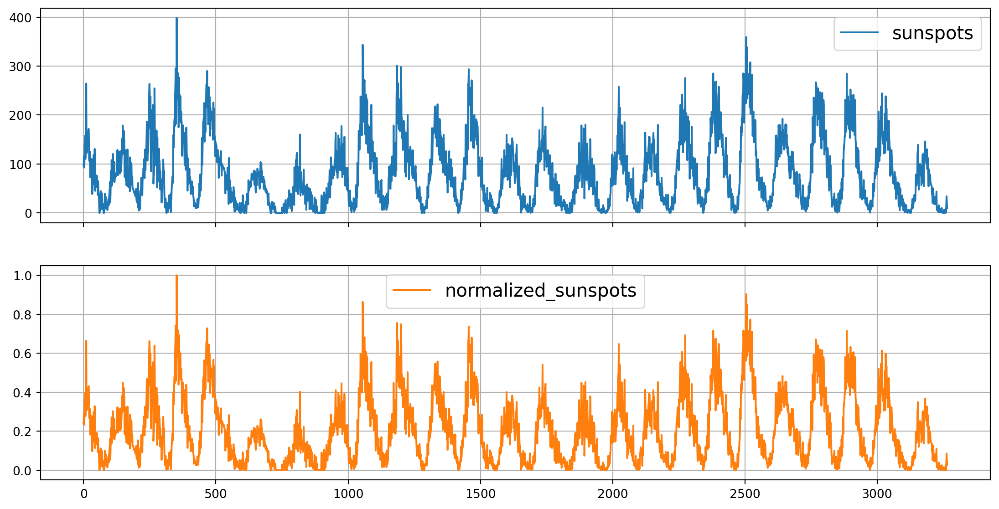
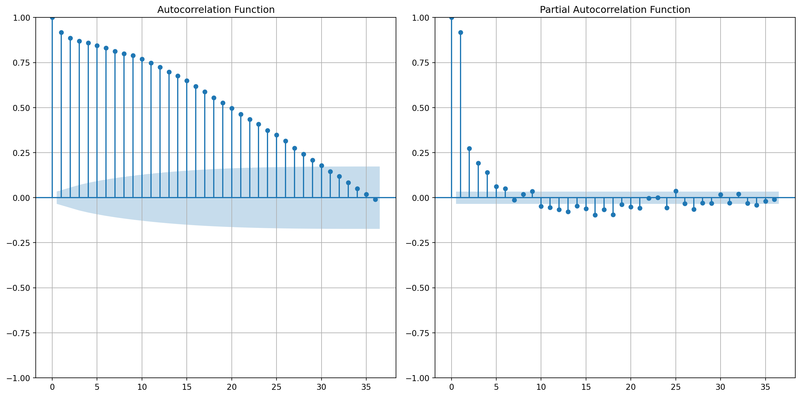
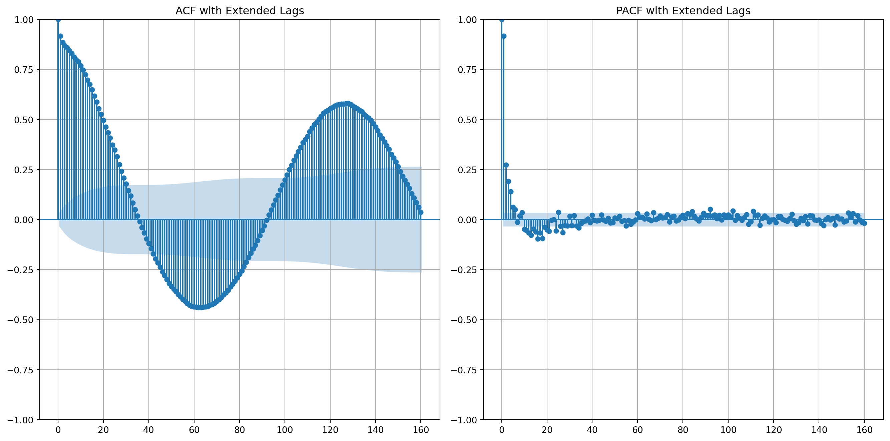
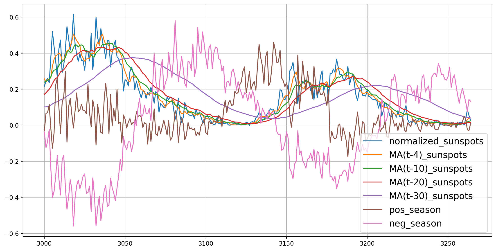
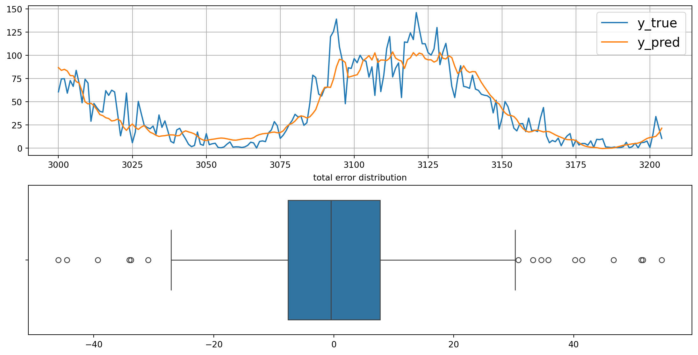
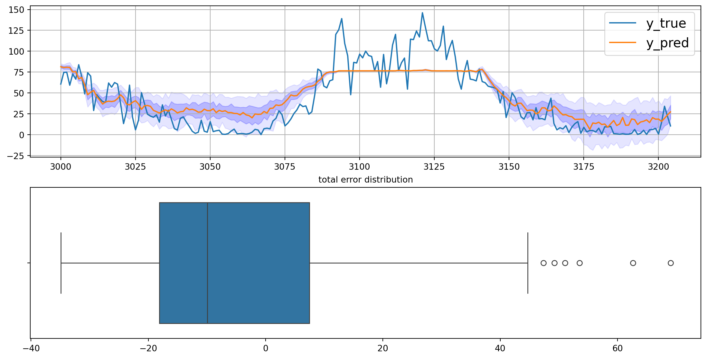

<!DOCTYPE html>
<html xmlns="http://www.w3.org/1999/xhtml" lang="en" xml:lang="en"><head>

<meta charset="utf-8">
<meta name="generator" content="quarto-1.8.23">

<meta name="viewport" content="width=device-width, initial-scale=1.0, user-scalable=yes">

<meta name="author" content="Miguel Alexander Chitiva Diaz">
<meta name="dcterms.date" content="2021-06-19">

<title>Multivariate Regression – The Overfitting Club</title>
<style>
code{white-space: pre-wrap;}
span.smallcaps{font-variant: small-caps;}
div.columns{display: flex; gap: min(4vw, 1.5em);}
div.column{flex: auto; overflow-x: auto;}
div.hanging-indent{margin-left: 1.5em; text-indent: -1.5em;}
ul.task-list{list-style: none;}
ul.task-list li input[type="checkbox"] {
  width: 0.8em;
  margin: 0 0.8em 0.2em -1em; /* quarto-specific, see https://github.com/quarto-dev/quarto-cli/issues/4556 */ 
  vertical-align: middle;
}
/* CSS for syntax highlighting */
html { -webkit-text-size-adjust: 100%; }
pre > code.sourceCode { white-space: pre; position: relative; }
pre > code.sourceCode > span { display: inline-block; line-height: 1.25; }
pre > code.sourceCode > span:empty { height: 1.2em; }
.sourceCode { overflow: visible; }
code.sourceCode > span { color: inherit; text-decoration: inherit; }
div.sourceCode { margin: 1em 0; }
pre.sourceCode { margin: 0; }
@media screen {
div.sourceCode { overflow: auto; }
}
@media print {
pre > code.sourceCode { white-space: pre-wrap; }
pre > code.sourceCode > span { text-indent: -5em; padding-left: 5em; }
}
pre.numberSource code
  { counter-reset: source-line 0; }
pre.numberSource code > span
  { position: relative; left: -4em; counter-increment: source-line; }
pre.numberSource code > span > a:first-child::before
  { content: counter(source-line);
    position: relative; left: -1em; text-align: right; vertical-align: baseline;
    border: none; display: inline-block;
    -webkit-touch-callout: none; -webkit-user-select: none;
    -khtml-user-select: none; -moz-user-select: none;
    -ms-user-select: none; user-select: none;
    padding: 0 4px; width: 4em;
  }
pre.numberSource { margin-left: 3em;  padding-left: 4px; }
div.sourceCode
  {   }
@media screen {
pre > code.sourceCode > span > a:first-child::before { text-decoration: underline; }
}
</style>


<script src="https://cdn.jsdelivr.net/npm/jquery@3.5.1/dist/jquery.min.js" integrity="sha384-ZvpUoO/+PpLXR1lu4jmpXWu80pZlYUAfxl5NsBMWOEPSjUn/6Z/hRTt8+pR6L4N2" crossorigin="anonymous"></script><script src="../../../../site_libs/quarto-nav/quarto-nav.js"></script>
<script src="../../../../site_libs/quarto-nav/headroom.min.js"></script>
<script src="../../../../site_libs/clipboard/clipboard.min.js"></script>
<script src="../../../../site_libs/quarto-search/autocomplete.umd.js"></script>
<script src="../../../../site_libs/quarto-search/fuse.min.js"></script>
<script src="../../../../site_libs/quarto-search/quarto-search.js"></script>
<meta name="quarto:offset" content="../../../../">
<link href="../../../../assets/favicon.png" rel="icon" type="image/png">
<script src="../../../../site_libs/quarto-html/quarto.js" type="module"></script>
<script src="../../../../site_libs/quarto-html/tabsets/tabsets.js" type="module"></script>
<script src="../../../../site_libs/quarto-html/axe/axe-check.js" type="module"></script>
<script src="../../../../site_libs/quarto-html/popper.min.js"></script>
<script src="../../../../site_libs/quarto-html/tippy.umd.min.js"></script>
<script src="../../../../site_libs/quarto-html/anchor.min.js"></script>
<link href="../../../../site_libs/quarto-html/tippy.css" rel="stylesheet">
<link href="../../../../site_libs/quarto-html/quarto-syntax-highlighting-dark-6f6599830d51be977da3b6af758f8eff.css" rel="stylesheet" id="quarto-text-highlighting-styles">
<script src="../../../../site_libs/bootstrap/bootstrap.min.js"></script>
<link href="../../../../site_libs/bootstrap/bootstrap-icons.css" rel="stylesheet">
<link href="../../../../site_libs/bootstrap/bootstrap-adadc4986083cdbaae7d8d976a2c0f22.min.css" rel="stylesheet" append-hash="true" id="quarto-bootstrap" data-mode="dark">
<script id="quarto-search-options" type="application/json">{
  "location": "navbar",
  "copy-button": false,
  "collapse-after": 3,
  "panel-placement": "end",
  "type": "overlay",
  "limit": 50,
  "keyboard-shortcut": [
    "f",
    "/",
    "s"
  ],
  "show-item-context": false,
  "language": {
    "search-no-results-text": "No results",
    "search-matching-documents-text": "matching documents",
    "search-copy-link-title": "Copy link to search",
    "search-hide-matches-text": "Hide additional matches",
    "search-more-match-text": "more match in this document",
    "search-more-matches-text": "more matches in this document",
    "search-clear-button-title": "Clear",
    "search-text-placeholder": "",
    "search-detached-cancel-button-title": "Cancel",
    "search-submit-button-title": "Submit",
    "search-label": "Search"
  }
}</script>
<script src="https://cdn.jsdelivr.net/npm/requirejs@2.3.6/require.min.js" integrity="sha384-c9c+LnTbwQ3aujuU7ULEPVvgLs+Fn6fJUvIGTsuu1ZcCf11fiEubah0ttpca4ntM sha384-6V1/AdqZRWk1KAlWbKBlGhN7VG4iE/yAZcO6NZPMF8od0vukrvr0tg4qY6NSrItx" crossorigin="anonymous"></script>

<script type="application/javascript">define('jquery', [],function() {return window.jQuery;})</script>


<link rel="stylesheet" href="../../../../assets/styles.css">
</head>

<body class="nav-fixed quarto-light">

<div id="quarto-search-results"></div>
  <header id="quarto-header" class="headroom fixed-top quarto-banner">
    <nav class="navbar navbar-expand-lg " data-bs-theme="dark">
      <div class="navbar-container container-fluid">
      <div class="navbar-brand-container mx-auto">
    <a href="../../../../index.html" class="navbar-brand navbar-brand-logo">
    
    
    </a>
    <a class="navbar-brand" href="../../../../index.html">
    <span class="navbar-title">The Overfitting Club</span>
    </a>
  </div>
            <div id="quarto-search" class="" title="Search"></div>
          <button class="navbar-toggler" type="button" data-bs-toggle="collapse" data-bs-target="#navbarCollapse" aria-controls="navbarCollapse" role="menu" aria-expanded="false" aria-label="Toggle navigation" onclick="if (window.quartoToggleHeadroom) { window.quartoToggleHeadroom(); }">
  <span class="navbar-toggler-icon"></span>
</button>
          <div class="collapse navbar-collapse" id="navbarCollapse">
            <ul class="navbar-nav navbar-nav-scroll me-auto">
  <li class="nav-item">
    <a class="nav-link" href="../../../../thoughts.html"> 
<span class="menu-text">Thoughts</span></a>
  </li>  
  <li class="nav-item dropdown ">
    <a class="nav-link dropdown-toggle" href="#" id="nav-menu-tutorials" role="link" data-bs-toggle="dropdown" aria-expanded="false">
 <span class="menu-text">Tutorials</span>
    </a>
    <ul class="dropdown-menu" aria-labelledby="nav-menu-tutorials">    
        <li>
    <a class="dropdown-item" href="../../../../tutorials.html">
 <span class="dropdown-text">All Tutorials</span></a>
  </li>  
        <li>
    <a class="dropdown-item" href="../../../../deep_learning.html">
 <span class="dropdown-text">Deep Learning</span></a>
  </li>  
    </ul>
  </li>
  <li class="nav-item">
    <a class="nav-link" href="../../../../about.html"> 
<span class="menu-text">About</span></a>
  </li>  
</ul>
            <ul class="navbar-nav navbar-nav-scroll ms-auto">
  <li class="nav-item compact">
    <a class="nav-link" href="https://github.com/"> <i class="bi bi-github" role="img">
</i> 
<span class="menu-text"></span></a>
  </li>  
  <li class="nav-item compact">
    <a class="nav-link" href="https://www.linkedin.com/in/miguel-chitiva/"> <i class="bi bi-linkedin" role="img">
</i> 
<span class="menu-text"></span></a>
  </li>  
</ul>
          </div> <!-- /navcollapse -->
            <div class="quarto-navbar-tools">
  <a href="" class="quarto-reader-toggle quarto-navigation-tool px-1" onclick="window.quartoToggleReader(); return false;" title="Toggle reader mode">
  <div class="quarto-reader-toggle-btn">
  <i class="bi"></i>
  </div>
</a>
</div>
      </div> <!-- /container-fluid -->
    </nav>
</header>
<!-- content -->
<header id="title-block-header" class="quarto-title-block default page-columns page-full">
  <div class="quarto-title-banner page-columns page-full">
    <div class="quarto-title column-body">
      <div class="quarto-title-block"><div><h1 class="title">Multivariate Regression</h1><button type="button" class="btn code-tools-button" id="quarto-code-tools-source"><i class="bi"></i> Code</button></div></div>
            <p class="subtitle lead">Prediction of the Amount of Sun Spots Using a Multivariate Time Series</p>
                                <div class="quarto-categories">
                <div class="quarto-category">time-series</div>
                <div class="quarto-category">tensorflow</div>
                <div class="quarto-category">machine-learning</div>
              </div>
                  </div>
  </div>
    
  
  <div class="quarto-title-meta">

      <div>
      <div class="quarto-title-meta-heading">Author</div>
      <div class="quarto-title-meta-contents">
               <p>Miguel Alexander Chitiva Diaz </p>
            </div>
    </div>
      
      <div>
      <div class="quarto-title-meta-heading">Published</div>
      <div class="quarto-title-meta-contents">
        <p class="date">June 19, 2021</p>
      </div>
    </div>
    
      
    </div>
    
  
  </header><div id="quarto-content" class="quarto-container page-columns page-rows-contents page-layout-article page-navbar">
<!-- sidebar -->
<!-- margin-sidebar -->
    <div id="quarto-margin-sidebar" class="sidebar margin-sidebar">
        <nav id="TOC" role="doc-toc" class="toc-active">
    <h2 id="toc-title">On this page</h2>
   
  <ul>
  <li><a href="#configuration" id="toc-configuration" class="nav-link active" data-scroll-target="#configuration">Configuration</a></li>
  <li><a href="#imports" id="toc-imports" class="nav-link" data-scroll-target="#imports">Imports</a></li>
  <li><a href="#download-the-dataset" id="toc-download-the-dataset" class="nav-link" data-scroll-target="#download-the-dataset">Download the Dataset</a></li>
  <li><a href="#data-preprocessing-scaling" id="toc-data-preprocessing-scaling" class="nav-link" data-scroll-target="#data-preprocessing-scaling">Data Preprocessing &amp; Scaling</a></li>
  <li><a href="#dataset-exploration" id="toc-dataset-exploration" class="nav-link" data-scroll-target="#dataset-exploration">Dataset Exploration</a></li>
  <li><a href="#feature-engineering" id="toc-feature-engineering" class="nav-link" data-scroll-target="#feature-engineering">Feature Engineering</a>
  <ul class="collapse">
  <li><a href="#create-moving-averages" id="toc-create-moving-averages" class="nav-link" data-scroll-target="#create-moving-averages">Create Moving Averages</a></li>
  <li><a href="#remove-seasonality-and-create-new-features" id="toc-remove-seasonality-and-create-new-features" class="nav-link" data-scroll-target="#remove-seasonality-and-create-new-features">Remove Seasonality and Create New Features</a></li>
  </ul></li>
  <li><a href="#split-trainvalidation-dataset" id="toc-split-trainvalidation-dataset" class="nav-link" data-scroll-target="#split-trainvalidation-dataset">Split Train/Validation Dataset</a>
  <ul class="collapse">
  <li><a href="#check-multivariate-features" id="toc-check-multivariate-features" class="nav-link" data-scroll-target="#check-multivariate-features">Check Multivariate Features</a></li>
  </ul></li>
  <li><a href="#naïve-predictions-using-only-the-created-features" id="toc-naïve-predictions-using-only-the-created-features" class="nav-link" data-scroll-target="#naïve-predictions-using-only-the-created-features">Naïve Predictions using only the created features</a></li>
  <li><a href="#create-tensorflow-model-and-dataset" id="toc-create-tensorflow-model-and-dataset" class="nav-link" data-scroll-target="#create-tensorflow-model-and-dataset">Create TensorFlow Model and Dataset</a>
  <ul class="collapse">
  <li><a href="#create-windowed-dataset" id="toc-create-windowed-dataset" class="nav-link" data-scroll-target="#create-windowed-dataset">Create Windowed Dataset</a></li>
  <li><a href="#create-the-model-cnn-rnn" id="toc-create-the-model-cnn-rnn" class="nav-link" data-scroll-target="#create-the-model-cnn-rnn">Create the model (CNN + RNN)</a></li>
  </ul></li>
  <li><a href="#error-analysis" id="toc-error-analysis" class="nav-link" data-scroll-target="#error-analysis">Error Analysis</a></li>
  </ul>
</nav>
    </div>
<!-- main -->
<main class="content quarto-banner-title-block" id="quarto-document-content">


<div class="quarto-figure quarto-figure-center">
<figure class="figure">
<p><a href="https://colab.research.google.com/github/miguelalexanderdiaz/quarto_blog/blob/main/blog/posts/tutorials/deep_learning/multivariate_regression/multivariate_regression_tf.ipynb"></a></p>
<figcaption>Open In Colab</figcaption>
</figure>
</div>
<p>In this post, we will explore how to perform multivariate regression with TensorFlow to predict sunspot activity. We’ll use a comprehensive approach that includes feature engineering, time series analysis, and deep learning to forecast sunspot counts.</p>
<section id="configuration" class="level2">
<h2 class="anchored" data-anchor-id="configuration">Configuration</h2>
<div id="e71b7987" class="cell" data-execution_count="1">
<div class="code-copy-outer-scaffold"><div class="sourceCode cell-code" id="cb1"><pre class="sourceCode python code-with-copy"><code class="sourceCode python"><span id="cb1-1"><a href="#cb1-1" aria-hidden="true" tabindex="-1"></a>window_size <span class="op">=</span> <span class="dv">60</span></span>
<span id="cb1-2"><a href="#cb1-2" aria-hidden="true" tabindex="-1"></a>batch_size <span class="op">=</span> <span class="dv">256</span></span></code></pre></div><button title="Copy to Clipboard" class="code-copy-button"><i class="bi"></i></button></div>
</div>
</section>
<section id="imports" class="level2">
<h2 class="anchored" data-anchor-id="imports">Imports</h2>
<div id="55c6f70d" class="cell" data-execution_count="2">
<div class="code-copy-outer-scaffold"><div class="sourceCode cell-code" id="cb2"><pre class="sourceCode python code-with-copy"><code class="sourceCode python"><span id="cb2-1"><a href="#cb2-1" aria-hidden="true" tabindex="-1"></a><span class="im">import</span> os</span>
<span id="cb2-2"><a href="#cb2-2" aria-hidden="true" tabindex="-1"></a>os.environ[<span class="st">"TF_CPP_MIN_LOG_LEVEL"</span>] <span class="op">=</span> <span class="st">"3"</span></span>
<span id="cb2-3"><a href="#cb2-3" aria-hidden="true" tabindex="-1"></a></span>
<span id="cb2-4"><a href="#cb2-4" aria-hidden="true" tabindex="-1"></a><span class="im">import</span> warnings</span>
<span id="cb2-5"><a href="#cb2-5" aria-hidden="true" tabindex="-1"></a>warnings.filterwarnings(</span>
<span id="cb2-6"><a href="#cb2-6" aria-hidden="true" tabindex="-1"></a>    <span class="st">'ignore'</span>,</span>
<span id="cb2-7"><a href="#cb2-7" aria-hidden="true" tabindex="-1"></a>    category<span class="op">=</span><span class="pp">UserWarning</span>,</span>
<span id="cb2-8"><a href="#cb2-8" aria-hidden="true" tabindex="-1"></a>    module<span class="op">=</span><span class="vs">r'</span><span class="dv">^</span><span class="vs">keras</span><span class="kw">(</span><span class="ch">\.</span><span class="cf">|</span><span class="dv">$</span><span class="kw">)</span><span class="vs">'</span></span>
<span id="cb2-9"><a href="#cb2-9" aria-hidden="true" tabindex="-1"></a>)</span>
<span id="cb2-10"><a href="#cb2-10" aria-hidden="true" tabindex="-1"></a></span>
<span id="cb2-11"><a href="#cb2-11" aria-hidden="true" tabindex="-1"></a></span>
<span id="cb2-12"><a href="#cb2-12" aria-hidden="true" tabindex="-1"></a><span class="im">import</span> pandas <span class="im">as</span> pd</span>
<span id="cb2-13"><a href="#cb2-13" aria-hidden="true" tabindex="-1"></a><span class="im">import</span> numpy <span class="im">as</span> np</span>
<span id="cb2-14"><a href="#cb2-14" aria-hidden="true" tabindex="-1"></a><span class="im">import</span> tensorflow <span class="im">as</span> tf</span>
<span id="cb2-15"><a href="#cb2-15" aria-hidden="true" tabindex="-1"></a><span class="im">import</span> matplotlib.pyplot <span class="im">as</span> plt</span>
<span id="cb2-16"><a href="#cb2-16" aria-hidden="true" tabindex="-1"></a><span class="im">import</span> seaborn <span class="im">as</span> sns</span>
<span id="cb2-17"><a href="#cb2-17" aria-hidden="true" tabindex="-1"></a><span class="im">import</span> kagglehub</span>
<span id="cb2-18"><a href="#cb2-18" aria-hidden="true" tabindex="-1"></a><span class="im">from</span> kagglehub <span class="im">import</span> KaggleDatasetAdapter</span>
<span id="cb2-19"><a href="#cb2-19" aria-hidden="true" tabindex="-1"></a><span class="im">from</span> sklearn.preprocessing <span class="im">import</span> MinMaxScaler</span>
<span id="cb2-20"><a href="#cb2-20" aria-hidden="true" tabindex="-1"></a><span class="im">from</span> statsmodels.graphics.tsaplots <span class="im">import</span> plot_acf, plot_pacf</span>
<span id="cb2-21"><a href="#cb2-21" aria-hidden="true" tabindex="-1"></a><span class="im">from</span> sklearn.metrics <span class="im">import</span> mean_absolute_error</span>
<span id="cb2-22"><a href="#cb2-22" aria-hidden="true" tabindex="-1"></a><span class="im">from</span> tensorflow.keras <span class="im">import</span> layers, Model, callbacks, losses</span>
<span id="cb2-23"><a href="#cb2-23" aria-hidden="true" tabindex="-1"></a><span class="im">from</span> datetime <span class="im">import</span> datetime</span></code></pre></div><button title="Copy to Clipboard" class="code-copy-button"><i class="bi"></i></button></div>
</div>
<div id="25874c95" class="cell" data-execution_count="3">
<div class="code-copy-outer-scaffold"><div class="sourceCode cell-code" id="cb3"><pre class="sourceCode python code-with-copy"><code class="sourceCode python"><span id="cb3-1"><a href="#cb3-1" aria-hidden="true" tabindex="-1"></a>physical_devices <span class="op">=</span> tf.config.list_physical_devices(<span class="st">'GPU'</span>)</span>
<span id="cb3-2"><a href="#cb3-2" aria-hidden="true" tabindex="-1"></a><span class="cf">if</span> physical_devices:</span>
<span id="cb3-3"><a href="#cb3-3" aria-hidden="true" tabindex="-1"></a>    tf.config.experimental.set_memory_growth(physical_devices[<span class="dv">0</span>], enable<span class="op">=</span><span class="va">True</span>)</span></code></pre></div><button title="Copy to Clipboard" class="code-copy-button"><i class="bi"></i></button></div>
</div>
</section>
<section id="download-the-dataset" class="level2">
<h2 class="anchored" data-anchor-id="download-the-dataset">Download the Dataset</h2>
<div id="21b603bf" class="cell" data-execution_count="4">
<div class="code-copy-outer-scaffold"><div class="sourceCode cell-code" id="cb4"><pre class="sourceCode python code-with-copy"><code class="sourceCode python"><span id="cb4-1"><a href="#cb4-1" aria-hidden="true" tabindex="-1"></a><span class="co"># Load the sunspots dataset from Kaggle</span></span>
<span id="cb4-2"><a href="#cb4-2" aria-hidden="true" tabindex="-1"></a>df <span class="op">=</span> kagglehub.dataset_load(</span>
<span id="cb4-3"><a href="#cb4-3" aria-hidden="true" tabindex="-1"></a>    KaggleDatasetAdapter.PANDAS,</span>
<span id="cb4-4"><a href="#cb4-4" aria-hidden="true" tabindex="-1"></a>    <span class="st">"robervalt/sunspots"</span>, </span>
<span id="cb4-5"><a href="#cb4-5" aria-hidden="true" tabindex="-1"></a>    <span class="st">"Sunspots.csv"</span>,</span>
<span id="cb4-6"><a href="#cb4-6" aria-hidden="true" tabindex="-1"></a>)</span>
<span id="cb4-7"><a href="#cb4-7" aria-hidden="true" tabindex="-1"></a>df.head()</span></code></pre></div><button title="Copy to Clipboard" class="code-copy-button"><i class="bi"></i></button></div>
<div class="cell-output cell-output-display" data-execution_count="4">
<div>


<table class="dataframe caption-top table table-sm table-striped small" data-border="1">
<thead>
<tr class="header">
<th data-quarto-table-cell-role="th"></th>
<th data-quarto-table-cell-role="th">Unnamed: 0</th>
<th data-quarto-table-cell-role="th">Date</th>
<th data-quarto-table-cell-role="th">Monthly Mean Total Sunspot Number</th>
</tr>
</thead>
<tbody>
<tr class="odd">
<th data-quarto-table-cell-role="th">0</th>
<td>0</td>
<td>1749-01-31</td>
<td>96.7</td>
</tr>
<tr class="even">
<th data-quarto-table-cell-role="th">1</th>
<td>1</td>
<td>1749-02-28</td>
<td>104.3</td>
</tr>
<tr class="odd">
<th data-quarto-table-cell-role="th">2</th>
<td>2</td>
<td>1749-03-31</td>
<td>116.7</td>
</tr>
<tr class="even">
<th data-quarto-table-cell-role="th">3</th>
<td>3</td>
<td>1749-04-30</td>
<td>92.8</td>
</tr>
<tr class="odd">
<th data-quarto-table-cell-role="th">4</th>
<td>4</td>
<td>1749-05-31</td>
<td>141.7</td>
</tr>
</tbody>
</table>

</div>
</div>
</div>
</section>
<section id="data-preprocessing-scaling" class="level2">
<h2 class="anchored" data-anchor-id="data-preprocessing-scaling">Data Preprocessing &amp; Scaling</h2>
<div id="579857ac" class="cell" data-execution_count="5">
<div class="code-copy-outer-scaffold"><div class="sourceCode cell-code" id="cb5"><pre class="sourceCode python code-with-copy"><code class="sourceCode python"><span id="cb5-1"><a href="#cb5-1" aria-hidden="true" tabindex="-1"></a>df <span class="op">=</span> df.drop(df.columns[<span class="dv">0</span>], axis<span class="op">=</span><span class="dv">1</span>)</span>
<span id="cb5-2"><a href="#cb5-2" aria-hidden="true" tabindex="-1"></a>df <span class="op">=</span> df.sort_values(<span class="st">'Date'</span>)</span>
<span id="cb5-3"><a href="#cb5-3" aria-hidden="true" tabindex="-1"></a>df <span class="op">=</span> df.rename(columns<span class="op">=</span>{df.columns[<span class="dv">0</span>]: <span class="st">'date'</span>, df.columns[<span class="dv">1</span>]: <span class="st">'sunspots'</span>})</span>
<span id="cb5-4"><a href="#cb5-4" aria-hidden="true" tabindex="-1"></a></span>
<span id="cb5-5"><a href="#cb5-5" aria-hidden="true" tabindex="-1"></a>scaler <span class="op">=</span> MinMaxScaler()</span>
<span id="cb5-6"><a href="#cb5-6" aria-hidden="true" tabindex="-1"></a>df[<span class="st">'normalized_sunspots'</span>] <span class="op">=</span> scaler.fit_transform(np.expand_dims(df[<span class="st">'sunspots'</span>], axis<span class="op">=-</span><span class="dv">1</span>))</span>
<span id="cb5-7"><a href="#cb5-7" aria-hidden="true" tabindex="-1"></a>df</span></code></pre></div><button title="Copy to Clipboard" class="code-copy-button"><i class="bi"></i></button></div>
<div class="cell-output cell-output-display" data-execution_count="5">
<div>


<table class="dataframe caption-top table table-sm table-striped small" data-border="1">
<thead>
<tr class="header">
<th data-quarto-table-cell-role="th"></th>
<th data-quarto-table-cell-role="th">date</th>
<th data-quarto-table-cell-role="th">sunspots</th>
<th data-quarto-table-cell-role="th">normalized_sunspots</th>
</tr>
</thead>
<tbody>
<tr class="odd">
<th data-quarto-table-cell-role="th">0</th>
<td>1749-01-31</td>
<td>96.7</td>
<td>0.242843</td>
</tr>
<tr class="even">
<th data-quarto-table-cell-role="th">1</th>
<td>1749-02-28</td>
<td>104.3</td>
<td>0.261929</td>
</tr>
<tr class="odd">
<th data-quarto-table-cell-role="th">2</th>
<td>1749-03-31</td>
<td>116.7</td>
<td>0.293069</td>
</tr>
<tr class="even">
<th data-quarto-table-cell-role="th">3</th>
<td>1749-04-30</td>
<td>92.8</td>
<td>0.233049</td>
</tr>
<tr class="odd">
<th data-quarto-table-cell-role="th">4</th>
<td>1749-05-31</td>
<td>141.7</td>
<td>0.355851</td>
</tr>
<tr class="even">
<th data-quarto-table-cell-role="th">...</th>
<td>...</td>
<td>...</td>
<td>...</td>
</tr>
<tr class="odd">
<th data-quarto-table-cell-role="th">3260</th>
<td>2020-09-30</td>
<td>0.6</td>
<td>0.001507</td>
</tr>
<tr class="even">
<th data-quarto-table-cell-role="th">3261</th>
<td>2020-10-31</td>
<td>14.4</td>
<td>0.036163</td>
</tr>
<tr class="odd">
<th data-quarto-table-cell-role="th">3262</th>
<td>2020-11-30</td>
<td>34.0</td>
<td>0.085384</td>
</tr>
<tr class="even">
<th data-quarto-table-cell-role="th">3263</th>
<td>2020-12-31</td>
<td>21.8</td>
<td>0.054746</td>
</tr>
<tr class="odd">
<th data-quarto-table-cell-role="th">3264</th>
<td>2021-01-31</td>
<td>10.4</td>
<td>0.026118</td>
</tr>
</tbody>
</table>

<p>3265 rows × 3 columns</p>
</div>
</div>
</div>
</section>
<section id="dataset-exploration" class="level2">
<h2 class="anchored" data-anchor-id="dataset-exploration">Dataset Exploration</h2>
<div id="0625dc75" class="cell" data-fig-height="10" data-fig-width="150" data-execution_count="6">
<div class="code-copy-outer-scaffold"><div class="sourceCode cell-code" id="cb6"><pre class="sourceCode python code-with-copy"><code class="sourceCode python"><span id="cb6-1"><a href="#cb6-1" aria-hidden="true" tabindex="-1"></a>graphs <span class="op">=</span> df.plot(grid<span class="op">=</span><span class="va">True</span>, figsize<span class="op">=</span>(<span class="dv">50</span>,<span class="dv">10</span>), fontsize<span class="op">=</span><span class="dv">20</span>, subplots<span class="op">=</span><span class="va">True</span>)</span>
<span id="cb6-2"><a href="#cb6-2" aria-hidden="true" tabindex="-1"></a>[x.legend(prop<span class="op">=</span>{<span class="st">'size'</span>: <span class="dv">30</span>}) <span class="cf">for</span> x <span class="kw">in</span> graphs]<span class="op">;</span></span></code></pre></div><button title="Copy to Clipboard" class="code-copy-button"><i class="bi"></i></button></div>
<div class="cell-output cell-output-display">
<div>
<figure class="figure">
<p></p>
</figure>
</div>
</div>
</div>
<div id="8b233621" class="cell" data-fig-height="5" data-fig-width="12" data-execution_count="7">
<div class="code-copy-outer-scaffold"><div class="sourceCode cell-code" id="cb7"><pre class="sourceCode python code-with-copy"><code class="sourceCode python"><span id="cb7-1"><a href="#cb7-1" aria-hidden="true" tabindex="-1"></a>f <span class="op">=</span> plt.figure(figsize<span class="op">=</span>(<span class="dv">12</span>,<span class="dv">5</span>))</span>
<span id="cb7-2"><a href="#cb7-2" aria-hidden="true" tabindex="-1"></a>ax1 <span class="op">=</span> f.add_subplot(<span class="dv">121</span>)</span>
<span id="cb7-3"><a href="#cb7-3" aria-hidden="true" tabindex="-1"></a>ax2 <span class="op">=</span> f.add_subplot(<span class="dv">122</span>)</span>
<span id="cb7-4"><a href="#cb7-4" aria-hidden="true" tabindex="-1"></a>plot_acf(df[<span class="st">'normalized_sunspots'</span>], ax<span class="op">=</span>ax1, title<span class="op">=</span><span class="st">'Autocorrelation Function'</span>)</span>
<span id="cb7-5"><a href="#cb7-5" aria-hidden="true" tabindex="-1"></a>plot_pacf(df[<span class="st">'normalized_sunspots'</span>], ax<span class="op">=</span>ax2, title<span class="op">=</span><span class="st">'Partial Autocorrelation Function'</span>)</span>
<span id="cb7-6"><a href="#cb7-6" aria-hidden="true" tabindex="-1"></a>plt.tight_layout()</span>
<span id="cb7-7"><a href="#cb7-7" aria-hidden="true" tabindex="-1"></a>plt.show()</span></code></pre></div><button title="Copy to Clipboard" class="code-copy-button"><i class="bi"></i></button></div>
<div class="cell-output cell-output-display">
<div>
<figure class="figure">
<p></p>
</figure>
</div>
</div>
</div>
<div id="976fade4" class="cell" data-fig-height="5" data-fig-width="12" data-execution_count="8">
<div class="code-copy-outer-scaffold"><div class="sourceCode cell-code" id="cb8"><pre class="sourceCode python code-with-copy"><code class="sourceCode python"><span id="cb8-1"><a href="#cb8-1" aria-hidden="true" tabindex="-1"></a>f <span class="op">=</span> plt.figure(figsize<span class="op">=</span>(<span class="dv">12</span>,<span class="dv">5</span>))</span>
<span id="cb8-2"><a href="#cb8-2" aria-hidden="true" tabindex="-1"></a>ax1 <span class="op">=</span> f.add_subplot(<span class="dv">121</span>)</span>
<span id="cb8-3"><a href="#cb8-3" aria-hidden="true" tabindex="-1"></a>ax2 <span class="op">=</span> f.add_subplot(<span class="dv">122</span>)</span>
<span id="cb8-4"><a href="#cb8-4" aria-hidden="true" tabindex="-1"></a>plot_acf(df[<span class="st">'normalized_sunspots'</span>], ax<span class="op">=</span>ax1, lags<span class="op">=</span><span class="dv">160</span>, title<span class="op">=</span><span class="st">'ACF with Extended Lags'</span>)</span>
<span id="cb8-5"><a href="#cb8-5" aria-hidden="true" tabindex="-1"></a>plot_pacf(df[<span class="st">'normalized_sunspots'</span>], ax<span class="op">=</span>ax2, lags<span class="op">=</span><span class="dv">160</span>, title<span class="op">=</span><span class="st">'PACF with Extended Lags'</span>)</span>
<span id="cb8-6"><a href="#cb8-6" aria-hidden="true" tabindex="-1"></a>plt.tight_layout()</span>
<span id="cb8-7"><a href="#cb8-7" aria-hidden="true" tabindex="-1"></a>plt.show()</span></code></pre></div><button title="Copy to Clipboard" class="code-copy-button"><i class="bi"></i></button></div>
<div class="cell-output cell-output-display">
<div>
<figure class="figure">
<p></p>
</figure>
</div>
</div>
</div>
<div id="5716e6a4" class="cell" data-execution_count="9">
<div class="code-copy-outer-scaffold"><div class="sourceCode cell-code" id="cb9"><pre class="sourceCode python code-with-copy"><code class="sourceCode python"><span id="cb9-1"><a href="#cb9-1" aria-hidden="true" tabindex="-1"></a>lag_pos_corr <span class="op">=</span> np.argmax([df[<span class="st">'normalized_sunspots'</span>].autocorr(lag<span class="op">=</span>x) <span class="cf">for</span> x <span class="kw">in</span> <span class="bu">range</span>(<span class="dv">110</span>, <span class="dv">130</span>, <span class="dv">1</span>)])</span>
<span id="cb9-2"><a href="#cb9-2" aria-hidden="true" tabindex="-1"></a>lag_pos_corr <span class="op">=</span> <span class="bu">list</span>(<span class="bu">range</span>(<span class="dv">110</span>, <span class="dv">130</span>, <span class="dv">1</span>))[lag_pos_corr]</span>
<span id="cb9-3"><a href="#cb9-3" aria-hidden="true" tabindex="-1"></a></span>
<span id="cb9-4"><a href="#cb9-4" aria-hidden="true" tabindex="-1"></a>lag_neg_corr <span class="op">=</span> np.argmin([df[<span class="st">'normalized_sunspots'</span>].autocorr(lag<span class="op">=</span>x) <span class="cf">for</span> x <span class="kw">in</span> <span class="bu">range</span>(<span class="dv">55</span>, <span class="dv">65</span>, <span class="dv">1</span>)])</span>
<span id="cb9-5"><a href="#cb9-5" aria-hidden="true" tabindex="-1"></a>lag_neg_corr <span class="op">=</span> <span class="bu">list</span>(<span class="bu">range</span>(<span class="dv">55</span>, <span class="dv">65</span>, <span class="dv">1</span>))[lag_neg_corr]</span>
<span id="cb9-6"><a href="#cb9-6" aria-hidden="true" tabindex="-1"></a></span>
<span id="cb9-7"><a href="#cb9-7" aria-hidden="true" tabindex="-1"></a><span class="bu">print</span>(<span class="ss">f"Seasonal max correlation: </span><span class="sc">{</span>lag_pos_corr<span class="sc">}</span><span class="ss">"</span>)</span>
<span id="cb9-8"><a href="#cb9-8" aria-hidden="true" tabindex="-1"></a><span class="bu">print</span>(<span class="ss">f"Seasonal min correlation: </span><span class="sc">{</span>lag_neg_corr<span class="sc">}</span><span class="ss">"</span>)</span></code></pre></div><button title="Copy to Clipboard" class="code-copy-button"><i class="bi"></i></button></div>
<div class="cell-output cell-output-stdout">
<pre><code>Seasonal max correlation: 128
Seasonal min correlation: 63</code></pre>
</div>
</div>
<div id="df01293b" class="cell" data-execution_count="10">
<div class="code-copy-outer-scaffold"><div class="sourceCode cell-code" id="cb11"><pre class="sourceCode python code-with-copy"><code class="sourceCode python"><span id="cb11-1"><a href="#cb11-1" aria-hidden="true" tabindex="-1"></a>lag_pos_corr <span class="op">=</span> np.argmax([df[<span class="st">'normalized_sunspots'</span>].autocorr(lag<span class="op">=</span>x) <span class="cf">for</span> x <span class="kw">in</span> <span class="bu">range</span>(<span class="dv">110</span>, <span class="dv">130</span>, <span class="dv">1</span>) ])</span>
<span id="cb11-2"><a href="#cb11-2" aria-hidden="true" tabindex="-1"></a>lag_pos_corr <span class="op">=</span> <span class="bu">list</span>(<span class="bu">range</span>(<span class="dv">110</span>, <span class="dv">130</span>, <span class="dv">1</span>))[lag_pos_corr]</span>
<span id="cb11-3"><a href="#cb11-3" aria-hidden="true" tabindex="-1"></a></span>
<span id="cb11-4"><a href="#cb11-4" aria-hidden="true" tabindex="-1"></a>lag_neg_corr <span class="op">=</span> np.argmin([df[<span class="st">'normalized_sunspots'</span>].autocorr(lag<span class="op">=</span>x) <span class="cf">for</span> x <span class="kw">in</span> <span class="bu">range</span>(<span class="dv">55</span>, <span class="dv">65</span>, <span class="dv">1</span>) ])</span>
<span id="cb11-5"><a href="#cb11-5" aria-hidden="true" tabindex="-1"></a>lag_neg_corr <span class="op">=</span> <span class="bu">list</span>(<span class="bu">range</span>(<span class="dv">55</span>, <span class="dv">65</span>, <span class="dv">1</span>))[lag_neg_corr]</span>
<span id="cb11-6"><a href="#cb11-6" aria-hidden="true" tabindex="-1"></a></span>
<span id="cb11-7"><a href="#cb11-7" aria-hidden="true" tabindex="-1"></a><span class="bu">print</span>(<span class="ss">f"seasonal max_corr:</span><span class="sc">{</span>lag_pos_corr<span class="sc">}</span><span class="ss"> </span><span class="ch">\t</span><span class="ss"> seasonal min_corr:</span><span class="sc">{</span>lag_neg_corr<span class="sc">}</span><span class="ss">"</span>)</span></code></pre></div><button title="Copy to Clipboard" class="code-copy-button"><i class="bi"></i></button></div>
<div class="cell-output cell-output-stdout">
<pre><code>seasonal max_corr:128    seasonal min_corr:63</code></pre>
</div>
</div>
</section>
<section id="feature-engineering" class="level2">
<h2 class="anchored" data-anchor-id="feature-engineering">Feature Engineering</h2>
<section id="create-moving-averages" class="level3">
<h3 class="anchored" data-anchor-id="create-moving-averages">Create Moving Averages</h3>
<div id="8faf21a4" class="cell" data-execution_count="11">
<div class="code-copy-outer-scaffold"><div class="sourceCode cell-code" id="cb13"><pre class="sourceCode python code-with-copy"><code class="sourceCode python"><span id="cb13-1"><a href="#cb13-1" aria-hidden="true" tabindex="-1"></a><span class="co"># Create moving averages over several time windows</span></span>
<span id="cb13-2"><a href="#cb13-2" aria-hidden="true" tabindex="-1"></a>df[<span class="st">'MA(t-4)_sunspots'</span>] <span class="op">=</span> df[<span class="st">'normalized_sunspots'</span>].rolling(window<span class="op">=</span><span class="dv">5</span>).mean()</span>
<span id="cb13-3"><a href="#cb13-3" aria-hidden="true" tabindex="-1"></a>df[<span class="st">'MA(t-10)_sunspots'</span>] <span class="op">=</span> df[<span class="st">'normalized_sunspots'</span>].rolling(window<span class="op">=</span><span class="dv">11</span>).mean()</span>
<span id="cb13-4"><a href="#cb13-4" aria-hidden="true" tabindex="-1"></a>df[<span class="st">'MA(t-20)_sunspots'</span>] <span class="op">=</span> df[<span class="st">'normalized_sunspots'</span>].rolling(window<span class="op">=</span><span class="dv">21</span>).mean()</span>
<span id="cb13-5"><a href="#cb13-5" aria-hidden="true" tabindex="-1"></a>df[<span class="st">'MA(t-30)_sunspots'</span>] <span class="op">=</span> df[<span class="st">'normalized_sunspots'</span>].rolling(window<span class="op">=</span><span class="dv">61</span>).mean()</span>
<span id="cb13-6"><a href="#cb13-6" aria-hidden="true" tabindex="-1"></a>df.tail()</span></code></pre></div><button title="Copy to Clipboard" class="code-copy-button"><i class="bi"></i></button></div>
<div class="cell-output cell-output-display" data-execution_count="11">
<div>


<table class="dataframe caption-top table table-sm table-striped small" data-border="1">
<thead>
<tr class="header">
<th data-quarto-table-cell-role="th"></th>
<th data-quarto-table-cell-role="th">date</th>
<th data-quarto-table-cell-role="th">sunspots</th>
<th data-quarto-table-cell-role="th">normalized_sunspots</th>
<th data-quarto-table-cell-role="th">MA(t-4)_sunspots</th>
<th data-quarto-table-cell-role="th">MA(t-10)_sunspots</th>
<th data-quarto-table-cell-role="th">MA(t-20)_sunspots</th>
<th data-quarto-table-cell-role="th">MA(t-30)_sunspots</th>
</tr>
</thead>
<tbody>
<tr class="odd">
<th data-quarto-table-cell-role="th">3260</th>
<td>2020-09-30</td>
<td>0.6</td>
<td>0.001507</td>
<td>0.010146</td>
<td>0.008059</td>
<td>0.009124</td>
<td>0.047859</td>
</tr>
<tr class="even">
<th data-quarto-table-cell-role="th">3261</th>
<td>2020-10-31</td>
<td>14.4</td>
<td>0.036163</td>
<td>0.017278</td>
<td>0.011232</td>
<td>0.009926</td>
<td>0.045216</td>
</tr>
<tr class="odd">
<th data-quarto-table-cell-role="th">3262</th>
<td>2020-11-30</td>
<td>34.0</td>
<td>0.085384</td>
<td>0.031441</td>
<td>0.018652</td>
<td>0.013896</td>
<td>0.043997</td>
</tr>
<tr class="even">
<th data-quarto-table-cell-role="th">3263</th>
<td>2020-12-31</td>
<td>21.8</td>
<td>0.054746</td>
<td>0.039327</td>
<td>0.022214</td>
<td>0.015379</td>
<td>0.042334</td>
</tr>
<tr class="odd">
<th data-quarto-table-cell-role="th">3264</th>
<td>2021-01-31</td>
<td>10.4</td>
<td>0.026118</td>
<td>0.040784</td>
<td>0.024542</td>
<td>0.015534</td>
<td>0.040374</td>
</tr>
</tbody>
</table>

</div>
</div>
</div>
</section>
<section id="remove-seasonality-and-create-new-features" class="level3">
<h3 class="anchored" data-anchor-id="remove-seasonality-and-create-new-features">Remove Seasonality and Create New Features</h3>
<div id="937479b5" class="cell" data-execution_count="12">
<div class="code-copy-outer-scaffold"><div class="sourceCode cell-code" id="cb14"><pre class="sourceCode python code-with-copy"><code class="sourceCode python"><span id="cb14-1"><a href="#cb14-1" aria-hidden="true" tabindex="-1"></a><span class="co"># Create seasonal features</span></span>
<span id="cb14-2"><a href="#cb14-2" aria-hidden="true" tabindex="-1"></a>pos_season <span class="op">=</span> df[<span class="dv">0</span>:<span class="bu">len</span>(df)<span class="op">-</span>lag_pos_corr][<span class="st">'normalized_sunspots'</span>].values <span class="op">-</span> df[lag_pos_corr:][<span class="st">'normalized_sunspots'</span>].values</span>
<span id="cb14-3"><a href="#cb14-3" aria-hidden="true" tabindex="-1"></a>df[<span class="st">'pos_season'</span>] <span class="op">=</span> np.concatenate([np.array([np.nan]<span class="op">*</span>(<span class="bu">len</span>(df)<span class="op">-</span><span class="bu">len</span>(pos_season))), pos_season])</span>
<span id="cb14-4"><a href="#cb14-4" aria-hidden="true" tabindex="-1"></a></span>
<span id="cb14-5"><a href="#cb14-5" aria-hidden="true" tabindex="-1"></a>neg_season <span class="op">=</span> df[<span class="dv">0</span>:<span class="bu">len</span>(df)<span class="op">-</span>lag_neg_corr][<span class="st">'normalized_sunspots'</span>].values <span class="op">-</span> df[lag_neg_corr:][<span class="st">'normalized_sunspots'</span>].values</span>
<span id="cb14-6"><a href="#cb14-6" aria-hidden="true" tabindex="-1"></a>df[<span class="st">'neg_season'</span>] <span class="op">=</span> np.concatenate([np.array([np.nan]<span class="op">*</span>(<span class="bu">len</span>(df)<span class="op">-</span><span class="bu">len</span>(neg_season))), neg_season])</span></code></pre></div><button title="Copy to Clipboard" class="code-copy-button"><i class="bi"></i></button></div>
</div>
</section>
</section>
<section id="split-trainvalidation-dataset" class="level2">
<h2 class="anchored" data-anchor-id="split-trainvalidation-dataset">Split Train/Validation Dataset</h2>
<div id="082558aa" class="cell" data-execution_count="13">
<div class="code-copy-outer-scaffold"><div class="sourceCode cell-code" id="cb15"><pre class="sourceCode python code-with-copy"><code class="sourceCode python"><span id="cb15-1"><a href="#cb15-1" aria-hidden="true" tabindex="-1"></a>train_df <span class="op">=</span> df[<span class="dv">0</span>:<span class="dv">3000</span>]</span>
<span id="cb15-2"><a href="#cb15-2" aria-hidden="true" tabindex="-1"></a>val_df <span class="op">=</span> df[<span class="dv">3000</span>:]</span>
<span id="cb15-3"><a href="#cb15-3" aria-hidden="true" tabindex="-1"></a></span>
<span id="cb15-4"><a href="#cb15-4" aria-hidden="true" tabindex="-1"></a><span class="co"># Drop NaN values</span></span>
<span id="cb15-5"><a href="#cb15-5" aria-hidden="true" tabindex="-1"></a>train_df <span class="op">=</span> train_df.dropna()</span>
<span id="cb15-6"><a href="#cb15-6" aria-hidden="true" tabindex="-1"></a>val_df <span class="op">=</span> val_df.dropna()</span>
<span id="cb15-7"><a href="#cb15-7" aria-hidden="true" tabindex="-1"></a></span>
<span id="cb15-8"><a href="#cb15-8" aria-hidden="true" tabindex="-1"></a><span class="bu">print</span>(<span class="ss">f"Training set size: </span><span class="sc">{</span><span class="bu">len</span>(train_df)<span class="sc">}</span><span class="ss">"</span>)</span>
<span id="cb15-9"><a href="#cb15-9" aria-hidden="true" tabindex="-1"></a><span class="bu">print</span>(<span class="ss">f"Validation set size: </span><span class="sc">{</span><span class="bu">len</span>(val_df)<span class="sc">}</span><span class="ss">"</span>)</span>
<span id="cb15-10"><a href="#cb15-10" aria-hidden="true" tabindex="-1"></a>train_df.head()</span></code></pre></div><button title="Copy to Clipboard" class="code-copy-button"><i class="bi"></i></button></div>
<div class="cell-output cell-output-stdout">
<pre><code>Training set size: 2872
Validation set size: 265</code></pre>
</div>
<div class="cell-output cell-output-display" data-execution_count="13">
<div>


<table class="dataframe caption-top table table-sm table-striped small" data-border="1">
<thead>
<tr class="header">
<th data-quarto-table-cell-role="th"></th>
<th data-quarto-table-cell-role="th">date</th>
<th data-quarto-table-cell-role="th">sunspots</th>
<th data-quarto-table-cell-role="th">normalized_sunspots</th>
<th data-quarto-table-cell-role="th">MA(t-4)_sunspots</th>
<th data-quarto-table-cell-role="th">MA(t-10)_sunspots</th>
<th data-quarto-table-cell-role="th">MA(t-20)_sunspots</th>
<th data-quarto-table-cell-role="th">MA(t-30)_sunspots</th>
<th data-quarto-table-cell-role="th">pos_season</th>
<th data-quarto-table-cell-role="th">neg_season</th>
</tr>
</thead>
<tbody>
<tr class="odd">
<th data-quarto-table-cell-role="th">128</th>
<td>1759-09-30</td>
<td>128.7</td>
<td>0.323204</td>
<td>0.249874</td>
<td>0.217113</td>
<td>0.210435</td>
<td>0.118817</td>
<td>-0.080362</td>
<td>-0.211452</td>
</tr>
<tr class="even">
<th data-quarto-table-cell-role="th">129</th>
<td>1759-10-31</td>
<td>99.5</td>
<td>0.249874</td>
<td>0.258815</td>
<td>0.223460</td>
<td>0.214836</td>
<td>0.122350</td>
<td>0.012054</td>
<td>-0.171271</td>
</tr>
<tr class="odd">
<th data-quarto-table-cell-role="th">130</th>
<td>1759-11-30</td>
<td>77.2</td>
<td>0.193872</td>
<td>0.255751</td>
<td>0.224716</td>
<td>0.213700</td>
<td>0.123873</td>
<td>0.099196</td>
<td>-0.142391</td>
</tr>
<tr class="even">
<th data-quarto-table-cell-role="th">131</th>
<td>1759-12-31</td>
<td>95.0</td>
<td>0.238574</td>
<td>0.260773</td>
<td>0.228026</td>
<td>0.215290</td>
<td>0.126878</td>
<td>-0.005525</td>
<td>-0.204169</td>
</tr>
<tr class="odd">
<th data-quarto-table-cell-role="th">132</th>
<td>1760-01-31</td>
<td>112.2</td>
<td>0.281768</td>
<td>0.257459</td>
<td>0.236907</td>
<td>0.214298</td>
<td>0.131209</td>
<td>0.074083</td>
<td>-0.180814</td>
</tr>
</tbody>
</table>

</div>
</div>
</div>
<section id="check-multivariate-features" class="level3">
<h3 class="anchored" data-anchor-id="check-multivariate-features">Check Multivariate Features</h3>
<div id="89ab76c1" class="cell" data-execution_count="14">
<div class="code-copy-outer-scaffold"><div class="sourceCode cell-code" id="cb17"><pre class="sourceCode python code-with-copy"><code class="sourceCode python"><span id="cb17-1"><a href="#cb17-1" aria-hidden="true" tabindex="-1"></a>val_df[val_df.columns[<span class="op">-</span><span class="dv">7</span>:]].plot(figsize<span class="op">=</span>(<span class="dv">50</span>,<span class="dv">15</span>), fontsize<span class="op">=</span><span class="dv">20</span>, grid<span class="op">=</span><span class="va">True</span>).legend(prop<span class="op">=</span>{<span class="st">'size'</span>: <span class="dv">20</span>})<span class="op">;</span></span></code></pre></div><button title="Copy to Clipboard" class="code-copy-button"><i class="bi"></i></button></div>
<div class="cell-output cell-output-display">
<div>
<figure class="figure">
<p></p>
</figure>
</div>
</div>
</div>
</section>
</section>
<section id="naïve-predictions-using-only-the-created-features" class="level2">
<h2 class="anchored" data-anchor-id="naïve-predictions-using-only-the-created-features">Naïve Predictions using only the created features</h2>
<div id="d8aefbed" class="cell" data-execution_count="15">
<div class="code-copy-outer-scaffold"><div class="sourceCode cell-code" id="cb18"><pre class="sourceCode python code-with-copy"><code class="sourceCode python"><span id="cb18-1"><a href="#cb18-1" aria-hidden="true" tabindex="-1"></a><span class="cf">for</span> col <span class="kw">in</span> val_df.columns[<span class="op">-</span><span class="dv">6</span>:]:</span>
<span id="cb18-2"><a href="#cb18-2" aria-hidden="true" tabindex="-1"></a>    <span class="bu">print</span>(<span class="ss">f"MAE using only '</span><span class="sc">{</span>col<span class="sc">}</span><span class="ss">' = </span><span class="sc">{</span>mean_absolute_error(val_df[<span class="st">'normalized_sunspots'</span>], val_df[col])<span class="sc">}</span><span class="ss">"</span>)</span></code></pre></div><button title="Copy to Clipboard" class="code-copy-button"><i class="bi"></i></button></div>
<div class="cell-output cell-output-stdout">
<pre><code>MAE using only 'MA(t-4)_sunspots' = 0.028975484017702304
MAE using only 'MA(t-10)_sunspots' = 0.03701519617007236
MAE using only 'MA(t-20)_sunspots' = 0.053933446240336684
MAE using only 'MA(t-30)_sunspots' = 0.12551217565341594
MAE using only 'pos_season' = 0.17150194744273764
MAE using only 'neg_season' = 0.344110762582565</code></pre>
</div>
</div>
</section>
<section id="create-tensorflow-model-and-dataset" class="level2">
<h2 class="anchored" data-anchor-id="create-tensorflow-model-and-dataset">Create TensorFlow Model and Dataset</h2>
<section id="create-windowed-dataset" class="level3">
<h3 class="anchored" data-anchor-id="create-windowed-dataset">Create Windowed Dataset</h3>
<div id="00c4bad0" class="cell" data-execution_count="16">
<div class="code-copy-outer-scaffold"><div class="sourceCode cell-code" id="cb20"><pre class="sourceCode python code-with-copy"><code class="sourceCode python"><span id="cb20-1"><a href="#cb20-1" aria-hidden="true" tabindex="-1"></a>train_ds  <span class="op">=</span> tf.data.Dataset.from_tensor_slices(train_df[train_df.columns[<span class="op">-</span><span class="dv">7</span>:]])</span>
<span id="cb20-2"><a href="#cb20-2" aria-hidden="true" tabindex="-1"></a>val_ds  <span class="op">=</span> tf.data.Dataset.from_tensor_slices(val_df[val_df.columns[<span class="op">-</span><span class="dv">7</span>:]])</span>
<span id="cb20-3"><a href="#cb20-3" aria-hidden="true" tabindex="-1"></a></span>
<span id="cb20-4"><a href="#cb20-4" aria-hidden="true" tabindex="-1"></a></span>
<span id="cb20-5"><a href="#cb20-5" aria-hidden="true" tabindex="-1"></a><span class="kw">def</span> windowed_ds(ds, window_size, pred_window<span class="op">=</span><span class="dv">1</span>, shift<span class="op">=</span><span class="dv">1</span>):</span>
<span id="cb20-6"><a href="#cb20-6" aria-hidden="true" tabindex="-1"></a>    ds <span class="op">=</span> ds.window(window_size <span class="op">+</span> pred_window, shift<span class="op">=</span>shift, drop_remainder<span class="op">=</span><span class="va">True</span>)</span>
<span id="cb20-7"><a href="#cb20-7" aria-hidden="true" tabindex="-1"></a>    ds <span class="op">=</span> ds.flat_map(<span class="kw">lambda</span> w: w.batch(window_size <span class="op">+</span> pred_window))</span>
<span id="cb20-8"><a href="#cb20-8" aria-hidden="true" tabindex="-1"></a>    ds <span class="op">=</span> ds.<span class="bu">map</span>(<span class="kw">lambda</span> w: (w[:<span class="op">-</span>pred_window],w[<span class="op">-</span>pred_window:][:,<span class="dv">0</span>]))</span>
<span id="cb20-9"><a href="#cb20-9" aria-hidden="true" tabindex="-1"></a>    <span class="cf">return</span> ds</span>
<span id="cb20-10"><a href="#cb20-10" aria-hidden="true" tabindex="-1"></a></span>
<span id="cb20-11"><a href="#cb20-11" aria-hidden="true" tabindex="-1"></a>train_ds <span class="op">=</span> windowed_ds(train_ds, window_size).repeat(<span class="dv">10</span>).shuffle(<span class="dv">500</span>, reshuffle_each_iteration<span class="op">=</span><span class="va">True</span>).batch(batch_size)</span>
<span id="cb20-12"><a href="#cb20-12" aria-hidden="true" tabindex="-1"></a>val_ds <span class="op">=</span> windowed_ds(val_ds, window_size).batch(batch_size).cache()</span></code></pre></div><button title="Copy to Clipboard" class="code-copy-button"><i class="bi"></i></button></div>
<div class="cell-output cell-output-stderr">
<pre><code>WARNING: All log messages before absl::InitializeLog() is called are written to STDERR
I0000 00:00:1761740573.505015 31251423 pluggable_device_factory.cc:305] Could not identify NUMA node of platform GPU ID 0, defaulting to 0. Your kernel may not have been built with NUMA support.
I0000 00:00:1761740573.505070 31251423 pluggable_device_factory.cc:271] Created TensorFlow device (/job:localhost/replica:0/task:0/device:GPU:0 with 0 MB memory) -&gt; physical PluggableDevice (device: 0, name: METAL, pci bus id: &lt;undefined&gt;)</code></pre>
</div>
</div>
</section>
<section id="create-the-model-cnn-rnn" class="level3">
<h3 class="anchored" data-anchor-id="create-the-model-cnn-rnn">Create the model (CNN + RNN)</h3>
<div id="bc17963a" class="cell" data-execution_count="17">
<div class="code-copy-outer-scaffold"><div class="sourceCode cell-code" id="cb22"><pre class="sourceCode python code-with-copy"><code class="sourceCode python"><span id="cb22-1"><a href="#cb22-1" aria-hidden="true" tabindex="-1"></a>inputs <span class="op">=</span> layers.Input(shape<span class="op">=</span>(window_size,<span class="dv">7</span>))</span>
<span id="cb22-2"><a href="#cb22-2" aria-hidden="true" tabindex="-1"></a>x <span class="op">=</span> layers.Conv1D(filters<span class="op">=</span><span class="dv">32</span>, kernel_size<span class="op">=</span><span class="dv">10</span>, padding<span class="op">=</span><span class="st">'causal'</span>)(inputs)</span>
<span id="cb22-3"><a href="#cb22-3" aria-hidden="true" tabindex="-1"></a>x <span class="op">=</span> layers.Conv1D(filters<span class="op">=</span><span class="dv">64</span>, kernel_size<span class="op">=</span><span class="dv">2</span>)(x)</span>
<span id="cb22-4"><a href="#cb22-4" aria-hidden="true" tabindex="-1"></a>x <span class="op">=</span> layers.LSTM(<span class="dv">128</span>, return_sequences<span class="op">=</span><span class="va">True</span>)(x)</span>
<span id="cb22-5"><a href="#cb22-5" aria-hidden="true" tabindex="-1"></a>x <span class="op">=</span> layers.LSTM(<span class="dv">128</span>)(x)</span>
<span id="cb22-6"><a href="#cb22-6" aria-hidden="true" tabindex="-1"></a>x <span class="op">=</span> layers.Dense(<span class="dv">64</span>, activation<span class="op">=</span><span class="st">"relu"</span>)(x)</span>
<span id="cb22-7"><a href="#cb22-7" aria-hidden="true" tabindex="-1"></a>x <span class="op">=</span> layers.Dropout(<span class="fl">0.4</span>)(x, training<span class="op">=</span><span class="va">True</span>)</span>
<span id="cb22-8"><a href="#cb22-8" aria-hidden="true" tabindex="-1"></a>x <span class="op">=</span> layers.Dense(<span class="dv">1</span>)(x)</span>
<span id="cb22-9"><a href="#cb22-9" aria-hidden="true" tabindex="-1"></a>model <span class="op">=</span> Model(inputs, x)</span>
<span id="cb22-10"><a href="#cb22-10" aria-hidden="true" tabindex="-1"></a>model.summary()</span></code></pre></div><button title="Copy to Clipboard" class="code-copy-button"><i class="bi"></i></button></div>
<div class="cell-output cell-output-display">
<pre style="white-space:pre;overflow-x:auto;line-height:normal;font-family:Menlo,'DejaVu Sans Mono',consolas,'Courier New',monospace"><span style="font-weight: bold">Model: "functional"</span>
</pre>
</div>
<div class="cell-output cell-output-display">
<pre style="white-space:pre;overflow-x:auto;line-height:normal;font-family:Menlo,'DejaVu Sans Mono',consolas,'Courier New',monospace">┏━━━━━━━━━━━━━━━━━━━━━━━━━━━━━━━━━┳━━━━━━━━━━━━━━━━━━━━━━━━┳━━━━━━━━━━━━━━━┓
┃<span style="font-weight: bold"> Layer (type)                    </span>┃<span style="font-weight: bold"> Output Shape           </span>┃<span style="font-weight: bold">       Param # </span>┃
┡━━━━━━━━━━━━━━━━━━━━━━━━━━━━━━━━━╇━━━━━━━━━━━━━━━━━━━━━━━━╇━━━━━━━━━━━━━━━┩
│ input_layer (<span style="color: #0087ff; text-decoration-color: #0087ff">InputLayer</span>)        │ (<span style="color: #00d7ff; text-decoration-color: #00d7ff">None</span>, <span style="color: #00af00; text-decoration-color: #00af00">60</span>, <span style="color: #00af00; text-decoration-color: #00af00">7</span>)          │             <span style="color: #00af00; text-decoration-color: #00af00">0</span> │
├─────────────────────────────────┼────────────────────────┼───────────────┤
│ conv1d (<span style="color: #0087ff; text-decoration-color: #0087ff">Conv1D</span>)                 │ (<span style="color: #00d7ff; text-decoration-color: #00d7ff">None</span>, <span style="color: #00af00; text-decoration-color: #00af00">60</span>, <span style="color: #00af00; text-decoration-color: #00af00">32</span>)         │         <span style="color: #00af00; text-decoration-color: #00af00">2,272</span> │
├─────────────────────────────────┼────────────────────────┼───────────────┤
│ conv1d_1 (<span style="color: #0087ff; text-decoration-color: #0087ff">Conv1D</span>)               │ (<span style="color: #00d7ff; text-decoration-color: #00d7ff">None</span>, <span style="color: #00af00; text-decoration-color: #00af00">59</span>, <span style="color: #00af00; text-decoration-color: #00af00">64</span>)         │         <span style="color: #00af00; text-decoration-color: #00af00">4,160</span> │
├─────────────────────────────────┼────────────────────────┼───────────────┤
│ lstm (<span style="color: #0087ff; text-decoration-color: #0087ff">LSTM</span>)                     │ (<span style="color: #00d7ff; text-decoration-color: #00d7ff">None</span>, <span style="color: #00af00; text-decoration-color: #00af00">59</span>, <span style="color: #00af00; text-decoration-color: #00af00">128</span>)        │        <span style="color: #00af00; text-decoration-color: #00af00">98,816</span> │
├─────────────────────────────────┼────────────────────────┼───────────────┤
│ lstm_1 (<span style="color: #0087ff; text-decoration-color: #0087ff">LSTM</span>)                   │ (<span style="color: #00d7ff; text-decoration-color: #00d7ff">None</span>, <span style="color: #00af00; text-decoration-color: #00af00">128</span>)            │       <span style="color: #00af00; text-decoration-color: #00af00">131,584</span> │
├─────────────────────────────────┼────────────────────────┼───────────────┤
│ dense (<span style="color: #0087ff; text-decoration-color: #0087ff">Dense</span>)                   │ (<span style="color: #00d7ff; text-decoration-color: #00d7ff">None</span>, <span style="color: #00af00; text-decoration-color: #00af00">64</span>)             │         <span style="color: #00af00; text-decoration-color: #00af00">8,256</span> │
├─────────────────────────────────┼────────────────────────┼───────────────┤
│ dropout (<span style="color: #0087ff; text-decoration-color: #0087ff">Dropout</span>)               │ (<span style="color: #00d7ff; text-decoration-color: #00d7ff">None</span>, <span style="color: #00af00; text-decoration-color: #00af00">64</span>)             │             <span style="color: #00af00; text-decoration-color: #00af00">0</span> │
├─────────────────────────────────┼────────────────────────┼───────────────┤
│ dense_1 (<span style="color: #0087ff; text-decoration-color: #0087ff">Dense</span>)                 │ (<span style="color: #00d7ff; text-decoration-color: #00d7ff">None</span>, <span style="color: #00af00; text-decoration-color: #00af00">1</span>)              │            <span style="color: #00af00; text-decoration-color: #00af00">65</span> │
└─────────────────────────────────┴────────────────────────┴───────────────┘
</pre>
</div>
<div class="cell-output cell-output-display">
<pre style="white-space:pre;overflow-x:auto;line-height:normal;font-family:Menlo,'DejaVu Sans Mono',consolas,'Courier New',monospace"><span style="font-weight: bold"> Total params: </span><span style="color: #00af00; text-decoration-color: #00af00">245,153</span> (957.63 KB)
</pre>
</div>
<div class="cell-output cell-output-display">
<pre style="white-space:pre;overflow-x:auto;line-height:normal;font-family:Menlo,'DejaVu Sans Mono',consolas,'Courier New',monospace"><span style="font-weight: bold"> Trainable params: </span><span style="color: #00af00; text-decoration-color: #00af00">245,153</span> (957.63 KB)
</pre>
</div>
<div class="cell-output cell-output-display">
<pre style="white-space:pre;overflow-x:auto;line-height:normal;font-family:Menlo,'DejaVu Sans Mono',consolas,'Courier New',monospace"><span style="font-weight: bold"> Non-trainable params: </span><span style="color: #00af00; text-decoration-color: #00af00">0</span> (0.00 B)
</pre>
</div>
</div>
<div id="cf4fd884" class="cell" data-execution_count="18">
<div class="code-copy-outer-scaffold"><div class="sourceCode cell-code" id="cb23"><pre class="sourceCode python code-with-copy"><code class="sourceCode python"><span id="cb23-1"><a href="#cb23-1" aria-hidden="true" tabindex="-1"></a>model.<span class="bu">compile</span>(loss<span class="op">=</span>losses.Huber(), optimizer<span class="op">=</span><span class="st">'adam'</span>, metrics<span class="op">=</span>[<span class="st">'mae'</span>])</span></code></pre></div><button title="Copy to Clipboard" class="code-copy-button"><i class="bi"></i></button></div>
</div>
<div id="8e3826d7" class="cell" data-execution_count="19">
<div class="code-copy-outer-scaffold"><div class="sourceCode cell-code" id="cb24"><pre class="sourceCode python code-with-copy"><code class="sourceCode python"><span id="cb24-1"><a href="#cb24-1" aria-hidden="true" tabindex="-1"></a>early_stop <span class="op">=</span> callbacks.EarlyStopping(monitor<span class="op">=</span><span class="st">'val_mae'</span>, min_delta<span class="op">=</span><span class="fl">1e-3</span>, patience<span class="op">=</span><span class="dv">30</span>, mode<span class="op">=</span><span class="st">'min'</span>, restore_best_weights<span class="op">=</span><span class="va">True</span>)</span>
<span id="cb24-2"><a href="#cb24-2" aria-hidden="true" tabindex="-1"></a>checkpoint <span class="op">=</span> callbacks.ModelCheckpoint(<span class="ss">f'models/sunspots.model.keras'</span>, monitor<span class="op">=</span><span class="st">'mae'</span>, save_best_only<span class="op">=</span><span class="va">True</span>, mode<span class="op">=</span><span class="st">'min'</span>)</span></code></pre></div><button title="Copy to Clipboard" class="code-copy-button"><i class="bi"></i></button></div>
</div>
<div id="c8ef60a0" class="cell" data-execution_count="20">
<div class="code-copy-outer-scaffold"><div class="sourceCode cell-code" id="cb25"><pre class="sourceCode python code-with-copy"><code class="sourceCode python"><span id="cb25-1"><a href="#cb25-1" aria-hidden="true" tabindex="-1"></a>history <span class="op">=</span> model.fit(train_ds, validation_data<span class="op">=</span>val_ds, epochs<span class="op">=</span><span class="dv">100</span>, callbacks<span class="op">=</span>[early_stop, checkpoint], verbose<span class="op">=</span><span class="dv">1</span>)</span></code></pre></div><button title="Copy to Clipboard" class="code-copy-button"><i class="bi"></i></button></div>
<div class="cell-output cell-output-stdout">
<div class="ansi-escaped-output">
<pre>Epoch 1/100


      1/Unknown <span class="ansi-bold">1s</span> 1s/step - loss: 0.0472 - mae: 0.2352

      3/Unknown <span class="ansi-bold">2s</span> 37ms/step - loss: 0.0343 - mae: 0.1911

      5/Unknown <span class="ansi-bold">2s</span> 32ms/step - loss: 0.0291 - mae: 0.1757

      7/Unknown <span class="ansi-bold">2s</span> 31ms/step - loss: 0.0258 - mae: 0.1647

      9/Unknown <span class="ansi-bold">2s</span> 31ms/step - loss: 0.0237 - mae: 0.1576

     11/Unknown <span class="ansi-bold">2s</span> 31ms/step - loss: 0.0223 - mae: 0.1525

     13/Unknown <span class="ansi-bold">2s</span> 32ms/step - loss: 0.0211 - mae: 0.1485

     14/Unknown <span class="ansi-bold">2s</span> 34ms/step - loss: 0.0206 - mae: 0.1466

     16/Unknown <span class="ansi-bold">2s</span> 33ms/step - loss: 0.0197 - mae: 0.1433

     18/Unknown <span class="ansi-bold">2s</span> 33ms/step - loss: 0.0189 - mae: 0.1403

     20/Unknown <span class="ansi-bold">2s</span> 32ms/step - loss: 0.0182 - mae: 0.1376

     22/Unknown <span class="ansi-bold">2s</span> 32ms/step - loss: 0.0176 - mae: 0.1352

     24/Unknown <span class="ansi-bold">2s</span> 32ms/step - loss: 0.0170 - mae: 0.1331

     26/Unknown <span class="ansi-bold">2s</span> 33ms/step - loss: 0.0165 - mae: 0.1312

     28/Unknown <span class="ansi-bold">2s</span> 33ms/step - loss: 0.0161 - mae: 0.1294

     30/Unknown <span class="ansi-bold">2s</span> 33ms/step - loss: 0.0157 - mae: 0.1278

     32/Unknown <span class="ansi-bold">2s</span> 33ms/step - loss: 0.0153 - mae: 0.1264

     34/Unknown <span class="ansi-bold">3s</span> 32ms/step - loss: 0.0150 - mae: 0.1251

     36/Unknown <span class="ansi-bold">3s</span> 32ms/step - loss: 0.0147 - mae: 0.1239

     38/Unknown <span class="ansi-bold">3s</span> 32ms/step - loss: 0.0145 - mae: 0.1228

     40/Unknown <span class="ansi-bold">3s</span> 32ms/step - loss: 0.0142 - mae: 0.1218

     42/Unknown <span class="ansi-bold">3s</span> 32ms/step - loss: 0.0140 - mae: 0.1209

     44/Unknown <span class="ansi-bold">3s</span> 32ms/step - loss: 0.0138 - mae: 0.1201

     46/Unknown <span class="ansi-bold">3s</span> 33ms/step - loss: 0.0136 - mae: 0.1193

     48/Unknown <span class="ansi-bold">3s</span> 33ms/step - loss: 0.0134 - mae: 0.1185

     50/Unknown <span class="ansi-bold">3s</span> 32ms/step - loss: 0.0132 - mae: 0.1178

     52/Unknown <span class="ansi-bold">3s</span> 32ms/step - loss: 0.0131 - mae: 0.1171

     54/Unknown <span class="ansi-bold">3s</span> 32ms/step - loss: 0.0129 - mae: 0.1165

     56/Unknown <span class="ansi-bold">3s</span> 32ms/step - loss: 0.0128 - mae: 0.1160

     58/Unknown <span class="ansi-bold">3s</span> 32ms/step - loss: 0.0126 - mae: 0.1154

     60/Unknown <span class="ansi-bold">3s</span> 32ms/step - loss: 0.0125 - mae: 0.1150

     62/Unknown <span class="ansi-bold">3s</span> 32ms/step - loss: 0.0124 - mae: 0.1146

     64/Unknown <span class="ansi-bold">3s</span> 32ms/step - loss: 0.0124 - mae: 0.1143

     66/Unknown <span class="ansi-bold">4s</span> 32ms/step - loss: 0.0123 - mae: 0.1140

     68/Unknown <span class="ansi-bold">4s</span> 32ms/step - loss: 0.0122 - mae: 0.1138

     70/Unknown <span class="ansi-bold">4s</span> 32ms/step - loss: 0.0122 - mae: 0.1137

     72/Unknown <span class="ansi-bold">4s</span> 32ms/step - loss: 0.0121 - mae: 0.1135

     74/Unknown <span class="ansi-bold">4s</span> 32ms/step - loss: 0.0121 - mae: 0.1133

     76/Unknown <span class="ansi-bold">4s</span> 32ms/step - loss: 0.0120 - mae: 0.1131

     78/Unknown <span class="ansi-bold">4s</span> 32ms/step - loss: 0.0120 - mae: 0.1128

     80/Unknown <span class="ansi-bold">4s</span> 32ms/step - loss: 0.0119 - mae: 0.1126

     82/Unknown <span class="ansi-bold">4s</span> 32ms/step - loss: 0.0119 - mae: 0.1124

     84/Unknown <span class="ansi-bold">4s</span> 31ms/step - loss: 0.0118 - mae: 0.1122

     86/Unknown <span class="ansi-bold">4s</span> 31ms/step - loss: 0.0118 - mae: 0.1119

     88/Unknown <span class="ansi-bold">4s</span> 31ms/step - loss: 0.0117 - mae: 0.1117

     90/Unknown <span class="ansi-bold">4s</span> 32ms/step - loss: 0.0117 - mae: 0.1115

     92/Unknown <span class="ansi-bold">4s</span> 31ms/step - loss: 0.0116 - mae: 0.1112

     94/Unknown <span class="ansi-bold">4s</span> 31ms/step - loss: 0.0116 - mae: 0.1110

     96/Unknown <span class="ansi-bold">4s</span> 31ms/step - loss: 0.0115 - mae: 0.1107

     98/Unknown <span class="ansi-bold">4s</span> 31ms/step - loss: 0.0115 - mae: 0.1105

    100/Unknown <span class="ansi-bold">5s</span> 31ms/step - loss: 0.0114 - mae: 0.1103

    102/Unknown <span class="ansi-bold">5s</span> 31ms/step - loss: 0.0114 - mae: 0.1100

    104/Unknown <span class="ansi-bold">5s</span> 31ms/step - loss: 0.0113 - mae: 0.1098

    106/Unknown <span class="ansi-bold">5s</span> 32ms/step - loss: 0.0113 - mae: 0.1096

    108/Unknown <span class="ansi-bold">5s</span> 32ms/step - loss: 0.0112 - mae: 0.1094

    110/Unknown <span class="ansi-bold">5s</span> 32ms/step - loss: 0.0112 - mae: 0.1092

<span class="ansi-bold">110/110</span> <span class="ansi-green-fg">━━━━━━━━━━━━━━━━━━━━</span> <span class="ansi-bold">5s</span> 35ms/step - loss: 0.0088 - mae: 0.0977 - val_loss: 0.0018 - val_mae: 0.0525

Epoch 2/100


<span class="ansi-bold">  1/110</span> <span class="ansi-white-fg">━━━━━━━━━━━━━━━━━━━━</span> <span class="ansi-bold">8s</span> 78ms/step - loss: 0.0078 - mae: 0.0945

<span class="ansi-bold">  3/110</span> <span class="ansi-white-fg">━━━━━━━━━━━━━━━━━━━━</span> <span class="ansi-bold">2s</span> 28ms/step - loss: 0.0080 - mae: 0.0966

<span class="ansi-bold">  5/110</span> <span class="ansi-white-fg">━━━━━━━━━━━━━━━━━━━━</span> <span class="ansi-bold">2s</span> 28ms/step - loss: 0.0080 - mae: 0.0969

<span class="ansi-bold">  7/110</span> <span class="ansi-green-fg">━</span><span class="ansi-white-fg">━━━━━━━━━━━━━━━━━━━</span> <span class="ansi-bold">2s</span> 28ms/step - loss: 0.0079 - mae: 0.0959

<span class="ansi-bold">  9/110</span> <span class="ansi-green-fg">━</span><span class="ansi-white-fg">━━━━━━━━━━━━━━━━━━━</span> <span class="ansi-bold">2s</span> 29ms/step - loss: 0.0078 - mae: 0.0950

<span class="ansi-bold"> 11/110</span> <span class="ansi-green-fg">━━</span><span class="ansi-white-fg">━━━━━━━━━━━━━━━━━━</span> <span class="ansi-bold">2s</span> 30ms/step - loss: 0.0077 - mae: 0.0946

<span class="ansi-bold"> 13/110</span> <span class="ansi-green-fg">━━</span><span class="ansi-white-fg">━━━━━━━━━━━━━━━━━━</span> <span class="ansi-bold">2s</span> 30ms/step - loss: 0.0077 - mae: 0.0942

<span class="ansi-bold"> 15/110</span> <span class="ansi-green-fg">━━</span><span class="ansi-white-fg">━━━━━━━━━━━━━━━━━━</span> <span class="ansi-bold">2s</span> 30ms/step - loss: 0.0076 - mae: 0.0939

<span class="ansi-bold"> 17/110</span> <span class="ansi-green-fg">━━━</span><span class="ansi-white-fg">━━━━━━━━━━━━━━━━━</span> <span class="ansi-bold">2s</span> 30ms/step - loss: 0.0076 - mae: 0.0936

<span class="ansi-bold"> 18/110</span> <span class="ansi-green-fg">━━━</span><span class="ansi-white-fg">━━━━━━━━━━━━━━━━━</span> <span class="ansi-bold">2s</span> 31ms/step - loss: 0.0076 - mae: 0.0935

<span class="ansi-bold"> 20/110</span> <span class="ansi-green-fg">━━━</span><span class="ansi-white-fg">━━━━━━━━━━━━━━━━━</span> <span class="ansi-bold">2s</span> 31ms/step - loss: 0.0076 - mae: 0.0934

<span class="ansi-bold"> 22/110</span> <span class="ansi-green-fg">━━━━</span><span class="ansi-white-fg">━━━━━━━━━━━━━━━━</span> <span class="ansi-bold">2s</span> 31ms/step - loss: 0.0076 - mae: 0.0935

<span class="ansi-bold"> 24/110</span> <span class="ansi-green-fg">━━━━</span><span class="ansi-white-fg">━━━━━━━━━━━━━━━━</span> <span class="ansi-bold">2s</span> 31ms/step - loss: 0.0076 - mae: 0.0935

<span class="ansi-bold"> 26/110</span> <span class="ansi-green-fg">━━━━</span><span class="ansi-white-fg">━━━━━━━━━━━━━━━━</span> <span class="ansi-bold">2s</span> 31ms/step - loss: 0.0076 - mae: 0.0934

<span class="ansi-bold"> 28/110</span> <span class="ansi-green-fg">━━━━━</span><span class="ansi-white-fg">━━━━━━━━━━━━━━━</span> <span class="ansi-bold">2s</span> 31ms/step - loss: 0.0076 - mae: 0.0933

<span class="ansi-bold"> 30/110</span> <span class="ansi-green-fg">━━━━━</span><span class="ansi-white-fg">━━━━━━━━━━━━━━━</span> <span class="ansi-bold">2s</span> 31ms/step - loss: 0.0075 - mae: 0.0930

<span class="ansi-bold"> 32/110</span> <span class="ansi-green-fg">━━━━━</span><span class="ansi-white-fg">━━━━━━━━━━━━━━━</span> <span class="ansi-bold">2s</span> 31ms/step - loss: 0.0075 - mae: 0.0928

<span class="ansi-bold"> 34/110</span> <span class="ansi-green-fg">━━━━━━</span><span class="ansi-white-fg">━━━━━━━━━━━━━━</span> <span class="ansi-bold">2s</span> 31ms/step - loss: 0.0075 - mae: 0.0926

<span class="ansi-bold"> 36/110</span> <span class="ansi-green-fg">━━━━━━</span><span class="ansi-white-fg">━━━━━━━━━━━━━━</span> <span class="ansi-bold">2s</span> 31ms/step - loss: 0.0074 - mae: 0.0923

<span class="ansi-bold"> 38/110</span> <span class="ansi-green-fg">━━━━━━</span><span class="ansi-white-fg">━━━━━━━━━━━━━━</span> <span class="ansi-bold">2s</span> 31ms/step - loss: 0.0074 - mae: 0.0920

<span class="ansi-bold"> 40/110</span> <span class="ansi-green-fg">━━━━━━━</span><span class="ansi-white-fg">━━━━━━━━━━━━━</span> <span class="ansi-bold">2s</span> 31ms/step - loss: 0.0073 - mae: 0.0917

<span class="ansi-bold"> 42/110</span> <span class="ansi-green-fg">━━━━━━━</span><span class="ansi-white-fg">━━━━━━━━━━━━━</span> <span class="ansi-bold">2s</span> 31ms/step - loss: 0.0073 - mae: 0.0913

<span class="ansi-bold"> 44/110</span> <span class="ansi-green-fg">━━━━━━━━</span><span class="ansi-white-fg">━━━━━━━━━━━━</span> <span class="ansi-bold">2s</span> 31ms/step - loss: 0.0072 - mae: 0.0911

<span class="ansi-bold"> 46/110</span> <span class="ansi-green-fg">━━━━━━━━</span><span class="ansi-white-fg">━━━━━━━━━━━━</span> <span class="ansi-bold">1s</span> 31ms/step - loss: 0.0072 - mae: 0.0908

<span class="ansi-bold"> 48/110</span> <span class="ansi-green-fg">━━━━━━━━</span><span class="ansi-white-fg">━━━━━━━━━━━━</span> <span class="ansi-bold">1s</span> 31ms/step - loss: 0.0072 - mae: 0.0905

<span class="ansi-bold"> 50/110</span> <span class="ansi-green-fg">━━━━━━━━━</span><span class="ansi-white-fg">━━━━━━━━━━━</span> <span class="ansi-bold">1s</span> 31ms/step - loss: 0.0071 - mae: 0.0903

<span class="ansi-bold"> 52/110</span> <span class="ansi-green-fg">━━━━━━━━━</span><span class="ansi-white-fg">━━━━━━━━━━━</span> <span class="ansi-bold">1s</span> 31ms/step - loss: 0.0071 - mae: 0.0900

<span class="ansi-bold"> 54/110</span> <span class="ansi-green-fg">━━━━━━━━━</span><span class="ansi-white-fg">━━━━━━━━━━━</span> <span class="ansi-bold">1s</span> 31ms/step - loss: 0.0071 - mae: 0.0898

<span class="ansi-bold"> 56/110</span> <span class="ansi-green-fg">━━━━━━━━━━</span><span class="ansi-white-fg">━━━━━━━━━━</span> <span class="ansi-bold">1s</span> 31ms/step - loss: 0.0070 - mae: 0.0896

<span class="ansi-bold"> 58/110</span> <span class="ansi-green-fg">━━━━━━━━━━</span><span class="ansi-white-fg">━━━━━━━━━━</span> <span class="ansi-bold">1s</span> 31ms/step - loss: 0.0070 - mae: 0.0894

<span class="ansi-bold"> 60/110</span> <span class="ansi-green-fg">━━━━━━━━━━</span><span class="ansi-white-fg">━━━━━━━━━━</span> <span class="ansi-bold">1s</span> 31ms/step - loss: 0.0070 - mae: 0.0892

<span class="ansi-bold"> 62/110</span> <span class="ansi-green-fg">━━━━━━━━━━━</span><span class="ansi-white-fg">━━━━━━━━━</span> <span class="ansi-bold">1s</span> 31ms/step - loss: 0.0070 - mae: 0.0891

<span class="ansi-bold"> 64/110</span> <span class="ansi-green-fg">━━━━━━━━━━━</span><span class="ansi-white-fg">━━━━━━━━━</span> <span class="ansi-bold">1s</span> 31ms/step - loss: 0.0069 - mae: 0.0890

<span class="ansi-bold"> 66/110</span> <span class="ansi-green-fg">━━━━━━━━━━━━</span><span class="ansi-white-fg">━━━━━━━━</span> <span class="ansi-bold">1s</span> 31ms/step - loss: 0.0069 - mae: 0.0888

<span class="ansi-bold"> 68/110</span> <span class="ansi-green-fg">━━━━━━━━━━━━</span><span class="ansi-white-fg">━━━━━━━━</span> <span class="ansi-bold">1s</span> 31ms/step - loss: 0.0069 - mae: 0.0887

<span class="ansi-bold"> 70/110</span> <span class="ansi-green-fg">━━━━━━━━━━━━</span><span class="ansi-white-fg">━━━━━━━━</span> <span class="ansi-bold">1s</span> 31ms/step - loss: 0.0069 - mae: 0.0886

<span class="ansi-bold"> 72/110</span> <span class="ansi-green-fg">━━━━━━━━━━━━━</span><span class="ansi-white-fg">━━━━━━━</span> <span class="ansi-bold">1s</span> 31ms/step - loss: 0.0069 - mae: 0.0885

<span class="ansi-bold"> 74/110</span> <span class="ansi-green-fg">━━━━━━━━━━━━━</span><span class="ansi-white-fg">━━━━━━━</span> <span class="ansi-bold">1s</span> 31ms/step - loss: 0.0069 - mae: 0.0883

<span class="ansi-bold"> 76/110</span> <span class="ansi-green-fg">━━━━━━━━━━━━━</span><span class="ansi-white-fg">━━━━━━━</span> <span class="ansi-bold">1s</span> 31ms/step - loss: 0.0068 - mae: 0.0882

<span class="ansi-bold"> 78/110</span> <span class="ansi-green-fg">━━━━━━━━━━━━━━</span><span class="ansi-white-fg">━━━━━━</span> <span class="ansi-bold">1s</span> 31ms/step - loss: 0.0068 - mae: 0.0881

<span class="ansi-bold"> 80/110</span> <span class="ansi-green-fg">━━━━━━━━━━━━━━</span><span class="ansi-white-fg">━━━━━━</span> <span class="ansi-bold">0s</span> 31ms/step - loss: 0.0068 - mae: 0.0880

<span class="ansi-bold"> 82/110</span> <span class="ansi-green-fg">━━━━━━━━━━━━━━</span><span class="ansi-white-fg">━━━━━━</span> <span class="ansi-bold">0s</span> 31ms/step - loss: 0.0068 - mae: 0.0879

<span class="ansi-bold"> 84/110</span> <span class="ansi-green-fg">━━━━━━━━━━━━━━━</span><span class="ansi-white-fg">━━━━━</span> <span class="ansi-bold">0s</span> 31ms/step - loss: 0.0068 - mae: 0.0878

<span class="ansi-bold"> 86/110</span> <span class="ansi-green-fg">━━━━━━━━━━━━━━━</span><span class="ansi-white-fg">━━━━━</span> <span class="ansi-bold">0s</span> 31ms/step - loss: 0.0068 - mae: 0.0877

<span class="ansi-bold"> 88/110</span> <span class="ansi-green-fg">━━━━━━━━━━━━━━━━</span><span class="ansi-white-fg">━━━━</span> <span class="ansi-bold">0s</span> 31ms/step - loss: 0.0067 - mae: 0.0876

<span class="ansi-bold"> 90/110</span> <span class="ansi-green-fg">━━━━━━━━━━━━━━━━</span><span class="ansi-white-fg">━━━━</span> <span class="ansi-bold">0s</span> 31ms/step - loss: 0.0067 - mae: 0.0875

<span class="ansi-bold"> 92/110</span> <span class="ansi-green-fg">━━━━━━━━━━━━━━━━</span><span class="ansi-white-fg">━━━━</span> <span class="ansi-bold">0s</span> 31ms/step - loss: 0.0067 - mae: 0.0874

<span class="ansi-bold"> 94/110</span> <span class="ansi-green-fg">━━━━━━━━━━━━━━━━━</span><span class="ansi-white-fg">━━━</span> <span class="ansi-bold">0s</span> 31ms/step - loss: 0.0067 - mae: 0.0874

<span class="ansi-bold"> 96/110</span> <span class="ansi-green-fg">━━━━━━━━━━━━━━━━━</span><span class="ansi-white-fg">━━━</span> <span class="ansi-bold">0s</span> 31ms/step - loss: 0.0067 - mae: 0.0873

<span class="ansi-bold"> 98/110</span> <span class="ansi-green-fg">━━━━━━━━━━━━━━━━━</span><span class="ansi-white-fg">━━━</span> <span class="ansi-bold">0s</span> 31ms/step - loss: 0.0067 - mae: 0.0873

<span class="ansi-bold">100/110</span> <span class="ansi-green-fg">━━━━━━━━━━━━━━━━━━</span><span class="ansi-white-fg">━━</span> <span class="ansi-bold">0s</span> 31ms/step - loss: 0.0067 - mae: 0.0872

<span class="ansi-bold">102/110</span> <span class="ansi-green-fg">━━━━━━━━━━━━━━━━━━</span><span class="ansi-white-fg">━━</span> <span class="ansi-bold">0s</span> 31ms/step - loss: 0.0067 - mae: 0.0872

<span class="ansi-bold">104/110</span> <span class="ansi-green-fg">━━━━━━━━━━━━━━━━━━</span><span class="ansi-white-fg">━━</span> <span class="ansi-bold">0s</span> 31ms/step - loss: 0.0067 - mae: 0.0871

<span class="ansi-bold">106/110</span> <span class="ansi-green-fg">━━━━━━━━━━━━━━━━━━━</span><span class="ansi-white-fg">━</span> <span class="ansi-bold">0s</span> 31ms/step - loss: 0.0067 - mae: 0.0871

<span class="ansi-bold">108/110</span> <span class="ansi-green-fg">━━━━━━━━━━━━━━━━━━━</span><span class="ansi-white-fg">━</span> <span class="ansi-bold">0s</span> 31ms/step - loss: 0.0067 - mae: 0.0870

<span class="ansi-bold">110/110</span> <span class="ansi-green-fg">━━━━━━━━━━━━━━━━━━━━</span> <span class="ansi-bold">0s</span> 31ms/step - loss: 0.0067 - mae: 0.0870

<span class="ansi-bold">110/110</span> <span class="ansi-green-fg">━━━━━━━━━━━━━━━━━━━━</span> <span class="ansi-bold">4s</span> 31ms/step - loss: 0.0063 - mae: 0.0843 - val_loss: 0.0011 - val_mae: 0.0371

Epoch 3/100


<span class="ansi-bold">  1/110</span> <span class="ansi-white-fg">━━━━━━━━━━━━━━━━━━━━</span> <span class="ansi-bold">7s</span> 73ms/step - loss: 0.0041 - mae: 0.0669

<span class="ansi-bold">  3/110</span> <span class="ansi-white-fg">━━━━━━━━━━━━━━━━━━━━</span> <span class="ansi-bold">2s</span> 27ms/step - loss: 0.0040 - mae: 0.0665

<span class="ansi-bold">  5/110</span> <span class="ansi-white-fg">━━━━━━━━━━━━━━━━━━━━</span> <span class="ansi-bold">2s</span> 27ms/step - loss: 0.0041 - mae: 0.0675

<span class="ansi-bold">  7/110</span> <span class="ansi-green-fg">━</span><span class="ansi-white-fg">━━━━━━━━━━━━━━━━━━━</span> <span class="ansi-bold">2s</span> 28ms/step - loss: 0.0041 - mae: 0.0675

<span class="ansi-bold">  9/110</span> <span class="ansi-green-fg">━</span><span class="ansi-white-fg">━━━━━━━━━━━━━━━━━━━</span> <span class="ansi-bold">2s</span> 28ms/step - loss: 0.0042 - mae: 0.0680

<span class="ansi-bold"> 11/110</span> <span class="ansi-green-fg">━━</span><span class="ansi-white-fg">━━━━━━━━━━━━━━━━━━</span> <span class="ansi-bold">2s</span> 29ms/step - loss: 0.0042 - mae: 0.0686

<span class="ansi-bold"> 13/110</span> <span class="ansi-green-fg">━━</span><span class="ansi-white-fg">━━━━━━━━━━━━━━━━━━</span> <span class="ansi-bold">2s</span> 31ms/step - loss: 0.0043 - mae: 0.0690

<span class="ansi-bold"> 15/110</span> <span class="ansi-green-fg">━━</span><span class="ansi-white-fg">━━━━━━━━━━━━━━━━━━</span> <span class="ansi-bold">3s</span> 32ms/step - loss: 0.0043 - mae: 0.0693

<span class="ansi-bold"> 17/110</span> <span class="ansi-green-fg">━━━</span><span class="ansi-white-fg">━━━━━━━━━━━━━━━━━</span> <span class="ansi-bold">2s</span> 31ms/step - loss: 0.0043 - mae: 0.0696

<span class="ansi-bold"> 19/110</span> <span class="ansi-green-fg">━━━</span><span class="ansi-white-fg">━━━━━━━━━━━━━━━━━</span> <span class="ansi-bold">2s</span> 31ms/step - loss: 0.0044 - mae: 0.0697

<span class="ansi-bold"> 21/110</span> <span class="ansi-green-fg">━━━</span><span class="ansi-white-fg">━━━━━━━━━━━━━━━━━</span> <span class="ansi-bold">2s</span> 31ms/step - loss: 0.0044 - mae: 0.0699

<span class="ansi-bold"> 23/110</span> <span class="ansi-green-fg">━━━━</span><span class="ansi-white-fg">━━━━━━━━━━━━━━━━</span> <span class="ansi-bold">2s</span> 31ms/step - loss: 0.0044 - mae: 0.0702

<span class="ansi-bold"> 25/110</span> <span class="ansi-green-fg">━━━━</span><span class="ansi-white-fg">━━━━━━━━━━━━━━━━</span> <span class="ansi-bold">2s</span> 31ms/step - loss: 0.0044 - mae: 0.0703

<span class="ansi-bold"> 27/110</span> <span class="ansi-green-fg">━━━━</span><span class="ansi-white-fg">━━━━━━━━━━━━━━━━</span> <span class="ansi-bold">2s</span> 31ms/step - loss: 0.0044 - mae: 0.0705

<span class="ansi-bold"> 29/110</span> <span class="ansi-green-fg">━━━━━</span><span class="ansi-white-fg">━━━━━━━━━━━━━━━</span> <span class="ansi-bold">2s</span> 32ms/step - loss: 0.0045 - mae: 0.0706

<span class="ansi-bold"> 31/110</span> <span class="ansi-green-fg">━━━━━</span><span class="ansi-white-fg">━━━━━━━━━━━━━━━</span> <span class="ansi-bold">2s</span> 32ms/step - loss: 0.0045 - mae: 0.0707

<span class="ansi-bold"> 33/110</span> <span class="ansi-green-fg">━━━━━━</span><span class="ansi-white-fg">━━━━━━━━━━━━━━</span> <span class="ansi-bold">2s</span> 32ms/step - loss: 0.0045 - mae: 0.0709

<span class="ansi-bold"> 35/110</span> <span class="ansi-green-fg">━━━━━━</span><span class="ansi-white-fg">━━━━━━━━━━━━━━</span> <span class="ansi-bold">2s</span> 32ms/step - loss: 0.0045 - mae: 0.0711

<span class="ansi-bold"> 37/110</span> <span class="ansi-green-fg">━━━━━━</span><span class="ansi-white-fg">━━━━━━━━━━━━━━</span> <span class="ansi-bold">2s</span> 31ms/step - loss: 0.0045 - mae: 0.0712

<span class="ansi-bold"> 39/110</span> <span class="ansi-green-fg">━━━━━━━</span><span class="ansi-white-fg">━━━━━━━━━━━━━</span> <span class="ansi-bold">2s</span> 31ms/step - loss: 0.0046 - mae: 0.0714

<span class="ansi-bold"> 41/110</span> <span class="ansi-green-fg">━━━━━━━</span><span class="ansi-white-fg">━━━━━━━━━━━━━</span> <span class="ansi-bold">2s</span> 32ms/step - loss: 0.0046 - mae: 0.0715

<span class="ansi-bold"> 43/110</span> <span class="ansi-green-fg">━━━━━━━</span><span class="ansi-white-fg">━━━━━━━━━━━━━</span> <span class="ansi-bold">2s</span> 32ms/step - loss: 0.0046 - mae: 0.0717

<span class="ansi-bold"> 45/110</span> <span class="ansi-green-fg">━━━━━━━━</span><span class="ansi-white-fg">━━━━━━━━━━━━</span> <span class="ansi-bold">2s</span> 31ms/step - loss: 0.0046 - mae: 0.0718

<span class="ansi-bold"> 47/110</span> <span class="ansi-green-fg">━━━━━━━━</span><span class="ansi-white-fg">━━━━━━━━━━━━</span> <span class="ansi-bold">1s</span> 31ms/step - loss: 0.0046 - mae: 0.0719

<span class="ansi-bold"> 49/110</span> <span class="ansi-green-fg">━━━━━━━━</span><span class="ansi-white-fg">━━━━━━━━━━━━</span> <span class="ansi-bold">1s</span> 31ms/step - loss: 0.0046 - mae: 0.0721

<span class="ansi-bold"> 51/110</span> <span class="ansi-green-fg">━━━━━━━━━</span><span class="ansi-white-fg">━━━━━━━━━━━</span> <span class="ansi-bold">1s</span> 31ms/step - loss: 0.0046 - mae: 0.0722

<span class="ansi-bold"> 53/110</span> <span class="ansi-green-fg">━━━━━━━━━</span><span class="ansi-white-fg">━━━━━━━━━━━</span> <span class="ansi-bold">1s</span> 31ms/step - loss: 0.0047 - mae: 0.0723

<span class="ansi-bold"> 55/110</span> <span class="ansi-green-fg">━━━━━━━━━━</span><span class="ansi-white-fg">━━━━━━━━━━</span> <span class="ansi-bold">1s</span> 31ms/step - loss: 0.0047 - mae: 0.0723

<span class="ansi-bold"> 57/110</span> <span class="ansi-green-fg">━━━━━━━━━━</span><span class="ansi-white-fg">━━━━━━━━━━</span> <span class="ansi-bold">1s</span> 31ms/step - loss: 0.0047 - mae: 0.0724

<span class="ansi-bold"> 59/110</span> <span class="ansi-green-fg">━━━━━━━━━━</span><span class="ansi-white-fg">━━━━━━━━━━</span> <span class="ansi-bold">1s</span> 31ms/step - loss: 0.0047 - mae: 0.0725

<span class="ansi-bold"> 61/110</span> <span class="ansi-green-fg">━━━━━━━━━━━</span><span class="ansi-white-fg">━━━━━━━━━</span> <span class="ansi-bold">1s</span> 31ms/step - loss: 0.0047 - mae: 0.0725

<span class="ansi-bold"> 63/110</span> <span class="ansi-green-fg">━━━━━━━━━━━</span><span class="ansi-white-fg">━━━━━━━━━</span> <span class="ansi-bold">1s</span> 31ms/step - loss: 0.0047 - mae: 0.0726

<span class="ansi-bold"> 65/110</span> <span class="ansi-green-fg">━━━━━━━━━━━</span><span class="ansi-white-fg">━━━━━━━━━</span> <span class="ansi-bold">1s</span> 31ms/step - loss: 0.0047 - mae: 0.0726

<span class="ansi-bold"> 67/110</span> <span class="ansi-green-fg">━━━━━━━━━━━━</span><span class="ansi-white-fg">━━━━━━━━</span> <span class="ansi-bold">1s</span> 31ms/step - loss: 0.0047 - mae: 0.0726

<span class="ansi-bold"> 69/110</span> <span class="ansi-green-fg">━━━━━━━━━━━━</span><span class="ansi-white-fg">━━━━━━━━</span> <span class="ansi-bold">1s</span> 31ms/step - loss: 0.0047 - mae: 0.0727

<span class="ansi-bold"> 71/110</span> <span class="ansi-green-fg">━━━━━━━━━━━━</span><span class="ansi-white-fg">━━━━━━━━</span> <span class="ansi-bold">1s</span> 32ms/step - loss: 0.0047 - mae: 0.0727

<span class="ansi-bold"> 73/110</span> <span class="ansi-green-fg">━━━━━━━━━━━━━</span><span class="ansi-white-fg">━━━━━━━</span> <span class="ansi-bold">1s</span> 32ms/step - loss: 0.0047 - mae: 0.0727

<span class="ansi-bold"> 75/110</span> <span class="ansi-green-fg">━━━━━━━━━━━━━</span><span class="ansi-white-fg">━━━━━━━</span> <span class="ansi-bold">1s</span> 31ms/step - loss: 0.0047 - mae: 0.0727

<span class="ansi-bold"> 77/110</span> <span class="ansi-green-fg">━━━━━━━━━━━━━━</span><span class="ansi-white-fg">━━━━━━</span> <span class="ansi-bold">1s</span> 31ms/step - loss: 0.0047 - mae: 0.0727

<span class="ansi-bold"> 79/110</span> <span class="ansi-green-fg">━━━━━━━━━━━━━━</span><span class="ansi-white-fg">━━━━━━</span> <span class="ansi-bold">0s</span> 31ms/step - loss: 0.0047 - mae: 0.0727

<span class="ansi-bold"> 81/110</span> <span class="ansi-green-fg">━━━━━━━━━━━━━━</span><span class="ansi-white-fg">━━━━━━</span> <span class="ansi-bold">0s</span> 31ms/step - loss: 0.0047 - mae: 0.0728

<span class="ansi-bold"> 83/110</span> <span class="ansi-green-fg">━━━━━━━━━━━━━━━</span><span class="ansi-white-fg">━━━━━</span> <span class="ansi-bold">0s</span> 31ms/step - loss: 0.0047 - mae: 0.0728

<span class="ansi-bold"> 85/110</span> <span class="ansi-green-fg">━━━━━━━━━━━━━━━</span><span class="ansi-white-fg">━━━━━</span> <span class="ansi-bold">0s</span> 32ms/step - loss: 0.0047 - mae: 0.0728

<span class="ansi-bold"> 87/110</span> <span class="ansi-green-fg">━━━━━━━━━━━━━━━</span><span class="ansi-white-fg">━━━━━</span> <span class="ansi-bold">0s</span> 31ms/step - loss: 0.0047 - mae: 0.0728

<span class="ansi-bold"> 89/110</span> <span class="ansi-green-fg">━━━━━━━━━━━━━━━━</span><span class="ansi-white-fg">━━━━</span> <span class="ansi-bold">0s</span> 31ms/step - loss: 0.0047 - mae: 0.0728

<span class="ansi-bold"> 91/110</span> <span class="ansi-green-fg">━━━━━━━━━━━━━━━━</span><span class="ansi-white-fg">━━━━</span> <span class="ansi-bold">0s</span> 31ms/step - loss: 0.0047 - mae: 0.0728

<span class="ansi-bold"> 93/110</span> <span class="ansi-green-fg">━━━━━━━━━━━━━━━━</span><span class="ansi-white-fg">━━━━</span> <span class="ansi-bold">0s</span> 31ms/step - loss: 0.0047 - mae: 0.0728

<span class="ansi-bold"> 95/110</span> <span class="ansi-green-fg">━━━━━━━━━━━━━━━━━</span><span class="ansi-white-fg">━━━</span> <span class="ansi-bold">0s</span> 31ms/step - loss: 0.0047 - mae: 0.0728

<span class="ansi-bold"> 97/110</span> <span class="ansi-green-fg">━━━━━━━━━━━━━━━━━</span><span class="ansi-white-fg">━━━</span> <span class="ansi-bold">0s</span> 31ms/step - loss: 0.0047 - mae: 0.0728

<span class="ansi-bold"> 99/110</span> <span class="ansi-green-fg">━━━━━━━━━━━━━━━━━━</span><span class="ansi-white-fg">━━</span> <span class="ansi-bold">0s</span> 31ms/step - loss: 0.0047 - mae: 0.0728

<span class="ansi-bold">101/110</span> <span class="ansi-green-fg">━━━━━━━━━━━━━━━━━━</span><span class="ansi-white-fg">━━</span> <span class="ansi-bold">0s</span> 31ms/step - loss: 0.0047 - mae: 0.0728

<span class="ansi-bold">103/110</span> <span class="ansi-green-fg">━━━━━━━━━━━━━━━━━━</span><span class="ansi-white-fg">━━</span> <span class="ansi-bold">0s</span> 31ms/step - loss: 0.0047 - mae: 0.0728

<span class="ansi-bold">105/110</span> <span class="ansi-green-fg">━━━━━━━━━━━━━━━━━━━</span><span class="ansi-white-fg">━</span> <span class="ansi-bold">0s</span> 31ms/step - loss: 0.0047 - mae: 0.0728

<span class="ansi-bold">107/110</span> <span class="ansi-green-fg">━━━━━━━━━━━━━━━━━━━</span><span class="ansi-white-fg">━</span> <span class="ansi-bold">0s</span> 31ms/step - loss: 0.0047 - mae: 0.0728

<span class="ansi-bold">110/110</span> <span class="ansi-green-fg">━━━━━━━━━━━━━━━━━━━━</span> <span class="ansi-bold">0s</span> 31ms/step - loss: 0.0047 - mae: 0.0728

<span class="ansi-bold">110/110</span> <span class="ansi-green-fg">━━━━━━━━━━━━━━━━━━━━</span> <span class="ansi-bold">4s</span> 32ms/step - loss: 0.0047 - mae: 0.0724 - val_loss: 9.4315e-04 - val_mae: 0.0309

Epoch 4/100


<span class="ansi-bold">  1/110</span> <span class="ansi-white-fg">━━━━━━━━━━━━━━━━━━━━</span> <span class="ansi-bold">7s</span> 68ms/step - loss: 0.0039 - mae: 0.0646

<span class="ansi-bold">  3/110</span> <span class="ansi-white-fg">━━━━━━━━━━━━━━━━━━━━</span> <span class="ansi-bold">3s</span> 35ms/step - loss: 0.0041 - mae: 0.0659

<span class="ansi-bold">  5/110</span> <span class="ansi-white-fg">━━━━━━━━━━━━━━━━━━━━</span> <span class="ansi-bold">3s</span> 33ms/step - loss: 0.0042 - mae: 0.0664

<span class="ansi-bold">  7/110</span> <span class="ansi-green-fg">━</span><span class="ansi-white-fg">━━━━━━━━━━━━━━━━━━━</span> <span class="ansi-bold">3s</span> 32ms/step - loss: 0.0042 - mae: 0.0662

<span class="ansi-bold">  9/110</span> <span class="ansi-green-fg">━</span><span class="ansi-white-fg">━━━━━━━━━━━━━━━━━━━</span> <span class="ansi-bold">3s</span> 31ms/step - loss: 0.0041 - mae: 0.0663

<span class="ansi-bold"> 11/110</span> <span class="ansi-green-fg">━━</span><span class="ansi-white-fg">━━━━━━━━━━━━━━━━━━</span> <span class="ansi-bold">3s</span> 30ms/step - loss: 0.0042 - mae: 0.0665

<span class="ansi-bold"> 13/110</span> <span class="ansi-green-fg">━━</span><span class="ansi-white-fg">━━━━━━━━━━━━━━━━━━</span> <span class="ansi-bold">2s</span> 31ms/step - loss: 0.0042 - mae: 0.0666

<span class="ansi-bold"> 15/110</span> <span class="ansi-green-fg">━━</span><span class="ansi-white-fg">━━━━━━━━━━━━━━━━━━</span> <span class="ansi-bold">2s</span> 31ms/step - loss: 0.0041 - mae: 0.0666

<span class="ansi-bold"> 17/110</span> <span class="ansi-green-fg">━━━</span><span class="ansi-white-fg">━━━━━━━━━━━━━━━━━</span> <span class="ansi-bold">2s</span> 32ms/step - loss: 0.0041 - mae: 0.0666

<span class="ansi-bold"> 19/110</span> <span class="ansi-green-fg">━━━</span><span class="ansi-white-fg">━━━━━━━━━━━━━━━━━</span> <span class="ansi-bold">2s</span> 33ms/step - loss: 0.0041 - mae: 0.0666

<span class="ansi-bold"> 21/110</span> <span class="ansi-green-fg">━━━</span><span class="ansi-white-fg">━━━━━━━━━━━━━━━━━</span> <span class="ansi-bold">2s</span> 32ms/step - loss: 0.0041 - mae: 0.0666

<span class="ansi-bold"> 23/110</span> <span class="ansi-green-fg">━━━━</span><span class="ansi-white-fg">━━━━━━━━━━━━━━━━</span> <span class="ansi-bold">2s</span> 32ms/step - loss: 0.0041 - mae: 0.0666

<span class="ansi-bold"> 25/110</span> <span class="ansi-green-fg">━━━━</span><span class="ansi-white-fg">━━━━━━━━━━━━━━━━</span> <span class="ansi-bold">2s</span> 32ms/step - loss: 0.0041 - mae: 0.0666

<span class="ansi-bold"> 27/110</span> <span class="ansi-green-fg">━━━━</span><span class="ansi-white-fg">━━━━━━━━━━━━━━━━</span> <span class="ansi-bold">2s</span> 32ms/step - loss: 0.0041 - mae: 0.0666

<span class="ansi-bold"> 29/110</span> <span class="ansi-green-fg">━━━━━</span><span class="ansi-white-fg">━━━━━━━━━━━━━━━</span> <span class="ansi-bold">2s</span> 32ms/step - loss: 0.0041 - mae: 0.0666

<span class="ansi-bold"> 31/110</span> <span class="ansi-green-fg">━━━━━</span><span class="ansi-white-fg">━━━━━━━━━━━━━━━</span> <span class="ansi-bold">2s</span> 32ms/step - loss: 0.0041 - mae: 0.0666

<span class="ansi-bold"> 33/110</span> <span class="ansi-green-fg">━━━━━━</span><span class="ansi-white-fg">━━━━━━━━━━━━━━</span> <span class="ansi-bold">2s</span> 32ms/step - loss: 0.0041 - mae: 0.0666

<span class="ansi-bold"> 35/110</span> <span class="ansi-green-fg">━━━━━━</span><span class="ansi-white-fg">━━━━━━━━━━━━━━</span> <span class="ansi-bold">2s</span> 33ms/step - loss: 0.0041 - mae: 0.0666

<span class="ansi-bold"> 37/110</span> <span class="ansi-green-fg">━━━━━━</span><span class="ansi-white-fg">━━━━━━━━━━━━━━</span> <span class="ansi-bold">2s</span> 33ms/step - loss: 0.0041 - mae: 0.0666

<span class="ansi-bold"> 39/110</span> <span class="ansi-green-fg">━━━━━━━</span><span class="ansi-white-fg">━━━━━━━━━━━━━</span> <span class="ansi-bold">2s</span> 33ms/step - loss: 0.0041 - mae: 0.0666

<span class="ansi-bold"> 41/110</span> <span class="ansi-green-fg">━━━━━━━</span><span class="ansi-white-fg">━━━━━━━━━━━━━</span> <span class="ansi-bold">2s</span> 33ms/step - loss: 0.0041 - mae: 0.0666

<span class="ansi-bold"> 43/110</span> <span class="ansi-green-fg">━━━━━━━</span><span class="ansi-white-fg">━━━━━━━━━━━━━</span> <span class="ansi-bold">2s</span> 32ms/step - loss: 0.0041 - mae: 0.0666

<span class="ansi-bold"> 45/110</span> <span class="ansi-green-fg">━━━━━━━━</span><span class="ansi-white-fg">━━━━━━━━━━━━</span> <span class="ansi-bold">2s</span> 32ms/step - loss: 0.0041 - mae: 0.0666

<span class="ansi-bold"> 47/110</span> <span class="ansi-green-fg">━━━━━━━━</span><span class="ansi-white-fg">━━━━━━━━━━━━</span> <span class="ansi-bold">2s</span> 32ms/step - loss: 0.0041 - mae: 0.0666

<span class="ansi-bold"> 49/110</span> <span class="ansi-green-fg">━━━━━━━━</span><span class="ansi-white-fg">━━━━━━━━━━━━</span> <span class="ansi-bold">1s</span> 32ms/step - loss: 0.0041 - mae: 0.0666

<span class="ansi-bold"> 51/110</span> <span class="ansi-green-fg">━━━━━━━━━</span><span class="ansi-white-fg">━━━━━━━━━━━</span> <span class="ansi-bold">1s</span> 32ms/step - loss: 0.0041 - mae: 0.0666

<span class="ansi-bold"> 53/110</span> <span class="ansi-green-fg">━━━━━━━━━</span><span class="ansi-white-fg">━━━━━━━━━━━</span> <span class="ansi-bold">1s</span> 32ms/step - loss: 0.0041 - mae: 0.0666

<span class="ansi-bold"> 55/110</span> <span class="ansi-green-fg">━━━━━━━━━━</span><span class="ansi-white-fg">━━━━━━━━━━</span> <span class="ansi-bold">1s</span> 32ms/step - loss: 0.0041 - mae: 0.0666

<span class="ansi-bold"> 57/110</span> <span class="ansi-green-fg">━━━━━━━━━━</span><span class="ansi-white-fg">━━━━━━━━━━</span> <span class="ansi-bold">1s</span> 32ms/step - loss: 0.0041 - mae: 0.0666

<span class="ansi-bold"> 59/110</span> <span class="ansi-green-fg">━━━━━━━━━━</span><span class="ansi-white-fg">━━━━━━━━━━</span> <span class="ansi-bold">1s</span> 32ms/step - loss: 0.0041 - mae: 0.0666

<span class="ansi-bold"> 61/110</span> <span class="ansi-green-fg">━━━━━━━━━━━</span><span class="ansi-white-fg">━━━━━━━━━</span> <span class="ansi-bold">1s</span> 32ms/step - loss: 0.0041 - mae: 0.0665

<span class="ansi-bold"> 63/110</span> <span class="ansi-green-fg">━━━━━━━━━━━</span><span class="ansi-white-fg">━━━━━━━━━</span> <span class="ansi-bold">1s</span> 32ms/step - loss: 0.0041 - mae: 0.0665

<span class="ansi-bold"> 65/110</span> <span class="ansi-green-fg">━━━━━━━━━━━</span><span class="ansi-white-fg">━━━━━━━━━</span> <span class="ansi-bold">1s</span> 32ms/step - loss: 0.0041 - mae: 0.0665

<span class="ansi-bold"> 67/110</span> <span class="ansi-green-fg">━━━━━━━━━━━━</span><span class="ansi-white-fg">━━━━━━━━</span> <span class="ansi-bold">1s</span> 32ms/step - loss: 0.0041 - mae: 0.0665

<span class="ansi-bold"> 69/110</span> <span class="ansi-green-fg">━━━━━━━━━━━━</span><span class="ansi-white-fg">━━━━━━━━</span> <span class="ansi-bold">1s</span> 32ms/step - loss: 0.0041 - mae: 0.0665

<span class="ansi-bold"> 71/110</span> <span class="ansi-green-fg">━━━━━━━━━━━━</span><span class="ansi-white-fg">━━━━━━━━</span> <span class="ansi-bold">1s</span> 32ms/step - loss: 0.0041 - mae: 0.0664

<span class="ansi-bold"> 73/110</span> <span class="ansi-green-fg">━━━━━━━━━━━━━</span><span class="ansi-white-fg">━━━━━━━</span> <span class="ansi-bold">1s</span> 32ms/step - loss: 0.0041 - mae: 0.0664

<span class="ansi-bold"> 75/110</span> <span class="ansi-green-fg">━━━━━━━━━━━━━</span><span class="ansi-white-fg">━━━━━━━</span> <span class="ansi-bold">1s</span> 32ms/step - loss: 0.0041 - mae: 0.0664

<span class="ansi-bold"> 77/110</span> <span class="ansi-green-fg">━━━━━━━━━━━━━━</span><span class="ansi-white-fg">━━━━━━</span> <span class="ansi-bold">1s</span> 32ms/step - loss: 0.0041 - mae: 0.0664

<span class="ansi-bold"> 79/110</span> <span class="ansi-green-fg">━━━━━━━━━━━━━━</span><span class="ansi-white-fg">━━━━━━</span> <span class="ansi-bold">0s</span> 32ms/step - loss: 0.0041 - mae: 0.0664

<span class="ansi-bold"> 81/110</span> <span class="ansi-green-fg">━━━━━━━━━━━━━━</span><span class="ansi-white-fg">━━━━━━</span> <span class="ansi-bold">0s</span> 32ms/step - loss: 0.0041 - mae: 0.0664

<span class="ansi-bold"> 83/110</span> <span class="ansi-green-fg">━━━━━━━━━━━━━━━</span><span class="ansi-white-fg">━━━━━</span> <span class="ansi-bold">0s</span> 32ms/step - loss: 0.0040 - mae: 0.0664

<span class="ansi-bold"> 85/110</span> <span class="ansi-green-fg">━━━━━━━━━━━━━━━</span><span class="ansi-white-fg">━━━━━</span> <span class="ansi-bold">0s</span> 32ms/step - loss: 0.0040 - mae: 0.0663

<span class="ansi-bold"> 87/110</span> <span class="ansi-green-fg">━━━━━━━━━━━━━━━</span><span class="ansi-white-fg">━━━━━</span> <span class="ansi-bold">0s</span> 32ms/step - loss: 0.0040 - mae: 0.0663

<span class="ansi-bold"> 89/110</span> <span class="ansi-green-fg">━━━━━━━━━━━━━━━━</span><span class="ansi-white-fg">━━━━</span> <span class="ansi-bold">0s</span> 32ms/step - loss: 0.0040 - mae: 0.0663

<span class="ansi-bold"> 91/110</span> <span class="ansi-green-fg">━━━━━━━━━━━━━━━━</span><span class="ansi-white-fg">━━━━</span> <span class="ansi-bold">0s</span> 32ms/step - loss: 0.0040 - mae: 0.0663

<span class="ansi-bold"> 93/110</span> <span class="ansi-green-fg">━━━━━━━━━━━━━━━━</span><span class="ansi-white-fg">━━━━</span> <span class="ansi-bold">0s</span> 32ms/step - loss: 0.0040 - mae: 0.0663

<span class="ansi-bold"> 95/110</span> <span class="ansi-green-fg">━━━━━━━━━━━━━━━━━</span><span class="ansi-white-fg">━━━</span> <span class="ansi-bold">0s</span> 32ms/step - loss: 0.0040 - mae: 0.0663

<span class="ansi-bold"> 97/110</span> <span class="ansi-green-fg">━━━━━━━━━━━━━━━━━</span><span class="ansi-white-fg">━━━</span> <span class="ansi-bold">0s</span> 32ms/step - loss: 0.0040 - mae: 0.0663

<span class="ansi-bold"> 99/110</span> <span class="ansi-green-fg">━━━━━━━━━━━━━━━━━━</span><span class="ansi-white-fg">━━</span> <span class="ansi-bold">0s</span> 32ms/step - loss: 0.0040 - mae: 0.0663

<span class="ansi-bold">101/110</span> <span class="ansi-green-fg">━━━━━━━━━━━━━━━━━━</span><span class="ansi-white-fg">━━</span> <span class="ansi-bold">0s</span> 32ms/step - loss: 0.0040 - mae: 0.0662

<span class="ansi-bold">103/110</span> <span class="ansi-green-fg">━━━━━━━━━━━━━━━━━━</span><span class="ansi-white-fg">━━</span> <span class="ansi-bold">0s</span> 32ms/step - loss: 0.0040 - mae: 0.0662

<span class="ansi-bold">105/110</span> <span class="ansi-green-fg">━━━━━━━━━━━━━━━━━━━</span><span class="ansi-white-fg">━</span> <span class="ansi-bold">0s</span> 32ms/step - loss: 0.0040 - mae: 0.0662

<span class="ansi-bold">107/110</span> <span class="ansi-green-fg">━━━━━━━━━━━━━━━━━━━</span><span class="ansi-white-fg">━</span> <span class="ansi-bold">0s</span> 32ms/step - loss: 0.0040 - mae: 0.0662

<span class="ansi-bold">109/110</span> <span class="ansi-green-fg">━━━━━━━━━━━━━━━━━━━</span><span class="ansi-white-fg">━</span> <span class="ansi-bold">0s</span> 32ms/step - loss: 0.0040 - mae: 0.0662

<span class="ansi-bold">110/110</span> <span class="ansi-green-fg">━━━━━━━━━━━━━━━━━━━━</span> <span class="ansi-bold">4s</span> 32ms/step - loss: 0.0039 - mae: 0.0657 - val_loss: 8.7979e-04 - val_mae: 0.0305

Epoch 5/100


<span class="ansi-bold">  1/110</span> <span class="ansi-white-fg">━━━━━━━━━━━━━━━━━━━━</span> <span class="ansi-bold">8s</span> 76ms/step - loss: 0.0040 - mae: 0.0639

<span class="ansi-bold">  3/110</span> <span class="ansi-white-fg">━━━━━━━━━━━━━━━━━━━━</span> <span class="ansi-bold">3s</span> 34ms/step - loss: 0.0035 - mae: 0.0608

<span class="ansi-bold">  5/110</span> <span class="ansi-white-fg">━━━━━━━━━━━━━━━━━━━━</span> <span class="ansi-bold">3s</span> 31ms/step - loss: 0.0035 - mae: 0.0606

<span class="ansi-bold">  7/110</span> <span class="ansi-green-fg">━</span><span class="ansi-white-fg">━━━━━━━━━━━━━━━━━━━</span> <span class="ansi-bold">3s</span> 34ms/step - loss: 0.0034 - mae: 0.0604

<span class="ansi-bold">  9/110</span> <span class="ansi-green-fg">━</span><span class="ansi-white-fg">━━━━━━━━━━━━━━━━━━━</span> <span class="ansi-bold">3s</span> 34ms/step - loss: 0.0034 - mae: 0.0608

<span class="ansi-bold"> 11/110</span> <span class="ansi-green-fg">━━</span><span class="ansi-white-fg">━━━━━━━━━━━━━━━━━━</span> <span class="ansi-bold">3s</span> 34ms/step - loss: 0.0035 - mae: 0.0614

<span class="ansi-bold"> 13/110</span> <span class="ansi-green-fg">━━</span><span class="ansi-white-fg">━━━━━━━━━━━━━━━━━━</span> <span class="ansi-bold">3s</span> 33ms/step - loss: 0.0035 - mae: 0.0617

<span class="ansi-bold"> 15/110</span> <span class="ansi-green-fg">━━</span><span class="ansi-white-fg">━━━━━━━━━━━━━━━━━━</span> <span class="ansi-bold">3s</span> 32ms/step - loss: 0.0035 - mae: 0.0618

<span class="ansi-bold"> 17/110</span> <span class="ansi-green-fg">━━━</span><span class="ansi-white-fg">━━━━━━━━━━━━━━━━━</span> <span class="ansi-bold">2s</span> 32ms/step - loss: 0.0035 - mae: 0.0619

<span class="ansi-bold"> 19/110</span> <span class="ansi-green-fg">━━━</span><span class="ansi-white-fg">━━━━━━━━━━━━━━━━━</span> <span class="ansi-bold">2s</span> 32ms/step - loss: 0.0035 - mae: 0.0619

<span class="ansi-bold"> 21/110</span> <span class="ansi-green-fg">━━━</span><span class="ansi-white-fg">━━━━━━━━━━━━━━━━━</span> <span class="ansi-bold">2s</span> 32ms/step - loss: 0.0035 - mae: 0.0620

<span class="ansi-bold"> 23/110</span> <span class="ansi-green-fg">━━━━</span><span class="ansi-white-fg">━━━━━━━━━━━━━━━━</span> <span class="ansi-bold">2s</span> 33ms/step - loss: 0.0035 - mae: 0.0621

<span class="ansi-bold"> 25/110</span> <span class="ansi-green-fg">━━━━</span><span class="ansi-white-fg">━━━━━━━━━━━━━━━━</span> <span class="ansi-bold">2s</span> 33ms/step - loss: 0.0035 - mae: 0.0621

<span class="ansi-bold"> 27/110</span> <span class="ansi-green-fg">━━━━</span><span class="ansi-white-fg">━━━━━━━━━━━━━━━━</span> <span class="ansi-bold">2s</span> 32ms/step - loss: 0.0035 - mae: 0.0621

<span class="ansi-bold"> 29/110</span> <span class="ansi-green-fg">━━━━━</span><span class="ansi-white-fg">━━━━━━━━━━━━━━━</span> <span class="ansi-bold">2s</span> 32ms/step - loss: 0.0035 - mae: 0.0621

<span class="ansi-bold"> 31/110</span> <span class="ansi-green-fg">━━━━━</span><span class="ansi-white-fg">━━━━━━━━━━━━━━━</span> <span class="ansi-bold">2s</span> 32ms/step - loss: 0.0035 - mae: 0.0621

<span class="ansi-bold"> 33/110</span> <span class="ansi-green-fg">━━━━━━</span><span class="ansi-white-fg">━━━━━━━━━━━━━━</span> <span class="ansi-bold">2s</span> 32ms/step - loss: 0.0036 - mae: 0.0621

<span class="ansi-bold"> 35/110</span> <span class="ansi-green-fg">━━━━━━</span><span class="ansi-white-fg">━━━━━━━━━━━━━━</span> <span class="ansi-bold">2s</span> 32ms/step - loss: 0.0036 - mae: 0.0621

<span class="ansi-bold"> 37/110</span> <span class="ansi-green-fg">━━━━━━</span><span class="ansi-white-fg">━━━━━━━━━━━━━━</span> <span class="ansi-bold">2s</span> 33ms/step - loss: 0.0036 - mae: 0.0621

<span class="ansi-bold"> 39/110</span> <span class="ansi-green-fg">━━━━━━━</span><span class="ansi-white-fg">━━━━━━━━━━━━━</span> <span class="ansi-bold">2s</span> 33ms/step - loss: 0.0036 - mae: 0.0621

<span class="ansi-bold"> 41/110</span> <span class="ansi-green-fg">━━━━━━━</span><span class="ansi-white-fg">━━━━━━━━━━━━━</span> <span class="ansi-bold">2s</span> 32ms/step - loss: 0.0036 - mae: 0.0621

<span class="ansi-bold"> 43/110</span> <span class="ansi-green-fg">━━━━━━━</span><span class="ansi-white-fg">━━━━━━━━━━━━━</span> <span class="ansi-bold">2s</span> 32ms/step - loss: 0.0036 - mae: 0.0621

<span class="ansi-bold"> 45/110</span> <span class="ansi-green-fg">━━━━━━━━</span><span class="ansi-white-fg">━━━━━━━━━━━━</span> <span class="ansi-bold">2s</span> 32ms/step - loss: 0.0035 - mae: 0.0622

<span class="ansi-bold"> 47/110</span> <span class="ansi-green-fg">━━━━━━━━</span><span class="ansi-white-fg">━━━━━━━━━━━━</span> <span class="ansi-bold">2s</span> 32ms/step - loss: 0.0035 - mae: 0.0621

<span class="ansi-bold"> 49/110</span> <span class="ansi-green-fg">━━━━━━━━</span><span class="ansi-white-fg">━━━━━━━━━━━━</span> <span class="ansi-bold">1s</span> 32ms/step - loss: 0.0035 - mae: 0.0621

<span class="ansi-bold"> 51/110</span> <span class="ansi-green-fg">━━━━━━━━━</span><span class="ansi-white-fg">━━━━━━━━━━━</span> <span class="ansi-bold">1s</span> 32ms/step - loss: 0.0035 - mae: 0.0621

<span class="ansi-bold"> 53/110</span> <span class="ansi-green-fg">━━━━━━━━━</span><span class="ansi-white-fg">━━━━━━━━━━━</span> <span class="ansi-bold">1s</span> 32ms/step - loss: 0.0035 - mae: 0.0621

<span class="ansi-bold"> 55/110</span> <span class="ansi-green-fg">━━━━━━━━━━</span><span class="ansi-white-fg">━━━━━━━━━━</span> <span class="ansi-bold">1s</span> 32ms/step - loss: 0.0035 - mae: 0.0621

<span class="ansi-bold"> 57/110</span> <span class="ansi-green-fg">━━━━━━━━━━</span><span class="ansi-white-fg">━━━━━━━━━━</span> <span class="ansi-bold">1s</span> 32ms/step - loss: 0.0035 - mae: 0.0621

<span class="ansi-bold"> 59/110</span> <span class="ansi-green-fg">━━━━━━━━━━</span><span class="ansi-white-fg">━━━━━━━━━━</span> <span class="ansi-bold">1s</span> 32ms/step - loss: 0.0035 - mae: 0.0621

<span class="ansi-bold"> 61/110</span> <span class="ansi-green-fg">━━━━━━━━━━━</span><span class="ansi-white-fg">━━━━━━━━━</span> <span class="ansi-bold">1s</span> 32ms/step - loss: 0.0035 - mae: 0.0621

<span class="ansi-bold"> 63/110</span> <span class="ansi-green-fg">━━━━━━━━━━━</span><span class="ansi-white-fg">━━━━━━━━━</span> <span class="ansi-bold">1s</span> 32ms/step - loss: 0.0035 - mae: 0.0620

<span class="ansi-bold"> 65/110</span> <span class="ansi-green-fg">━━━━━━━━━━━</span><span class="ansi-white-fg">━━━━━━━━━</span> <span class="ansi-bold">1s</span> 32ms/step - loss: 0.0035 - mae: 0.0620

<span class="ansi-bold"> 67/110</span> <span class="ansi-green-fg">━━━━━━━━━━━━</span><span class="ansi-white-fg">━━━━━━━━</span> <span class="ansi-bold">1s</span> 32ms/step - loss: 0.0035 - mae: 0.0620

<span class="ansi-bold"> 69/110</span> <span class="ansi-green-fg">━━━━━━━━━━━━</span><span class="ansi-white-fg">━━━━━━━━</span> <span class="ansi-bold">1s</span> 32ms/step - loss: 0.0035 - mae: 0.0620

<span class="ansi-bold"> 71/110</span> <span class="ansi-green-fg">━━━━━━━━━━━━</span><span class="ansi-white-fg">━━━━━━━━</span> <span class="ansi-bold">1s</span> 32ms/step - loss: 0.0035 - mae: 0.0619

<span class="ansi-bold"> 73/110</span> <span class="ansi-green-fg">━━━━━━━━━━━━━</span><span class="ansi-white-fg">━━━━━━━</span> <span class="ansi-bold">1s</span> 32ms/step - loss: 0.0035 - mae: 0.0619

<span class="ansi-bold"> 75/110</span> <span class="ansi-green-fg">━━━━━━━━━━━━━</span><span class="ansi-white-fg">━━━━━━━</span> <span class="ansi-bold">1s</span> 32ms/step - loss: 0.0035 - mae: 0.0619

<span class="ansi-bold"> 77/110</span> <span class="ansi-green-fg">━━━━━━━━━━━━━━</span><span class="ansi-white-fg">━━━━━━</span> <span class="ansi-bold">1s</span> 32ms/step - loss: 0.0035 - mae: 0.0619

<span class="ansi-bold"> 79/110</span> <span class="ansi-green-fg">━━━━━━━━━━━━━━</span><span class="ansi-white-fg">━━━━━━</span> <span class="ansi-bold">0s</span> 32ms/step - loss: 0.0035 - mae: 0.0618

<span class="ansi-bold"> 81/110</span> <span class="ansi-green-fg">━━━━━━━━━━━━━━</span><span class="ansi-white-fg">━━━━━━</span> <span class="ansi-bold">0s</span> 32ms/step - loss: 0.0035 - mae: 0.0618

<span class="ansi-bold"> 83/110</span> <span class="ansi-green-fg">━━━━━━━━━━━━━━━</span><span class="ansi-white-fg">━━━━━</span> <span class="ansi-bold">0s</span> 32ms/step - loss: 0.0035 - mae: 0.0618

<span class="ansi-bold"> 85/110</span> <span class="ansi-green-fg">━━━━━━━━━━━━━━━</span><span class="ansi-white-fg">━━━━━</span> <span class="ansi-bold">0s</span> 32ms/step - loss: 0.0035 - mae: 0.0618

<span class="ansi-bold"> 87/110</span> <span class="ansi-green-fg">━━━━━━━━━━━━━━━</span><span class="ansi-white-fg">━━━━━</span> <span class="ansi-bold">0s</span> 32ms/step - loss: 0.0035 - mae: 0.0618

<span class="ansi-bold"> 89/110</span> <span class="ansi-green-fg">━━━━━━━━━━━━━━━━</span><span class="ansi-white-fg">━━━━</span> <span class="ansi-bold">0s</span> 32ms/step - loss: 0.0035 - mae: 0.0617

<span class="ansi-bold"> 91/110</span> <span class="ansi-green-fg">━━━━━━━━━━━━━━━━</span><span class="ansi-white-fg">━━━━</span> <span class="ansi-bold">0s</span> 32ms/step - loss: 0.0035 - mae: 0.0617

<span class="ansi-bold"> 93/110</span> <span class="ansi-green-fg">━━━━━━━━━━━━━━━━</span><span class="ansi-white-fg">━━━━</span> <span class="ansi-bold">0s</span> 32ms/step - loss: 0.0035 - mae: 0.0617

<span class="ansi-bold"> 95/110</span> <span class="ansi-green-fg">━━━━━━━━━━━━━━━━━</span><span class="ansi-white-fg">━━━</span> <span class="ansi-bold">0s</span> 32ms/step - loss: 0.0035 - mae: 0.0617

<span class="ansi-bold"> 97/110</span> <span class="ansi-green-fg">━━━━━━━━━━━━━━━━━</span><span class="ansi-white-fg">━━━</span> <span class="ansi-bold">0s</span> 32ms/step - loss: 0.0035 - mae: 0.0616

<span class="ansi-bold"> 99/110</span> <span class="ansi-green-fg">━━━━━━━━━━━━━━━━━━</span><span class="ansi-white-fg">━━</span> <span class="ansi-bold">0s</span> 32ms/step - loss: 0.0035 - mae: 0.0616

<span class="ansi-bold">101/110</span> <span class="ansi-green-fg">━━━━━━━━━━━━━━━━━━</span><span class="ansi-white-fg">━━</span> <span class="ansi-bold">0s</span> 32ms/step - loss: 0.0035 - mae: 0.0616

<span class="ansi-bold">103/110</span> <span class="ansi-green-fg">━━━━━━━━━━━━━━━━━━</span><span class="ansi-white-fg">━━</span> <span class="ansi-bold">0s</span> 32ms/step - loss: 0.0035 - mae: 0.0616

<span class="ansi-bold">105/110</span> <span class="ansi-green-fg">━━━━━━━━━━━━━━━━━━━</span><span class="ansi-white-fg">━</span> <span class="ansi-bold">0s</span> 32ms/step - loss: 0.0035 - mae: 0.0616

<span class="ansi-bold">107/110</span> <span class="ansi-green-fg">━━━━━━━━━━━━━━━━━━━</span><span class="ansi-white-fg">━</span> <span class="ansi-bold">0s</span> 32ms/step - loss: 0.0035 - mae: 0.0616

<span class="ansi-bold">109/110</span> <span class="ansi-green-fg">━━━━━━━━━━━━━━━━━━━</span><span class="ansi-white-fg">━</span> <span class="ansi-bold">0s</span> 32ms/step - loss: 0.0035 - mae: 0.0615

<span class="ansi-bold">110/110</span> <span class="ansi-green-fg">━━━━━━━━━━━━━━━━━━━━</span> <span class="ansi-bold">4s</span> 32ms/step - loss: 0.0034 - mae: 0.0606 - val_loss: 9.4138e-04 - val_mae: 0.0333

Epoch 6/100


<span class="ansi-bold">  1/110</span> <span class="ansi-white-fg">━━━━━━━━━━━━━━━━━━━━</span> <span class="ansi-bold">7s</span> 68ms/step - loss: 0.0030 - mae: 0.0555

<span class="ansi-bold">  3/110</span> <span class="ansi-white-fg">━━━━━━━━━━━━━━━━━━━━</span> <span class="ansi-bold">3s</span> 34ms/step - loss: 0.0032 - mae: 0.0570

<span class="ansi-bold">  5/110</span> <span class="ansi-white-fg">━━━━━━━━━━━━━━━━━━━━</span> <span class="ansi-bold">3s</span> 33ms/step - loss: 0.0033 - mae: 0.0576

<span class="ansi-bold">  7/110</span> <span class="ansi-green-fg">━</span><span class="ansi-white-fg">━━━━━━━━━━━━━━━━━━━</span> <span class="ansi-bold">3s</span> 31ms/step - loss: 0.0032 - mae: 0.0574

<span class="ansi-bold">  9/110</span> <span class="ansi-green-fg">━</span><span class="ansi-white-fg">━━━━━━━━━━━━━━━━━━━</span> <span class="ansi-bold">3s</span> 30ms/step - loss: 0.0032 - mae: 0.0575

<span class="ansi-bold"> 11/110</span> <span class="ansi-green-fg">━━</span><span class="ansi-white-fg">━━━━━━━━━━━━━━━━━━</span> <span class="ansi-bold">2s</span> 30ms/step - loss: 0.0032 - mae: 0.0578

<span class="ansi-bold"> 13/110</span> <span class="ansi-green-fg">━━</span><span class="ansi-white-fg">━━━━━━━━━━━━━━━━━━</span> <span class="ansi-bold">2s</span> 30ms/step - loss: 0.0032 - mae: 0.0579

<span class="ansi-bold"> 15/110</span> <span class="ansi-green-fg">━━</span><span class="ansi-white-fg">━━━━━━━━━━━━━━━━━━</span> <span class="ansi-bold">2s</span> 31ms/step - loss: 0.0032 - mae: 0.0580

<span class="ansi-bold"> 17/110</span> <span class="ansi-green-fg">━━━</span><span class="ansi-white-fg">━━━━━━━━━━━━━━━━━</span> <span class="ansi-bold">2s</span> 31ms/step - loss: 0.0032 - mae: 0.0580

<span class="ansi-bold"> 19/110</span> <span class="ansi-green-fg">━━━</span><span class="ansi-white-fg">━━━━━━━━━━━━━━━━━</span> <span class="ansi-bold">2s</span> 31ms/step - loss: 0.0032 - mae: 0.0581

<span class="ansi-bold"> 21/110</span> <span class="ansi-green-fg">━━━</span><span class="ansi-white-fg">━━━━━━━━━━━━━━━━━</span> <span class="ansi-bold">2s</span> 30ms/step - loss: 0.0032 - mae: 0.0581

<span class="ansi-bold"> 23/110</span> <span class="ansi-green-fg">━━━━</span><span class="ansi-white-fg">━━━━━━━━━━━━━━━━</span> <span class="ansi-bold">2s</span> 30ms/step - loss: 0.0032 - mae: 0.0582

<span class="ansi-bold"> 25/110</span> <span class="ansi-green-fg">━━━━</span><span class="ansi-white-fg">━━━━━━━━━━━━━━━━</span> <span class="ansi-bold">2s</span> 31ms/step - loss: 0.0032 - mae: 0.0582

<span class="ansi-bold"> 27/110</span> <span class="ansi-green-fg">━━━━</span><span class="ansi-white-fg">━━━━━━━━━━━━━━━━</span> <span class="ansi-bold">2s</span> 31ms/step - loss: 0.0032 - mae: 0.0583

<span class="ansi-bold"> 29/110</span> <span class="ansi-green-fg">━━━━━</span><span class="ansi-white-fg">━━━━━━━━━━━━━━━</span> <span class="ansi-bold">2s</span> 31ms/step - loss: 0.0032 - mae: 0.0583

<span class="ansi-bold"> 31/110</span> <span class="ansi-green-fg">━━━━━</span><span class="ansi-white-fg">━━━━━━━━━━━━━━━</span> <span class="ansi-bold">2s</span> 32ms/step - loss: 0.0032 - mae: 0.0583

<span class="ansi-bold"> 33/110</span> <span class="ansi-green-fg">━━━━━━</span><span class="ansi-white-fg">━━━━━━━━━━━━━━</span> <span class="ansi-bold">2s</span> 32ms/step - loss: 0.0032 - mae: 0.0583

<span class="ansi-bold"> 35/110</span> <span class="ansi-green-fg">━━━━━━</span><span class="ansi-white-fg">━━━━━━━━━━━━━━</span> <span class="ansi-bold">2s</span> 31ms/step - loss: 0.0032 - mae: 0.0583

<span class="ansi-bold"> 37/110</span> <span class="ansi-green-fg">━━━━━━</span><span class="ansi-white-fg">━━━━━━━━━━━━━━</span> <span class="ansi-bold">2s</span> 31ms/step - loss: 0.0032 - mae: 0.0583

<span class="ansi-bold"> 39/110</span> <span class="ansi-green-fg">━━━━━━━</span><span class="ansi-white-fg">━━━━━━━━━━━━━</span> <span class="ansi-bold">2s</span> 31ms/step - loss: 0.0032 - mae: 0.0583

<span class="ansi-bold"> 41/110</span> <span class="ansi-green-fg">━━━━━━━</span><span class="ansi-white-fg">━━━━━━━━━━━━━</span> <span class="ansi-bold">2s</span> 31ms/step - loss: 0.0032 - mae: 0.0582

<span class="ansi-bold"> 43/110</span> <span class="ansi-green-fg">━━━━━━━</span><span class="ansi-white-fg">━━━━━━━━━━━━━</span> <span class="ansi-bold">2s</span> 31ms/step - loss: 0.0032 - mae: 0.0582

<span class="ansi-bold"> 45/110</span> <span class="ansi-green-fg">━━━━━━━━</span><span class="ansi-white-fg">━━━━━━━━━━━━</span> <span class="ansi-bold">2s</span> 31ms/step - loss: 0.0032 - mae: 0.0582

<span class="ansi-bold"> 47/110</span> <span class="ansi-green-fg">━━━━━━━━</span><span class="ansi-white-fg">━━━━━━━━━━━━</span> <span class="ansi-bold">1s</span> 31ms/step - loss: 0.0032 - mae: 0.0582

<span class="ansi-bold"> 49/110</span> <span class="ansi-green-fg">━━━━━━━━</span><span class="ansi-white-fg">━━━━━━━━━━━━</span> <span class="ansi-bold">1s</span> 31ms/step - loss: 0.0032 - mae: 0.0582

<span class="ansi-bold"> 51/110</span> <span class="ansi-green-fg">━━━━━━━━━</span><span class="ansi-white-fg">━━━━━━━━━━━</span> <span class="ansi-bold">1s</span> 32ms/step - loss: 0.0032 - mae: 0.0582

<span class="ansi-bold"> 53/110</span> <span class="ansi-green-fg">━━━━━━━━━</span><span class="ansi-white-fg">━━━━━━━━━━━</span> <span class="ansi-bold">1s</span> 32ms/step - loss: 0.0032 - mae: 0.0582

<span class="ansi-bold"> 55/110</span> <span class="ansi-green-fg">━━━━━━━━━━</span><span class="ansi-white-fg">━━━━━━━━━━</span> <span class="ansi-bold">1s</span> 32ms/step - loss: 0.0032 - mae: 0.0582

<span class="ansi-bold"> 57/110</span> <span class="ansi-green-fg">━━━━━━━━━━</span><span class="ansi-white-fg">━━━━━━━━━━</span> <span class="ansi-bold">1s</span> 31ms/step - loss: 0.0032 - mae: 0.0582

<span class="ansi-bold"> 59/110</span> <span class="ansi-green-fg">━━━━━━━━━━</span><span class="ansi-white-fg">━━━━━━━━━━</span> <span class="ansi-bold">1s</span> 31ms/step - loss: 0.0032 - mae: 0.0582

<span class="ansi-bold"> 61/110</span> <span class="ansi-green-fg">━━━━━━━━━━━</span><span class="ansi-white-fg">━━━━━━━━━</span> <span class="ansi-bold">1s</span> 31ms/step - loss: 0.0032 - mae: 0.0582

<span class="ansi-bold"> 63/110</span> <span class="ansi-green-fg">━━━━━━━━━━━</span><span class="ansi-white-fg">━━━━━━━━━</span> <span class="ansi-bold">1s</span> 32ms/step - loss: 0.0032 - mae: 0.0582

<span class="ansi-bold"> 65/110</span> <span class="ansi-green-fg">━━━━━━━━━━━</span><span class="ansi-white-fg">━━━━━━━━━</span> <span class="ansi-bold">1s</span> 32ms/step - loss: 0.0032 - mae: 0.0582

<span class="ansi-bold"> 67/110</span> <span class="ansi-green-fg">━━━━━━━━━━━━</span><span class="ansi-white-fg">━━━━━━━━</span> <span class="ansi-bold">1s</span> 32ms/step - loss: 0.0032 - mae: 0.0582

<span class="ansi-bold"> 69/110</span> <span class="ansi-green-fg">━━━━━━━━━━━━</span><span class="ansi-white-fg">━━━━━━━━</span> <span class="ansi-bold">1s</span> 32ms/step - loss: 0.0032 - mae: 0.0582

<span class="ansi-bold"> 71/110</span> <span class="ansi-green-fg">━━━━━━━━━━━━</span><span class="ansi-white-fg">━━━━━━━━</span> <span class="ansi-bold">1s</span> 32ms/step - loss: 0.0032 - mae: 0.0582

<span class="ansi-bold"> 73/110</span> <span class="ansi-green-fg">━━━━━━━━━━━━━</span><span class="ansi-white-fg">━━━━━━━</span> <span class="ansi-bold">1s</span> 32ms/step - loss: 0.0032 - mae: 0.0582

<span class="ansi-bold"> 75/110</span> <span class="ansi-green-fg">━━━━━━━━━━━━━</span><span class="ansi-white-fg">━━━━━━━</span> <span class="ansi-bold">1s</span> 32ms/step - loss: 0.0032 - mae: 0.0582

<span class="ansi-bold"> 77/110</span> <span class="ansi-green-fg">━━━━━━━━━━━━━━</span><span class="ansi-white-fg">━━━━━━</span> <span class="ansi-bold">1s</span> 32ms/step - loss: 0.0032 - mae: 0.0582

<span class="ansi-bold"> 79/110</span> <span class="ansi-green-fg">━━━━━━━━━━━━━━</span><span class="ansi-white-fg">━━━━━━</span> <span class="ansi-bold">0s</span> 32ms/step - loss: 0.0032 - mae: 0.0582

<span class="ansi-bold"> 81/110</span> <span class="ansi-green-fg">━━━━━━━━━━━━━━</span><span class="ansi-white-fg">━━━━━━</span> <span class="ansi-bold">0s</span> 31ms/step - loss: 0.0032 - mae: 0.0582

<span class="ansi-bold"> 83/110</span> <span class="ansi-green-fg">━━━━━━━━━━━━━━━</span><span class="ansi-white-fg">━━━━━</span> <span class="ansi-bold">0s</span> 31ms/step - loss: 0.0032 - mae: 0.0582

<span class="ansi-bold"> 85/110</span> <span class="ansi-green-fg">━━━━━━━━━━━━━━━</span><span class="ansi-white-fg">━━━━━</span> <span class="ansi-bold">0s</span> 31ms/step - loss: 0.0032 - mae: 0.0581

<span class="ansi-bold"> 87/110</span> <span class="ansi-green-fg">━━━━━━━━━━━━━━━</span><span class="ansi-white-fg">━━━━━</span> <span class="ansi-bold">0s</span> 31ms/step - loss: 0.0032 - mae: 0.0581

<span class="ansi-bold"> 89/110</span> <span class="ansi-green-fg">━━━━━━━━━━━━━━━━</span><span class="ansi-white-fg">━━━━</span> <span class="ansi-bold">0s</span> 31ms/step - loss: 0.0032 - mae: 0.0581

<span class="ansi-bold"> 91/110</span> <span class="ansi-green-fg">━━━━━━━━━━━━━━━━</span><span class="ansi-white-fg">━━━━</span> <span class="ansi-bold">0s</span> 31ms/step - loss: 0.0032 - mae: 0.0581

<span class="ansi-bold"> 93/110</span> <span class="ansi-green-fg">━━━━━━━━━━━━━━━━</span><span class="ansi-white-fg">━━━━</span> <span class="ansi-bold">0s</span> 31ms/step - loss: 0.0032 - mae: 0.0581

<span class="ansi-bold"> 95/110</span> <span class="ansi-green-fg">━━━━━━━━━━━━━━━━━</span><span class="ansi-white-fg">━━━</span> <span class="ansi-bold">0s</span> 31ms/step - loss: 0.0032 - mae: 0.0581

<span class="ansi-bold"> 97/110</span> <span class="ansi-green-fg">━━━━━━━━━━━━━━━━━</span><span class="ansi-white-fg">━━━</span> <span class="ansi-bold">0s</span> 31ms/step - loss: 0.0032 - mae: 0.0581

<span class="ansi-bold"> 99/110</span> <span class="ansi-green-fg">━━━━━━━━━━━━━━━━━━</span><span class="ansi-white-fg">━━</span> <span class="ansi-bold">0s</span> 31ms/step - loss: 0.0032 - mae: 0.0581

<span class="ansi-bold">101/110</span> <span class="ansi-green-fg">━━━━━━━━━━━━━━━━━━</span><span class="ansi-white-fg">━━</span> <span class="ansi-bold">0s</span> 31ms/step - loss: 0.0032 - mae: 0.0581

<span class="ansi-bold">103/110</span> <span class="ansi-green-fg">━━━━━━━━━━━━━━━━━━</span><span class="ansi-white-fg">━━</span> <span class="ansi-bold">0s</span> 31ms/step - loss: 0.0032 - mae: 0.0581

<span class="ansi-bold">105/110</span> <span class="ansi-green-fg">━━━━━━━━━━━━━━━━━━━</span><span class="ansi-white-fg">━</span> <span class="ansi-bold">0s</span> 31ms/step - loss: 0.0032 - mae: 0.0581

<span class="ansi-bold">107/110</span> <span class="ansi-green-fg">━━━━━━━━━━━━━━━━━━━</span><span class="ansi-white-fg">━</span> <span class="ansi-bold">0s</span> 31ms/step - loss: 0.0032 - mae: 0.0581

<span class="ansi-bold">110/110</span> <span class="ansi-green-fg">━━━━━━━━━━━━━━━━━━━━</span> <span class="ansi-bold">0s</span> 31ms/step - loss: 0.0031 - mae: 0.0581

<span class="ansi-bold">110/110</span> <span class="ansi-green-fg">━━━━━━━━━━━━━━━━━━━━</span> <span class="ansi-bold">3s</span> 31ms/step - loss: 0.0031 - mae: 0.0578 - val_loss: 8.6467e-04 - val_mae: 0.0297

Epoch 7/100


<span class="ansi-bold">  1/110</span> <span class="ansi-white-fg">━━━━━━━━━━━━━━━━━━━━</span> <span class="ansi-bold">7s</span> 67ms/step - loss: 0.0029 - mae: 0.0563

<span class="ansi-bold">  3/110</span> <span class="ansi-white-fg">━━━━━━━━━━━━━━━━━━━━</span> <span class="ansi-bold">3s</span> 34ms/step - loss: 0.0030 - mae: 0.0559

<span class="ansi-bold">  5/110</span> <span class="ansi-white-fg">━━━━━━━━━━━━━━━━━━━━</span> <span class="ansi-bold">3s</span> 35ms/step - loss: 0.0030 - mae: 0.0561

<span class="ansi-bold">  7/110</span> <span class="ansi-green-fg">━</span><span class="ansi-white-fg">━━━━━━━━━━━━━━━━━━━</span> <span class="ansi-bold">3s</span> 36ms/step - loss: 0.0030 - mae: 0.0560

<span class="ansi-bold">  9/110</span> <span class="ansi-green-fg">━</span><span class="ansi-white-fg">━━━━━━━━━━━━━━━━━━━</span> <span class="ansi-bold">3s</span> 34ms/step - loss: 0.0030 - mae: 0.0559

<span class="ansi-bold"> 11/110</span> <span class="ansi-green-fg">━━</span><span class="ansi-white-fg">━━━━━━━━━━━━━━━━━━</span> <span class="ansi-bold">3s</span> 33ms/step - loss: 0.0030 - mae: 0.0560

<span class="ansi-bold"> 13/110</span> <span class="ansi-green-fg">━━</span><span class="ansi-white-fg">━━━━━━━━━━━━━━━━━━</span> <span class="ansi-bold">3s</span> 32ms/step - loss: 0.0030 - mae: 0.0559

<span class="ansi-bold"> 15/110</span> <span class="ansi-green-fg">━━</span><span class="ansi-white-fg">━━━━━━━━━━━━━━━━━━</span> <span class="ansi-bold">3s</span> 32ms/step - loss: 0.0029 - mae: 0.0559

<span class="ansi-bold"> 17/110</span> <span class="ansi-green-fg">━━━</span><span class="ansi-white-fg">━━━━━━━━━━━━━━━━━</span> <span class="ansi-bold">2s</span> 32ms/step - loss: 0.0029 - mae: 0.0558

<span class="ansi-bold"> 19/110</span> <span class="ansi-green-fg">━━━</span><span class="ansi-white-fg">━━━━━━━━━━━━━━━━━</span> <span class="ansi-bold">2s</span> 33ms/step - loss: 0.0029 - mae: 0.0557

<span class="ansi-bold"> 21/110</span> <span class="ansi-green-fg">━━━</span><span class="ansi-white-fg">━━━━━━━━━━━━━━━━━</span> <span class="ansi-bold">2s</span> 33ms/step - loss: 0.0029 - mae: 0.0557

<span class="ansi-bold"> 23/110</span> <span class="ansi-green-fg">━━━━</span><span class="ansi-white-fg">━━━━━━━━━━━━━━━━</span> <span class="ansi-bold">2s</span> 33ms/step - loss: 0.0029 - mae: 0.0556

<span class="ansi-bold"> 25/110</span> <span class="ansi-green-fg">━━━━</span><span class="ansi-white-fg">━━━━━━━━━━━━━━━━</span> <span class="ansi-bold">2s</span> 33ms/step - loss: 0.0029 - mae: 0.0556

<span class="ansi-bold"> 27/110</span> <span class="ansi-green-fg">━━━━</span><span class="ansi-white-fg">━━━━━━━━━━━━━━━━</span> <span class="ansi-bold">2s</span> 32ms/step - loss: 0.0029 - mae: 0.0556

<span class="ansi-bold"> 29/110</span> <span class="ansi-green-fg">━━━━━</span><span class="ansi-white-fg">━━━━━━━━━━━━━━━</span> <span class="ansi-bold">2s</span> 32ms/step - loss: 0.0029 - mae: 0.0556

<span class="ansi-bold"> 31/110</span> <span class="ansi-green-fg">━━━━━</span><span class="ansi-white-fg">━━━━━━━━━━━━━━━</span> <span class="ansi-bold">2s</span> 32ms/step - loss: 0.0029 - mae: 0.0555

<span class="ansi-bold"> 33/110</span> <span class="ansi-green-fg">━━━━━━</span><span class="ansi-white-fg">━━━━━━━━━━━━━━</span> <span class="ansi-bold">2s</span> 32ms/step - loss: 0.0029 - mae: 0.0556

<span class="ansi-bold"> 35/110</span> <span class="ansi-green-fg">━━━━━━</span><span class="ansi-white-fg">━━━━━━━━━━━━━━</span> <span class="ansi-bold">2s</span> 32ms/step - loss: 0.0029 - mae: 0.0556

<span class="ansi-bold"> 37/110</span> <span class="ansi-green-fg">━━━━━━</span><span class="ansi-white-fg">━━━━━━━━━━━━━━</span> <span class="ansi-bold">2s</span> 32ms/step - loss: 0.0029 - mae: 0.0556

<span class="ansi-bold"> 39/110</span> <span class="ansi-green-fg">━━━━━━━</span><span class="ansi-white-fg">━━━━━━━━━━━━━</span> <span class="ansi-bold">2s</span> 32ms/step - loss: 0.0029 - mae: 0.0555

<span class="ansi-bold"> 41/110</span> <span class="ansi-green-fg">━━━━━━━</span><span class="ansi-white-fg">━━━━━━━━━━━━━</span> <span class="ansi-bold">2s</span> 32ms/step - loss: 0.0029 - mae: 0.0555

<span class="ansi-bold"> 43/110</span> <span class="ansi-green-fg">━━━━━━━</span><span class="ansi-white-fg">━━━━━━━━━━━━━</span> <span class="ansi-bold">2s</span> 32ms/step - loss: 0.0029 - mae: 0.0555

<span class="ansi-bold"> 45/110</span> <span class="ansi-green-fg">━━━━━━━━</span><span class="ansi-white-fg">━━━━━━━━━━━━</span> <span class="ansi-bold">2s</span> 32ms/step - loss: 0.0029 - mae: 0.0555

<span class="ansi-bold"> 47/110</span> <span class="ansi-green-fg">━━━━━━━━</span><span class="ansi-white-fg">━━━━━━━━━━━━</span> <span class="ansi-bold">2s</span> 32ms/step - loss: 0.0029 - mae: 0.0555

<span class="ansi-bold"> 49/110</span> <span class="ansi-green-fg">━━━━━━━━</span><span class="ansi-white-fg">━━━━━━━━━━━━</span> <span class="ansi-bold">1s</span> 32ms/step - loss: 0.0029 - mae: 0.0555

<span class="ansi-bold"> 51/110</span> <span class="ansi-green-fg">━━━━━━━━━</span><span class="ansi-white-fg">━━━━━━━━━━━</span> <span class="ansi-bold">1s</span> 31ms/step - loss: 0.0029 - mae: 0.0555

<span class="ansi-bold"> 53/110</span> <span class="ansi-green-fg">━━━━━━━━━</span><span class="ansi-white-fg">━━━━━━━━━━━</span> <span class="ansi-bold">1s</span> 31ms/step - loss: 0.0029 - mae: 0.0555

<span class="ansi-bold"> 55/110</span> <span class="ansi-green-fg">━━━━━━━━━━</span><span class="ansi-white-fg">━━━━━━━━━━</span> <span class="ansi-bold">1s</span> 31ms/step - loss: 0.0029 - mae: 0.0555

<span class="ansi-bold"> 56/110</span> <span class="ansi-green-fg">━━━━━━━━━━</span><span class="ansi-white-fg">━━━━━━━━━━</span> <span class="ansi-bold">1s</span> 32ms/step - loss: 0.0029 - mae: 0.0555

<span class="ansi-bold"> 58/110</span> <span class="ansi-green-fg">━━━━━━━━━━</span><span class="ansi-white-fg">━━━━━━━━━━</span> <span class="ansi-bold">1s</span> 32ms/step - loss: 0.0029 - mae: 0.0555

<span class="ansi-bold"> 60/110</span> <span class="ansi-green-fg">━━━━━━━━━━</span><span class="ansi-white-fg">━━━━━━━━━━</span> <span class="ansi-bold">1s</span> 32ms/step - loss: 0.0029 - mae: 0.0555

<span class="ansi-bold"> 62/110</span> <span class="ansi-green-fg">━━━━━━━━━━━</span><span class="ansi-white-fg">━━━━━━━━━</span> <span class="ansi-bold">1s</span> 32ms/step - loss: 0.0029 - mae: 0.0555

<span class="ansi-bold"> 64/110</span> <span class="ansi-green-fg">━━━━━━━━━━━</span><span class="ansi-white-fg">━━━━━━━━━</span> <span class="ansi-bold">1s</span> 32ms/step - loss: 0.0029 - mae: 0.0555

<span class="ansi-bold"> 66/110</span> <span class="ansi-green-fg">━━━━━━━━━━━━</span><span class="ansi-white-fg">━━━━━━━━</span> <span class="ansi-bold">1s</span> 32ms/step - loss: 0.0029 - mae: 0.0555

<span class="ansi-bold"> 68/110</span> <span class="ansi-green-fg">━━━━━━━━━━━━</span><span class="ansi-white-fg">━━━━━━━━</span> <span class="ansi-bold">1s</span> 32ms/step - loss: 0.0029 - mae: 0.0555

<span class="ansi-bold"> 70/110</span> <span class="ansi-green-fg">━━━━━━━━━━━━</span><span class="ansi-white-fg">━━━━━━━━</span> <span class="ansi-bold">1s</span> 32ms/step - loss: 0.0029 - mae: 0.0555

<span class="ansi-bold"> 72/110</span> <span class="ansi-green-fg">━━━━━━━━━━━━━</span><span class="ansi-white-fg">━━━━━━━</span> <span class="ansi-bold">1s</span> 32ms/step - loss: 0.0029 - mae: 0.0555

<span class="ansi-bold"> 74/110</span> <span class="ansi-green-fg">━━━━━━━━━━━━━</span><span class="ansi-white-fg">━━━━━━━</span> <span class="ansi-bold">1s</span> 32ms/step - loss: 0.0029 - mae: 0.0555

<span class="ansi-bold"> 76/110</span> <span class="ansi-green-fg">━━━━━━━━━━━━━</span><span class="ansi-white-fg">━━━━━━━</span> <span class="ansi-bold">1s</span> 32ms/step - loss: 0.0029 - mae: 0.0555

<span class="ansi-bold"> 78/110</span> <span class="ansi-green-fg">━━━━━━━━━━━━━━</span><span class="ansi-white-fg">━━━━━━</span> <span class="ansi-bold">1s</span> 32ms/step - loss: 0.0029 - mae: 0.0555

<span class="ansi-bold"> 80/110</span> <span class="ansi-green-fg">━━━━━━━━━━━━━━</span><span class="ansi-white-fg">━━━━━━</span> <span class="ansi-bold">0s</span> 32ms/step - loss: 0.0029 - mae: 0.0555

<span class="ansi-bold"> 82/110</span> <span class="ansi-green-fg">━━━━━━━━━━━━━━</span><span class="ansi-white-fg">━━━━━━</span> <span class="ansi-bold">0s</span> 32ms/step - loss: 0.0029 - mae: 0.0555

<span class="ansi-bold"> 84/110</span> <span class="ansi-green-fg">━━━━━━━━━━━━━━━</span><span class="ansi-white-fg">━━━━━</span> <span class="ansi-bold">0s</span> 32ms/step - loss: 0.0029 - mae: 0.0555

<span class="ansi-bold"> 86/110</span> <span class="ansi-green-fg">━━━━━━━━━━━━━━━</span><span class="ansi-white-fg">━━━━━</span> <span class="ansi-bold">0s</span> 32ms/step - loss: 0.0029 - mae: 0.0555

<span class="ansi-bold"> 88/110</span> <span class="ansi-green-fg">━━━━━━━━━━━━━━━━</span><span class="ansi-white-fg">━━━━</span> <span class="ansi-bold">0s</span> 32ms/step - loss: 0.0029 - mae: 0.0555

<span class="ansi-bold"> 90/110</span> <span class="ansi-green-fg">━━━━━━━━━━━━━━━━</span><span class="ansi-white-fg">━━━━</span> <span class="ansi-bold">0s</span> 32ms/step - loss: 0.0029 - mae: 0.0555

<span class="ansi-bold"> 92/110</span> <span class="ansi-green-fg">━━━━━━━━━━━━━━━━</span><span class="ansi-white-fg">━━━━</span> <span class="ansi-bold">0s</span> 32ms/step - loss: 0.0029 - mae: 0.0555

<span class="ansi-bold"> 94/110</span> <span class="ansi-green-fg">━━━━━━━━━━━━━━━━━</span><span class="ansi-white-fg">━━━</span> <span class="ansi-bold">0s</span> 32ms/step - loss: 0.0029 - mae: 0.0555

<span class="ansi-bold"> 96/110</span> <span class="ansi-green-fg">━━━━━━━━━━━━━━━━━</span><span class="ansi-white-fg">━━━</span> <span class="ansi-bold">0s</span> 32ms/step - loss: 0.0029 - mae: 0.0555

<span class="ansi-bold"> 98/110</span> <span class="ansi-green-fg">━━━━━━━━━━━━━━━━━</span><span class="ansi-white-fg">━━━</span> <span class="ansi-bold">0s</span> 32ms/step - loss: 0.0029 - mae: 0.0555

<span class="ansi-bold">100/110</span> <span class="ansi-green-fg">━━━━━━━━━━━━━━━━━━</span><span class="ansi-white-fg">━━</span> <span class="ansi-bold">0s</span> 32ms/step - loss: 0.0029 - mae: 0.0555

<span class="ansi-bold">102/110</span> <span class="ansi-green-fg">━━━━━━━━━━━━━━━━━━</span><span class="ansi-white-fg">━━</span> <span class="ansi-bold">0s</span> 32ms/step - loss: 0.0029 - mae: 0.0555

<span class="ansi-bold">104/110</span> <span class="ansi-green-fg">━━━━━━━━━━━━━━━━━━</span><span class="ansi-white-fg">━━</span> <span class="ansi-bold">0s</span> 32ms/step - loss: 0.0029 - mae: 0.0555

<span class="ansi-bold">106/110</span> <span class="ansi-green-fg">━━━━━━━━━━━━━━━━━━━</span><span class="ansi-white-fg">━</span> <span class="ansi-bold">0s</span> 32ms/step - loss: 0.0029 - mae: 0.0555

<span class="ansi-bold">108/110</span> <span class="ansi-green-fg">━━━━━━━━━━━━━━━━━━━</span><span class="ansi-white-fg">━</span> <span class="ansi-bold">0s</span> 32ms/step - loss: 0.0029 - mae: 0.0555

<span class="ansi-bold">110/110</span> <span class="ansi-green-fg">━━━━━━━━━━━━━━━━━━━━</span> <span class="ansi-bold">0s</span> 32ms/step - loss: 0.0029 - mae: 0.0555

<span class="ansi-bold">110/110</span> <span class="ansi-green-fg">━━━━━━━━━━━━━━━━━━━━</span> <span class="ansi-bold">4s</span> 32ms/step - loss: 0.0029 - mae: 0.0556 - val_loss: 8.2940e-04 - val_mae: 0.0293

Epoch 8/100


<span class="ansi-bold">  1/110</span> <span class="ansi-white-fg">━━━━━━━━━━━━━━━━━━━━</span> <span class="ansi-bold">8s</span> 76ms/step - loss: 0.0025 - mae: 0.0500

<span class="ansi-bold">  3/110</span> <span class="ansi-white-fg">━━━━━━━━━━━━━━━━━━━━</span> <span class="ansi-bold">2s</span> 27ms/step - loss: 0.0025 - mae: 0.0503

<span class="ansi-bold">  5/110</span> <span class="ansi-white-fg">━━━━━━━━━━━━━━━━━━━━</span> <span class="ansi-bold">2s</span> 27ms/step - loss: 0.0026 - mae: 0.0515

<span class="ansi-bold">  7/110</span> <span class="ansi-green-fg">━</span><span class="ansi-white-fg">━━━━━━━━━━━━━━━━━━━</span> <span class="ansi-bold">2s</span> 28ms/step - loss: 0.0026 - mae: 0.0518

<span class="ansi-bold">  9/110</span> <span class="ansi-green-fg">━</span><span class="ansi-white-fg">━━━━━━━━━━━━━━━━━━━</span> <span class="ansi-bold">2s</span> 28ms/step - loss: 0.0026 - mae: 0.0521

<span class="ansi-bold"> 11/110</span> <span class="ansi-green-fg">━━</span><span class="ansi-white-fg">━━━━━━━━━━━━━━━━━━</span> <span class="ansi-bold">2s</span> 28ms/step - loss: 0.0027 - mae: 0.0526

<span class="ansi-bold"> 13/110</span> <span class="ansi-green-fg">━━</span><span class="ansi-white-fg">━━━━━━━━━━━━━━━━━━</span> <span class="ansi-bold">2s</span> 29ms/step - loss: 0.0027 - mae: 0.0528

<span class="ansi-bold"> 15/110</span> <span class="ansi-green-fg">━━</span><span class="ansi-white-fg">━━━━━━━━━━━━━━━━━━</span> <span class="ansi-bold">2s</span> 30ms/step - loss: 0.0027 - mae: 0.0530

<span class="ansi-bold"> 17/110</span> <span class="ansi-green-fg">━━━</span><span class="ansi-white-fg">━━━━━━━━━━━━━━━━━</span> <span class="ansi-bold">2s</span> 30ms/step - loss: 0.0027 - mae: 0.0531

<span class="ansi-bold"> 19/110</span> <span class="ansi-green-fg">━━━</span><span class="ansi-white-fg">━━━━━━━━━━━━━━━━━</span> <span class="ansi-bold">2s</span> 31ms/step - loss: 0.0027 - mae: 0.0532

<span class="ansi-bold"> 21/110</span> <span class="ansi-green-fg">━━━</span><span class="ansi-white-fg">━━━━━━━━━━━━━━━━━</span> <span class="ansi-bold">2s</span> 31ms/step - loss: 0.0027 - mae: 0.0533

<span class="ansi-bold"> 23/110</span> <span class="ansi-green-fg">━━━━</span><span class="ansi-white-fg">━━━━━━━━━━━━━━━━</span> <span class="ansi-bold">2s</span> 31ms/step - loss: 0.0027 - mae: 0.0534

<span class="ansi-bold"> 25/110</span> <span class="ansi-green-fg">━━━━</span><span class="ansi-white-fg">━━━━━━━━━━━━━━━━</span> <span class="ansi-bold">2s</span> 31ms/step - loss: 0.0027 - mae: 0.0535

<span class="ansi-bold"> 27/110</span> <span class="ansi-green-fg">━━━━</span><span class="ansi-white-fg">━━━━━━━━━━━━━━━━</span> <span class="ansi-bold">2s</span> 31ms/step - loss: 0.0027 - mae: 0.0536

<span class="ansi-bold"> 29/110</span> <span class="ansi-green-fg">━━━━━</span><span class="ansi-white-fg">━━━━━━━━━━━━━━━</span> <span class="ansi-bold">2s</span> 31ms/step - loss: 0.0027 - mae: 0.0536

<span class="ansi-bold"> 31/110</span> <span class="ansi-green-fg">━━━━━</span><span class="ansi-white-fg">━━━━━━━━━━━━━━━</span> <span class="ansi-bold">2s</span> 31ms/step - loss: 0.0027 - mae: 0.0537

<span class="ansi-bold"> 33/110</span> <span class="ansi-green-fg">━━━━━━</span><span class="ansi-white-fg">━━━━━━━━━━━━━━</span> <span class="ansi-bold">2s</span> 32ms/step - loss: 0.0027 - mae: 0.0538

<span class="ansi-bold"> 35/110</span> <span class="ansi-green-fg">━━━━━━</span><span class="ansi-white-fg">━━━━━━━━━━━━━━</span> <span class="ansi-bold">2s</span> 32ms/step - loss: 0.0027 - mae: 0.0538

<span class="ansi-bold"> 37/110</span> <span class="ansi-green-fg">━━━━━━</span><span class="ansi-white-fg">━━━━━━━━━━━━━━</span> <span class="ansi-bold">2s</span> 31ms/step - loss: 0.0027 - mae: 0.0539

<span class="ansi-bold"> 39/110</span> <span class="ansi-green-fg">━━━━━━━</span><span class="ansi-white-fg">━━━━━━━━━━━━━</span> <span class="ansi-bold">2s</span> 31ms/step - loss: 0.0027 - mae: 0.0539

<span class="ansi-bold"> 41/110</span> <span class="ansi-green-fg">━━━━━━━</span><span class="ansi-white-fg">━━━━━━━━━━━━━</span> <span class="ansi-bold">2s</span> 31ms/step - loss: 0.0027 - mae: 0.0539

<span class="ansi-bold"> 43/110</span> <span class="ansi-green-fg">━━━━━━━</span><span class="ansi-white-fg">━━━━━━━━━━━━━</span> <span class="ansi-bold">2s</span> 31ms/step - loss: 0.0027 - mae: 0.0540

<span class="ansi-bold"> 45/110</span> <span class="ansi-green-fg">━━━━━━━━</span><span class="ansi-white-fg">━━━━━━━━━━━━</span> <span class="ansi-bold">2s</span> 31ms/step - loss: 0.0027 - mae: 0.0540

<span class="ansi-bold"> 47/110</span> <span class="ansi-green-fg">━━━━━━━━</span><span class="ansi-white-fg">━━━━━━━━━━━━</span> <span class="ansi-bold">1s</span> 31ms/step - loss: 0.0027 - mae: 0.0540

<span class="ansi-bold"> 49/110</span> <span class="ansi-green-fg">━━━━━━━━</span><span class="ansi-white-fg">━━━━━━━━━━━━</span> <span class="ansi-bold">1s</span> 31ms/step - loss: 0.0027 - mae: 0.0540

<span class="ansi-bold"> 51/110</span> <span class="ansi-green-fg">━━━━━━━━━</span><span class="ansi-white-fg">━━━━━━━━━━━</span> <span class="ansi-bold">1s</span> 31ms/step - loss: 0.0027 - mae: 0.0540

<span class="ansi-bold"> 53/110</span> <span class="ansi-green-fg">━━━━━━━━━</span><span class="ansi-white-fg">━━━━━━━━━━━</span> <span class="ansi-bold">1s</span> 31ms/step - loss: 0.0027 - mae: 0.0540

<span class="ansi-bold"> 55/110</span> <span class="ansi-green-fg">━━━━━━━━━━</span><span class="ansi-white-fg">━━━━━━━━━━</span> <span class="ansi-bold">1s</span> 31ms/step - loss: 0.0027 - mae: 0.0541

<span class="ansi-bold"> 57/110</span> <span class="ansi-green-fg">━━━━━━━━━━</span><span class="ansi-white-fg">━━━━━━━━━━</span> <span class="ansi-bold">1s</span> 31ms/step - loss: 0.0027 - mae: 0.0541

<span class="ansi-bold"> 59/110</span> <span class="ansi-green-fg">━━━━━━━━━━</span><span class="ansi-white-fg">━━━━━━━━━━</span> <span class="ansi-bold">1s</span> 31ms/step - loss: 0.0027 - mae: 0.0541

<span class="ansi-bold"> 61/110</span> <span class="ansi-green-fg">━━━━━━━━━━━</span><span class="ansi-white-fg">━━━━━━━━━</span> <span class="ansi-bold">1s</span> 32ms/step - loss: 0.0027 - mae: 0.0541

<span class="ansi-bold"> 63/110</span> <span class="ansi-green-fg">━━━━━━━━━━━</span><span class="ansi-white-fg">━━━━━━━━━</span> <span class="ansi-bold">1s</span> 32ms/step - loss: 0.0027 - mae: 0.0541

<span class="ansi-bold"> 65/110</span> <span class="ansi-green-fg">━━━━━━━━━━━</span><span class="ansi-white-fg">━━━━━━━━━</span> <span class="ansi-bold">1s</span> 31ms/step - loss: 0.0027 - mae: 0.0541

<span class="ansi-bold"> 67/110</span> <span class="ansi-green-fg">━━━━━━━━━━━━</span><span class="ansi-white-fg">━━━━━━━━</span> <span class="ansi-bold">1s</span> 31ms/step - loss: 0.0027 - mae: 0.0541

<span class="ansi-bold"> 69/110</span> <span class="ansi-green-fg">━━━━━━━━━━━━</span><span class="ansi-white-fg">━━━━━━━━</span> <span class="ansi-bold">1s</span> 31ms/step - loss: 0.0027 - mae: 0.0541

<span class="ansi-bold"> 71/110</span> <span class="ansi-green-fg">━━━━━━━━━━━━</span><span class="ansi-white-fg">━━━━━━━━</span> <span class="ansi-bold">1s</span> 31ms/step - loss: 0.0027 - mae: 0.0541

<span class="ansi-bold"> 73/110</span> <span class="ansi-green-fg">━━━━━━━━━━━━━</span><span class="ansi-white-fg">━━━━━━━</span> <span class="ansi-bold">1s</span> 31ms/step - loss: 0.0027 - mae: 0.0541

<span class="ansi-bold"> 75/110</span> <span class="ansi-green-fg">━━━━━━━━━━━━━</span><span class="ansi-white-fg">━━━━━━━</span> <span class="ansi-bold">1s</span> 31ms/step - loss: 0.0027 - mae: 0.0541

<span class="ansi-bold"> 77/110</span> <span class="ansi-green-fg">━━━━━━━━━━━━━━</span><span class="ansi-white-fg">━━━━━━</span> <span class="ansi-bold">1s</span> 31ms/step - loss: 0.0027 - mae: 0.0541

<span class="ansi-bold"> 79/110</span> <span class="ansi-green-fg">━━━━━━━━━━━━━━</span><span class="ansi-white-fg">━━━━━━</span> <span class="ansi-bold">0s</span> 31ms/step - loss: 0.0027 - mae: 0.0541

<span class="ansi-bold"> 81/110</span> <span class="ansi-green-fg">━━━━━━━━━━━━━━</span><span class="ansi-white-fg">━━━━━━</span> <span class="ansi-bold">0s</span> 32ms/step - loss: 0.0027 - mae: 0.0541

<span class="ansi-bold"> 83/110</span> <span class="ansi-green-fg">━━━━━━━━━━━━━━━</span><span class="ansi-white-fg">━━━━━</span> <span class="ansi-bold">0s</span> 32ms/step - loss: 0.0027 - mae: 0.0541

<span class="ansi-bold"> 85/110</span> <span class="ansi-green-fg">━━━━━━━━━━━━━━━</span><span class="ansi-white-fg">━━━━━</span> <span class="ansi-bold">0s</span> 32ms/step - loss: 0.0027 - mae: 0.0541

<span class="ansi-bold"> 87/110</span> <span class="ansi-green-fg">━━━━━━━━━━━━━━━</span><span class="ansi-white-fg">━━━━━</span> <span class="ansi-bold">0s</span> 31ms/step - loss: 0.0027 - mae: 0.0541

<span class="ansi-bold"> 89/110</span> <span class="ansi-green-fg">━━━━━━━━━━━━━━━━</span><span class="ansi-white-fg">━━━━</span> <span class="ansi-bold">0s</span> 31ms/step - loss: 0.0027 - mae: 0.0541

<span class="ansi-bold"> 91/110</span> <span class="ansi-green-fg">━━━━━━━━━━━━━━━━</span><span class="ansi-white-fg">━━━━</span> <span class="ansi-bold">0s</span> 31ms/step - loss: 0.0027 - mae: 0.0541

<span class="ansi-bold"> 93/110</span> <span class="ansi-green-fg">━━━━━━━━━━━━━━━━</span><span class="ansi-white-fg">━━━━</span> <span class="ansi-bold">0s</span> 31ms/step - loss: 0.0027 - mae: 0.0541

<span class="ansi-bold"> 95/110</span> <span class="ansi-green-fg">━━━━━━━━━━━━━━━━━</span><span class="ansi-white-fg">━━━</span> <span class="ansi-bold">0s</span> 32ms/step - loss: 0.0027 - mae: 0.0541

<span class="ansi-bold"> 97/110</span> <span class="ansi-green-fg">━━━━━━━━━━━━━━━━━</span><span class="ansi-white-fg">━━━</span> <span class="ansi-bold">0s</span> 32ms/step - loss: 0.0027 - mae: 0.0541

<span class="ansi-bold"> 99/110</span> <span class="ansi-green-fg">━━━━━━━━━━━━━━━━━━</span><span class="ansi-white-fg">━━</span> <span class="ansi-bold">0s</span> 32ms/step - loss: 0.0027 - mae: 0.0541

<span class="ansi-bold">101/110</span> <span class="ansi-green-fg">━━━━━━━━━━━━━━━━━━</span><span class="ansi-white-fg">━━</span> <span class="ansi-bold">0s</span> 32ms/step - loss: 0.0027 - mae: 0.0541

<span class="ansi-bold">103/110</span> <span class="ansi-green-fg">━━━━━━━━━━━━━━━━━━</span><span class="ansi-white-fg">━━</span> <span class="ansi-bold">0s</span> 32ms/step - loss: 0.0027 - mae: 0.0541

<span class="ansi-bold">105/110</span> <span class="ansi-green-fg">━━━━━━━━━━━━━━━━━━━</span><span class="ansi-white-fg">━</span> <span class="ansi-bold">0s</span> 32ms/step - loss: 0.0027 - mae: 0.0541

<span class="ansi-bold">107/110</span> <span class="ansi-green-fg">━━━━━━━━━━━━━━━━━━━</span><span class="ansi-white-fg">━</span> <span class="ansi-bold">0s</span> 32ms/step - loss: 0.0027 - mae: 0.0541

<span class="ansi-bold">109/110</span> <span class="ansi-green-fg">━━━━━━━━━━━━━━━━━━━</span><span class="ansi-white-fg">━</span> <span class="ansi-bold">0s</span> 32ms/step - loss: 0.0027 - mae: 0.0541

<span class="ansi-bold">110/110</span> <span class="ansi-green-fg">━━━━━━━━━━━━━━━━━━━━</span> <span class="ansi-bold">4s</span> 32ms/step - loss: 0.0027 - mae: 0.0540 - val_loss: 8.9152e-04 - val_mae: 0.0310

Epoch 9/100


<span class="ansi-bold">  1/110</span> <span class="ansi-white-fg">━━━━━━━━━━━━━━━━━━━━</span> <span class="ansi-bold">7s</span> 68ms/step - loss: 0.0025 - mae: 0.0511

<span class="ansi-bold">  3/110</span> <span class="ansi-white-fg">━━━━━━━━━━━━━━━━━━━━</span> <span class="ansi-bold">3s</span> 32ms/step - loss: 0.0025 - mae: 0.0510

<span class="ansi-bold">  5/110</span> <span class="ansi-white-fg">━━━━━━━━━━━━━━━━━━━━</span> <span class="ansi-bold">3s</span> 35ms/step - loss: 0.0025 - mae: 0.0509

<span class="ansi-bold">  7/110</span> <span class="ansi-green-fg">━</span><span class="ansi-white-fg">━━━━━━━━━━━━━━━━━━━</span> <span class="ansi-bold">3s</span> 36ms/step - loss: 0.0025 - mae: 0.0511

<span class="ansi-bold">  9/110</span> <span class="ansi-green-fg">━</span><span class="ansi-white-fg">━━━━━━━━━━━━━━━━━━━</span> <span class="ansi-bold">3s</span> 34ms/step - loss: 0.0025 - mae: 0.0514

<span class="ansi-bold"> 11/110</span> <span class="ansi-green-fg">━━</span><span class="ansi-white-fg">━━━━━━━━━━━━━━━━━━</span> <span class="ansi-bold">3s</span> 32ms/step - loss: 0.0025 - mae: 0.0517

<span class="ansi-bold"> 13/110</span> <span class="ansi-green-fg">━━</span><span class="ansi-white-fg">━━━━━━━━━━━━━━━━━━</span> <span class="ansi-bold">3s</span> 32ms/step - loss: 0.0025 - mae: 0.0519

<span class="ansi-bold"> 15/110</span> <span class="ansi-green-fg">━━</span><span class="ansi-white-fg">━━━━━━━━━━━━━━━━━━</span> <span class="ansi-bold">2s</span> 31ms/step - loss: 0.0026 - mae: 0.0520

<span class="ansi-bold"> 17/110</span> <span class="ansi-green-fg">━━━</span><span class="ansi-white-fg">━━━━━━━━━━━━━━━━━</span> <span class="ansi-bold">2s</span> 31ms/step - loss: 0.0026 - mae: 0.0521

<span class="ansi-bold"> 19/110</span> <span class="ansi-green-fg">━━━</span><span class="ansi-white-fg">━━━━━━━━━━━━━━━━━</span> <span class="ansi-bold">2s</span> 32ms/step - loss: 0.0026 - mae: 0.0523

<span class="ansi-bold"> 21/110</span> <span class="ansi-green-fg">━━━</span><span class="ansi-white-fg">━━━━━━━━━━━━━━━━━</span> <span class="ansi-bold">2s</span> 32ms/step - loss: 0.0026 - mae: 0.0524

<span class="ansi-bold"> 23/110</span> <span class="ansi-green-fg">━━━━</span><span class="ansi-white-fg">━━━━━━━━━━━━━━━━</span> <span class="ansi-bold">2s</span> 32ms/step - loss: 0.0026 - mae: 0.0525

<span class="ansi-bold"> 25/110</span> <span class="ansi-green-fg">━━━━</span><span class="ansi-white-fg">━━━━━━━━━━━━━━━━</span> <span class="ansi-bold">2s</span> 31ms/step - loss: 0.0026 - mae: 0.0525

<span class="ansi-bold"> 27/110</span> <span class="ansi-green-fg">━━━━</span><span class="ansi-white-fg">━━━━━━━━━━━━━━━━</span> <span class="ansi-bold">2s</span> 31ms/step - loss: 0.0026 - mae: 0.0525

<span class="ansi-bold"> 29/110</span> <span class="ansi-green-fg">━━━━━</span><span class="ansi-white-fg">━━━━━━━━━━━━━━━</span> <span class="ansi-bold">2s</span> 31ms/step - loss: 0.0026 - mae: 0.0526

<span class="ansi-bold"> 31/110</span> <span class="ansi-green-fg">━━━━━</span><span class="ansi-white-fg">━━━━━━━━━━━━━━━</span> <span class="ansi-bold">2s</span> 32ms/step - loss: 0.0026 - mae: 0.0526

<span class="ansi-bold"> 33/110</span> <span class="ansi-green-fg">━━━━━━</span><span class="ansi-white-fg">━━━━━━━━━━━━━━</span> <span class="ansi-bold">2s</span> 32ms/step - loss: 0.0026 - mae: 0.0526

<span class="ansi-bold"> 35/110</span> <span class="ansi-green-fg">━━━━━━</span><span class="ansi-white-fg">━━━━━━━━━━━━━━</span> <span class="ansi-bold">2s</span> 32ms/step - loss: 0.0026 - mae: 0.0526

<span class="ansi-bold"> 37/110</span> <span class="ansi-green-fg">━━━━━━</span><span class="ansi-white-fg">━━━━━━━━━━━━━━</span> <span class="ansi-bold">2s</span> 32ms/step - loss: 0.0026 - mae: 0.0526

<span class="ansi-bold"> 39/110</span> <span class="ansi-green-fg">━━━━━━━</span><span class="ansi-white-fg">━━━━━━━━━━━━━</span> <span class="ansi-bold">2s</span> 32ms/step - loss: 0.0026 - mae: 0.0526

<span class="ansi-bold"> 41/110</span> <span class="ansi-green-fg">━━━━━━━</span><span class="ansi-white-fg">━━━━━━━━━━━━━</span> <span class="ansi-bold">2s</span> 32ms/step - loss: 0.0026 - mae: 0.0526

<span class="ansi-bold"> 43/110</span> <span class="ansi-green-fg">━━━━━━━</span><span class="ansi-white-fg">━━━━━━━━━━━━━</span> <span class="ansi-bold">2s</span> 32ms/step - loss: 0.0026 - mae: 0.0526

<span class="ansi-bold"> 45/110</span> <span class="ansi-green-fg">━━━━━━━━</span><span class="ansi-white-fg">━━━━━━━━━━━━</span> <span class="ansi-bold">2s</span> 32ms/step - loss: 0.0026 - mae: 0.0526

<span class="ansi-bold"> 47/110</span> <span class="ansi-green-fg">━━━━━━━━</span><span class="ansi-white-fg">━━━━━━━━━━━━</span> <span class="ansi-bold">1s</span> 32ms/step - loss: 0.0026 - mae: 0.0527

<span class="ansi-bold"> 49/110</span> <span class="ansi-green-fg">━━━━━━━━</span><span class="ansi-white-fg">━━━━━━━━━━━━</span> <span class="ansi-bold">1s</span> 32ms/step - loss: 0.0026 - mae: 0.0527

<span class="ansi-bold"> 51/110</span> <span class="ansi-green-fg">━━━━━━━━━</span><span class="ansi-white-fg">━━━━━━━━━━━</span> <span class="ansi-bold">1s</span> 31ms/step - loss: 0.0026 - mae: 0.0527

<span class="ansi-bold"> 53/110</span> <span class="ansi-green-fg">━━━━━━━━━</span><span class="ansi-white-fg">━━━━━━━━━━━</span> <span class="ansi-bold">1s</span> 31ms/step - loss: 0.0026 - mae: 0.0527

<span class="ansi-bold"> 55/110</span> <span class="ansi-green-fg">━━━━━━━━━━</span><span class="ansi-white-fg">━━━━━━━━━━</span> <span class="ansi-bold">1s</span> 31ms/step - loss: 0.0026 - mae: 0.0527

<span class="ansi-bold"> 57/110</span> <span class="ansi-green-fg">━━━━━━━━━━</span><span class="ansi-white-fg">━━━━━━━━━━</span> <span class="ansi-bold">1s</span> 31ms/step - loss: 0.0026 - mae: 0.0527

<span class="ansi-bold"> 59/110</span> <span class="ansi-green-fg">━━━━━━━━━━</span><span class="ansi-white-fg">━━━━━━━━━━</span> <span class="ansi-bold">1s</span> 31ms/step - loss: 0.0026 - mae: 0.0527

<span class="ansi-bold"> 61/110</span> <span class="ansi-green-fg">━━━━━━━━━━━</span><span class="ansi-white-fg">━━━━━━━━━</span> <span class="ansi-bold">1s</span> 31ms/step - loss: 0.0026 - mae: 0.0527

<span class="ansi-bold"> 63/110</span> <span class="ansi-green-fg">━━━━━━━━━━━</span><span class="ansi-white-fg">━━━━━━━━━</span> <span class="ansi-bold">1s</span> 31ms/step - loss: 0.0026 - mae: 0.0527

<span class="ansi-bold"> 65/110</span> <span class="ansi-green-fg">━━━━━━━━━━━</span><span class="ansi-white-fg">━━━━━━━━━</span> <span class="ansi-bold">1s</span> 31ms/step - loss: 0.0026 - mae: 0.0527

<span class="ansi-bold"> 67/110</span> <span class="ansi-green-fg">━━━━━━━━━━━━</span><span class="ansi-white-fg">━━━━━━━━</span> <span class="ansi-bold">1s</span> 31ms/step - loss: 0.0026 - mae: 0.0527

<span class="ansi-bold"> 69/110</span> <span class="ansi-green-fg">━━━━━━━━━━━━</span><span class="ansi-white-fg">━━━━━━━━</span> <span class="ansi-bold">1s</span> 31ms/step - loss: 0.0026 - mae: 0.0527

<span class="ansi-bold"> 71/110</span> <span class="ansi-green-fg">━━━━━━━━━━━━</span><span class="ansi-white-fg">━━━━━━━━</span> <span class="ansi-bold">1s</span> 31ms/step - loss: 0.0026 - mae: 0.0527

<span class="ansi-bold"> 73/110</span> <span class="ansi-green-fg">━━━━━━━━━━━━━</span><span class="ansi-white-fg">━━━━━━━</span> <span class="ansi-bold">1s</span> 31ms/step - loss: 0.0026 - mae: 0.0527

<span class="ansi-bold"> 75/110</span> <span class="ansi-green-fg">━━━━━━━━━━━━━</span><span class="ansi-white-fg">━━━━━━━</span> <span class="ansi-bold">1s</span> 31ms/step - loss: 0.0026 - mae: 0.0528

<span class="ansi-bold"> 77/110</span> <span class="ansi-green-fg">━━━━━━━━━━━━━━</span><span class="ansi-white-fg">━━━━━━</span> <span class="ansi-bold">1s</span> 31ms/step - loss: 0.0026 - mae: 0.0528

<span class="ansi-bold"> 79/110</span> <span class="ansi-green-fg">━━━━━━━━━━━━━━</span><span class="ansi-white-fg">━━━━━━</span> <span class="ansi-bold">0s</span> 31ms/step - loss: 0.0026 - mae: 0.0528

<span class="ansi-bold"> 81/110</span> <span class="ansi-green-fg">━━━━━━━━━━━━━━</span><span class="ansi-white-fg">━━━━━━</span> <span class="ansi-bold">0s</span> 31ms/step - loss: 0.0026 - mae: 0.0528

<span class="ansi-bold"> 83/110</span> <span class="ansi-green-fg">━━━━━━━━━━━━━━━</span><span class="ansi-white-fg">━━━━━</span> <span class="ansi-bold">0s</span> 31ms/step - loss: 0.0026 - mae: 0.0528

<span class="ansi-bold"> 85/110</span> <span class="ansi-green-fg">━━━━━━━━━━━━━━━</span><span class="ansi-white-fg">━━━━━</span> <span class="ansi-bold">0s</span> 31ms/step - loss: 0.0026 - mae: 0.0528

<span class="ansi-bold"> 87/110</span> <span class="ansi-green-fg">━━━━━━━━━━━━━━━</span><span class="ansi-white-fg">━━━━━</span> <span class="ansi-bold">0s</span> 31ms/step - loss: 0.0026 - mae: 0.0528

<span class="ansi-bold"> 89/110</span> <span class="ansi-green-fg">━━━━━━━━━━━━━━━━</span><span class="ansi-white-fg">━━━━</span> <span class="ansi-bold">0s</span> 31ms/step - loss: 0.0026 - mae: 0.0528

<span class="ansi-bold"> 91/110</span> <span class="ansi-green-fg">━━━━━━━━━━━━━━━━</span><span class="ansi-white-fg">━━━━</span> <span class="ansi-bold">0s</span> 31ms/step - loss: 0.0026 - mae: 0.0528

<span class="ansi-bold"> 93/110</span> <span class="ansi-green-fg">━━━━━━━━━━━━━━━━</span><span class="ansi-white-fg">━━━━</span> <span class="ansi-bold">0s</span> 31ms/step - loss: 0.0026 - mae: 0.0528

<span class="ansi-bold"> 95/110</span> <span class="ansi-green-fg">━━━━━━━━━━━━━━━━━</span><span class="ansi-white-fg">━━━</span> <span class="ansi-bold">0s</span> 31ms/step - loss: 0.0026 - mae: 0.0528

<span class="ansi-bold"> 97/110</span> <span class="ansi-green-fg">━━━━━━━━━━━━━━━━━</span><span class="ansi-white-fg">━━━</span> <span class="ansi-bold">0s</span> 31ms/step - loss: 0.0026 - mae: 0.0528

<span class="ansi-bold"> 99/110</span> <span class="ansi-green-fg">━━━━━━━━━━━━━━━━━━</span><span class="ansi-white-fg">━━</span> <span class="ansi-bold">0s</span> 31ms/step - loss: 0.0026 - mae: 0.0528

<span class="ansi-bold">101/110</span> <span class="ansi-green-fg">━━━━━━━━━━━━━━━━━━</span><span class="ansi-white-fg">━━</span> <span class="ansi-bold">0s</span> 31ms/step - loss: 0.0026 - mae: 0.0528

<span class="ansi-bold">103/110</span> <span class="ansi-green-fg">━━━━━━━━━━━━━━━━━━</span><span class="ansi-white-fg">━━</span> <span class="ansi-bold">0s</span> 31ms/step - loss: 0.0026 - mae: 0.0528

<span class="ansi-bold">105/110</span> <span class="ansi-green-fg">━━━━━━━━━━━━━━━━━━━</span><span class="ansi-white-fg">━</span> <span class="ansi-bold">0s</span> 31ms/step - loss: 0.0026 - mae: 0.0528

<span class="ansi-bold">107/110</span> <span class="ansi-green-fg">━━━━━━━━━━━━━━━━━━━</span><span class="ansi-white-fg">━</span> <span class="ansi-bold">0s</span> 31ms/step - loss: 0.0026 - mae: 0.0528

<span class="ansi-bold">109/110</span> <span class="ansi-green-fg">━━━━━━━━━━━━━━━━━━━</span><span class="ansi-white-fg">━</span> <span class="ansi-bold">0s</span> 31ms/step - loss: 0.0026 - mae: 0.0528

<span class="ansi-bold">110/110</span> <span class="ansi-green-fg">━━━━━━━━━━━━━━━━━━━━</span> <span class="ansi-bold">3s</span> 31ms/step - loss: 0.0026 - mae: 0.0529 - val_loss: 7.4965e-04 - val_mae: 0.0280

Epoch 10/100


<span class="ansi-bold">  1/110</span> <span class="ansi-white-fg">━━━━━━━━━━━━━━━━━━━━</span> <span class="ansi-bold">8s</span> 75ms/step - loss: 0.0021 - mae: 0.0464

<span class="ansi-bold">  3/110</span> <span class="ansi-white-fg">━━━━━━━━━━━━━━━━━━━━</span> <span class="ansi-bold">2s</span> 28ms/step - loss: 0.0023 - mae: 0.0487

<span class="ansi-bold">  5/110</span> <span class="ansi-white-fg">━━━━━━━━━━━━━━━━━━━━</span> <span class="ansi-bold">2s</span> 28ms/step - loss: 0.0024 - mae: 0.0494

<span class="ansi-bold">  7/110</span> <span class="ansi-green-fg">━</span><span class="ansi-white-fg">━━━━━━━━━━━━━━━━━━━</span> <span class="ansi-bold">2s</span> 28ms/step - loss: 0.0024 - mae: 0.0498

<span class="ansi-bold">  9/110</span> <span class="ansi-green-fg">━</span><span class="ansi-white-fg">━━━━━━━━━━━━━━━━━━━</span> <span class="ansi-bold">2s</span> 29ms/step - loss: 0.0024 - mae: 0.0502

<span class="ansi-bold"> 11/110</span> <span class="ansi-green-fg">━━</span><span class="ansi-white-fg">━━━━━━━━━━━━━━━━━━</span> <span class="ansi-bold">2s</span> 30ms/step - loss: 0.0025 - mae: 0.0506

<span class="ansi-bold"> 13/110</span> <span class="ansi-green-fg">━━</span><span class="ansi-white-fg">━━━━━━━━━━━━━━━━━━</span> <span class="ansi-bold">3s</span> 31ms/step - loss: 0.0025 - mae: 0.0508

<span class="ansi-bold"> 15/110</span> <span class="ansi-green-fg">━━</span><span class="ansi-white-fg">━━━━━━━━━━━━━━━━━━</span> <span class="ansi-bold">3s</span> 32ms/step - loss: 0.0025 - mae: 0.0510

<span class="ansi-bold"> 17/110</span> <span class="ansi-green-fg">━━━</span><span class="ansi-white-fg">━━━━━━━━━━━━━━━━━</span> <span class="ansi-bold">2s</span> 32ms/step - loss: 0.0025 - mae: 0.0511

<span class="ansi-bold"> 19/110</span> <span class="ansi-green-fg">━━━</span><span class="ansi-white-fg">━━━━━━━━━━━━━━━━━</span> <span class="ansi-bold">2s</span> 31ms/step - loss: 0.0025 - mae: 0.0512

<span class="ansi-bold"> 21/110</span> <span class="ansi-green-fg">━━━</span><span class="ansi-white-fg">━━━━━━━━━━━━━━━━━</span> <span class="ansi-bold">2s</span> 31ms/step - loss: 0.0025 - mae: 0.0513

<span class="ansi-bold"> 23/110</span> <span class="ansi-green-fg">━━━━</span><span class="ansi-white-fg">━━━━━━━━━━━━━━━━</span> <span class="ansi-bold">2s</span> 31ms/step - loss: 0.0025 - mae: 0.0513

<span class="ansi-bold"> 25/110</span> <span class="ansi-green-fg">━━━━</span><span class="ansi-white-fg">━━━━━━━━━━━━━━━━</span> <span class="ansi-bold">2s</span> 31ms/step - loss: 0.0025 - mae: 0.0514

<span class="ansi-bold"> 27/110</span> <span class="ansi-green-fg">━━━━</span><span class="ansi-white-fg">━━━━━━━━━━━━━━━━</span> <span class="ansi-bold">2s</span> 32ms/step - loss: 0.0025 - mae: 0.0514

<span class="ansi-bold"> 29/110</span> <span class="ansi-green-fg">━━━━━</span><span class="ansi-white-fg">━━━━━━━━━━━━━━━</span> <span class="ansi-bold">2s</span> 31ms/step - loss: 0.0025 - mae: 0.0515

<span class="ansi-bold"> 31/110</span> <span class="ansi-green-fg">━━━━━</span><span class="ansi-white-fg">━━━━━━━━━━━━━━━</span> <span class="ansi-bold">2s</span> 31ms/step - loss: 0.0025 - mae: 0.0515

<span class="ansi-bold"> 33/110</span> <span class="ansi-green-fg">━━━━━━</span><span class="ansi-white-fg">━━━━━━━━━━━━━━</span> <span class="ansi-bold">2s</span> 31ms/step - loss: 0.0025 - mae: 0.0515

<span class="ansi-bold"> 35/110</span> <span class="ansi-green-fg">━━━━━━</span><span class="ansi-white-fg">━━━━━━━━━━━━━━</span> <span class="ansi-bold">2s</span> 31ms/step - loss: 0.0025 - mae: 0.0516

<span class="ansi-bold"> 37/110</span> <span class="ansi-green-fg">━━━━━━</span><span class="ansi-white-fg">━━━━━━━━━━━━━━</span> <span class="ansi-bold">2s</span> 31ms/step - loss: 0.0025 - mae: 0.0516

<span class="ansi-bold"> 39/110</span> <span class="ansi-green-fg">━━━━━━━</span><span class="ansi-white-fg">━━━━━━━━━━━━━</span> <span class="ansi-bold">2s</span> 31ms/step - loss: 0.0025 - mae: 0.0516

<span class="ansi-bold"> 41/110</span> <span class="ansi-green-fg">━━━━━━━</span><span class="ansi-white-fg">━━━━━━━━━━━━━</span> <span class="ansi-bold">2s</span> 31ms/step - loss: 0.0025 - mae: 0.0516

<span class="ansi-bold"> 43/110</span> <span class="ansi-green-fg">━━━━━━━</span><span class="ansi-white-fg">━━━━━━━━━━━━━</span> <span class="ansi-bold">2s</span> 31ms/step - loss: 0.0025 - mae: 0.0516

<span class="ansi-bold"> 45/110</span> <span class="ansi-green-fg">━━━━━━━━</span><span class="ansi-white-fg">━━━━━━━━━━━━</span> <span class="ansi-bold">1s</span> 31ms/step - loss: 0.0025 - mae: 0.0516

<span class="ansi-bold"> 47/110</span> <span class="ansi-green-fg">━━━━━━━━</span><span class="ansi-white-fg">━━━━━━━━━━━━</span> <span class="ansi-bold">1s</span> 31ms/step - loss: 0.0025 - mae: 0.0516

<span class="ansi-bold"> 49/110</span> <span class="ansi-green-fg">━━━━━━━━</span><span class="ansi-white-fg">━━━━━━━━━━━━</span> <span class="ansi-bold">1s</span> 31ms/step - loss: 0.0025 - mae: 0.0516

<span class="ansi-bold"> 51/110</span> <span class="ansi-green-fg">━━━━━━━━━</span><span class="ansi-white-fg">━━━━━━━━━━━</span> <span class="ansi-bold">1s</span> 31ms/step - loss: 0.0025 - mae: 0.0516

<span class="ansi-bold"> 53/110</span> <span class="ansi-green-fg">━━━━━━━━━</span><span class="ansi-white-fg">━━━━━━━━━━━</span> <span class="ansi-bold">1s</span> 31ms/step - loss: 0.0025 - mae: 0.0516

<span class="ansi-bold"> 55/110</span> <span class="ansi-green-fg">━━━━━━━━━━</span><span class="ansi-white-fg">━━━━━━━━━━</span> <span class="ansi-bold">1s</span> 31ms/step - loss: 0.0025 - mae: 0.0516

<span class="ansi-bold"> 57/110</span> <span class="ansi-green-fg">━━━━━━━━━━</span><span class="ansi-white-fg">━━━━━━━━━━</span> <span class="ansi-bold">1s</span> 31ms/step - loss: 0.0025 - mae: 0.0516

<span class="ansi-bold"> 59/110</span> <span class="ansi-green-fg">━━━━━━━━━━</span><span class="ansi-white-fg">━━━━━━━━━━</span> <span class="ansi-bold">1s</span> 31ms/step - loss: 0.0025 - mae: 0.0516

<span class="ansi-bold"> 61/110</span> <span class="ansi-green-fg">━━━━━━━━━━━</span><span class="ansi-white-fg">━━━━━━━━━</span> <span class="ansi-bold">1s</span> 31ms/step - loss: 0.0025 - mae: 0.0516

<span class="ansi-bold"> 63/110</span> <span class="ansi-green-fg">━━━━━━━━━━━</span><span class="ansi-white-fg">━━━━━━━━━</span> <span class="ansi-bold">1s</span> 31ms/step - loss: 0.0025 - mae: 0.0516

<span class="ansi-bold"> 65/110</span> <span class="ansi-green-fg">━━━━━━━━━━━</span><span class="ansi-white-fg">━━━━━━━━━</span> <span class="ansi-bold">1s</span> 31ms/step - loss: 0.0025 - mae: 0.0516

<span class="ansi-bold"> 67/110</span> <span class="ansi-green-fg">━━━━━━━━━━━━</span><span class="ansi-white-fg">━━━━━━━━</span> <span class="ansi-bold">1s</span> 31ms/step - loss: 0.0025 - mae: 0.0516

<span class="ansi-bold"> 69/110</span> <span class="ansi-green-fg">━━━━━━━━━━━━</span><span class="ansi-white-fg">━━━━━━━━</span> <span class="ansi-bold">1s</span> 31ms/step - loss: 0.0025 - mae: 0.0516

<span class="ansi-bold"> 71/110</span> <span class="ansi-green-fg">━━━━━━━━━━━━</span><span class="ansi-white-fg">━━━━━━━━</span> <span class="ansi-bold">1s</span> 31ms/step - loss: 0.0025 - mae: 0.0516

<span class="ansi-bold"> 73/110</span> <span class="ansi-green-fg">━━━━━━━━━━━━━</span><span class="ansi-white-fg">━━━━━━━</span> <span class="ansi-bold">1s</span> 31ms/step - loss: 0.0025 - mae: 0.0516

<span class="ansi-bold"> 75/110</span> <span class="ansi-green-fg">━━━━━━━━━━━━━</span><span class="ansi-white-fg">━━━━━━━</span> <span class="ansi-bold">1s</span> 31ms/step - loss: 0.0025 - mae: 0.0516

<span class="ansi-bold"> 77/110</span> <span class="ansi-green-fg">━━━━━━━━━━━━━━</span><span class="ansi-white-fg">━━━━━━</span> <span class="ansi-bold">1s</span> 31ms/step - loss: 0.0025 - mae: 0.0516

<span class="ansi-bold"> 79/110</span> <span class="ansi-green-fg">━━━━━━━━━━━━━━</span><span class="ansi-white-fg">━━━━━━</span> <span class="ansi-bold">0s</span> 31ms/step - loss: 0.0025 - mae: 0.0516

<span class="ansi-bold"> 81/110</span> <span class="ansi-green-fg">━━━━━━━━━━━━━━</span><span class="ansi-white-fg">━━━━━━</span> <span class="ansi-bold">0s</span> 31ms/step - loss: 0.0025 - mae: 0.0516

<span class="ansi-bold"> 83/110</span> <span class="ansi-green-fg">━━━━━━━━━━━━━━━</span><span class="ansi-white-fg">━━━━━</span> <span class="ansi-bold">0s</span> 31ms/step - loss: 0.0025 - mae: 0.0516

<span class="ansi-bold"> 85/110</span> <span class="ansi-green-fg">━━━━━━━━━━━━━━━</span><span class="ansi-white-fg">━━━━━</span> <span class="ansi-bold">0s</span> 31ms/step - loss: 0.0025 - mae: 0.0516

<span class="ansi-bold"> 87/110</span> <span class="ansi-green-fg">━━━━━━━━━━━━━━━</span><span class="ansi-white-fg">━━━━━</span> <span class="ansi-bold">0s</span> 31ms/step - loss: 0.0025 - mae: 0.0517

<span class="ansi-bold"> 89/110</span> <span class="ansi-green-fg">━━━━━━━━━━━━━━━━</span><span class="ansi-white-fg">━━━━</span> <span class="ansi-bold">0s</span> 31ms/step - loss: 0.0025 - mae: 0.0517

<span class="ansi-bold"> 91/110</span> <span class="ansi-green-fg">━━━━━━━━━━━━━━━━</span><span class="ansi-white-fg">━━━━</span> <span class="ansi-bold">0s</span> 31ms/step - loss: 0.0025 - mae: 0.0517

<span class="ansi-bold"> 93/110</span> <span class="ansi-green-fg">━━━━━━━━━━━━━━━━</span><span class="ansi-white-fg">━━━━</span> <span class="ansi-bold">0s</span> 31ms/step - loss: 0.0025 - mae: 0.0517

<span class="ansi-bold"> 95/110</span> <span class="ansi-green-fg">━━━━━━━━━━━━━━━━━</span><span class="ansi-white-fg">━━━</span> <span class="ansi-bold">0s</span> 31ms/step - loss: 0.0025 - mae: 0.0517

<span class="ansi-bold"> 97/110</span> <span class="ansi-green-fg">━━━━━━━━━━━━━━━━━</span><span class="ansi-white-fg">━━━</span> <span class="ansi-bold">0s</span> 31ms/step - loss: 0.0025 - mae: 0.0517

<span class="ansi-bold"> 99/110</span> <span class="ansi-green-fg">━━━━━━━━━━━━━━━━━━</span><span class="ansi-white-fg">━━</span> <span class="ansi-bold">0s</span> 31ms/step - loss: 0.0025 - mae: 0.0517

<span class="ansi-bold">101/110</span> <span class="ansi-green-fg">━━━━━━━━━━━━━━━━━━</span><span class="ansi-white-fg">━━</span> <span class="ansi-bold">0s</span> 31ms/step - loss: 0.0025 - mae: 0.0517

<span class="ansi-bold">103/110</span> <span class="ansi-green-fg">━━━━━━━━━━━━━━━━━━</span><span class="ansi-white-fg">━━</span> <span class="ansi-bold">0s</span> 31ms/step - loss: 0.0025 - mae: 0.0517

<span class="ansi-bold">105/110</span> <span class="ansi-green-fg">━━━━━━━━━━━━━━━━━━━</span><span class="ansi-white-fg">━</span> <span class="ansi-bold">0s</span> 31ms/step - loss: 0.0025 - mae: 0.0517

<span class="ansi-bold">107/110</span> <span class="ansi-green-fg">━━━━━━━━━━━━━━━━━━━</span><span class="ansi-white-fg">━</span> <span class="ansi-bold">0s</span> 31ms/step - loss: 0.0025 - mae: 0.0517

<span class="ansi-bold">109/110</span> <span class="ansi-green-fg">━━━━━━━━━━━━━━━━━━━</span><span class="ansi-white-fg">━</span> <span class="ansi-bold">0s</span> 31ms/step - loss: 0.0025 - mae: 0.0517

<span class="ansi-bold">110/110</span> <span class="ansi-green-fg">━━━━━━━━━━━━━━━━━━━━</span> <span class="ansi-bold">3s</span> 31ms/step - loss: 0.0025 - mae: 0.0520 - val_loss: 8.5753e-04 - val_mae: 0.0321

Epoch 11/100


<span class="ansi-bold">  1/110</span> <span class="ansi-white-fg">━━━━━━━━━━━━━━━━━━━━</span> <span class="ansi-bold">8s</span> 77ms/step - loss: 0.0016 - mae: 0.0417

<span class="ansi-bold">  3/110</span> <span class="ansi-white-fg">━━━━━━━━━━━━━━━━━━━━</span> <span class="ansi-bold">2s</span> 27ms/step - loss: 0.0021 - mae: 0.0465

<span class="ansi-bold">  5/110</span> <span class="ansi-white-fg">━━━━━━━━━━━━━━━━━━━━</span> <span class="ansi-bold">2s</span> 28ms/step - loss: 0.0023 - mae: 0.0486

<span class="ansi-bold">  7/110</span> <span class="ansi-green-fg">━</span><span class="ansi-white-fg">━━━━━━━━━━━━━━━━━━━</span> <span class="ansi-bold">3s</span> 31ms/step - loss: 0.0024 - mae: 0.0492

<span class="ansi-bold">  9/110</span> <span class="ansi-green-fg">━</span><span class="ansi-white-fg">━━━━━━━━━━━━━━━━━━━</span> <span class="ansi-bold">3s</span> 31ms/step - loss: 0.0024 - mae: 0.0497

<span class="ansi-bold"> 11/110</span> <span class="ansi-green-fg">━━</span><span class="ansi-white-fg">━━━━━━━━━━━━━━━━━━</span> <span class="ansi-bold">3s</span> 32ms/step - loss: 0.0024 - mae: 0.0501

<span class="ansi-bold"> 13/110</span> <span class="ansi-green-fg">━━</span><span class="ansi-white-fg">━━━━━━━━━━━━━━━━━━</span> <span class="ansi-bold">3s</span> 33ms/step - loss: 0.0024 - mae: 0.0503

<span class="ansi-bold"> 15/110</span> <span class="ansi-green-fg">━━</span><span class="ansi-white-fg">━━━━━━━━━━━━━━━━━━</span> <span class="ansi-bold">3s</span> 33ms/step - loss: 0.0024 - mae: 0.0504

<span class="ansi-bold"> 17/110</span> <span class="ansi-green-fg">━━━</span><span class="ansi-white-fg">━━━━━━━━━━━━━━━━━</span> <span class="ansi-bold">2s</span> 32ms/step - loss: 0.0024 - mae: 0.0505

<span class="ansi-bold"> 19/110</span> <span class="ansi-green-fg">━━━</span><span class="ansi-white-fg">━━━━━━━━━━━━━━━━━</span> <span class="ansi-bold">2s</span> 32ms/step - loss: 0.0024 - mae: 0.0505

<span class="ansi-bold"> 21/110</span> <span class="ansi-green-fg">━━━</span><span class="ansi-white-fg">━━━━━━━━━━━━━━━━━</span> <span class="ansi-bold">2s</span> 32ms/step - loss: 0.0024 - mae: 0.0506

<span class="ansi-bold"> 23/110</span> <span class="ansi-green-fg">━━━━</span><span class="ansi-white-fg">━━━━━━━━━━━━━━━━</span> <span class="ansi-bold">2s</span> 32ms/step - loss: 0.0024 - mae: 0.0507

<span class="ansi-bold"> 25/110</span> <span class="ansi-green-fg">━━━━</span><span class="ansi-white-fg">━━━━━━━━━━━━━━━━</span> <span class="ansi-bold">2s</span> 33ms/step - loss: 0.0024 - mae: 0.0507

<span class="ansi-bold"> 27/110</span> <span class="ansi-green-fg">━━━━</span><span class="ansi-white-fg">━━━━━━━━━━━━━━━━</span> <span class="ansi-bold">2s</span> 32ms/step - loss: 0.0025 - mae: 0.0508

<span class="ansi-bold"> 29/110</span> <span class="ansi-green-fg">━━━━━</span><span class="ansi-white-fg">━━━━━━━━━━━━━━━</span> <span class="ansi-bold">2s</span> 32ms/step - loss: 0.0024 - mae: 0.0508

<span class="ansi-bold"> 31/110</span> <span class="ansi-green-fg">━━━━━</span><span class="ansi-white-fg">━━━━━━━━━━━━━━━</span> <span class="ansi-bold">2s</span> 32ms/step - loss: 0.0025 - mae: 0.0509

<span class="ansi-bold"> 33/110</span> <span class="ansi-green-fg">━━━━━━</span><span class="ansi-white-fg">━━━━━━━━━━━━━━</span> <span class="ansi-bold">2s</span> 32ms/step - loss: 0.0025 - mae: 0.0509

<span class="ansi-bold"> 35/110</span> <span class="ansi-green-fg">━━━━━━</span><span class="ansi-white-fg">━━━━━━━━━━━━━━</span> <span class="ansi-bold">2s</span> 32ms/step - loss: 0.0025 - mae: 0.0509

<span class="ansi-bold"> 37/110</span> <span class="ansi-green-fg">━━━━━━</span><span class="ansi-white-fg">━━━━━━━━━━━━━━</span> <span class="ansi-bold">2s</span> 32ms/step - loss: 0.0025 - mae: 0.0510

<span class="ansi-bold"> 39/110</span> <span class="ansi-green-fg">━━━━━━━</span><span class="ansi-white-fg">━━━━━━━━━━━━━</span> <span class="ansi-bold">2s</span> 33ms/step - loss: 0.0025 - mae: 0.0510

<span class="ansi-bold"> 41/110</span> <span class="ansi-green-fg">━━━━━━━</span><span class="ansi-white-fg">━━━━━━━━━━━━━</span> <span class="ansi-bold">2s</span> 32ms/step - loss: 0.0025 - mae: 0.0510

<span class="ansi-bold"> 43/110</span> <span class="ansi-green-fg">━━━━━━━</span><span class="ansi-white-fg">━━━━━━━━━━━━━</span> <span class="ansi-bold">2s</span> 32ms/step - loss: 0.0025 - mae: 0.0510

<span class="ansi-bold"> 45/110</span> <span class="ansi-green-fg">━━━━━━━━</span><span class="ansi-white-fg">━━━━━━━━━━━━</span> <span class="ansi-bold">2s</span> 32ms/step - loss: 0.0025 - mae: 0.0510

<span class="ansi-bold"> 47/110</span> <span class="ansi-green-fg">━━━━━━━━</span><span class="ansi-white-fg">━━━━━━━━━━━━</span> <span class="ansi-bold">2s</span> 32ms/step - loss: 0.0025 - mae: 0.0511

<span class="ansi-bold"> 49/110</span> <span class="ansi-green-fg">━━━━━━━━</span><span class="ansi-white-fg">━━━━━━━━━━━━</span> <span class="ansi-bold">1s</span> 32ms/step - loss: 0.0025 - mae: 0.0511

<span class="ansi-bold"> 50/110</span> <span class="ansi-green-fg">━━━━━━━━━</span><span class="ansi-white-fg">━━━━━━━━━━━</span> <span class="ansi-bold">2s</span> 33ms/step - loss: 0.0025 - mae: 0.0511

<span class="ansi-bold"> 52/110</span> <span class="ansi-green-fg">━━━━━━━━━</span><span class="ansi-white-fg">━━━━━━━━━━━</span> <span class="ansi-bold">1s</span> 33ms/step - loss: 0.0025 - mae: 0.0511

<span class="ansi-bold"> 54/110</span> <span class="ansi-green-fg">━━━━━━━━━</span><span class="ansi-white-fg">━━━━━━━━━━━</span> <span class="ansi-bold">1s</span> 33ms/step - loss: 0.0025 - mae: 0.0511

<span class="ansi-bold"> 56/110</span> <span class="ansi-green-fg">━━━━━━━━━━</span><span class="ansi-white-fg">━━━━━━━━━━</span> <span class="ansi-bold">1s</span> 33ms/step - loss: 0.0025 - mae: 0.0511

<span class="ansi-bold"> 58/110</span> <span class="ansi-green-fg">━━━━━━━━━━</span><span class="ansi-white-fg">━━━━━━━━━━</span> <span class="ansi-bold">1s</span> 33ms/step - loss: 0.0025 - mae: 0.0511

<span class="ansi-bold"> 60/110</span> <span class="ansi-green-fg">━━━━━━━━━━</span><span class="ansi-white-fg">━━━━━━━━━━</span> <span class="ansi-bold">1s</span> 33ms/step - loss: 0.0025 - mae: 0.0511

<span class="ansi-bold"> 62/110</span> <span class="ansi-green-fg">━━━━━━━━━━━</span><span class="ansi-white-fg">━━━━━━━━━</span> <span class="ansi-bold">1s</span> 33ms/step - loss: 0.0025 - mae: 0.0511

<span class="ansi-bold"> 64/110</span> <span class="ansi-green-fg">━━━━━━━━━━━</span><span class="ansi-white-fg">━━━━━━━━━</span> <span class="ansi-bold">1s</span> 33ms/step - loss: 0.0025 - mae: 0.0511

<span class="ansi-bold"> 66/110</span> <span class="ansi-green-fg">━━━━━━━━━━━━</span><span class="ansi-white-fg">━━━━━━━━</span> <span class="ansi-bold">1s</span> 33ms/step - loss: 0.0025 - mae: 0.0511

<span class="ansi-bold"> 68/110</span> <span class="ansi-green-fg">━━━━━━━━━━━━</span><span class="ansi-white-fg">━━━━━━━━</span> <span class="ansi-bold">1s</span> 33ms/step - loss: 0.0025 - mae: 0.0511

<span class="ansi-bold"> 70/110</span> <span class="ansi-green-fg">━━━━━━━━━━━━</span><span class="ansi-white-fg">━━━━━━━━</span> <span class="ansi-bold">1s</span> 33ms/step - loss: 0.0025 - mae: 0.0511

<span class="ansi-bold"> 72/110</span> <span class="ansi-green-fg">━━━━━━━━━━━━━</span><span class="ansi-white-fg">━━━━━━━</span> <span class="ansi-bold">1s</span> 33ms/step - loss: 0.0025 - mae: 0.0511

<span class="ansi-bold"> 74/110</span> <span class="ansi-green-fg">━━━━━━━━━━━━━</span><span class="ansi-white-fg">━━━━━━━</span> <span class="ansi-bold">1s</span> 33ms/step - loss: 0.0025 - mae: 0.0511

<span class="ansi-bold"> 76/110</span> <span class="ansi-green-fg">━━━━━━━━━━━━━</span><span class="ansi-white-fg">━━━━━━━</span> <span class="ansi-bold">1s</span> 33ms/step - loss: 0.0025 - mae: 0.0511

<span class="ansi-bold"> 78/110</span> <span class="ansi-green-fg">━━━━━━━━━━━━━━</span><span class="ansi-white-fg">━━━━━━</span> <span class="ansi-bold">1s</span> 33ms/step - loss: 0.0025 - mae: 0.0511

<span class="ansi-bold"> 80/110</span> <span class="ansi-green-fg">━━━━━━━━━━━━━━</span><span class="ansi-white-fg">━━━━━━</span> <span class="ansi-bold">0s</span> 33ms/step - loss: 0.0025 - mae: 0.0511

<span class="ansi-bold"> 82/110</span> <span class="ansi-green-fg">━━━━━━━━━━━━━━</span><span class="ansi-white-fg">━━━━━━</span> <span class="ansi-bold">0s</span> 33ms/step - loss: 0.0025 - mae: 0.0511

<span class="ansi-bold"> 84/110</span> <span class="ansi-green-fg">━━━━━━━━━━━━━━━</span><span class="ansi-white-fg">━━━━━</span> <span class="ansi-bold">0s</span> 33ms/step - loss: 0.0025 - mae: 0.0511

<span class="ansi-bold"> 86/110</span> <span class="ansi-green-fg">━━━━━━━━━━━━━━━</span><span class="ansi-white-fg">━━━━━</span> <span class="ansi-bold">0s</span> 33ms/step - loss: 0.0025 - mae: 0.0511

<span class="ansi-bold"> 88/110</span> <span class="ansi-green-fg">━━━━━━━━━━━━━━━━</span><span class="ansi-white-fg">━━━━</span> <span class="ansi-bold">0s</span> 33ms/step - loss: 0.0024 - mae: 0.0511

<span class="ansi-bold"> 90/110</span> <span class="ansi-green-fg">━━━━━━━━━━━━━━━━</span><span class="ansi-white-fg">━━━━</span> <span class="ansi-bold">0s</span> 33ms/step - loss: 0.0024 - mae: 0.0511

<span class="ansi-bold"> 92/110</span> <span class="ansi-green-fg">━━━━━━━━━━━━━━━━</span><span class="ansi-white-fg">━━━━</span> <span class="ansi-bold">0s</span> 33ms/step - loss: 0.0024 - mae: 0.0511

<span class="ansi-bold"> 94/110</span> <span class="ansi-green-fg">━━━━━━━━━━━━━━━━━</span><span class="ansi-white-fg">━━━</span> <span class="ansi-bold">0s</span> 33ms/step - loss: 0.0024 - mae: 0.0511

<span class="ansi-bold"> 96/110</span> <span class="ansi-green-fg">━━━━━━━━━━━━━━━━━</span><span class="ansi-white-fg">━━━</span> <span class="ansi-bold">0s</span> 33ms/step - loss: 0.0024 - mae: 0.0511

<span class="ansi-bold"> 98/110</span> <span class="ansi-green-fg">━━━━━━━━━━━━━━━━━</span><span class="ansi-white-fg">━━━</span> <span class="ansi-bold">0s</span> 33ms/step - loss: 0.0024 - mae: 0.0511

<span class="ansi-bold">100/110</span> <span class="ansi-green-fg">━━━━━━━━━━━━━━━━━━</span><span class="ansi-white-fg">━━</span> <span class="ansi-bold">0s</span> 33ms/step - loss: 0.0024 - mae: 0.0511

<span class="ansi-bold">102/110</span> <span class="ansi-green-fg">━━━━━━━━━━━━━━━━━━</span><span class="ansi-white-fg">━━</span> <span class="ansi-bold">0s</span> 33ms/step - loss: 0.0024 - mae: 0.0511

<span class="ansi-bold">104/110</span> <span class="ansi-green-fg">━━━━━━━━━━━━━━━━━━</span><span class="ansi-white-fg">━━</span> <span class="ansi-bold">0s</span> 33ms/step - loss: 0.0024 - mae: 0.0511

<span class="ansi-bold">106/110</span> <span class="ansi-green-fg">━━━━━━━━━━━━━━━━━━━</span><span class="ansi-white-fg">━</span> <span class="ansi-bold">0s</span> 33ms/step - loss: 0.0024 - mae: 0.0511

<span class="ansi-bold">108/110</span> <span class="ansi-green-fg">━━━━━━━━━━━━━━━━━━━</span><span class="ansi-white-fg">━</span> <span class="ansi-bold">0s</span> 33ms/step - loss: 0.0024 - mae: 0.0511

<span class="ansi-bold">110/110</span> <span class="ansi-green-fg">━━━━━━━━━━━━━━━━━━━━</span> <span class="ansi-bold">0s</span> 33ms/step - loss: 0.0024 - mae: 0.0511

<span class="ansi-bold">110/110</span> <span class="ansi-green-fg">━━━━━━━━━━━━━━━━━━━━</span> <span class="ansi-bold">4s</span> 33ms/step - loss: 0.0024 - mae: 0.0509 - val_loss: 8.5027e-04 - val_mae: 0.0288

Epoch 12/100


<span class="ansi-bold">  1/110</span> <span class="ansi-white-fg">━━━━━━━━━━━━━━━━━━━━</span> <span class="ansi-bold">8s</span> 79ms/step - loss: 0.0024 - mae: 0.0480

<span class="ansi-bold">  3/110</span> <span class="ansi-white-fg">━━━━━━━━━━━━━━━━━━━━</span> <span class="ansi-bold">2s</span> 27ms/step - loss: 0.0023 - mae: 0.0480

<span class="ansi-bold">  5/110</span> <span class="ansi-white-fg">━━━━━━━━━━━━━━━━━━━━</span> <span class="ansi-bold">2s</span> 27ms/step - loss: 0.0024 - mae: 0.0485

<span class="ansi-bold">  7/110</span> <span class="ansi-green-fg">━</span><span class="ansi-white-fg">━━━━━━━━━━━━━━━━━━━</span> <span class="ansi-bold">2s</span> 28ms/step - loss: 0.0024 - mae: 0.0488

<span class="ansi-bold">  9/110</span> <span class="ansi-green-fg">━</span><span class="ansi-white-fg">━━━━━━━━━━━━━━━━━━━</span> <span class="ansi-bold">2s</span> 29ms/step - loss: 0.0024 - mae: 0.0492

<span class="ansi-bold"> 11/110</span> <span class="ansi-green-fg">━━</span><span class="ansi-white-fg">━━━━━━━━━━━━━━━━━━</span> <span class="ansi-bold">3s</span> 31ms/step - loss: 0.0024 - mae: 0.0495

<span class="ansi-bold"> 13/110</span> <span class="ansi-green-fg">━━</span><span class="ansi-white-fg">━━━━━━━━━━━━━━━━━━</span> <span class="ansi-bold">3s</span> 32ms/step - loss: 0.0024 - mae: 0.0497

<span class="ansi-bold"> 15/110</span> <span class="ansi-green-fg">━━</span><span class="ansi-white-fg">━━━━━━━━━━━━━━━━━━</span> <span class="ansi-bold">2s</span> 32ms/step - loss: 0.0024 - mae: 0.0498

<span class="ansi-bold"> 17/110</span> <span class="ansi-green-fg">━━━</span><span class="ansi-white-fg">━━━━━━━━━━━━━━━━━</span> <span class="ansi-bold">2s</span> 31ms/step - loss: 0.0024 - mae: 0.0499

<span class="ansi-bold"> 19/110</span> <span class="ansi-green-fg">━━━</span><span class="ansi-white-fg">━━━━━━━━━━━━━━━━━</span> <span class="ansi-bold">2s</span> 31ms/step - loss: 0.0024 - mae: 0.0500

<span class="ansi-bold"> 21/110</span> <span class="ansi-green-fg">━━━</span><span class="ansi-white-fg">━━━━━━━━━━━━━━━━━</span> <span class="ansi-bold">2s</span> 31ms/step - loss: 0.0024 - mae: 0.0500

<span class="ansi-bold"> 23/110</span> <span class="ansi-green-fg">━━━━</span><span class="ansi-white-fg">━━━━━━━━━━━━━━━━</span> <span class="ansi-bold">2s</span> 31ms/step - loss: 0.0024 - mae: 0.0501

<span class="ansi-bold"> 25/110</span> <span class="ansi-green-fg">━━━━</span><span class="ansi-white-fg">━━━━━━━━━━━━━━━━</span> <span class="ansi-bold">2s</span> 31ms/step - loss: 0.0024 - mae: 0.0501

<span class="ansi-bold"> 27/110</span> <span class="ansi-green-fg">━━━━</span><span class="ansi-white-fg">━━━━━━━━━━━━━━━━</span> <span class="ansi-bold">2s</span> 31ms/step - loss: 0.0024 - mae: 0.0501

<span class="ansi-bold"> 29/110</span> <span class="ansi-green-fg">━━━━━</span><span class="ansi-white-fg">━━━━━━━━━━━━━━━</span> <span class="ansi-bold">2s</span> 31ms/step - loss: 0.0024 - mae: 0.0501

<span class="ansi-bold"> 31/110</span> <span class="ansi-green-fg">━━━━━</span><span class="ansi-white-fg">━━━━━━━━━━━━━━━</span> <span class="ansi-bold">2s</span> 30ms/step - loss: 0.0024 - mae: 0.0501

<span class="ansi-bold"> 33/110</span> <span class="ansi-green-fg">━━━━━━</span><span class="ansi-white-fg">━━━━━━━━━━━━━━</span> <span class="ansi-bold">2s</span> 31ms/step - loss: 0.0024 - mae: 0.0501

<span class="ansi-bold"> 35/110</span> <span class="ansi-green-fg">━━━━━━</span><span class="ansi-white-fg">━━━━━━━━━━━━━━</span> <span class="ansi-bold">2s</span> 31ms/step - loss: 0.0024 - mae: 0.0501

<span class="ansi-bold"> 37/110</span> <span class="ansi-green-fg">━━━━━━</span><span class="ansi-white-fg">━━━━━━━━━━━━━━</span> <span class="ansi-bold">2s</span> 31ms/step - loss: 0.0024 - mae: 0.0502

<span class="ansi-bold"> 39/110</span> <span class="ansi-green-fg">━━━━━━━</span><span class="ansi-white-fg">━━━━━━━━━━━━━</span> <span class="ansi-bold">2s</span> 31ms/step - loss: 0.0024 - mae: 0.0502

<span class="ansi-bold"> 41/110</span> <span class="ansi-green-fg">━━━━━━━</span><span class="ansi-white-fg">━━━━━━━━━━━━━</span> <span class="ansi-bold">2s</span> 30ms/step - loss: 0.0024 - mae: 0.0502

<span class="ansi-bold"> 43/110</span> <span class="ansi-green-fg">━━━━━━━</span><span class="ansi-white-fg">━━━━━━━━━━━━━</span> <span class="ansi-bold">2s</span> 30ms/step - loss: 0.0024 - mae: 0.0502

<span class="ansi-bold"> 45/110</span> <span class="ansi-green-fg">━━━━━━━━</span><span class="ansi-white-fg">━━━━━━━━━━━━</span> <span class="ansi-bold">1s</span> 30ms/step - loss: 0.0024 - mae: 0.0502

<span class="ansi-bold"> 47/110</span> <span class="ansi-green-fg">━━━━━━━━</span><span class="ansi-white-fg">━━━━━━━━━━━━</span> <span class="ansi-bold">1s</span> 31ms/step - loss: 0.0024 - mae: 0.0502

<span class="ansi-bold"> 49/110</span> <span class="ansi-green-fg">━━━━━━━━</span><span class="ansi-white-fg">━━━━━━━━━━━━</span> <span class="ansi-bold">1s</span> 31ms/step - loss: 0.0024 - mae: 0.0502

<span class="ansi-bold"> 50/110</span> <span class="ansi-green-fg">━━━━━━━━━</span><span class="ansi-white-fg">━━━━━━━━━━━</span> <span class="ansi-bold">1s</span> 31ms/step - loss: 0.0024 - mae: 0.0502

<span class="ansi-bold"> 52/110</span> <span class="ansi-green-fg">━━━━━━━━━</span><span class="ansi-white-fg">━━━━━━━━━━━</span> <span class="ansi-bold">1s</span> 31ms/step - loss: 0.0024 - mae: 0.0502

<span class="ansi-bold"> 54/110</span> <span class="ansi-green-fg">━━━━━━━━━</span><span class="ansi-white-fg">━━━━━━━━━━━</span> <span class="ansi-bold">1s</span> 31ms/step - loss: 0.0024 - mae: 0.0503

<span class="ansi-bold"> 56/110</span> <span class="ansi-green-fg">━━━━━━━━━━</span><span class="ansi-white-fg">━━━━━━━━━━</span> <span class="ansi-bold">1s</span> 32ms/step - loss: 0.0024 - mae: 0.0503

<span class="ansi-bold"> 58/110</span> <span class="ansi-green-fg">━━━━━━━━━━</span><span class="ansi-white-fg">━━━━━━━━━━</span> <span class="ansi-bold">1s</span> 32ms/step - loss: 0.0024 - mae: 0.0503

<span class="ansi-bold"> 60/110</span> <span class="ansi-green-fg">━━━━━━━━━━</span><span class="ansi-white-fg">━━━━━━━━━━</span> <span class="ansi-bold">1s</span> 32ms/step - loss: 0.0024 - mae: 0.0503

<span class="ansi-bold"> 62/110</span> <span class="ansi-green-fg">━━━━━━━━━━━</span><span class="ansi-white-fg">━━━━━━━━━</span> <span class="ansi-bold">1s</span> 32ms/step - loss: 0.0024 - mae: 0.0503

<span class="ansi-bold"> 64/110</span> <span class="ansi-green-fg">━━━━━━━━━━━</span><span class="ansi-white-fg">━━━━━━━━━</span> <span class="ansi-bold">1s</span> 32ms/step - loss: 0.0024 - mae: 0.0503

<span class="ansi-bold"> 66/110</span> <span class="ansi-green-fg">━━━━━━━━━━━━</span><span class="ansi-white-fg">━━━━━━━━</span> <span class="ansi-bold">1s</span> 32ms/step - loss: 0.0024 - mae: 0.0503

<span class="ansi-bold"> 68/110</span> <span class="ansi-green-fg">━━━━━━━━━━━━</span><span class="ansi-white-fg">━━━━━━━━</span> <span class="ansi-bold">1s</span> 32ms/step - loss: 0.0024 - mae: 0.0503

<span class="ansi-bold"> 70/110</span> <span class="ansi-green-fg">━━━━━━━━━━━━</span><span class="ansi-white-fg">━━━━━━━━</span> <span class="ansi-bold">1s</span> 32ms/step - loss: 0.0024 - mae: 0.0503

<span class="ansi-bold"> 72/110</span> <span class="ansi-green-fg">━━━━━━━━━━━━━</span><span class="ansi-white-fg">━━━━━━━</span> <span class="ansi-bold">1s</span> 32ms/step - loss: 0.0024 - mae: 0.0503

<span class="ansi-bold"> 74/110</span> <span class="ansi-green-fg">━━━━━━━━━━━━━</span><span class="ansi-white-fg">━━━━━━━</span> <span class="ansi-bold">1s</span> 32ms/step - loss: 0.0024 - mae: 0.0503

<span class="ansi-bold"> 76/110</span> <span class="ansi-green-fg">━━━━━━━━━━━━━</span><span class="ansi-white-fg">━━━━━━━</span> <span class="ansi-bold">1s</span> 32ms/step - loss: 0.0024 - mae: 0.0503

<span class="ansi-bold"> 78/110</span> <span class="ansi-green-fg">━━━━━━━━━━━━━━</span><span class="ansi-white-fg">━━━━━━</span> <span class="ansi-bold">1s</span> 32ms/step - loss: 0.0024 - mae: 0.0503

<span class="ansi-bold"> 80/110</span> <span class="ansi-green-fg">━━━━━━━━━━━━━━</span><span class="ansi-white-fg">━━━━━━</span> <span class="ansi-bold">0s</span> 32ms/step - loss: 0.0024 - mae: 0.0503

<span class="ansi-bold"> 82/110</span> <span class="ansi-green-fg">━━━━━━━━━━━━━━</span><span class="ansi-white-fg">━━━━━━</span> <span class="ansi-bold">0s</span> 32ms/step - loss: 0.0024 - mae: 0.0503

<span class="ansi-bold"> 84/110</span> <span class="ansi-green-fg">━━━━━━━━━━━━━━━</span><span class="ansi-white-fg">━━━━━</span> <span class="ansi-bold">0s</span> 32ms/step - loss: 0.0024 - mae: 0.0503

<span class="ansi-bold"> 86/110</span> <span class="ansi-green-fg">━━━━━━━━━━━━━━━</span><span class="ansi-white-fg">━━━━━</span> <span class="ansi-bold">0s</span> 32ms/step - loss: 0.0024 - mae: 0.0503

<span class="ansi-bold"> 88/110</span> <span class="ansi-green-fg">━━━━━━━━━━━━━━━━</span><span class="ansi-white-fg">━━━━</span> <span class="ansi-bold">0s</span> 32ms/step - loss: 0.0024 - mae: 0.0503

<span class="ansi-bold"> 90/110</span> <span class="ansi-green-fg">━━━━━━━━━━━━━━━━</span><span class="ansi-white-fg">━━━━</span> <span class="ansi-bold">0s</span> 32ms/step - loss: 0.0024 - mae: 0.0503

<span class="ansi-bold"> 92/110</span> <span class="ansi-green-fg">━━━━━━━━━━━━━━━━</span><span class="ansi-white-fg">━━━━</span> <span class="ansi-bold">0s</span> 32ms/step - loss: 0.0024 - mae: 0.0503

<span class="ansi-bold"> 94/110</span> <span class="ansi-green-fg">━━━━━━━━━━━━━━━━━</span><span class="ansi-white-fg">━━━</span> <span class="ansi-bold">0s</span> 32ms/step - loss: 0.0024 - mae: 0.0503

<span class="ansi-bold"> 96/110</span> <span class="ansi-green-fg">━━━━━━━━━━━━━━━━━</span><span class="ansi-white-fg">━━━</span> <span class="ansi-bold">0s</span> 32ms/step - loss: 0.0024 - mae: 0.0503

<span class="ansi-bold"> 98/110</span> <span class="ansi-green-fg">━━━━━━━━━━━━━━━━━</span><span class="ansi-white-fg">━━━</span> <span class="ansi-bold">0s</span> 32ms/step - loss: 0.0024 - mae: 0.0503

<span class="ansi-bold">100/110</span> <span class="ansi-green-fg">━━━━━━━━━━━━━━━━━━</span><span class="ansi-white-fg">━━</span> <span class="ansi-bold">0s</span> 32ms/step - loss: 0.0024 - mae: 0.0503

<span class="ansi-bold">102/110</span> <span class="ansi-green-fg">━━━━━━━━━━━━━━━━━━</span><span class="ansi-white-fg">━━</span> <span class="ansi-bold">0s</span> 32ms/step - loss: 0.0024 - mae: 0.0503

<span class="ansi-bold">104/110</span> <span class="ansi-green-fg">━━━━━━━━━━━━━━━━━━</span><span class="ansi-white-fg">━━</span> <span class="ansi-bold">0s</span> 32ms/step - loss: 0.0024 - mae: 0.0503

<span class="ansi-bold">106/110</span> <span class="ansi-green-fg">━━━━━━━━━━━━━━━━━━━</span><span class="ansi-white-fg">━</span> <span class="ansi-bold">0s</span> 32ms/step - loss: 0.0024 - mae: 0.0503

<span class="ansi-bold">108/110</span> <span class="ansi-green-fg">━━━━━━━━━━━━━━━━━━━</span><span class="ansi-white-fg">━</span> <span class="ansi-bold">0s</span> 32ms/step - loss: 0.0024 - mae: 0.0503

<span class="ansi-bold">110/110</span> <span class="ansi-green-fg">━━━━━━━━━━━━━━━━━━━━</span> <span class="ansi-bold">0s</span> 32ms/step - loss: 0.0024 - mae: 0.0503

<span class="ansi-bold">110/110</span> <span class="ansi-green-fg">━━━━━━━━━━━━━━━━━━━━</span> <span class="ansi-bold">4s</span> 32ms/step - loss: 0.0024 - mae: 0.0502 - val_loss: 8.8863e-04 - val_mae: 0.0336

Epoch 13/100


<span class="ansi-bold">  1/110</span> <span class="ansi-white-fg">━━━━━━━━━━━━━━━━━━━━</span> <span class="ansi-bold">7s</span> 68ms/step - loss: 0.0016 - mae: 0.0412

<span class="ansi-bold">  3/110</span> <span class="ansi-white-fg">━━━━━━━━━━━━━━━━━━━━</span> <span class="ansi-bold">3s</span> 36ms/step - loss: 0.0021 - mae: 0.0458

<span class="ansi-bold">  5/110</span> <span class="ansi-white-fg">━━━━━━━━━━━━━━━━━━━━</span> <span class="ansi-bold">3s</span> 37ms/step - loss: 0.0023 - mae: 0.0476

<span class="ansi-bold">  7/110</span> <span class="ansi-green-fg">━</span><span class="ansi-white-fg">━━━━━━━━━━━━━━━━━━━</span> <span class="ansi-bold">3s</span> 36ms/step - loss: 0.0024 - mae: 0.0485

<span class="ansi-bold">  9/110</span> <span class="ansi-green-fg">━</span><span class="ansi-white-fg">━━━━━━━━━━━━━━━━━━━</span> <span class="ansi-bold">3s</span> 33ms/step - loss: 0.0024 - mae: 0.0493

<span class="ansi-bold"> 11/110</span> <span class="ansi-green-fg">━━</span><span class="ansi-white-fg">━━━━━━━━━━━━━━━━━━</span> <span class="ansi-bold">3s</span> 32ms/step - loss: 0.0024 - mae: 0.0498

<span class="ansi-bold"> 13/110</span> <span class="ansi-green-fg">━━</span><span class="ansi-white-fg">━━━━━━━━━━━━━━━━━━</span> <span class="ansi-bold">3s</span> 32ms/step - loss: 0.0024 - mae: 0.0501

<span class="ansi-bold"> 15/110</span> <span class="ansi-green-fg">━━</span><span class="ansi-white-fg">━━━━━━━━━━━━━━━━━━</span> <span class="ansi-bold">3s</span> 32ms/step - loss: 0.0025 - mae: 0.0502

<span class="ansi-bold"> 17/110</span> <span class="ansi-green-fg">━━━</span><span class="ansi-white-fg">━━━━━━━━━━━━━━━━━</span> <span class="ansi-bold">3s</span> 33ms/step - loss: 0.0025 - mae: 0.0503

<span class="ansi-bold"> 19/110</span> <span class="ansi-green-fg">━━━</span><span class="ansi-white-fg">━━━━━━━━━━━━━━━━━</span> <span class="ansi-bold">2s</span> 32ms/step - loss: 0.0024 - mae: 0.0504

<span class="ansi-bold"> 21/110</span> <span class="ansi-green-fg">━━━</span><span class="ansi-white-fg">━━━━━━━━━━━━━━━━━</span> <span class="ansi-bold">2s</span> 32ms/step - loss: 0.0024 - mae: 0.0504

<span class="ansi-bold"> 23/110</span> <span class="ansi-green-fg">━━━━</span><span class="ansi-white-fg">━━━━━━━━━━━━━━━━</span> <span class="ansi-bold">2s</span> 31ms/step - loss: 0.0024 - mae: 0.0504

<span class="ansi-bold"> 25/110</span> <span class="ansi-green-fg">━━━━</span><span class="ansi-white-fg">━━━━━━━━━━━━━━━━</span> <span class="ansi-bold">2s</span> 31ms/step - loss: 0.0024 - mae: 0.0504

<span class="ansi-bold"> 27/110</span> <span class="ansi-green-fg">━━━━</span><span class="ansi-white-fg">━━━━━━━━━━━━━━━━</span> <span class="ansi-bold">2s</span> 32ms/step - loss: 0.0024 - mae: 0.0504

<span class="ansi-bold"> 29/110</span> <span class="ansi-green-fg">━━━━━</span><span class="ansi-white-fg">━━━━━━━━━━━━━━━</span> <span class="ansi-bold">2s</span> 32ms/step - loss: 0.0024 - mae: 0.0504

<span class="ansi-bold"> 31/110</span> <span class="ansi-green-fg">━━━━━</span><span class="ansi-white-fg">━━━━━━━━━━━━━━━</span> <span class="ansi-bold">2s</span> 32ms/step - loss: 0.0024 - mae: 0.0504

<span class="ansi-bold"> 33/110</span> <span class="ansi-green-fg">━━━━━━</span><span class="ansi-white-fg">━━━━━━━━━━━━━━</span> <span class="ansi-bold">2s</span> 32ms/step - loss: 0.0024 - mae: 0.0504

<span class="ansi-bold"> 35/110</span> <span class="ansi-green-fg">━━━━━━</span><span class="ansi-white-fg">━━━━━━━━━━━━━━</span> <span class="ansi-bold">2s</span> 32ms/step - loss: 0.0024 - mae: 0.0504

<span class="ansi-bold"> 37/110</span> <span class="ansi-green-fg">━━━━━━</span><span class="ansi-white-fg">━━━━━━━━━━━━━━</span> <span class="ansi-bold">2s</span> 32ms/step - loss: 0.0024 - mae: 0.0504

<span class="ansi-bold"> 38/110</span> <span class="ansi-green-fg">━━━━━━</span><span class="ansi-white-fg">━━━━━━━━━━━━━━</span> <span class="ansi-bold">2s</span> 32ms/step - loss: 0.0024 - mae: 0.0504

<span class="ansi-bold"> 40/110</span> <span class="ansi-green-fg">━━━━━━━</span><span class="ansi-white-fg">━━━━━━━━━━━━━</span> <span class="ansi-bold">2s</span> 33ms/step - loss: 0.0024 - mae: 0.0504

<span class="ansi-bold"> 42/110</span> <span class="ansi-green-fg">━━━━━━━</span><span class="ansi-white-fg">━━━━━━━━━━━━━</span> <span class="ansi-bold">2s</span> 33ms/step - loss: 0.0024 - mae: 0.0503

<span class="ansi-bold"> 44/110</span> <span class="ansi-green-fg">━━━━━━━━</span><span class="ansi-white-fg">━━━━━━━━━━━━</span> <span class="ansi-bold">2s</span> 33ms/step - loss: 0.0024 - mae: 0.0503

<span class="ansi-bold"> 46/110</span> <span class="ansi-green-fg">━━━━━━━━</span><span class="ansi-white-fg">━━━━━━━━━━━━</span> <span class="ansi-bold">2s</span> 33ms/step - loss: 0.0024 - mae: 0.0503

<span class="ansi-bold"> 48/110</span> <span class="ansi-green-fg">━━━━━━━━</span><span class="ansi-white-fg">━━━━━━━━━━━━</span> <span class="ansi-bold">2s</span> 33ms/step - loss: 0.0024 - mae: 0.0503

<span class="ansi-bold"> 50/110</span> <span class="ansi-green-fg">━━━━━━━━━</span><span class="ansi-white-fg">━━━━━━━━━━━</span> <span class="ansi-bold">1s</span> 32ms/step - loss: 0.0024 - mae: 0.0503

<span class="ansi-bold"> 52/110</span> <span class="ansi-green-fg">━━━━━━━━━</span><span class="ansi-white-fg">━━━━━━━━━━━</span> <span class="ansi-bold">1s</span> 32ms/step - loss: 0.0024 - mae: 0.0503

<span class="ansi-bold"> 54/110</span> <span class="ansi-green-fg">━━━━━━━━━</span><span class="ansi-white-fg">━━━━━━━━━━━</span> <span class="ansi-bold">1s</span> 32ms/step - loss: 0.0024 - mae: 0.0503

<span class="ansi-bold"> 56/110</span> <span class="ansi-green-fg">━━━━━━━━━━</span><span class="ansi-white-fg">━━━━━━━━━━</span> <span class="ansi-bold">1s</span> 32ms/step - loss: 0.0024 - mae: 0.0503

<span class="ansi-bold"> 58/110</span> <span class="ansi-green-fg">━━━━━━━━━━</span><span class="ansi-white-fg">━━━━━━━━━━</span> <span class="ansi-bold">1s</span> 32ms/step - loss: 0.0024 - mae: 0.0502

<span class="ansi-bold"> 60/110</span> <span class="ansi-green-fg">━━━━━━━━━━</span><span class="ansi-white-fg">━━━━━━━━━━</span> <span class="ansi-bold">1s</span> 32ms/step - loss: 0.0024 - mae: 0.0502

<span class="ansi-bold"> 62/110</span> <span class="ansi-green-fg">━━━━━━━━━━━</span><span class="ansi-white-fg">━━━━━━━━━</span> <span class="ansi-bold">1s</span> 32ms/step - loss: 0.0024 - mae: 0.0502

<span class="ansi-bold"> 64/110</span> <span class="ansi-green-fg">━━━━━━━━━━━</span><span class="ansi-white-fg">━━━━━━━━━</span> <span class="ansi-bold">1s</span> 32ms/step - loss: 0.0024 - mae: 0.0502

<span class="ansi-bold"> 66/110</span> <span class="ansi-green-fg">━━━━━━━━━━━━</span><span class="ansi-white-fg">━━━━━━━━</span> <span class="ansi-bold">1s</span> 32ms/step - loss: 0.0024 - mae: 0.0502

<span class="ansi-bold"> 68/110</span> <span class="ansi-green-fg">━━━━━━━━━━━━</span><span class="ansi-white-fg">━━━━━━━━</span> <span class="ansi-bold">1s</span> 32ms/step - loss: 0.0024 - mae: 0.0502

<span class="ansi-bold"> 70/110</span> <span class="ansi-green-fg">━━━━━━━━━━━━</span><span class="ansi-white-fg">━━━━━━━━</span> <span class="ansi-bold">1s</span> 32ms/step - loss: 0.0024 - mae: 0.0502

<span class="ansi-bold"> 72/110</span> <span class="ansi-green-fg">━━━━━━━━━━━━━</span><span class="ansi-white-fg">━━━━━━━</span> <span class="ansi-bold">1s</span> 32ms/step - loss: 0.0024 - mae: 0.0502

<span class="ansi-bold"> 74/110</span> <span class="ansi-green-fg">━━━━━━━━━━━━━</span><span class="ansi-white-fg">━━━━━━━</span> <span class="ansi-bold">1s</span> 32ms/step - loss: 0.0024 - mae: 0.0501

<span class="ansi-bold"> 76/110</span> <span class="ansi-green-fg">━━━━━━━━━━━━━</span><span class="ansi-white-fg">━━━━━━━</span> <span class="ansi-bold">1s</span> 32ms/step - loss: 0.0024 - mae: 0.0501

<span class="ansi-bold"> 78/110</span> <span class="ansi-green-fg">━━━━━━━━━━━━━━</span><span class="ansi-white-fg">━━━━━━</span> <span class="ansi-bold">1s</span> 32ms/step - loss: 0.0024 - mae: 0.0501

<span class="ansi-bold"> 80/110</span> <span class="ansi-green-fg">━━━━━━━━━━━━━━</span><span class="ansi-white-fg">━━━━━━</span> <span class="ansi-bold">0s</span> 32ms/step - loss: 0.0024 - mae: 0.0501

<span class="ansi-bold"> 82/110</span> <span class="ansi-green-fg">━━━━━━━━━━━━━━</span><span class="ansi-white-fg">━━━━━━</span> <span class="ansi-bold">0s</span> 32ms/step - loss: 0.0024 - mae: 0.0501

<span class="ansi-bold"> 84/110</span> <span class="ansi-green-fg">━━━━━━━━━━━━━━━</span><span class="ansi-white-fg">━━━━━</span> <span class="ansi-bold">0s</span> 32ms/step - loss: 0.0024 - mae: 0.0501

<span class="ansi-bold"> 86/110</span> <span class="ansi-green-fg">━━━━━━━━━━━━━━━</span><span class="ansi-white-fg">━━━━━</span> <span class="ansi-bold">0s</span> 32ms/step - loss: 0.0024 - mae: 0.0501

<span class="ansi-bold"> 88/110</span> <span class="ansi-green-fg">━━━━━━━━━━━━━━━━</span><span class="ansi-white-fg">━━━━</span> <span class="ansi-bold">0s</span> 32ms/step - loss: 0.0024 - mae: 0.0501

<span class="ansi-bold"> 90/110</span> <span class="ansi-green-fg">━━━━━━━━━━━━━━━━</span><span class="ansi-white-fg">━━━━</span> <span class="ansi-bold">0s</span> 32ms/step - loss: 0.0024 - mae: 0.0501

<span class="ansi-bold"> 92/110</span> <span class="ansi-green-fg">━━━━━━━━━━━━━━━━</span><span class="ansi-white-fg">━━━━</span> <span class="ansi-bold">0s</span> 32ms/step - loss: 0.0023 - mae: 0.0501

<span class="ansi-bold"> 94/110</span> <span class="ansi-green-fg">━━━━━━━━━━━━━━━━━</span><span class="ansi-white-fg">━━━</span> <span class="ansi-bold">0s</span> 32ms/step - loss: 0.0023 - mae: 0.0501

<span class="ansi-bold"> 96/110</span> <span class="ansi-green-fg">━━━━━━━━━━━━━━━━━</span><span class="ansi-white-fg">━━━</span> <span class="ansi-bold">0s</span> 32ms/step - loss: 0.0023 - mae: 0.0500

<span class="ansi-bold"> 98/110</span> <span class="ansi-green-fg">━━━━━━━━━━━━━━━━━</span><span class="ansi-white-fg">━━━</span> <span class="ansi-bold">0s</span> 32ms/step - loss: 0.0023 - mae: 0.0500

<span class="ansi-bold">100/110</span> <span class="ansi-green-fg">━━━━━━━━━━━━━━━━━━</span><span class="ansi-white-fg">━━</span> <span class="ansi-bold">0s</span> 32ms/step - loss: 0.0023 - mae: 0.0500

<span class="ansi-bold">102/110</span> <span class="ansi-green-fg">━━━━━━━━━━━━━━━━━━</span><span class="ansi-white-fg">━━</span> <span class="ansi-bold">0s</span> 32ms/step - loss: 0.0023 - mae: 0.0500

<span class="ansi-bold">104/110</span> <span class="ansi-green-fg">━━━━━━━━━━━━━━━━━━</span><span class="ansi-white-fg">━━</span> <span class="ansi-bold">0s</span> 32ms/step - loss: 0.0023 - mae: 0.0500

<span class="ansi-bold">105/110</span> <span class="ansi-green-fg">━━━━━━━━━━━━━━━━━━━</span><span class="ansi-white-fg">━</span> <span class="ansi-bold">0s</span> 32ms/step - loss: 0.0023 - mae: 0.0500

<span class="ansi-bold">107/110</span> <span class="ansi-green-fg">━━━━━━━━━━━━━━━━━━━</span><span class="ansi-white-fg">━</span> <span class="ansi-bold">0s</span> 32ms/step - loss: 0.0023 - mae: 0.0500

<span class="ansi-bold">109/110</span> <span class="ansi-green-fg">━━━━━━━━━━━━━━━━━━━</span><span class="ansi-white-fg">━</span> <span class="ansi-bold">0s</span> 32ms/step - loss: 0.0023 - mae: 0.0500

<span class="ansi-bold">110/110</span> <span class="ansi-green-fg">━━━━━━━━━━━━━━━━━━━━</span> <span class="ansi-bold">4s</span> 33ms/step - loss: 0.0023 - mae: 0.0496 - val_loss: 9.3055e-04 - val_mae: 0.0336

Epoch 14/100


<span class="ansi-bold">  1/110</span> <span class="ansi-white-fg">━━━━━━━━━━━━━━━━━━━━</span> <span class="ansi-bold">7s</span> 71ms/step - loss: 0.0023 - mae: 0.0481

<span class="ansi-bold">  3/110</span> <span class="ansi-white-fg">━━━━━━━━━━━━━━━━━━━━</span> <span class="ansi-bold">3s</span> 37ms/step - loss: 0.0024 - mae: 0.0485

<span class="ansi-bold">  5/110</span> <span class="ansi-white-fg">━━━━━━━━━━━━━━━━━━━━</span> <span class="ansi-bold">3s</span> 38ms/step - loss: 0.0024 - mae: 0.0489

<span class="ansi-bold">  7/110</span> <span class="ansi-green-fg">━</span><span class="ansi-white-fg">━━━━━━━━━━━━━━━━━━━</span> <span class="ansi-bold">3s</span> 35ms/step - loss: 0.0024 - mae: 0.0490

<span class="ansi-bold">  9/110</span> <span class="ansi-green-fg">━</span><span class="ansi-white-fg">━━━━━━━━━━━━━━━━━━━</span> <span class="ansi-bold">3s</span> 33ms/step - loss: 0.0023 - mae: 0.0491

<span class="ansi-bold"> 11/110</span> <span class="ansi-green-fg">━━</span><span class="ansi-white-fg">━━━━━━━━━━━━━━━━━━</span> <span class="ansi-bold">3s</span> 32ms/step - loss: 0.0023 - mae: 0.0493

<span class="ansi-bold"> 13/110</span> <span class="ansi-green-fg">━━</span><span class="ansi-white-fg">━━━━━━━━━━━━━━━━━━</span> <span class="ansi-bold">3s</span> 32ms/step - loss: 0.0023 - mae: 0.0493

<span class="ansi-bold"> 15/110</span> <span class="ansi-green-fg">━━</span><span class="ansi-white-fg">━━━━━━━━━━━━━━━━━━</span> <span class="ansi-bold">3s</span> 33ms/step - loss: 0.0023 - mae: 0.0494

<span class="ansi-bold"> 17/110</span> <span class="ansi-green-fg">━━━</span><span class="ansi-white-fg">━━━━━━━━━━━━━━━━━</span> <span class="ansi-bold">3s</span> 33ms/step - loss: 0.0023 - mae: 0.0494

<span class="ansi-bold"> 19/110</span> <span class="ansi-green-fg">━━━</span><span class="ansi-white-fg">━━━━━━━━━━━━━━━━━</span> <span class="ansi-bold">2s</span> 33ms/step - loss: 0.0023 - mae: 0.0494

<span class="ansi-bold"> 21/110</span> <span class="ansi-green-fg">━━━</span><span class="ansi-white-fg">━━━━━━━━━━━━━━━━━</span> <span class="ansi-bold">2s</span> 32ms/step - loss: 0.0023 - mae: 0.0494

<span class="ansi-bold"> 23/110</span> <span class="ansi-green-fg">━━━━</span><span class="ansi-white-fg">━━━━━━━━━━━━━━━━</span> <span class="ansi-bold">2s</span> 32ms/step - loss: 0.0023 - mae: 0.0494

<span class="ansi-bold"> 25/110</span> <span class="ansi-green-fg">━━━━</span><span class="ansi-white-fg">━━━━━━━━━━━━━━━━</span> <span class="ansi-bold">2s</span> 32ms/step - loss: 0.0023 - mae: 0.0494

<span class="ansi-bold"> 27/110</span> <span class="ansi-green-fg">━━━━</span><span class="ansi-white-fg">━━━━━━━━━━━━━━━━</span> <span class="ansi-bold">2s</span> 32ms/step - loss: 0.0023 - mae: 0.0494

<span class="ansi-bold"> 29/110</span> <span class="ansi-green-fg">━━━━━</span><span class="ansi-white-fg">━━━━━━━━━━━━━━━</span> <span class="ansi-bold">2s</span> 32ms/step - loss: 0.0023 - mae: 0.0493

<span class="ansi-bold"> 31/110</span> <span class="ansi-green-fg">━━━━━</span><span class="ansi-white-fg">━━━━━━━━━━━━━━━</span> <span class="ansi-bold">2s</span> 32ms/step - loss: 0.0023 - mae: 0.0493

<span class="ansi-bold"> 33/110</span> <span class="ansi-green-fg">━━━━━━</span><span class="ansi-white-fg">━━━━━━━━━━━━━━</span> <span class="ansi-bold">2s</span> 32ms/step - loss: 0.0023 - mae: 0.0493

<span class="ansi-bold"> 35/110</span> <span class="ansi-green-fg">━━━━━━</span><span class="ansi-white-fg">━━━━━━━━━━━━━━</span> <span class="ansi-bold">2s</span> 33ms/step - loss: 0.0023 - mae: 0.0493

<span class="ansi-bold"> 37/110</span> <span class="ansi-green-fg">━━━━━━</span><span class="ansi-white-fg">━━━━━━━━━━━━━━</span> <span class="ansi-bold">2s</span> 33ms/step - loss: 0.0023 - mae: 0.0493

<span class="ansi-bold"> 39/110</span> <span class="ansi-green-fg">━━━━━━━</span><span class="ansi-white-fg">━━━━━━━━━━━━━</span> <span class="ansi-bold">2s</span> 32ms/step - loss: 0.0023 - mae: 0.0493

<span class="ansi-bold"> 41/110</span> <span class="ansi-green-fg">━━━━━━━</span><span class="ansi-white-fg">━━━━━━━━━━━━━</span> <span class="ansi-bold">2s</span> 32ms/step - loss: 0.0023 - mae: 0.0493

<span class="ansi-bold"> 43/110</span> <span class="ansi-green-fg">━━━━━━━</span><span class="ansi-white-fg">━━━━━━━━━━━━━</span> <span class="ansi-bold">2s</span> 32ms/step - loss: 0.0023 - mae: 0.0493

<span class="ansi-bold"> 45/110</span> <span class="ansi-green-fg">━━━━━━━━</span><span class="ansi-white-fg">━━━━━━━━━━━━</span> <span class="ansi-bold">2s</span> 32ms/step - loss: 0.0023 - mae: 0.0493

<span class="ansi-bold"> 47/110</span> <span class="ansi-green-fg">━━━━━━━━</span><span class="ansi-white-fg">━━━━━━━━━━━━</span> <span class="ansi-bold">2s</span> 32ms/step - loss: 0.0023 - mae: 0.0493

<span class="ansi-bold"> 49/110</span> <span class="ansi-green-fg">━━━━━━━━</span><span class="ansi-white-fg">━━━━━━━━━━━━</span> <span class="ansi-bold">1s</span> 33ms/step - loss: 0.0023 - mae: 0.0493

<span class="ansi-bold"> 51/110</span> <span class="ansi-green-fg">━━━━━━━━━</span><span class="ansi-white-fg">━━━━━━━━━━━</span> <span class="ansi-bold">1s</span> 32ms/step - loss: 0.0023 - mae: 0.0493

<span class="ansi-bold"> 53/110</span> <span class="ansi-green-fg">━━━━━━━━━</span><span class="ansi-white-fg">━━━━━━━━━━━</span> <span class="ansi-bold">1s</span> 32ms/step - loss: 0.0023 - mae: 0.0492

<span class="ansi-bold"> 55/110</span> <span class="ansi-green-fg">━━━━━━━━━━</span><span class="ansi-white-fg">━━━━━━━━━━</span> <span class="ansi-bold">1s</span> 32ms/step - loss: 0.0023 - mae: 0.0492

<span class="ansi-bold"> 57/110</span> <span class="ansi-green-fg">━━━━━━━━━━</span><span class="ansi-white-fg">━━━━━━━━━━</span> <span class="ansi-bold">1s</span> 32ms/step - loss: 0.0023 - mae: 0.0492

<span class="ansi-bold"> 59/110</span> <span class="ansi-green-fg">━━━━━━━━━━</span><span class="ansi-white-fg">━━━━━━━━━━</span> <span class="ansi-bold">1s</span> 32ms/step - loss: 0.0023 - mae: 0.0492

<span class="ansi-bold"> 61/110</span> <span class="ansi-green-fg">━━━━━━━━━━━</span><span class="ansi-white-fg">━━━━━━━━━</span> <span class="ansi-bold">1s</span> 32ms/step - loss: 0.0023 - mae: 0.0492

<span class="ansi-bold"> 63/110</span> <span class="ansi-green-fg">━━━━━━━━━━━</span><span class="ansi-white-fg">━━━━━━━━━</span> <span class="ansi-bold">1s</span> 32ms/step - loss: 0.0023 - mae: 0.0492

<span class="ansi-bold"> 65/110</span> <span class="ansi-green-fg">━━━━━━━━━━━</span><span class="ansi-white-fg">━━━━━━━━━</span> <span class="ansi-bold">1s</span> 33ms/step - loss: 0.0023 - mae: 0.0492

<span class="ansi-bold"> 67/110</span> <span class="ansi-green-fg">━━━━━━━━━━━━</span><span class="ansi-white-fg">━━━━━━━━</span> <span class="ansi-bold">1s</span> 32ms/step - loss: 0.0023 - mae: 0.0492

<span class="ansi-bold"> 69/110</span> <span class="ansi-green-fg">━━━━━━━━━━━━</span><span class="ansi-white-fg">━━━━━━━━</span> <span class="ansi-bold">1s</span> 32ms/step - loss: 0.0023 - mae: 0.0492

<span class="ansi-bold"> 71/110</span> <span class="ansi-green-fg">━━━━━━━━━━━━</span><span class="ansi-white-fg">━━━━━━━━</span> <span class="ansi-bold">1s</span> 32ms/step - loss: 0.0023 - mae: 0.0492

<span class="ansi-bold"> 73/110</span> <span class="ansi-green-fg">━━━━━━━━━━━━━</span><span class="ansi-white-fg">━━━━━━━</span> <span class="ansi-bold">1s</span> 32ms/step - loss: 0.0023 - mae: 0.0492

<span class="ansi-bold"> 75/110</span> <span class="ansi-green-fg">━━━━━━━━━━━━━</span><span class="ansi-white-fg">━━━━━━━</span> <span class="ansi-bold">1s</span> 32ms/step - loss: 0.0023 - mae: 0.0491

<span class="ansi-bold"> 77/110</span> <span class="ansi-green-fg">━━━━━━━━━━━━━━</span><span class="ansi-white-fg">━━━━━━</span> <span class="ansi-bold">1s</span> 33ms/step - loss: 0.0023 - mae: 0.0491

<span class="ansi-bold"> 79/110</span> <span class="ansi-green-fg">━━━━━━━━━━━━━━</span><span class="ansi-white-fg">━━━━━━</span> <span class="ansi-bold">1s</span> 32ms/step - loss: 0.0023 - mae: 0.0491

<span class="ansi-bold"> 81/110</span> <span class="ansi-green-fg">━━━━━━━━━━━━━━</span><span class="ansi-white-fg">━━━━━━</span> <span class="ansi-bold">0s</span> 32ms/step - loss: 0.0023 - mae: 0.0491

<span class="ansi-bold"> 83/110</span> <span class="ansi-green-fg">━━━━━━━━━━━━━━━</span><span class="ansi-white-fg">━━━━━</span> <span class="ansi-bold">0s</span> 32ms/step - loss: 0.0023 - mae: 0.0491

<span class="ansi-bold"> 84/110</span> <span class="ansi-green-fg">━━━━━━━━━━━━━━━</span><span class="ansi-white-fg">━━━━━</span> <span class="ansi-bold">0s</span> 33ms/step - loss: 0.0023 - mae: 0.0491

<span class="ansi-bold"> 86/110</span> <span class="ansi-green-fg">━━━━━━━━━━━━━━━</span><span class="ansi-white-fg">━━━━━</span> <span class="ansi-bold">0s</span> 33ms/step - loss: 0.0023 - mae: 0.0491

<span class="ansi-bold"> 88/110</span> <span class="ansi-green-fg">━━━━━━━━━━━━━━━━</span><span class="ansi-white-fg">━━━━</span> <span class="ansi-bold">0s</span> 33ms/step - loss: 0.0023 - mae: 0.0491

<span class="ansi-bold"> 90/110</span> <span class="ansi-green-fg">━━━━━━━━━━━━━━━━</span><span class="ansi-white-fg">━━━━</span> <span class="ansi-bold">0s</span> 33ms/step - loss: 0.0023 - mae: 0.0491

<span class="ansi-bold"> 92/110</span> <span class="ansi-green-fg">━━━━━━━━━━━━━━━━</span><span class="ansi-white-fg">━━━━</span> <span class="ansi-bold">0s</span> 33ms/step - loss: 0.0023 - mae: 0.0491

<span class="ansi-bold"> 94/110</span> <span class="ansi-green-fg">━━━━━━━━━━━━━━━━━</span><span class="ansi-white-fg">━━━</span> <span class="ansi-bold">0s</span> 33ms/step - loss: 0.0023 - mae: 0.0490

<span class="ansi-bold"> 96/110</span> <span class="ansi-green-fg">━━━━━━━━━━━━━━━━━</span><span class="ansi-white-fg">━━━</span> <span class="ansi-bold">0s</span> 33ms/step - loss: 0.0023 - mae: 0.0490

<span class="ansi-bold"> 98/110</span> <span class="ansi-green-fg">━━━━━━━━━━━━━━━━━</span><span class="ansi-white-fg">━━━</span> <span class="ansi-bold">0s</span> 33ms/step - loss: 0.0023 - mae: 0.0490

<span class="ansi-bold">100/110</span> <span class="ansi-green-fg">━━━━━━━━━━━━━━━━━━</span><span class="ansi-white-fg">━━</span> <span class="ansi-bold">0s</span> 33ms/step - loss: 0.0023 - mae: 0.0490

<span class="ansi-bold">102/110</span> <span class="ansi-green-fg">━━━━━━━━━━━━━━━━━━</span><span class="ansi-white-fg">━━</span> <span class="ansi-bold">0s</span> 33ms/step - loss: 0.0023 - mae: 0.0490

<span class="ansi-bold">104/110</span> <span class="ansi-green-fg">━━━━━━━━━━━━━━━━━━</span><span class="ansi-white-fg">━━</span> <span class="ansi-bold">0s</span> 33ms/step - loss: 0.0022 - mae: 0.0490

<span class="ansi-bold">106/110</span> <span class="ansi-green-fg">━━━━━━━━━━━━━━━━━━━</span><span class="ansi-white-fg">━</span> <span class="ansi-bold">0s</span> 33ms/step - loss: 0.0022 - mae: 0.0490

<span class="ansi-bold">108/110</span> <span class="ansi-green-fg">━━━━━━━━━━━━━━━━━━━</span><span class="ansi-white-fg">━</span> <span class="ansi-bold">0s</span> 33ms/step - loss: 0.0022 - mae: 0.0490

<span class="ansi-bold">110/110</span> <span class="ansi-green-fg">━━━━━━━━━━━━━━━━━━━━</span> <span class="ansi-bold">0s</span> 33ms/step - loss: 0.0022 - mae: 0.0490

<span class="ansi-bold">110/110</span> <span class="ansi-green-fg">━━━━━━━━━━━━━━━━━━━━</span> <span class="ansi-bold">4s</span> 34ms/step - loss: 0.0022 - mae: 0.0486 - val_loss: 8.7112e-04 - val_mae: 0.0307

Epoch 15/100


<span class="ansi-bold">  1/110</span> <span class="ansi-white-fg">━━━━━━━━━━━━━━━━━━━━</span> <span class="ansi-bold">7s</span> 73ms/step - loss: 0.0020 - mae: 0.0454

<span class="ansi-bold">  3/110</span> <span class="ansi-white-fg">━━━━━━━━━━━━━━━━━━━━</span> <span class="ansi-bold">3s</span> 37ms/step - loss: 0.0022 - mae: 0.0482

<span class="ansi-bold">  5/110</span> <span class="ansi-white-fg">━━━━━━━━━━━━━━━━━━━━</span> <span class="ansi-bold">3s</span> 36ms/step - loss: 0.0022 - mae: 0.0488

<span class="ansi-bold">  7/110</span> <span class="ansi-green-fg">━</span><span class="ansi-white-fg">━━━━━━━━━━━━━━━━━━━</span> <span class="ansi-bold">3s</span> 33ms/step - loss: 0.0022 - mae: 0.0490

<span class="ansi-bold">  9/110</span> <span class="ansi-green-fg">━</span><span class="ansi-white-fg">━━━━━━━━━━━━━━━━━━━</span> <span class="ansi-bold">3s</span> 32ms/step - loss: 0.0022 - mae: 0.0492

<span class="ansi-bold"> 11/110</span> <span class="ansi-green-fg">━━</span><span class="ansi-white-fg">━━━━━━━━━━━━━━━━━━</span> <span class="ansi-bold">3s</span> 31ms/step - loss: 0.0022 - mae: 0.0493

<span class="ansi-bold"> 13/110</span> <span class="ansi-green-fg">━━</span><span class="ansi-white-fg">━━━━━━━━━━━━━━━━━━</span> <span class="ansi-bold">3s</span> 31ms/step - loss: 0.0022 - mae: 0.0492

<span class="ansi-bold"> 15/110</span> <span class="ansi-green-fg">━━</span><span class="ansi-white-fg">━━━━━━━━━━━━━━━━━━</span> <span class="ansi-bold">3s</span> 32ms/step - loss: 0.0022 - mae: 0.0492

<span class="ansi-bold"> 17/110</span> <span class="ansi-green-fg">━━━</span><span class="ansi-white-fg">━━━━━━━━━━━━━━━━━</span> <span class="ansi-bold">3s</span> 33ms/step - loss: 0.0022 - mae: 0.0491

<span class="ansi-bold"> 19/110</span> <span class="ansi-green-fg">━━━</span><span class="ansi-white-fg">━━━━━━━━━━━━━━━━━</span> <span class="ansi-bold">3s</span> 33ms/step - loss: 0.0022 - mae: 0.0491

<span class="ansi-bold"> 21/110</span> <span class="ansi-green-fg">━━━</span><span class="ansi-white-fg">━━━━━━━━━━━━━━━━━</span> <span class="ansi-bold">2s</span> 32ms/step - loss: 0.0022 - mae: 0.0490

<span class="ansi-bold"> 23/110</span> <span class="ansi-green-fg">━━━━</span><span class="ansi-white-fg">━━━━━━━━━━━━━━━━</span> <span class="ansi-bold">2s</span> 32ms/step - loss: 0.0022 - mae: 0.0490

<span class="ansi-bold"> 25/110</span> <span class="ansi-green-fg">━━━━</span><span class="ansi-white-fg">━━━━━━━━━━━━━━━━</span> <span class="ansi-bold">2s</span> 32ms/step - loss: 0.0022 - mae: 0.0490

<span class="ansi-bold"> 27/110</span> <span class="ansi-green-fg">━━━━</span><span class="ansi-white-fg">━━━━━━━━━━━━━━━━</span> <span class="ansi-bold">2s</span> 32ms/step - loss: 0.0022 - mae: 0.0490

<span class="ansi-bold"> 29/110</span> <span class="ansi-green-fg">━━━━━</span><span class="ansi-white-fg">━━━━━━━━━━━━━━━</span> <span class="ansi-bold">2s</span> 32ms/step - loss: 0.0022 - mae: 0.0489

<span class="ansi-bold"> 31/110</span> <span class="ansi-green-fg">━━━━━</span><span class="ansi-white-fg">━━━━━━━━━━━━━━━</span> <span class="ansi-bold">2s</span> 32ms/step - loss: 0.0022 - mae: 0.0489

<span class="ansi-bold"> 33/110</span> <span class="ansi-green-fg">━━━━━━</span><span class="ansi-white-fg">━━━━━━━━━━━━━━</span> <span class="ansi-bold">2s</span> 32ms/step - loss: 0.0022 - mae: 0.0489

<span class="ansi-bold"> 35/110</span> <span class="ansi-green-fg">━━━━━━</span><span class="ansi-white-fg">━━━━━━━━━━━━━━</span> <span class="ansi-bold">2s</span> 32ms/step - loss: 0.0022 - mae: 0.0488

<span class="ansi-bold"> 37/110</span> <span class="ansi-green-fg">━━━━━━</span><span class="ansi-white-fg">━━━━━━━━━━━━━━</span> <span class="ansi-bold">2s</span> 31ms/step - loss: 0.0022 - mae: 0.0488

<span class="ansi-bold"> 39/110</span> <span class="ansi-green-fg">━━━━━━━</span><span class="ansi-white-fg">━━━━━━━━━━━━━</span> <span class="ansi-bold">2s</span> 32ms/step - loss: 0.0022 - mae: 0.0488

<span class="ansi-bold"> 41/110</span> <span class="ansi-green-fg">━━━━━━━</span><span class="ansi-white-fg">━━━━━━━━━━━━━</span> <span class="ansi-bold">2s</span> 32ms/step - loss: 0.0022 - mae: 0.0487

<span class="ansi-bold"> 43/110</span> <span class="ansi-green-fg">━━━━━━━</span><span class="ansi-white-fg">━━━━━━━━━━━━━</span> <span class="ansi-bold">2s</span> 32ms/step - loss: 0.0022 - mae: 0.0487

<span class="ansi-bold"> 45/110</span> <span class="ansi-green-fg">━━━━━━━━</span><span class="ansi-white-fg">━━━━━━━━━━━━</span> <span class="ansi-bold">2s</span> 32ms/step - loss: 0.0022 - mae: 0.0487

<span class="ansi-bold"> 47/110</span> <span class="ansi-green-fg">━━━━━━━━</span><span class="ansi-white-fg">━━━━━━━━━━━━</span> <span class="ansi-bold">2s</span> 32ms/step - loss: 0.0022 - mae: 0.0486

<span class="ansi-bold"> 49/110</span> <span class="ansi-green-fg">━━━━━━━━</span><span class="ansi-white-fg">━━━━━━━━━━━━</span> <span class="ansi-bold">1s</span> 32ms/step - loss: 0.0022 - mae: 0.0486

<span class="ansi-bold"> 51/110</span> <span class="ansi-green-fg">━━━━━━━━━</span><span class="ansi-white-fg">━━━━━━━━━━━</span> <span class="ansi-bold">1s</span> 32ms/step - loss: 0.0022 - mae: 0.0486

<span class="ansi-bold"> 53/110</span> <span class="ansi-green-fg">━━━━━━━━━</span><span class="ansi-white-fg">━━━━━━━━━━━</span> <span class="ansi-bold">1s</span> 32ms/step - loss: 0.0022 - mae: 0.0486

<span class="ansi-bold"> 55/110</span> <span class="ansi-green-fg">━━━━━━━━━━</span><span class="ansi-white-fg">━━━━━━━━━━</span> <span class="ansi-bold">1s</span> 32ms/step - loss: 0.0022 - mae: 0.0486

<span class="ansi-bold"> 57/110</span> <span class="ansi-green-fg">━━━━━━━━━━</span><span class="ansi-white-fg">━━━━━━━━━━</span> <span class="ansi-bold">1s</span> 32ms/step - loss: 0.0022 - mae: 0.0485

<span class="ansi-bold"> 59/110</span> <span class="ansi-green-fg">━━━━━━━━━━</span><span class="ansi-white-fg">━━━━━━━━━━</span> <span class="ansi-bold">1s</span> 32ms/step - loss: 0.0022 - mae: 0.0485

<span class="ansi-bold"> 61/110</span> <span class="ansi-green-fg">━━━━━━━━━━━</span><span class="ansi-white-fg">━━━━━━━━━</span> <span class="ansi-bold">1s</span> 31ms/step - loss: 0.0022 - mae: 0.0485

<span class="ansi-bold"> 63/110</span> <span class="ansi-green-fg">━━━━━━━━━━━</span><span class="ansi-white-fg">━━━━━━━━━</span> <span class="ansi-bold">1s</span> 31ms/step - loss: 0.0022 - mae: 0.0485

<span class="ansi-bold"> 65/110</span> <span class="ansi-green-fg">━━━━━━━━━━━</span><span class="ansi-white-fg">━━━━━━━━━</span> <span class="ansi-bold">1s</span> 31ms/step - loss: 0.0022 - mae: 0.0485

<span class="ansi-bold"> 67/110</span> <span class="ansi-green-fg">━━━━━━━━━━━━</span><span class="ansi-white-fg">━━━━━━━━</span> <span class="ansi-bold">1s</span> 31ms/step - loss: 0.0022 - mae: 0.0485

<span class="ansi-bold"> 69/110</span> <span class="ansi-green-fg">━━━━━━━━━━━━</span><span class="ansi-white-fg">━━━━━━━━</span> <span class="ansi-bold">1s</span> 31ms/step - loss: 0.0022 - mae: 0.0484

<span class="ansi-bold"> 71/110</span> <span class="ansi-green-fg">━━━━━━━━━━━━</span><span class="ansi-white-fg">━━━━━━━━</span> <span class="ansi-bold">1s</span> 31ms/step - loss: 0.0022 - mae: 0.0484

<span class="ansi-bold"> 73/110</span> <span class="ansi-green-fg">━━━━━━━━━━━━━</span><span class="ansi-white-fg">━━━━━━━</span> <span class="ansi-bold">1s</span> 31ms/step - loss: 0.0022 - mae: 0.0484

<span class="ansi-bold"> 75/110</span> <span class="ansi-green-fg">━━━━━━━━━━━━━</span><span class="ansi-white-fg">━━━━━━━</span> <span class="ansi-bold">1s</span> 31ms/step - loss: 0.0022 - mae: 0.0484

<span class="ansi-bold"> 77/110</span> <span class="ansi-green-fg">━━━━━━━━━━━━━━</span><span class="ansi-white-fg">━━━━━━</span> <span class="ansi-bold">1s</span> 31ms/step - loss: 0.0022 - mae: 0.0484

<span class="ansi-bold"> 79/110</span> <span class="ansi-green-fg">━━━━━━━━━━━━━━</span><span class="ansi-white-fg">━━━━━━</span> <span class="ansi-bold">0s</span> 31ms/step - loss: 0.0022 - mae: 0.0484

<span class="ansi-bold"> 81/110</span> <span class="ansi-green-fg">━━━━━━━━━━━━━━</span><span class="ansi-white-fg">━━━━━━</span> <span class="ansi-bold">0s</span> 31ms/step - loss: 0.0022 - mae: 0.0484

<span class="ansi-bold"> 83/110</span> <span class="ansi-green-fg">━━━━━━━━━━━━━━━</span><span class="ansi-white-fg">━━━━━</span> <span class="ansi-bold">0s</span> 31ms/step - loss: 0.0022 - mae: 0.0484

<span class="ansi-bold"> 85/110</span> <span class="ansi-green-fg">━━━━━━━━━━━━━━━</span><span class="ansi-white-fg">━━━━━</span> <span class="ansi-bold">0s</span> 31ms/step - loss: 0.0022 - mae: 0.0483

<span class="ansi-bold"> 87/110</span> <span class="ansi-green-fg">━━━━━━━━━━━━━━━</span><span class="ansi-white-fg">━━━━━</span> <span class="ansi-bold">0s</span> 31ms/step - loss: 0.0022 - mae: 0.0483

<span class="ansi-bold"> 89/110</span> <span class="ansi-green-fg">━━━━━━━━━━━━━━━━</span><span class="ansi-white-fg">━━━━</span> <span class="ansi-bold">0s</span> 31ms/step - loss: 0.0022 - mae: 0.0483

<span class="ansi-bold"> 91/110</span> <span class="ansi-green-fg">━━━━━━━━━━━━━━━━</span><span class="ansi-white-fg">━━━━</span> <span class="ansi-bold">0s</span> 31ms/step - loss: 0.0022 - mae: 0.0483

<span class="ansi-bold"> 93/110</span> <span class="ansi-green-fg">━━━━━━━━━━━━━━━━</span><span class="ansi-white-fg">━━━━</span> <span class="ansi-bold">0s</span> 31ms/step - loss: 0.0022 - mae: 0.0483

<span class="ansi-bold"> 95/110</span> <span class="ansi-green-fg">━━━━━━━━━━━━━━━━━</span><span class="ansi-white-fg">━━━</span> <span class="ansi-bold">0s</span> 32ms/step - loss: 0.0022 - mae: 0.0483

<span class="ansi-bold"> 97/110</span> <span class="ansi-green-fg">━━━━━━━━━━━━━━━━━</span><span class="ansi-white-fg">━━━</span> <span class="ansi-bold">0s</span> 31ms/step - loss: 0.0022 - mae: 0.0483

<span class="ansi-bold"> 99/110</span> <span class="ansi-green-fg">━━━━━━━━━━━━━━━━━━</span><span class="ansi-white-fg">━━</span> <span class="ansi-bold">0s</span> 31ms/step - loss: 0.0022 - mae: 0.0483

<span class="ansi-bold">101/110</span> <span class="ansi-green-fg">━━━━━━━━━━━━━━━━━━</span><span class="ansi-white-fg">━━</span> <span class="ansi-bold">0s</span> 31ms/step - loss: 0.0022 - mae: 0.0483

<span class="ansi-bold">103/110</span> <span class="ansi-green-fg">━━━━━━━━━━━━━━━━━━</span><span class="ansi-white-fg">━━</span> <span class="ansi-bold">0s</span> 31ms/step - loss: 0.0022 - mae: 0.0483

<span class="ansi-bold">105/110</span> <span class="ansi-green-fg">━━━━━━━━━━━━━━━━━━━</span><span class="ansi-white-fg">━</span> <span class="ansi-bold">0s</span> 31ms/step - loss: 0.0021 - mae: 0.0483

<span class="ansi-bold">107/110</span> <span class="ansi-green-fg">━━━━━━━━━━━━━━━━━━━</span><span class="ansi-white-fg">━</span> <span class="ansi-bold">0s</span> 32ms/step - loss: 0.0021 - mae: 0.0483

<span class="ansi-bold">109/110</span> <span class="ansi-green-fg">━━━━━━━━━━━━━━━━━━━</span><span class="ansi-white-fg">━</span> <span class="ansi-bold">0s</span> 32ms/step - loss: 0.0021 - mae: 0.0483

<span class="ansi-bold">110/110</span> <span class="ansi-green-fg">━━━━━━━━━━━━━━━━━━━━</span> <span class="ansi-bold">4s</span> 32ms/step - loss: 0.0021 - mae: 0.0479 - val_loss: 7.5771e-04 - val_mae: 0.0284

Epoch 16/100


<span class="ansi-bold">  1/110</span> <span class="ansi-white-fg">━━━━━━━━━━━━━━━━━━━━</span> <span class="ansi-bold">7s</span> 70ms/step - loss: 0.0017 - mae: 0.0430

<span class="ansi-bold">  3/110</span> <span class="ansi-white-fg">━━━━━━━━━━━━━━━━━━━━</span> <span class="ansi-bold">3s</span> 34ms/step - loss: 0.0018 - mae: 0.0444

<span class="ansi-bold">  5/110</span> <span class="ansi-white-fg">━━━━━━━━━━━━━━━━━━━━</span> <span class="ansi-bold">3s</span> 35ms/step - loss: 0.0019 - mae: 0.0449

<span class="ansi-bold">  7/110</span> <span class="ansi-green-fg">━</span><span class="ansi-white-fg">━━━━━━━━━━━━━━━━━━━</span> <span class="ansi-bold">3s</span> 36ms/step - loss: 0.0019 - mae: 0.0453

<span class="ansi-bold">  9/110</span> <span class="ansi-green-fg">━</span><span class="ansi-white-fg">━━━━━━━━━━━━━━━━━━━</span> <span class="ansi-bold">3s</span> 34ms/step - loss: 0.0019 - mae: 0.0456

<span class="ansi-bold"> 11/110</span> <span class="ansi-green-fg">━━</span><span class="ansi-white-fg">━━━━━━━━━━━━━━━━━━</span> <span class="ansi-bold">3s</span> 33ms/step - loss: 0.0020 - mae: 0.0460

<span class="ansi-bold"> 13/110</span> <span class="ansi-green-fg">━━</span><span class="ansi-white-fg">━━━━━━━━━━━━━━━━━━</span> <span class="ansi-bold">3s</span> 32ms/step - loss: 0.0020 - mae: 0.0461

<span class="ansi-bold"> 15/110</span> <span class="ansi-green-fg">━━</span><span class="ansi-white-fg">━━━━━━━━━━━━━━━━━━</span> <span class="ansi-bold">3s</span> 32ms/step - loss: 0.0020 - mae: 0.0462

<span class="ansi-bold"> 17/110</span> <span class="ansi-green-fg">━━━</span><span class="ansi-white-fg">━━━━━━━━━━━━━━━━━</span> <span class="ansi-bold">2s</span> 32ms/step - loss: 0.0020 - mae: 0.0463

<span class="ansi-bold"> 19/110</span> <span class="ansi-green-fg">━━━</span><span class="ansi-white-fg">━━━━━━━━━━━━━━━━━</span> <span class="ansi-bold">2s</span> 31ms/step - loss: 0.0020 - mae: 0.0463

<span class="ansi-bold"> 21/110</span> <span class="ansi-green-fg">━━━</span><span class="ansi-white-fg">━━━━━━━━━━━━━━━━━</span> <span class="ansi-bold">2s</span> 31ms/step - loss: 0.0020 - mae: 0.0463

<span class="ansi-bold"> 22/110</span> <span class="ansi-green-fg">━━━━</span><span class="ansi-white-fg">━━━━━━━━━━━━━━━━</span> <span class="ansi-bold">2s</span> 32ms/step - loss: 0.0020 - mae: 0.0463

<span class="ansi-bold"> 24/110</span> <span class="ansi-green-fg">━━━━</span><span class="ansi-white-fg">━━━━━━━━━━━━━━━━</span> <span class="ansi-bold">2s</span> 33ms/step - loss: 0.0020 - mae: 0.0464

<span class="ansi-bold"> 26/110</span> <span class="ansi-green-fg">━━━━</span><span class="ansi-white-fg">━━━━━━━━━━━━━━━━</span> <span class="ansi-bold">2s</span> 33ms/step - loss: 0.0020 - mae: 0.0464

<span class="ansi-bold"> 28/110</span> <span class="ansi-green-fg">━━━━━</span><span class="ansi-white-fg">━━━━━━━━━━━━━━━</span> <span class="ansi-bold">2s</span> 34ms/step - loss: 0.0020 - mae: 0.0464

<span class="ansi-bold"> 30/110</span> <span class="ansi-green-fg">━━━━━</span><span class="ansi-white-fg">━━━━━━━━━━━━━━━</span> <span class="ansi-bold">2s</span> 34ms/step - loss: 0.0020 - mae: 0.0465

<span class="ansi-bold"> 32/110</span> <span class="ansi-green-fg">━━━━━</span><span class="ansi-white-fg">━━━━━━━━━━━━━━━</span> <span class="ansi-bold">2s</span> 33ms/step - loss: 0.0020 - mae: 0.0465

<span class="ansi-bold"> 34/110</span> <span class="ansi-green-fg">━━━━━━</span><span class="ansi-white-fg">━━━━━━━━━━━━━━</span> <span class="ansi-bold">2s</span> 33ms/step - loss: 0.0020 - mae: 0.0465

<span class="ansi-bold"> 36/110</span> <span class="ansi-green-fg">━━━━━━</span><span class="ansi-white-fg">━━━━━━━━━━━━━━</span> <span class="ansi-bold">2s</span> 33ms/step - loss: 0.0020 - mae: 0.0465

<span class="ansi-bold"> 38/110</span> <span class="ansi-green-fg">━━━━━━</span><span class="ansi-white-fg">━━━━━━━━━━━━━━</span> <span class="ansi-bold">2s</span> 33ms/step - loss: 0.0020 - mae: 0.0465

<span class="ansi-bold"> 40/110</span> <span class="ansi-green-fg">━━━━━━━</span><span class="ansi-white-fg">━━━━━━━━━━━━━</span> <span class="ansi-bold">2s</span> 33ms/step - loss: 0.0020 - mae: 0.0465

<span class="ansi-bold"> 42/110</span> <span class="ansi-green-fg">━━━━━━━</span><span class="ansi-white-fg">━━━━━━━━━━━━━</span> <span class="ansi-bold">2s</span> 33ms/step - loss: 0.0020 - mae: 0.0465

<span class="ansi-bold"> 44/110</span> <span class="ansi-green-fg">━━━━━━━━</span><span class="ansi-white-fg">━━━━━━━━━━━━</span> <span class="ansi-bold">2s</span> 33ms/step - loss: 0.0020 - mae: 0.0466

<span class="ansi-bold"> 46/110</span> <span class="ansi-green-fg">━━━━━━━━</span><span class="ansi-white-fg">━━━━━━━━━━━━</span> <span class="ansi-bold">2s</span> 33ms/step - loss: 0.0020 - mae: 0.0466

<span class="ansi-bold"> 48/110</span> <span class="ansi-green-fg">━━━━━━━━</span><span class="ansi-white-fg">━━━━━━━━━━━━</span> <span class="ansi-bold">2s</span> 33ms/step - loss: 0.0020 - mae: 0.0466

<span class="ansi-bold"> 50/110</span> <span class="ansi-green-fg">━━━━━━━━━</span><span class="ansi-white-fg">━━━━━━━━━━━</span> <span class="ansi-bold">1s</span> 33ms/step - loss: 0.0020 - mae: 0.0466

<span class="ansi-bold"> 52/110</span> <span class="ansi-green-fg">━━━━━━━━━</span><span class="ansi-white-fg">━━━━━━━━━━━</span> <span class="ansi-bold">1s</span> 33ms/step - loss: 0.0020 - mae: 0.0466

<span class="ansi-bold"> 54/110</span> <span class="ansi-green-fg">━━━━━━━━━</span><span class="ansi-white-fg">━━━━━━━━━━━</span> <span class="ansi-bold">1s</span> 33ms/step - loss: 0.0020 - mae: 0.0466

<span class="ansi-bold"> 56/110</span> <span class="ansi-green-fg">━━━━━━━━━━</span><span class="ansi-white-fg">━━━━━━━━━━</span> <span class="ansi-bold">1s</span> 33ms/step - loss: 0.0020 - mae: 0.0466

<span class="ansi-bold"> 58/110</span> <span class="ansi-green-fg">━━━━━━━━━━</span><span class="ansi-white-fg">━━━━━━━━━━</span> <span class="ansi-bold">1s</span> 33ms/step - loss: 0.0020 - mae: 0.0466

<span class="ansi-bold"> 60/110</span> <span class="ansi-green-fg">━━━━━━━━━━</span><span class="ansi-white-fg">━━━━━━━━━━</span> <span class="ansi-bold">1s</span> 33ms/step - loss: 0.0020 - mae: 0.0466

<span class="ansi-bold"> 62/110</span> <span class="ansi-green-fg">━━━━━━━━━━━</span><span class="ansi-white-fg">━━━━━━━━━</span> <span class="ansi-bold">1s</span> 33ms/step - loss: 0.0020 - mae: 0.0466

<span class="ansi-bold"> 64/110</span> <span class="ansi-green-fg">━━━━━━━━━━━</span><span class="ansi-white-fg">━━━━━━━━━</span> <span class="ansi-bold">1s</span> 32ms/step - loss: 0.0020 - mae: 0.0466

<span class="ansi-bold"> 66/110</span> <span class="ansi-green-fg">━━━━━━━━━━━━</span><span class="ansi-white-fg">━━━━━━━━</span> <span class="ansi-bold">1s</span> 33ms/step - loss: 0.0020 - mae: 0.0466

<span class="ansi-bold"> 68/110</span> <span class="ansi-green-fg">━━━━━━━━━━━━</span><span class="ansi-white-fg">━━━━━━━━</span> <span class="ansi-bold">1s</span> 33ms/step - loss: 0.0020 - mae: 0.0466

<span class="ansi-bold"> 70/110</span> <span class="ansi-green-fg">━━━━━━━━━━━━</span><span class="ansi-white-fg">━━━━━━━━</span> <span class="ansi-bold">1s</span> 32ms/step - loss: 0.0020 - mae: 0.0466

<span class="ansi-bold"> 72/110</span> <span class="ansi-green-fg">━━━━━━━━━━━━━</span><span class="ansi-white-fg">━━━━━━━</span> <span class="ansi-bold">1s</span> 32ms/step - loss: 0.0020 - mae: 0.0466

<span class="ansi-bold"> 74/110</span> <span class="ansi-green-fg">━━━━━━━━━━━━━</span><span class="ansi-white-fg">━━━━━━━</span> <span class="ansi-bold">1s</span> 32ms/step - loss: 0.0020 - mae: 0.0466

<span class="ansi-bold"> 76/110</span> <span class="ansi-green-fg">━━━━━━━━━━━━━</span><span class="ansi-white-fg">━━━━━━━</span> <span class="ansi-bold">1s</span> 32ms/step - loss: 0.0020 - mae: 0.0466

<span class="ansi-bold"> 78/110</span> <span class="ansi-green-fg">━━━━━━━━━━━━━━</span><span class="ansi-white-fg">━━━━━━</span> <span class="ansi-bold">1s</span> 32ms/step - loss: 0.0020 - mae: 0.0466

<span class="ansi-bold"> 80/110</span> <span class="ansi-green-fg">━━━━━━━━━━━━━━</span><span class="ansi-white-fg">━━━━━━</span> <span class="ansi-bold">0s</span> 32ms/step - loss: 0.0020 - mae: 0.0466

<span class="ansi-bold"> 82/110</span> <span class="ansi-green-fg">━━━━━━━━━━━━━━</span><span class="ansi-white-fg">━━━━━━</span> <span class="ansi-bold">0s</span> 32ms/step - loss: 0.0020 - mae: 0.0466

<span class="ansi-bold"> 84/110</span> <span class="ansi-green-fg">━━━━━━━━━━━━━━━</span><span class="ansi-white-fg">━━━━━</span> <span class="ansi-bold">0s</span> 32ms/step - loss: 0.0020 - mae: 0.0466

<span class="ansi-bold"> 86/110</span> <span class="ansi-green-fg">━━━━━━━━━━━━━━━</span><span class="ansi-white-fg">━━━━━</span> <span class="ansi-bold">0s</span> 32ms/step - loss: 0.0020 - mae: 0.0466

<span class="ansi-bold"> 88/110</span> <span class="ansi-green-fg">━━━━━━━━━━━━━━━━</span><span class="ansi-white-fg">━━━━</span> <span class="ansi-bold">0s</span> 33ms/step - loss: 0.0020 - mae: 0.0467

<span class="ansi-bold"> 90/110</span> <span class="ansi-green-fg">━━━━━━━━━━━━━━━━</span><span class="ansi-white-fg">━━━━</span> <span class="ansi-bold">0s</span> 33ms/step - loss: 0.0020 - mae: 0.0467

<span class="ansi-bold"> 92/110</span> <span class="ansi-green-fg">━━━━━━━━━━━━━━━━</span><span class="ansi-white-fg">━━━━</span> <span class="ansi-bold">0s</span> 33ms/step - loss: 0.0020 - mae: 0.0467

<span class="ansi-bold"> 94/110</span> <span class="ansi-green-fg">━━━━━━━━━━━━━━━━━</span><span class="ansi-white-fg">━━━</span> <span class="ansi-bold">0s</span> 33ms/step - loss: 0.0020 - mae: 0.0467

<span class="ansi-bold"> 96/110</span> <span class="ansi-green-fg">━━━━━━━━━━━━━━━━━</span><span class="ansi-white-fg">━━━</span> <span class="ansi-bold">0s</span> 33ms/step - loss: 0.0020 - mae: 0.0467

<span class="ansi-bold"> 98/110</span> <span class="ansi-green-fg">━━━━━━━━━━━━━━━━━</span><span class="ansi-white-fg">━━━</span> <span class="ansi-bold">0s</span> 33ms/step - loss: 0.0020 - mae: 0.0467

<span class="ansi-bold">100/110</span> <span class="ansi-green-fg">━━━━━━━━━━━━━━━━━━</span><span class="ansi-white-fg">━━</span> <span class="ansi-bold">0s</span> 32ms/step - loss: 0.0020 - mae: 0.0467

<span class="ansi-bold">102/110</span> <span class="ansi-green-fg">━━━━━━━━━━━━━━━━━━</span><span class="ansi-white-fg">━━</span> <span class="ansi-bold">0s</span> 33ms/step - loss: 0.0020 - mae: 0.0467

<span class="ansi-bold">104/110</span> <span class="ansi-green-fg">━━━━━━━━━━━━━━━━━━</span><span class="ansi-white-fg">━━</span> <span class="ansi-bold">0s</span> 33ms/step - loss: 0.0020 - mae: 0.0467

<span class="ansi-bold">106/110</span> <span class="ansi-green-fg">━━━━━━━━━━━━━━━━━━━</span><span class="ansi-white-fg">━</span> <span class="ansi-bold">0s</span> 33ms/step - loss: 0.0020 - mae: 0.0467

<span class="ansi-bold">108/110</span> <span class="ansi-green-fg">━━━━━━━━━━━━━━━━━━━</span><span class="ansi-white-fg">━</span> <span class="ansi-bold">0s</span> 33ms/step - loss: 0.0020 - mae: 0.0467

<span class="ansi-bold">110/110</span> <span class="ansi-green-fg">━━━━━━━━━━━━━━━━━━━━</span> <span class="ansi-bold">0s</span> 32ms/step - loss: 0.0020 - mae: 0.0467

<span class="ansi-bold">110/110</span> <span class="ansi-green-fg">━━━━━━━━━━━━━━━━━━━━</span> <span class="ansi-bold">4s</span> 33ms/step - loss: 0.0020 - mae: 0.0471 - val_loss: 8.2573e-04 - val_mae: 0.0294

Epoch 17/100


<span class="ansi-bold">  1/110</span> <span class="ansi-white-fg">━━━━━━━━━━━━━━━━━━━━</span> <span class="ansi-bold">7s</span> 69ms/step - loss: 0.0023 - mae: 0.0469

<span class="ansi-bold">  3/110</span> <span class="ansi-white-fg">━━━━━━━━━━━━━━━━━━━━</span> <span class="ansi-bold">4s</span> 39ms/step - loss: 0.0022 - mae: 0.0464

<span class="ansi-bold">  5/110</span> <span class="ansi-white-fg">━━━━━━━━━━━━━━━━━━━━</span> <span class="ansi-bold">3s</span> 36ms/step - loss: 0.0022 - mae: 0.0468

<span class="ansi-bold">  7/110</span> <span class="ansi-green-fg">━</span><span class="ansi-white-fg">━━━━━━━━━━━━━━━━━━━</span> <span class="ansi-bold">3s</span> 33ms/step - loss: 0.0022 - mae: 0.0469

<span class="ansi-bold">  9/110</span> <span class="ansi-green-fg">━</span><span class="ansi-white-fg">━━━━━━━━━━━━━━━━━━━</span> <span class="ansi-bold">3s</span> 32ms/step - loss: 0.0021 - mae: 0.0470

<span class="ansi-bold"> 11/110</span> <span class="ansi-green-fg">━━</span><span class="ansi-white-fg">━━━━━━━━━━━━━━━━━━</span> <span class="ansi-bold">3s</span> 31ms/step - loss: 0.0021 - mae: 0.0471

<span class="ansi-bold"> 13/110</span> <span class="ansi-green-fg">━━</span><span class="ansi-white-fg">━━━━━━━━━━━━━━━━━━</span> <span class="ansi-bold">3s</span> 31ms/step - loss: 0.0021 - mae: 0.0470

<span class="ansi-bold"> 15/110</span> <span class="ansi-green-fg">━━</span><span class="ansi-white-fg">━━━━━━━━━━━━━━━━━━</span> <span class="ansi-bold">3s</span> 32ms/step - loss: 0.0021 - mae: 0.0470

<span class="ansi-bold"> 17/110</span> <span class="ansi-green-fg">━━━</span><span class="ansi-white-fg">━━━━━━━━━━━━━━━━━</span> <span class="ansi-bold">3s</span> 33ms/step - loss: 0.0021 - mae: 0.0469

<span class="ansi-bold"> 19/110</span> <span class="ansi-green-fg">━━━</span><span class="ansi-white-fg">━━━━━━━━━━━━━━━━━</span> <span class="ansi-bold">2s</span> 33ms/step - loss: 0.0021 - mae: 0.0469

<span class="ansi-bold"> 21/110</span> <span class="ansi-green-fg">━━━</span><span class="ansi-white-fg">━━━━━━━━━━━━━━━━━</span> <span class="ansi-bold">2s</span> 32ms/step - loss: 0.0021 - mae: 0.0470

<span class="ansi-bold"> 23/110</span> <span class="ansi-green-fg">━━━━</span><span class="ansi-white-fg">━━━━━━━━━━━━━━━━</span> <span class="ansi-bold">2s</span> 32ms/step - loss: 0.0021 - mae: 0.0470

<span class="ansi-bold"> 25/110</span> <span class="ansi-green-fg">━━━━</span><span class="ansi-white-fg">━━━━━━━━━━━━━━━━</span> <span class="ansi-bold">2s</span> 32ms/step - loss: 0.0021 - mae: 0.0470

<span class="ansi-bold"> 27/110</span> <span class="ansi-green-fg">━━━━</span><span class="ansi-white-fg">━━━━━━━━━━━━━━━━</span> <span class="ansi-bold">2s</span> 32ms/step - loss: 0.0021 - mae: 0.0470

<span class="ansi-bold"> 29/110</span> <span class="ansi-green-fg">━━━━━</span><span class="ansi-white-fg">━━━━━━━━━━━━━━━</span> <span class="ansi-bold">2s</span> 31ms/step - loss: 0.0021 - mae: 0.0470

<span class="ansi-bold"> 31/110</span> <span class="ansi-green-fg">━━━━━</span><span class="ansi-white-fg">━━━━━━━━━━━━━━━</span> <span class="ansi-bold">2s</span> 31ms/step - loss: 0.0021 - mae: 0.0470

<span class="ansi-bold"> 33/110</span> <span class="ansi-green-fg">━━━━━━</span><span class="ansi-white-fg">━━━━━━━━━━━━━━</span> <span class="ansi-bold">2s</span> 32ms/step - loss: 0.0021 - mae: 0.0471

<span class="ansi-bold"> 35/110</span> <span class="ansi-green-fg">━━━━━━</span><span class="ansi-white-fg">━━━━━━━━━━━━━━</span> <span class="ansi-bold">2s</span> 32ms/step - loss: 0.0021 - mae: 0.0470

<span class="ansi-bold"> 37/110</span> <span class="ansi-green-fg">━━━━━━</span><span class="ansi-white-fg">━━━━━━━━━━━━━━</span> <span class="ansi-bold">2s</span> 32ms/step - loss: 0.0021 - mae: 0.0471

<span class="ansi-bold"> 39/110</span> <span class="ansi-green-fg">━━━━━━━</span><span class="ansi-white-fg">━━━━━━━━━━━━━</span> <span class="ansi-bold">2s</span> 32ms/step - loss: 0.0021 - mae: 0.0470

<span class="ansi-bold"> 41/110</span> <span class="ansi-green-fg">━━━━━━━</span><span class="ansi-white-fg">━━━━━━━━━━━━━</span> <span class="ansi-bold">2s</span> 32ms/step - loss: 0.0021 - mae: 0.0470

<span class="ansi-bold"> 43/110</span> <span class="ansi-green-fg">━━━━━━━</span><span class="ansi-white-fg">━━━━━━━━━━━━━</span> <span class="ansi-bold">2s</span> 32ms/step - loss: 0.0021 - mae: 0.0470

<span class="ansi-bold"> 45/110</span> <span class="ansi-green-fg">━━━━━━━━</span><span class="ansi-white-fg">━━━━━━━━━━━━</span> <span class="ansi-bold">2s</span> 32ms/step - loss: 0.0021 - mae: 0.0470

<span class="ansi-bold"> 47/110</span> <span class="ansi-green-fg">━━━━━━━━</span><span class="ansi-white-fg">━━━━━━━━━━━━</span> <span class="ansi-bold">1s</span> 32ms/step - loss: 0.0021 - mae: 0.0470

<span class="ansi-bold"> 49/110</span> <span class="ansi-green-fg">━━━━━━━━</span><span class="ansi-white-fg">━━━━━━━━━━━━</span> <span class="ansi-bold">1s</span> 32ms/step - loss: 0.0021 - mae: 0.0470

<span class="ansi-bold"> 51/110</span> <span class="ansi-green-fg">━━━━━━━━━</span><span class="ansi-white-fg">━━━━━━━━━━━</span> <span class="ansi-bold">1s</span> 32ms/step - loss: 0.0021 - mae: 0.0470

<span class="ansi-bold"> 53/110</span> <span class="ansi-green-fg">━━━━━━━━━</span><span class="ansi-white-fg">━━━━━━━━━━━</span> <span class="ansi-bold">1s</span> 32ms/step - loss: 0.0021 - mae: 0.0470

<span class="ansi-bold"> 55/110</span> <span class="ansi-green-fg">━━━━━━━━━━</span><span class="ansi-white-fg">━━━━━━━━━━</span> <span class="ansi-bold">1s</span> 32ms/step - loss: 0.0021 - mae: 0.0470

<span class="ansi-bold"> 57/110</span> <span class="ansi-green-fg">━━━━━━━━━━</span><span class="ansi-white-fg">━━━━━━━━━━</span> <span class="ansi-bold">1s</span> 32ms/step - loss: 0.0021 - mae: 0.0469

<span class="ansi-bold"> 59/110</span> <span class="ansi-green-fg">━━━━━━━━━━</span><span class="ansi-white-fg">━━━━━━━━━━</span> <span class="ansi-bold">1s</span> 32ms/step - loss: 0.0021 - mae: 0.0469

<span class="ansi-bold"> 61/110</span> <span class="ansi-green-fg">━━━━━━━━━━━</span><span class="ansi-white-fg">━━━━━━━━━</span> <span class="ansi-bold">1s</span> 31ms/step - loss: 0.0021 - mae: 0.0469

<span class="ansi-bold"> 63/110</span> <span class="ansi-green-fg">━━━━━━━━━━━</span><span class="ansi-white-fg">━━━━━━━━━</span> <span class="ansi-bold">1s</span> 31ms/step - loss: 0.0021 - mae: 0.0469

<span class="ansi-bold"> 65/110</span> <span class="ansi-green-fg">━━━━━━━━━━━</span><span class="ansi-white-fg">━━━━━━━━━</span> <span class="ansi-bold">1s</span> 31ms/step - loss: 0.0021 - mae: 0.0469

<span class="ansi-bold"> 67/110</span> <span class="ansi-green-fg">━━━━━━━━━━━━</span><span class="ansi-white-fg">━━━━━━━━</span> <span class="ansi-bold">1s</span> 31ms/step - loss: 0.0020 - mae: 0.0469

<span class="ansi-bold"> 69/110</span> <span class="ansi-green-fg">━━━━━━━━━━━━</span><span class="ansi-white-fg">━━━━━━━━</span> <span class="ansi-bold">1s</span> 32ms/step - loss: 0.0020 - mae: 0.0469

<span class="ansi-bold"> 71/110</span> <span class="ansi-green-fg">━━━━━━━━━━━━</span><span class="ansi-white-fg">━━━━━━━━</span> <span class="ansi-bold">1s</span> 32ms/step - loss: 0.0020 - mae: 0.0468

<span class="ansi-bold"> 73/110</span> <span class="ansi-green-fg">━━━━━━━━━━━━━</span><span class="ansi-white-fg">━━━━━━━</span> <span class="ansi-bold">1s</span> 31ms/step - loss: 0.0020 - mae: 0.0468

<span class="ansi-bold"> 75/110</span> <span class="ansi-green-fg">━━━━━━━━━━━━━</span><span class="ansi-white-fg">━━━━━━━</span> <span class="ansi-bold">1s</span> 31ms/step - loss: 0.0020 - mae: 0.0468

<span class="ansi-bold"> 77/110</span> <span class="ansi-green-fg">━━━━━━━━━━━━━━</span><span class="ansi-white-fg">━━━━━━</span> <span class="ansi-bold">1s</span> 31ms/step - loss: 0.0020 - mae: 0.0468

<span class="ansi-bold"> 79/110</span> <span class="ansi-green-fg">━━━━━━━━━━━━━━</span><span class="ansi-white-fg">━━━━━━</span> <span class="ansi-bold">0s</span> 31ms/step - loss: 0.0020 - mae: 0.0468

<span class="ansi-bold"> 81/110</span> <span class="ansi-green-fg">━━━━━━━━━━━━━━</span><span class="ansi-white-fg">━━━━━━</span> <span class="ansi-bold">0s</span> 31ms/step - loss: 0.0020 - mae: 0.0468

<span class="ansi-bold"> 83/110</span> <span class="ansi-green-fg">━━━━━━━━━━━━━━━</span><span class="ansi-white-fg">━━━━━</span> <span class="ansi-bold">0s</span> 32ms/step - loss: 0.0020 - mae: 0.0467

<span class="ansi-bold"> 85/110</span> <span class="ansi-green-fg">━━━━━━━━━━━━━━━</span><span class="ansi-white-fg">━━━━━</span> <span class="ansi-bold">0s</span> 32ms/step - loss: 0.0020 - mae: 0.0467

<span class="ansi-bold"> 87/110</span> <span class="ansi-green-fg">━━━━━━━━━━━━━━━</span><span class="ansi-white-fg">━━━━━</span> <span class="ansi-bold">0s</span> 32ms/step - loss: 0.0020 - mae: 0.0467

<span class="ansi-bold"> 89/110</span> <span class="ansi-green-fg">━━━━━━━━━━━━━━━━</span><span class="ansi-white-fg">━━━━</span> <span class="ansi-bold">0s</span> 32ms/step - loss: 0.0020 - mae: 0.0467

<span class="ansi-bold"> 91/110</span> <span class="ansi-green-fg">━━━━━━━━━━━━━━━━</span><span class="ansi-white-fg">━━━━</span> <span class="ansi-bold">0s</span> 32ms/step - loss: 0.0020 - mae: 0.0467

<span class="ansi-bold"> 93/110</span> <span class="ansi-green-fg">━━━━━━━━━━━━━━━━</span><span class="ansi-white-fg">━━━━</span> <span class="ansi-bold">0s</span> 32ms/step - loss: 0.0020 - mae: 0.0467

<span class="ansi-bold"> 95/110</span> <span class="ansi-green-fg">━━━━━━━━━━━━━━━━━</span><span class="ansi-white-fg">━━━</span> <span class="ansi-bold">0s</span> 32ms/step - loss: 0.0020 - mae: 0.0467

<span class="ansi-bold"> 97/110</span> <span class="ansi-green-fg">━━━━━━━━━━━━━━━━━</span><span class="ansi-white-fg">━━━</span> <span class="ansi-bold">0s</span> 32ms/step - loss: 0.0020 - mae: 0.0467

<span class="ansi-bold"> 99/110</span> <span class="ansi-green-fg">━━━━━━━━━━━━━━━━━━</span><span class="ansi-white-fg">━━</span> <span class="ansi-bold">0s</span> 32ms/step - loss: 0.0020 - mae: 0.0466

<span class="ansi-bold">101/110</span> <span class="ansi-green-fg">━━━━━━━━━━━━━━━━━━</span><span class="ansi-white-fg">━━</span> <span class="ansi-bold">0s</span> 32ms/step - loss: 0.0020 - mae: 0.0466

<span class="ansi-bold">103/110</span> <span class="ansi-green-fg">━━━━━━━━━━━━━━━━━━</span><span class="ansi-white-fg">━━</span> <span class="ansi-bold">0s</span> 32ms/step - loss: 0.0020 - mae: 0.0466

<span class="ansi-bold">105/110</span> <span class="ansi-green-fg">━━━━━━━━━━━━━━━━━━━</span><span class="ansi-white-fg">━</span> <span class="ansi-bold">0s</span> 32ms/step - loss: 0.0020 - mae: 0.0466

<span class="ansi-bold">107/110</span> <span class="ansi-green-fg">━━━━━━━━━━━━━━━━━━━</span><span class="ansi-white-fg">━</span> <span class="ansi-bold">0s</span> 32ms/step - loss: 0.0020 - mae: 0.0466

<span class="ansi-bold">109/110</span> <span class="ansi-green-fg">━━━━━━━━━━━━━━━━━━━</span><span class="ansi-white-fg">━</span> <span class="ansi-bold">0s</span> 32ms/step - loss: 0.0020 - mae: 0.0466

<span class="ansi-bold">110/110</span> <span class="ansi-green-fg">━━━━━━━━━━━━━━━━━━━━</span> <span class="ansi-bold">4s</span> 32ms/step - loss: 0.0020 - mae: 0.0462 - val_loss: 8.4728e-04 - val_mae: 0.0292

Epoch 18/100


<span class="ansi-bold">  1/110</span> <span class="ansi-white-fg">━━━━━━━━━━━━━━━━━━━━</span> <span class="ansi-bold">8s</span> 77ms/step - loss: 0.0025 - mae: 0.0466

<span class="ansi-bold">  3/110</span> <span class="ansi-white-fg">━━━━━━━━━━━━━━━━━━━━</span> <span class="ansi-bold">4s</span> 39ms/step - loss: 0.0023 - mae: 0.0462

<span class="ansi-bold">  5/110</span> <span class="ansi-white-fg">━━━━━━━━━━━━━━━━━━━━</span> <span class="ansi-bold">3s</span> 33ms/step - loss: 0.0022 - mae: 0.0469

<span class="ansi-bold">  7/110</span> <span class="ansi-green-fg">━</span><span class="ansi-white-fg">━━━━━━━━━━━━━━━━━━━</span> <span class="ansi-bold">3s</span> 32ms/step - loss: 0.0022 - mae: 0.0471

<span class="ansi-bold">  9/110</span> <span class="ansi-green-fg">━</span><span class="ansi-white-fg">━━━━━━━━━━━━━━━━━━━</span> <span class="ansi-bold">3s</span> 31ms/step - loss: 0.0022 - mae: 0.0472

<span class="ansi-bold"> 11/110</span> <span class="ansi-green-fg">━━</span><span class="ansi-white-fg">━━━━━━━━━━━━━━━━━━</span> <span class="ansi-bold">2s</span> 30ms/step - loss: 0.0022 - mae: 0.0473

<span class="ansi-bold"> 13/110</span> <span class="ansi-green-fg">━━</span><span class="ansi-white-fg">━━━━━━━━━━━━━━━━━━</span> <span class="ansi-bold">2s</span> 30ms/step - loss: 0.0022 - mae: 0.0472

<span class="ansi-bold"> 15/110</span> <span class="ansi-green-fg">━━</span><span class="ansi-white-fg">━━━━━━━━━━━━━━━━━━</span> <span class="ansi-bold">2s</span> 29ms/step - loss: 0.0021 - mae: 0.0471

<span class="ansi-bold"> 17/110</span> <span class="ansi-green-fg">━━━</span><span class="ansi-white-fg">━━━━━━━━━━━━━━━━━</span> <span class="ansi-bold">2s</span> 29ms/step - loss: 0.0021 - mae: 0.0470

<span class="ansi-bold"> 19/110</span> <span class="ansi-green-fg">━━━</span><span class="ansi-white-fg">━━━━━━━━━━━━━━━━━</span> <span class="ansi-bold">2s</span> 30ms/step - loss: 0.0021 - mae: 0.0470

<span class="ansi-bold"> 21/110</span> <span class="ansi-green-fg">━━━</span><span class="ansi-white-fg">━━━━━━━━━━━━━━━━━</span> <span class="ansi-bold">2s</span> 31ms/step - loss: 0.0021 - mae: 0.0469

<span class="ansi-bold"> 23/110</span> <span class="ansi-green-fg">━━━━</span><span class="ansi-white-fg">━━━━━━━━━━━━━━━━</span> <span class="ansi-bold">2s</span> 30ms/step - loss: 0.0021 - mae: 0.0470

<span class="ansi-bold"> 25/110</span> <span class="ansi-green-fg">━━━━</span><span class="ansi-white-fg">━━━━━━━━━━━━━━━━</span> <span class="ansi-bold">2s</span> 30ms/step - loss: 0.0021 - mae: 0.0469

<span class="ansi-bold"> 27/110</span> <span class="ansi-green-fg">━━━━</span><span class="ansi-white-fg">━━━━━━━━━━━━━━━━</span> <span class="ansi-bold">2s</span> 30ms/step - loss: 0.0021 - mae: 0.0469

<span class="ansi-bold"> 29/110</span> <span class="ansi-green-fg">━━━━━</span><span class="ansi-white-fg">━━━━━━━━━━━━━━━</span> <span class="ansi-bold">2s</span> 30ms/step - loss: 0.0021 - mae: 0.0469

<span class="ansi-bold"> 31/110</span> <span class="ansi-green-fg">━━━━━</span><span class="ansi-white-fg">━━━━━━━━━━━━━━━</span> <span class="ansi-bold">2s</span> 30ms/step - loss: 0.0021 - mae: 0.0468

<span class="ansi-bold"> 33/110</span> <span class="ansi-green-fg">━━━━━━</span><span class="ansi-white-fg">━━━━━━━━━━━━━━</span> <span class="ansi-bold">2s</span> 31ms/step - loss: 0.0021 - mae: 0.0468

<span class="ansi-bold"> 35/110</span> <span class="ansi-green-fg">━━━━━━</span><span class="ansi-white-fg">━━━━━━━━━━━━━━</span> <span class="ansi-bold">2s</span> 30ms/step - loss: 0.0021 - mae: 0.0468

<span class="ansi-bold"> 37/110</span> <span class="ansi-green-fg">━━━━━━</span><span class="ansi-white-fg">━━━━━━━━━━━━━━</span> <span class="ansi-bold">2s</span> 30ms/step - loss: 0.0021 - mae: 0.0468

<span class="ansi-bold"> 39/110</span> <span class="ansi-green-fg">━━━━━━━</span><span class="ansi-white-fg">━━━━━━━━━━━━━</span> <span class="ansi-bold">2s</span> 30ms/step - loss: 0.0021 - mae: 0.0468

<span class="ansi-bold"> 41/110</span> <span class="ansi-green-fg">━━━━━━━</span><span class="ansi-white-fg">━━━━━━━━━━━━━</span> <span class="ansi-bold">2s</span> 30ms/step - loss: 0.0021 - mae: 0.0467

<span class="ansi-bold"> 43/110</span> <span class="ansi-green-fg">━━━━━━━</span><span class="ansi-white-fg">━━━━━━━━━━━━━</span> <span class="ansi-bold">2s</span> 30ms/step - loss: 0.0021 - mae: 0.0467

<span class="ansi-bold"> 45/110</span> <span class="ansi-green-fg">━━━━━━━━</span><span class="ansi-white-fg">━━━━━━━━━━━━</span> <span class="ansi-bold">1s</span> 30ms/step - loss: 0.0021 - mae: 0.0467

<span class="ansi-bold"> 47/110</span> <span class="ansi-green-fg">━━━━━━━━</span><span class="ansi-white-fg">━━━━━━━━━━━━</span> <span class="ansi-bold">1s</span> 30ms/step - loss: 0.0021 - mae: 0.0467

<span class="ansi-bold"> 49/110</span> <span class="ansi-green-fg">━━━━━━━━</span><span class="ansi-white-fg">━━━━━━━━━━━━</span> <span class="ansi-bold">1s</span> 30ms/step - loss: 0.0021 - mae: 0.0467

<span class="ansi-bold"> 51/110</span> <span class="ansi-green-fg">━━━━━━━━━</span><span class="ansi-white-fg">━━━━━━━━━━━</span> <span class="ansi-bold">1s</span> 30ms/step - loss: 0.0021 - mae: 0.0467

<span class="ansi-bold"> 53/110</span> <span class="ansi-green-fg">━━━━━━━━━</span><span class="ansi-white-fg">━━━━━━━━━━━</span> <span class="ansi-bold">1s</span> 30ms/step - loss: 0.0021 - mae: 0.0467

<span class="ansi-bold"> 55/110</span> <span class="ansi-green-fg">━━━━━━━━━━</span><span class="ansi-white-fg">━━━━━━━━━━</span> <span class="ansi-bold">1s</span> 30ms/step - loss: 0.0021 - mae: 0.0467

<span class="ansi-bold"> 57/110</span> <span class="ansi-green-fg">━━━━━━━━━━</span><span class="ansi-white-fg">━━━━━━━━━━</span> <span class="ansi-bold">1s</span> 30ms/step - loss: 0.0021 - mae: 0.0467

<span class="ansi-bold"> 59/110</span> <span class="ansi-green-fg">━━━━━━━━━━</span><span class="ansi-white-fg">━━━━━━━━━━</span> <span class="ansi-bold">1s</span> 30ms/step - loss: 0.0021 - mae: 0.0467

<span class="ansi-bold"> 61/110</span> <span class="ansi-green-fg">━━━━━━━━━━━</span><span class="ansi-white-fg">━━━━━━━━━</span> <span class="ansi-bold">1s</span> 30ms/step - loss: 0.0021 - mae: 0.0467

<span class="ansi-bold"> 63/110</span> <span class="ansi-green-fg">━━━━━━━━━━━</span><span class="ansi-white-fg">━━━━━━━━━</span> <span class="ansi-bold">1s</span> 30ms/step - loss: 0.0021 - mae: 0.0467

<span class="ansi-bold"> 65/110</span> <span class="ansi-green-fg">━━━━━━━━━━━</span><span class="ansi-white-fg">━━━━━━━━━</span> <span class="ansi-bold">1s</span> 30ms/step - loss: 0.0021 - mae: 0.0467

<span class="ansi-bold"> 67/110</span> <span class="ansi-green-fg">━━━━━━━━━━━━</span><span class="ansi-white-fg">━━━━━━━━</span> <span class="ansi-bold">1s</span> 31ms/step - loss: 0.0021 - mae: 0.0467

<span class="ansi-bold"> 69/110</span> <span class="ansi-green-fg">━━━━━━━━━━━━</span><span class="ansi-white-fg">━━━━━━━━</span> <span class="ansi-bold">1s</span> 31ms/step - loss: 0.0021 - mae: 0.0467

<span class="ansi-bold"> 71/110</span> <span class="ansi-green-fg">━━━━━━━━━━━━</span><span class="ansi-white-fg">━━━━━━━━</span> <span class="ansi-bold">1s</span> 31ms/step - loss: 0.0021 - mae: 0.0467

<span class="ansi-bold"> 73/110</span> <span class="ansi-green-fg">━━━━━━━━━━━━━</span><span class="ansi-white-fg">━━━━━━━</span> <span class="ansi-bold">1s</span> 31ms/step - loss: 0.0021 - mae: 0.0467

<span class="ansi-bold"> 75/110</span> <span class="ansi-green-fg">━━━━━━━━━━━━━</span><span class="ansi-white-fg">━━━━━━━</span> <span class="ansi-bold">1s</span> 31ms/step - loss: 0.0021 - mae: 0.0467

<span class="ansi-bold"> 77/110</span> <span class="ansi-green-fg">━━━━━━━━━━━━━━</span><span class="ansi-white-fg">━━━━━━</span> <span class="ansi-bold">1s</span> 31ms/step - loss: 0.0021 - mae: 0.0467

<span class="ansi-bold"> 79/110</span> <span class="ansi-green-fg">━━━━━━━━━━━━━━</span><span class="ansi-white-fg">━━━━━━</span> <span class="ansi-bold">0s</span> 31ms/step - loss: 0.0021 - mae: 0.0467

<span class="ansi-bold"> 81/110</span> <span class="ansi-green-fg">━━━━━━━━━━━━━━</span><span class="ansi-white-fg">━━━━━━</span> <span class="ansi-bold">0s</span> 31ms/step - loss: 0.0021 - mae: 0.0467

<span class="ansi-bold"> 83/110</span> <span class="ansi-green-fg">━━━━━━━━━━━━━━━</span><span class="ansi-white-fg">━━━━━</span> <span class="ansi-bold">0s</span> 31ms/step - loss: 0.0021 - mae: 0.0467

<span class="ansi-bold"> 85/110</span> <span class="ansi-green-fg">━━━━━━━━━━━━━━━</span><span class="ansi-white-fg">━━━━━</span> <span class="ansi-bold">0s</span> 31ms/step - loss: 0.0021 - mae: 0.0467

<span class="ansi-bold"> 87/110</span> <span class="ansi-green-fg">━━━━━━━━━━━━━━━</span><span class="ansi-white-fg">━━━━━</span> <span class="ansi-bold">0s</span> 31ms/step - loss: 0.0021 - mae: 0.0467

<span class="ansi-bold"> 89/110</span> <span class="ansi-green-fg">━━━━━━━━━━━━━━━━</span><span class="ansi-white-fg">━━━━</span> <span class="ansi-bold">0s</span> 31ms/step - loss: 0.0021 - mae: 0.0467

<span class="ansi-bold"> 91/110</span> <span class="ansi-green-fg">━━━━━━━━━━━━━━━━</span><span class="ansi-white-fg">━━━━</span> <span class="ansi-bold">0s</span> 31ms/step - loss: 0.0021 - mae: 0.0467

<span class="ansi-bold"> 93/110</span> <span class="ansi-green-fg">━━━━━━━━━━━━━━━━</span><span class="ansi-white-fg">━━━━</span> <span class="ansi-bold">0s</span> 31ms/step - loss: 0.0021 - mae: 0.0467

<span class="ansi-bold"> 95/110</span> <span class="ansi-green-fg">━━━━━━━━━━━━━━━━━</span><span class="ansi-white-fg">━━━</span> <span class="ansi-bold">0s</span> 31ms/step - loss: 0.0021 - mae: 0.0467

<span class="ansi-bold"> 97/110</span> <span class="ansi-green-fg">━━━━━━━━━━━━━━━━━</span><span class="ansi-white-fg">━━━</span> <span class="ansi-bold">0s</span> 31ms/step - loss: 0.0021 - mae: 0.0468

<span class="ansi-bold"> 99/110</span> <span class="ansi-green-fg">━━━━━━━━━━━━━━━━━━</span><span class="ansi-white-fg">━━</span> <span class="ansi-bold">0s</span> 31ms/step - loss: 0.0021 - mae: 0.0468

<span class="ansi-bold">101/110</span> <span class="ansi-green-fg">━━━━━━━━━━━━━━━━━━</span><span class="ansi-white-fg">━━</span> <span class="ansi-bold">0s</span> 31ms/step - loss: 0.0021 - mae: 0.0468

<span class="ansi-bold">103/110</span> <span class="ansi-green-fg">━━━━━━━━━━━━━━━━━━</span><span class="ansi-white-fg">━━</span> <span class="ansi-bold">0s</span> 31ms/step - loss: 0.0021 - mae: 0.0468

<span class="ansi-bold">105/110</span> <span class="ansi-green-fg">━━━━━━━━━━━━━━━━━━━</span><span class="ansi-white-fg">━</span> <span class="ansi-bold">0s</span> 31ms/step - loss: 0.0021 - mae: 0.0468

<span class="ansi-bold">107/110</span> <span class="ansi-green-fg">━━━━━━━━━━━━━━━━━━━</span><span class="ansi-white-fg">━</span> <span class="ansi-bold">0s</span> 31ms/step - loss: 0.0021 - mae: 0.0468

<span class="ansi-bold">109/110</span> <span class="ansi-green-fg">━━━━━━━━━━━━━━━━━━━</span><span class="ansi-white-fg">━</span> <span class="ansi-bold">0s</span> 31ms/step - loss: 0.0021 - mae: 0.0468

<span class="ansi-bold">110/110</span> <span class="ansi-green-fg">━━━━━━━━━━━━━━━━━━━━</span> <span class="ansi-bold">3s</span> 31ms/step - loss: 0.0020 - mae: 0.0467 - val_loss: 0.0011 - val_mae: 0.0353

Epoch 19/100


<span class="ansi-bold">  1/110</span> <span class="ansi-white-fg">━━━━━━━━━━━━━━━━━━━━</span> <span class="ansi-bold">8s</span> 75ms/step - loss: 0.0020 - mae: 0.0449

<span class="ansi-bold">  3/110</span> <span class="ansi-white-fg">━━━━━━━━━━━━━━━━━━━━</span> <span class="ansi-bold">3s</span> 32ms/step - loss: 0.0020 - mae: 0.0458

<span class="ansi-bold">  5/110</span> <span class="ansi-white-fg">━━━━━━━━━━━━━━━━━━━━</span> <span class="ansi-bold">3s</span> 30ms/step - loss: 0.0020 - mae: 0.0457

<span class="ansi-bold">  7/110</span> <span class="ansi-green-fg">━</span><span class="ansi-white-fg">━━━━━━━━━━━━━━━━━━━</span> <span class="ansi-bold">2s</span> 29ms/step - loss: 0.0020 - mae: 0.0457

<span class="ansi-bold">  9/110</span> <span class="ansi-green-fg">━</span><span class="ansi-white-fg">━━━━━━━━━━━━━━━━━━━</span> <span class="ansi-bold">2s</span> 29ms/step - loss: 0.0020 - mae: 0.0459

<span class="ansi-bold"> 11/110</span> <span class="ansi-green-fg">━━</span><span class="ansi-white-fg">━━━━━━━━━━━━━━━━━━</span> <span class="ansi-bold">2s</span> 29ms/step - loss: 0.0020 - mae: 0.0460

<span class="ansi-bold"> 13/110</span> <span class="ansi-green-fg">━━</span><span class="ansi-white-fg">━━━━━━━━━━━━━━━━━━</span> <span class="ansi-bold">2s</span> 30ms/step - loss: 0.0020 - mae: 0.0461

<span class="ansi-bold"> 15/110</span> <span class="ansi-green-fg">━━</span><span class="ansi-white-fg">━━━━━━━━━━━━━━━━━━</span> <span class="ansi-bold">2s</span> 31ms/step - loss: 0.0020 - mae: 0.0461

<span class="ansi-bold"> 17/110</span> <span class="ansi-green-fg">━━━</span><span class="ansi-white-fg">━━━━━━━━━━━━━━━━━</span> <span class="ansi-bold">2s</span> 31ms/step - loss: 0.0020 - mae: 0.0461

<span class="ansi-bold"> 19/110</span> <span class="ansi-green-fg">━━━</span><span class="ansi-white-fg">━━━━━━━━━━━━━━━━━</span> <span class="ansi-bold">2s</span> 30ms/step - loss: 0.0020 - mae: 0.0460

<span class="ansi-bold"> 21/110</span> <span class="ansi-green-fg">━━━</span><span class="ansi-white-fg">━━━━━━━━━━━━━━━━━</span> <span class="ansi-bold">2s</span> 30ms/step - loss: 0.0020 - mae: 0.0460

<span class="ansi-bold"> 23/110</span> <span class="ansi-green-fg">━━━━</span><span class="ansi-white-fg">━━━━━━━━━━━━━━━━</span> <span class="ansi-bold">2s</span> 30ms/step - loss: 0.0020 - mae: 0.0460

<span class="ansi-bold"> 25/110</span> <span class="ansi-green-fg">━━━━</span><span class="ansi-white-fg">━━━━━━━━━━━━━━━━</span> <span class="ansi-bold">2s</span> 30ms/step - loss: 0.0020 - mae: 0.0460

<span class="ansi-bold"> 27/110</span> <span class="ansi-green-fg">━━━━</span><span class="ansi-white-fg">━━━━━━━━━━━━━━━━</span> <span class="ansi-bold">2s</span> 31ms/step - loss: 0.0020 - mae: 0.0460

<span class="ansi-bold"> 29/110</span> <span class="ansi-green-fg">━━━━━</span><span class="ansi-white-fg">━━━━━━━━━━━━━━━</span> <span class="ansi-bold">2s</span> 31ms/step - loss: 0.0020 - mae: 0.0460

<span class="ansi-bold"> 31/110</span> <span class="ansi-green-fg">━━━━━</span><span class="ansi-white-fg">━━━━━━━━━━━━━━━</span> <span class="ansi-bold">2s</span> 30ms/step - loss: 0.0020 - mae: 0.0460

<span class="ansi-bold"> 33/110</span> <span class="ansi-green-fg">━━━━━━</span><span class="ansi-white-fg">━━━━━━━━━━━━━━</span> <span class="ansi-bold">2s</span> 30ms/step - loss: 0.0020 - mae: 0.0459

<span class="ansi-bold"> 35/110</span> <span class="ansi-green-fg">━━━━━━</span><span class="ansi-white-fg">━━━━━━━━━━━━━━</span> <span class="ansi-bold">2s</span> 30ms/step - loss: 0.0020 - mae: 0.0459

<span class="ansi-bold"> 36/110</span> <span class="ansi-green-fg">━━━━━━</span><span class="ansi-white-fg">━━━━━━━━━━━━━━</span> <span class="ansi-bold">2s</span> 31ms/step - loss: 0.0020 - mae: 0.0459

<span class="ansi-bold"> 38/110</span> <span class="ansi-green-fg">━━━━━━</span><span class="ansi-white-fg">━━━━━━━━━━━━━━</span> <span class="ansi-bold">2s</span> 32ms/step - loss: 0.0020 - mae: 0.0459

<span class="ansi-bold"> 40/110</span> <span class="ansi-green-fg">━━━━━━━</span><span class="ansi-white-fg">━━━━━━━━━━━━━</span> <span class="ansi-bold">2s</span> 31ms/step - loss: 0.0019 - mae: 0.0459

<span class="ansi-bold"> 42/110</span> <span class="ansi-green-fg">━━━━━━━</span><span class="ansi-white-fg">━━━━━━━━━━━━━</span> <span class="ansi-bold">2s</span> 31ms/step - loss: 0.0019 - mae: 0.0458

<span class="ansi-bold"> 44/110</span> <span class="ansi-green-fg">━━━━━━━━</span><span class="ansi-white-fg">━━━━━━━━━━━━</span> <span class="ansi-bold">2s</span> 31ms/step - loss: 0.0019 - mae: 0.0458

<span class="ansi-bold"> 46/110</span> <span class="ansi-green-fg">━━━━━━━━</span><span class="ansi-white-fg">━━━━━━━━━━━━</span> <span class="ansi-bold">1s</span> 31ms/step - loss: 0.0019 - mae: 0.0458

<span class="ansi-bold"> 48/110</span> <span class="ansi-green-fg">━━━━━━━━</span><span class="ansi-white-fg">━━━━━━━━━━━━</span> <span class="ansi-bold">1s</span> 31ms/step - loss: 0.0019 - mae: 0.0458

<span class="ansi-bold"> 50/110</span> <span class="ansi-green-fg">━━━━━━━━━</span><span class="ansi-white-fg">━━━━━━━━━━━</span> <span class="ansi-bold">1s</span> 32ms/step - loss: 0.0019 - mae: 0.0458

<span class="ansi-bold"> 52/110</span> <span class="ansi-green-fg">━━━━━━━━━</span><span class="ansi-white-fg">━━━━━━━━━━━</span> <span class="ansi-bold">1s</span> 32ms/step - loss: 0.0019 - mae: 0.0457

<span class="ansi-bold"> 54/110</span> <span class="ansi-green-fg">━━━━━━━━━</span><span class="ansi-white-fg">━━━━━━━━━━━</span> <span class="ansi-bold">1s</span> 32ms/step - loss: 0.0019 - mae: 0.0457

<span class="ansi-bold"> 56/110</span> <span class="ansi-green-fg">━━━━━━━━━━</span><span class="ansi-white-fg">━━━━━━━━━━</span> <span class="ansi-bold">1s</span> 32ms/step - loss: 0.0019 - mae: 0.0457

<span class="ansi-bold"> 58/110</span> <span class="ansi-green-fg">━━━━━━━━━━</span><span class="ansi-white-fg">━━━━━━━━━━</span> <span class="ansi-bold">1s</span> 32ms/step - loss: 0.0019 - mae: 0.0457

<span class="ansi-bold"> 60/110</span> <span class="ansi-green-fg">━━━━━━━━━━</span><span class="ansi-white-fg">━━━━━━━━━━</span> <span class="ansi-bold">1s</span> 32ms/step - loss: 0.0019 - mae: 0.0457

<span class="ansi-bold"> 62/110</span> <span class="ansi-green-fg">━━━━━━━━━━━</span><span class="ansi-white-fg">━━━━━━━━━</span> <span class="ansi-bold">1s</span> 32ms/step - loss: 0.0019 - mae: 0.0457

<span class="ansi-bold"> 64/110</span> <span class="ansi-green-fg">━━━━━━━━━━━</span><span class="ansi-white-fg">━━━━━━━━━</span> <span class="ansi-bold">1s</span> 32ms/step - loss: 0.0019 - mae: 0.0456

<span class="ansi-bold"> 66/110</span> <span class="ansi-green-fg">━━━━━━━━━━━━</span><span class="ansi-white-fg">━━━━━━━━</span> <span class="ansi-bold">1s</span> 32ms/step - loss: 0.0019 - mae: 0.0456

<span class="ansi-bold"> 68/110</span> <span class="ansi-green-fg">━━━━━━━━━━━━</span><span class="ansi-white-fg">━━━━━━━━</span> <span class="ansi-bold">1s</span> 32ms/step - loss: 0.0019 - mae: 0.0456

<span class="ansi-bold"> 70/110</span> <span class="ansi-green-fg">━━━━━━━━━━━━</span><span class="ansi-white-fg">━━━━━━━━</span> <span class="ansi-bold">1s</span> 32ms/step - loss: 0.0019 - mae: 0.0456

<span class="ansi-bold"> 72/110</span> <span class="ansi-green-fg">━━━━━━━━━━━━━</span><span class="ansi-white-fg">━━━━━━━</span> <span class="ansi-bold">1s</span> 32ms/step - loss: 0.0019 - mae: 0.0456

<span class="ansi-bold"> 74/110</span> <span class="ansi-green-fg">━━━━━━━━━━━━━</span><span class="ansi-white-fg">━━━━━━━</span> <span class="ansi-bold">1s</span> 32ms/step - loss: 0.0019 - mae: 0.0456

<span class="ansi-bold"> 76/110</span> <span class="ansi-green-fg">━━━━━━━━━━━━━</span><span class="ansi-white-fg">━━━━━━━</span> <span class="ansi-bold">1s</span> 32ms/step - loss: 0.0019 - mae: 0.0455

<span class="ansi-bold"> 78/110</span> <span class="ansi-green-fg">━━━━━━━━━━━━━━</span><span class="ansi-white-fg">━━━━━━</span> <span class="ansi-bold">1s</span> 32ms/step - loss: 0.0019 - mae: 0.0455

<span class="ansi-bold"> 80/110</span> <span class="ansi-green-fg">━━━━━━━━━━━━━━</span><span class="ansi-white-fg">━━━━━━</span> <span class="ansi-bold">0s</span> 32ms/step - loss: 0.0019 - mae: 0.0455

<span class="ansi-bold"> 82/110</span> <span class="ansi-green-fg">━━━━━━━━━━━━━━</span><span class="ansi-white-fg">━━━━━━</span> <span class="ansi-bold">0s</span> 32ms/step - loss: 0.0019 - mae: 0.0455

<span class="ansi-bold"> 84/110</span> <span class="ansi-green-fg">━━━━━━━━━━━━━━━</span><span class="ansi-white-fg">━━━━━</span> <span class="ansi-bold">0s</span> 32ms/step - loss: 0.0019 - mae: 0.0455

<span class="ansi-bold"> 86/110</span> <span class="ansi-green-fg">━━━━━━━━━━━━━━━</span><span class="ansi-white-fg">━━━━━</span> <span class="ansi-bold">0s</span> 32ms/step - loss: 0.0019 - mae: 0.0455

<span class="ansi-bold"> 88/110</span> <span class="ansi-green-fg">━━━━━━━━━━━━━━━━</span><span class="ansi-white-fg">━━━━</span> <span class="ansi-bold">0s</span> 32ms/step - loss: 0.0019 - mae: 0.0455

<span class="ansi-bold"> 90/110</span> <span class="ansi-green-fg">━━━━━━━━━━━━━━━━</span><span class="ansi-white-fg">━━━━</span> <span class="ansi-bold">0s</span> 32ms/step - loss: 0.0019 - mae: 0.0455

<span class="ansi-bold"> 92/110</span> <span class="ansi-green-fg">━━━━━━━━━━━━━━━━</span><span class="ansi-white-fg">━━━━</span> <span class="ansi-bold">0s</span> 32ms/step - loss: 0.0019 - mae: 0.0455

<span class="ansi-bold"> 94/110</span> <span class="ansi-green-fg">━━━━━━━━━━━━━━━━━</span><span class="ansi-white-fg">━━━</span> <span class="ansi-bold">0s</span> 32ms/step - loss: 0.0019 - mae: 0.0454

<span class="ansi-bold"> 96/110</span> <span class="ansi-green-fg">━━━━━━━━━━━━━━━━━</span><span class="ansi-white-fg">━━━</span> <span class="ansi-bold">0s</span> 32ms/step - loss: 0.0019 - mae: 0.0454

<span class="ansi-bold"> 98/110</span> <span class="ansi-green-fg">━━━━━━━━━━━━━━━━━</span><span class="ansi-white-fg">━━━</span> <span class="ansi-bold">0s</span> 32ms/step - loss: 0.0019 - mae: 0.0454

<span class="ansi-bold">100/110</span> <span class="ansi-green-fg">━━━━━━━━━━━━━━━━━━</span><span class="ansi-white-fg">━━</span> <span class="ansi-bold">0s</span> 32ms/step - loss: 0.0019 - mae: 0.0454

<span class="ansi-bold">102/110</span> <span class="ansi-green-fg">━━━━━━━━━━━━━━━━━━</span><span class="ansi-white-fg">━━</span> <span class="ansi-bold">0s</span> 32ms/step - loss: 0.0019 - mae: 0.0454

<span class="ansi-bold">104/110</span> <span class="ansi-green-fg">━━━━━━━━━━━━━━━━━━</span><span class="ansi-white-fg">━━</span> <span class="ansi-bold">0s</span> 32ms/step - loss: 0.0019 - mae: 0.0454

<span class="ansi-bold">106/110</span> <span class="ansi-green-fg">━━━━━━━━━━━━━━━━━━━</span><span class="ansi-white-fg">━</span> <span class="ansi-bold">0s</span> 32ms/step - loss: 0.0019 - mae: 0.0454

<span class="ansi-bold">108/110</span> <span class="ansi-green-fg">━━━━━━━━━━━━━━━━━━━</span><span class="ansi-white-fg">━</span> <span class="ansi-bold">0s</span> 32ms/step - loss: 0.0019 - mae: 0.0454

<span class="ansi-bold">110/110</span> <span class="ansi-green-fg">━━━━━━━━━━━━━━━━━━━━</span> <span class="ansi-bold">0s</span> 32ms/step - loss: 0.0019 - mae: 0.0454

<span class="ansi-bold">110/110</span> <span class="ansi-green-fg">━━━━━━━━━━━━━━━━━━━━</span> <span class="ansi-bold">4s</span> 33ms/step - loss: 0.0018 - mae: 0.0448 - val_loss: 0.0012 - val_mae: 0.0378

Epoch 20/100


<span class="ansi-bold">  1/110</span> <span class="ansi-white-fg">━━━━━━━━━━━━━━━━━━━━</span> <span class="ansi-bold">9s</span> 87ms/step - loss: 0.0018 - mae: 0.0418

<span class="ansi-bold">  3/110</span> <span class="ansi-white-fg">━━━━━━━━━━━━━━━━━━━━</span> <span class="ansi-bold">3s</span> 30ms/step - loss: 0.0017 - mae: 0.0423

<span class="ansi-bold">  5/110</span> <span class="ansi-white-fg">━━━━━━━━━━━━━━━━━━━━</span> <span class="ansi-bold">3s</span> 30ms/step - loss: 0.0018 - mae: 0.0430

<span class="ansi-bold">  7/110</span> <span class="ansi-green-fg">━</span><span class="ansi-white-fg">━━━━━━━━━━━━━━━━━━━</span> <span class="ansi-bold">3s</span> 31ms/step - loss: 0.0018 - mae: 0.0431

<span class="ansi-bold">  9/110</span> <span class="ansi-green-fg">━</span><span class="ansi-white-fg">━━━━━━━━━━━━━━━━━━━</span> <span class="ansi-bold">3s</span> 31ms/step - loss: 0.0018 - mae: 0.0431

<span class="ansi-bold"> 11/110</span> <span class="ansi-green-fg">━━</span><span class="ansi-white-fg">━━━━━━━━━━━━━━━━━━</span> <span class="ansi-bold">3s</span> 33ms/step - loss: 0.0018 - mae: 0.0432

<span class="ansi-bold"> 13/110</span> <span class="ansi-green-fg">━━</span><span class="ansi-white-fg">━━━━━━━━━━━━━━━━━━</span> <span class="ansi-bold">3s</span> 33ms/step - loss: 0.0018 - mae: 0.0433

<span class="ansi-bold"> 15/110</span> <span class="ansi-green-fg">━━</span><span class="ansi-white-fg">━━━━━━━━━━━━━━━━━━</span> <span class="ansi-bold">3s</span> 32ms/step - loss: 0.0018 - mae: 0.0434

<span class="ansi-bold"> 17/110</span> <span class="ansi-green-fg">━━━</span><span class="ansi-white-fg">━━━━━━━━━━━━━━━━━</span> <span class="ansi-bold">2s</span> 32ms/step - loss: 0.0018 - mae: 0.0435

<span class="ansi-bold"> 19/110</span> <span class="ansi-green-fg">━━━</span><span class="ansi-white-fg">━━━━━━━━━━━━━━━━━</span> <span class="ansi-bold">2s</span> 31ms/step - loss: 0.0018 - mae: 0.0436

<span class="ansi-bold"> 21/110</span> <span class="ansi-green-fg">━━━</span><span class="ansi-white-fg">━━━━━━━━━━━━━━━━━</span> <span class="ansi-bold">2s</span> 31ms/step - loss: 0.0018 - mae: 0.0436

<span class="ansi-bold"> 23/110</span> <span class="ansi-green-fg">━━━━</span><span class="ansi-white-fg">━━━━━━━━━━━━━━━━</span> <span class="ansi-bold">2s</span> 32ms/step - loss: 0.0018 - mae: 0.0437

<span class="ansi-bold"> 25/110</span> <span class="ansi-green-fg">━━━━</span><span class="ansi-white-fg">━━━━━━━━━━━━━━━━</span> <span class="ansi-bold">2s</span> 32ms/step - loss: 0.0018 - mae: 0.0437

<span class="ansi-bold"> 27/110</span> <span class="ansi-green-fg">━━━━</span><span class="ansi-white-fg">━━━━━━━━━━━━━━━━</span> <span class="ansi-bold">2s</span> 32ms/step - loss: 0.0018 - mae: 0.0438

<span class="ansi-bold"> 29/110</span> <span class="ansi-green-fg">━━━━━</span><span class="ansi-white-fg">━━━━━━━━━━━━━━━</span> <span class="ansi-bold">2s</span> 33ms/step - loss: 0.0018 - mae: 0.0438

<span class="ansi-bold"> 31/110</span> <span class="ansi-green-fg">━━━━━</span><span class="ansi-white-fg">━━━━━━━━━━━━━━━</span> <span class="ansi-bold">2s</span> 32ms/step - loss: 0.0018 - mae: 0.0439

<span class="ansi-bold"> 33/110</span> <span class="ansi-green-fg">━━━━━━</span><span class="ansi-white-fg">━━━━━━━━━━━━━━</span> <span class="ansi-bold">2s</span> 32ms/step - loss: 0.0018 - mae: 0.0439

<span class="ansi-bold"> 35/110</span> <span class="ansi-green-fg">━━━━━━</span><span class="ansi-white-fg">━━━━━━━━━━━━━━</span> <span class="ansi-bold">2s</span> 32ms/step - loss: 0.0018 - mae: 0.0439

<span class="ansi-bold"> 37/110</span> <span class="ansi-green-fg">━━━━━━</span><span class="ansi-white-fg">━━━━━━━━━━━━━━</span> <span class="ansi-bold">2s</span> 32ms/step - loss: 0.0018 - mae: 0.0440

<span class="ansi-bold"> 39/110</span> <span class="ansi-green-fg">━━━━━━━</span><span class="ansi-white-fg">━━━━━━━━━━━━━</span> <span class="ansi-bold">2s</span> 32ms/step - loss: 0.0018 - mae: 0.0440

<span class="ansi-bold"> 41/110</span> <span class="ansi-green-fg">━━━━━━━</span><span class="ansi-white-fg">━━━━━━━━━━━━━</span> <span class="ansi-bold">2s</span> 32ms/step - loss: 0.0018 - mae: 0.0440

<span class="ansi-bold"> 43/110</span> <span class="ansi-green-fg">━━━━━━━</span><span class="ansi-white-fg">━━━━━━━━━━━━━</span> <span class="ansi-bold">2s</span> 32ms/step - loss: 0.0018 - mae: 0.0441

<span class="ansi-bold"> 45/110</span> <span class="ansi-green-fg">━━━━━━━━</span><span class="ansi-white-fg">━━━━━━━━━━━━</span> <span class="ansi-bold">2s</span> 32ms/step - loss: 0.0018 - mae: 0.0441

<span class="ansi-bold"> 47/110</span> <span class="ansi-green-fg">━━━━━━━━</span><span class="ansi-white-fg">━━━━━━━━━━━━</span> <span class="ansi-bold">2s</span> 32ms/step - loss: 0.0018 - mae: 0.0441

<span class="ansi-bold"> 49/110</span> <span class="ansi-green-fg">━━━━━━━━</span><span class="ansi-white-fg">━━━━━━━━━━━━</span> <span class="ansi-bold">1s</span> 32ms/step - loss: 0.0018 - mae: 0.0441

<span class="ansi-bold"> 51/110</span> <span class="ansi-green-fg">━━━━━━━━━</span><span class="ansi-white-fg">━━━━━━━━━━━</span> <span class="ansi-bold">1s</span> 32ms/step - loss: 0.0018 - mae: 0.0442

<span class="ansi-bold"> 53/110</span> <span class="ansi-green-fg">━━━━━━━━━</span><span class="ansi-white-fg">━━━━━━━━━━━</span> <span class="ansi-bold">1s</span> 31ms/step - loss: 0.0018 - mae: 0.0442

<span class="ansi-bold"> 55/110</span> <span class="ansi-green-fg">━━━━━━━━━━</span><span class="ansi-white-fg">━━━━━━━━━━</span> <span class="ansi-bold">1s</span> 31ms/step - loss: 0.0018 - mae: 0.0442

<span class="ansi-bold"> 57/110</span> <span class="ansi-green-fg">━━━━━━━━━━</span><span class="ansi-white-fg">━━━━━━━━━━</span> <span class="ansi-bold">1s</span> 31ms/step - loss: 0.0018 - mae: 0.0442

<span class="ansi-bold"> 59/110</span> <span class="ansi-green-fg">━━━━━━━━━━</span><span class="ansi-white-fg">━━━━━━━━━━</span> <span class="ansi-bold">1s</span> 32ms/step - loss: 0.0018 - mae: 0.0442

<span class="ansi-bold"> 61/110</span> <span class="ansi-green-fg">━━━━━━━━━━━</span><span class="ansi-white-fg">━━━━━━━━━</span> <span class="ansi-bold">1s</span> 32ms/step - loss: 0.0018 - mae: 0.0442

<span class="ansi-bold"> 63/110</span> <span class="ansi-green-fg">━━━━━━━━━━━</span><span class="ansi-white-fg">━━━━━━━━━</span> <span class="ansi-bold">1s</span> 31ms/step - loss: 0.0018 - mae: 0.0443

<span class="ansi-bold"> 65/110</span> <span class="ansi-green-fg">━━━━━━━━━━━</span><span class="ansi-white-fg">━━━━━━━━━</span> <span class="ansi-bold">1s</span> 31ms/step - loss: 0.0018 - mae: 0.0443

<span class="ansi-bold"> 67/110</span> <span class="ansi-green-fg">━━━━━━━━━━━━</span><span class="ansi-white-fg">━━━━━━━━</span> <span class="ansi-bold">1s</span> 31ms/step - loss: 0.0018 - mae: 0.0443

<span class="ansi-bold"> 69/110</span> <span class="ansi-green-fg">━━━━━━━━━━━━</span><span class="ansi-white-fg">━━━━━━━━</span> <span class="ansi-bold">1s</span> 31ms/step - loss: 0.0018 - mae: 0.0443

<span class="ansi-bold"> 71/110</span> <span class="ansi-green-fg">━━━━━━━━━━━━</span><span class="ansi-white-fg">━━━━━━━━</span> <span class="ansi-bold">1s</span> 31ms/step - loss: 0.0018 - mae: 0.0443

<span class="ansi-bold"> 73/110</span> <span class="ansi-green-fg">━━━━━━━━━━━━━</span><span class="ansi-white-fg">━━━━━━━</span> <span class="ansi-bold">1s</span> 31ms/step - loss: 0.0018 - mae: 0.0443

<span class="ansi-bold"> 75/110</span> <span class="ansi-green-fg">━━━━━━━━━━━━━</span><span class="ansi-white-fg">━━━━━━━</span> <span class="ansi-bold">1s</span> 31ms/step - loss: 0.0018 - mae: 0.0443

<span class="ansi-bold"> 77/110</span> <span class="ansi-green-fg">━━━━━━━━━━━━━━</span><span class="ansi-white-fg">━━━━━━</span> <span class="ansi-bold">1s</span> 31ms/step - loss: 0.0018 - mae: 0.0443

<span class="ansi-bold"> 79/110</span> <span class="ansi-green-fg">━━━━━━━━━━━━━━</span><span class="ansi-white-fg">━━━━━━</span> <span class="ansi-bold">0s</span> 31ms/step - loss: 0.0018 - mae: 0.0443

<span class="ansi-bold"> 81/110</span> <span class="ansi-green-fg">━━━━━━━━━━━━━━</span><span class="ansi-white-fg">━━━━━━</span> <span class="ansi-bold">0s</span> 31ms/step - loss: 0.0018 - mae: 0.0443

<span class="ansi-bold"> 83/110</span> <span class="ansi-green-fg">━━━━━━━━━━━━━━━</span><span class="ansi-white-fg">━━━━━</span> <span class="ansi-bold">0s</span> 31ms/step - loss: 0.0018 - mae: 0.0443

<span class="ansi-bold"> 85/110</span> <span class="ansi-green-fg">━━━━━━━━━━━━━━━</span><span class="ansi-white-fg">━━━━━</span> <span class="ansi-bold">0s</span> 31ms/step - loss: 0.0018 - mae: 0.0443

<span class="ansi-bold"> 87/110</span> <span class="ansi-green-fg">━━━━━━━━━━━━━━━</span><span class="ansi-white-fg">━━━━━</span> <span class="ansi-bold">0s</span> 31ms/step - loss: 0.0018 - mae: 0.0443

<span class="ansi-bold"> 89/110</span> <span class="ansi-green-fg">━━━━━━━━━━━━━━━━</span><span class="ansi-white-fg">━━━━</span> <span class="ansi-bold">0s</span> 31ms/step - loss: 0.0018 - mae: 0.0443

<span class="ansi-bold"> 91/110</span> <span class="ansi-green-fg">━━━━━━━━━━━━━━━━</span><span class="ansi-white-fg">━━━━</span> <span class="ansi-bold">0s</span> 31ms/step - loss: 0.0018 - mae: 0.0444

<span class="ansi-bold"> 93/110</span> <span class="ansi-green-fg">━━━━━━━━━━━━━━━━</span><span class="ansi-white-fg">━━━━</span> <span class="ansi-bold">0s</span> 31ms/step - loss: 0.0018 - mae: 0.0444

<span class="ansi-bold"> 95/110</span> <span class="ansi-green-fg">━━━━━━━━━━━━━━━━━</span><span class="ansi-white-fg">━━━</span> <span class="ansi-bold">0s</span> 31ms/step - loss: 0.0018 - mae: 0.0444

<span class="ansi-bold"> 97/110</span> <span class="ansi-green-fg">━━━━━━━━━━━━━━━━━</span><span class="ansi-white-fg">━━━</span> <span class="ansi-bold">0s</span> 31ms/step - loss: 0.0018 - mae: 0.0444

<span class="ansi-bold"> 99/110</span> <span class="ansi-green-fg">━━━━━━━━━━━━━━━━━━</span><span class="ansi-white-fg">━━</span> <span class="ansi-bold">0s</span> 31ms/step - loss: 0.0018 - mae: 0.0444

<span class="ansi-bold">101/110</span> <span class="ansi-green-fg">━━━━━━━━━━━━━━━━━━</span><span class="ansi-white-fg">━━</span> <span class="ansi-bold">0s</span> 31ms/step - loss: 0.0018 - mae: 0.0444

<span class="ansi-bold">103/110</span> <span class="ansi-green-fg">━━━━━━━━━━━━━━━━━━</span><span class="ansi-white-fg">━━</span> <span class="ansi-bold">0s</span> 31ms/step - loss: 0.0018 - mae: 0.0444

<span class="ansi-bold">105/110</span> <span class="ansi-green-fg">━━━━━━━━━━━━━━━━━━━</span><span class="ansi-white-fg">━</span> <span class="ansi-bold">0s</span> 31ms/step - loss: 0.0018 - mae: 0.0444

<span class="ansi-bold">107/110</span> <span class="ansi-green-fg">━━━━━━━━━━━━━━━━━━━</span><span class="ansi-white-fg">━</span> <span class="ansi-bold">0s</span> 31ms/step - loss: 0.0018 - mae: 0.0444

<span class="ansi-bold">109/110</span> <span class="ansi-green-fg">━━━━━━━━━━━━━━━━━━━</span><span class="ansi-white-fg">━</span> <span class="ansi-bold">0s</span> 31ms/step - loss: 0.0018 - mae: 0.0444

<span class="ansi-bold">110/110</span> <span class="ansi-green-fg">━━━━━━━━━━━━━━━━━━━━</span> <span class="ansi-bold">4s</span> 32ms/step - loss: 0.0019 - mae: 0.0448 - val_loss: 0.0013 - val_mae: 0.0388

Epoch 21/100


<span class="ansi-bold">  1/110</span> <span class="ansi-white-fg">━━━━━━━━━━━━━━━━━━━━</span> <span class="ansi-bold">7s</span> 65ms/step - loss: 0.0020 - mae: 0.0458

<span class="ansi-bold">  3/110</span> <span class="ansi-white-fg">━━━━━━━━━━━━━━━━━━━━</span> <span class="ansi-bold">3s</span> 30ms/step - loss: 0.0020 - mae: 0.0459

<span class="ansi-bold">  5/110</span> <span class="ansi-white-fg">━━━━━━━━━━━━━━━━━━━━</span> <span class="ansi-bold">3s</span> 33ms/step - loss: 0.0020 - mae: 0.0459

<span class="ansi-bold">  7/110</span> <span class="ansi-green-fg">━</span><span class="ansi-white-fg">━━━━━━━━━━━━━━━━━━━</span> <span class="ansi-bold">3s</span> 33ms/step - loss: 0.0020 - mae: 0.0457

<span class="ansi-bold">  9/110</span> <span class="ansi-green-fg">━</span><span class="ansi-white-fg">━━━━━━━━━━━━━━━━━━━</span> <span class="ansi-bold">3s</span> 31ms/step - loss: 0.0020 - mae: 0.0457

<span class="ansi-bold"> 11/110</span> <span class="ansi-green-fg">━━</span><span class="ansi-white-fg">━━━━━━━━━━━━━━━━━━</span> <span class="ansi-bold">3s</span> 31ms/step - loss: 0.0020 - mae: 0.0457

<span class="ansi-bold"> 13/110</span> <span class="ansi-green-fg">━━</span><span class="ansi-white-fg">━━━━━━━━━━━━━━━━━━</span> <span class="ansi-bold">2s</span> 30ms/step - loss: 0.0019 - mae: 0.0457

<span class="ansi-bold"> 15/110</span> <span class="ansi-green-fg">━━</span><span class="ansi-white-fg">━━━━━━━━━━━━━━━━━━</span> <span class="ansi-bold">2s</span> 31ms/step - loss: 0.0019 - mae: 0.0457

<span class="ansi-bold"> 17/110</span> <span class="ansi-green-fg">━━━</span><span class="ansi-white-fg">━━━━━━━━━━━━━━━━━</span> <span class="ansi-bold">2s</span> 31ms/step - loss: 0.0019 - mae: 0.0456

<span class="ansi-bold"> 19/110</span> <span class="ansi-green-fg">━━━</span><span class="ansi-white-fg">━━━━━━━━━━━━━━━━━</span> <span class="ansi-bold">2s</span> 31ms/step - loss: 0.0019 - mae: 0.0456

<span class="ansi-bold"> 21/110</span> <span class="ansi-green-fg">━━━</span><span class="ansi-white-fg">━━━━━━━━━━━━━━━━━</span> <span class="ansi-bold">2s</span> 31ms/step - loss: 0.0019 - mae: 0.0456

<span class="ansi-bold"> 23/110</span> <span class="ansi-green-fg">━━━━</span><span class="ansi-white-fg">━━━━━━━━━━━━━━━━</span> <span class="ansi-bold">2s</span> 30ms/step - loss: 0.0019 - mae: 0.0456

<span class="ansi-bold"> 25/110</span> <span class="ansi-green-fg">━━━━</span><span class="ansi-white-fg">━━━━━━━━━━━━━━━━</span> <span class="ansi-bold">2s</span> 31ms/step - loss: 0.0019 - mae: 0.0456

<span class="ansi-bold"> 27/110</span> <span class="ansi-green-fg">━━━━</span><span class="ansi-white-fg">━━━━━━━━━━━━━━━━</span> <span class="ansi-bold">2s</span> 31ms/step - loss: 0.0019 - mae: 0.0456

<span class="ansi-bold"> 29/110</span> <span class="ansi-green-fg">━━━━━</span><span class="ansi-white-fg">━━━━━━━━━━━━━━━</span> <span class="ansi-bold">2s</span> 31ms/step - loss: 0.0019 - mae: 0.0456

<span class="ansi-bold"> 31/110</span> <span class="ansi-green-fg">━━━━━</span><span class="ansi-white-fg">━━━━━━━━━━━━━━━</span> <span class="ansi-bold">2s</span> 31ms/step - loss: 0.0019 - mae: 0.0456

<span class="ansi-bold"> 33/110</span> <span class="ansi-green-fg">━━━━━━</span><span class="ansi-white-fg">━━━━━━━━━━━━━━</span> <span class="ansi-bold">2s</span> 31ms/step - loss: 0.0019 - mae: 0.0456

<span class="ansi-bold"> 35/110</span> <span class="ansi-green-fg">━━━━━━</span><span class="ansi-white-fg">━━━━━━━━━━━━━━</span> <span class="ansi-bold">2s</span> 30ms/step - loss: 0.0019 - mae: 0.0456

<span class="ansi-bold"> 37/110</span> <span class="ansi-green-fg">━━━━━━</span><span class="ansi-white-fg">━━━━━━━━━━━━━━</span> <span class="ansi-bold">2s</span> 30ms/step - loss: 0.0019 - mae: 0.0455

<span class="ansi-bold"> 39/110</span> <span class="ansi-green-fg">━━━━━━━</span><span class="ansi-white-fg">━━━━━━━━━━━━━</span> <span class="ansi-bold">2s</span> 31ms/step - loss: 0.0019 - mae: 0.0455

<span class="ansi-bold"> 41/110</span> <span class="ansi-green-fg">━━━━━━━</span><span class="ansi-white-fg">━━━━━━━━━━━━━</span> <span class="ansi-bold">2s</span> 31ms/step - loss: 0.0019 - mae: 0.0455

<span class="ansi-bold"> 43/110</span> <span class="ansi-green-fg">━━━━━━━</span><span class="ansi-white-fg">━━━━━━━━━━━━━</span> <span class="ansi-bold">2s</span> 31ms/step - loss: 0.0019 - mae: 0.0455

<span class="ansi-bold"> 45/110</span> <span class="ansi-green-fg">━━━━━━━━</span><span class="ansi-white-fg">━━━━━━━━━━━━</span> <span class="ansi-bold">1s</span> 31ms/step - loss: 0.0019 - mae: 0.0455

<span class="ansi-bold"> 47/110</span> <span class="ansi-green-fg">━━━━━━━━</span><span class="ansi-white-fg">━━━━━━━━━━━━</span> <span class="ansi-bold">1s</span> 30ms/step - loss: 0.0019 - mae: 0.0455

<span class="ansi-bold"> 49/110</span> <span class="ansi-green-fg">━━━━━━━━</span><span class="ansi-white-fg">━━━━━━━━━━━━</span> <span class="ansi-bold">1s</span> 31ms/step - loss: 0.0019 - mae: 0.0454

<span class="ansi-bold"> 51/110</span> <span class="ansi-green-fg">━━━━━━━━━</span><span class="ansi-white-fg">━━━━━━━━━━━</span> <span class="ansi-bold">1s</span> 31ms/step - loss: 0.0019 - mae: 0.0454

<span class="ansi-bold"> 53/110</span> <span class="ansi-green-fg">━━━━━━━━━</span><span class="ansi-white-fg">━━━━━━━━━━━</span> <span class="ansi-bold">1s</span> 31ms/step - loss: 0.0019 - mae: 0.0454

<span class="ansi-bold"> 55/110</span> <span class="ansi-green-fg">━━━━━━━━━━</span><span class="ansi-white-fg">━━━━━━━━━━</span> <span class="ansi-bold">1s</span> 31ms/step - loss: 0.0019 - mae: 0.0454

<span class="ansi-bold"> 57/110</span> <span class="ansi-green-fg">━━━━━━━━━━</span><span class="ansi-white-fg">━━━━━━━━━━</span> <span class="ansi-bold">1s</span> 31ms/step - loss: 0.0019 - mae: 0.0454

<span class="ansi-bold"> 59/110</span> <span class="ansi-green-fg">━━━━━━━━━━</span><span class="ansi-white-fg">━━━━━━━━━━</span> <span class="ansi-bold">1s</span> 31ms/step - loss: 0.0019 - mae: 0.0454

<span class="ansi-bold"> 61/110</span> <span class="ansi-green-fg">━━━━━━━━━━━</span><span class="ansi-white-fg">━━━━━━━━━</span> <span class="ansi-bold">1s</span> 31ms/step - loss: 0.0019 - mae: 0.0454

<span class="ansi-bold"> 63/110</span> <span class="ansi-green-fg">━━━━━━━━━━━</span><span class="ansi-white-fg">━━━━━━━━━</span> <span class="ansi-bold">1s</span> 32ms/step - loss: 0.0019 - mae: 0.0454

<span class="ansi-bold"> 65/110</span> <span class="ansi-green-fg">━━━━━━━━━━━</span><span class="ansi-white-fg">━━━━━━━━━</span> <span class="ansi-bold">1s</span> 31ms/step - loss: 0.0019 - mae: 0.0454

<span class="ansi-bold"> 67/110</span> <span class="ansi-green-fg">━━━━━━━━━━━━</span><span class="ansi-white-fg">━━━━━━━━</span> <span class="ansi-bold">1s</span> 31ms/step - loss: 0.0019 - mae: 0.0454

<span class="ansi-bold"> 69/110</span> <span class="ansi-green-fg">━━━━━━━━━━━━</span><span class="ansi-white-fg">━━━━━━━━</span> <span class="ansi-bold">1s</span> 31ms/step - loss: 0.0019 - mae: 0.0454

<span class="ansi-bold"> 71/110</span> <span class="ansi-green-fg">━━━━━━━━━━━━</span><span class="ansi-white-fg">━━━━━━━━</span> <span class="ansi-bold">1s</span> 31ms/step - loss: 0.0019 - mae: 0.0454

<span class="ansi-bold"> 73/110</span> <span class="ansi-green-fg">━━━━━━━━━━━━━</span><span class="ansi-white-fg">━━━━━━━</span> <span class="ansi-bold">1s</span> 31ms/step - loss: 0.0019 - mae: 0.0454

<span class="ansi-bold"> 75/110</span> <span class="ansi-green-fg">━━━━━━━━━━━━━</span><span class="ansi-white-fg">━━━━━━━</span> <span class="ansi-bold">1s</span> 31ms/step - loss: 0.0019 - mae: 0.0454

<span class="ansi-bold"> 77/110</span> <span class="ansi-green-fg">━━━━━━━━━━━━━━</span><span class="ansi-white-fg">━━━━━━</span> <span class="ansi-bold">1s</span> 31ms/step - loss: 0.0019 - mae: 0.0454

<span class="ansi-bold"> 79/110</span> <span class="ansi-green-fg">━━━━━━━━━━━━━━</span><span class="ansi-white-fg">━━━━━━</span> <span class="ansi-bold">0s</span> 31ms/step - loss: 0.0019 - mae: 0.0454

<span class="ansi-bold"> 81/110</span> <span class="ansi-green-fg">━━━━━━━━━━━━━━</span><span class="ansi-white-fg">━━━━━━</span> <span class="ansi-bold">0s</span> 31ms/step - loss: 0.0019 - mae: 0.0454

<span class="ansi-bold"> 83/110</span> <span class="ansi-green-fg">━━━━━━━━━━━━━━━</span><span class="ansi-white-fg">━━━━━</span> <span class="ansi-bold">0s</span> 31ms/step - loss: 0.0019 - mae: 0.0454

<span class="ansi-bold"> 85/110</span> <span class="ansi-green-fg">━━━━━━━━━━━━━━━</span><span class="ansi-white-fg">━━━━━</span> <span class="ansi-bold">0s</span> 31ms/step - loss: 0.0019 - mae: 0.0454

<span class="ansi-bold"> 87/110</span> <span class="ansi-green-fg">━━━━━━━━━━━━━━━</span><span class="ansi-white-fg">━━━━━</span> <span class="ansi-bold">0s</span> 31ms/step - loss: 0.0019 - mae: 0.0454

<span class="ansi-bold"> 89/110</span> <span class="ansi-green-fg">━━━━━━━━━━━━━━━━</span><span class="ansi-white-fg">━━━━</span> <span class="ansi-bold">0s</span> 31ms/step - loss: 0.0019 - mae: 0.0454

<span class="ansi-bold"> 91/110</span> <span class="ansi-green-fg">━━━━━━━━━━━━━━━━</span><span class="ansi-white-fg">━━━━</span> <span class="ansi-bold">0s</span> 31ms/step - loss: 0.0019 - mae: 0.0454

<span class="ansi-bold"> 93/110</span> <span class="ansi-green-fg">━━━━━━━━━━━━━━━━</span><span class="ansi-white-fg">━━━━</span> <span class="ansi-bold">0s</span> 31ms/step - loss: 0.0019 - mae: 0.0454

<span class="ansi-bold"> 95/110</span> <span class="ansi-green-fg">━━━━━━━━━━━━━━━━━</span><span class="ansi-white-fg">━━━</span> <span class="ansi-bold">0s</span> 31ms/step - loss: 0.0019 - mae: 0.0454

<span class="ansi-bold"> 97/110</span> <span class="ansi-green-fg">━━━━━━━━━━━━━━━━━</span><span class="ansi-white-fg">━━━</span> <span class="ansi-bold">0s</span> 31ms/step - loss: 0.0019 - mae: 0.0454

<span class="ansi-bold"> 99/110</span> <span class="ansi-green-fg">━━━━━━━━━━━━━━━━━━</span><span class="ansi-white-fg">━━</span> <span class="ansi-bold">0s</span> 31ms/step - loss: 0.0019 - mae: 0.0454

<span class="ansi-bold">101/110</span> <span class="ansi-green-fg">━━━━━━━━━━━━━━━━━━</span><span class="ansi-white-fg">━━</span> <span class="ansi-bold">0s</span> 31ms/step - loss: 0.0019 - mae: 0.0453

<span class="ansi-bold">103/110</span> <span class="ansi-green-fg">━━━━━━━━━━━━━━━━━━</span><span class="ansi-white-fg">━━</span> <span class="ansi-bold">0s</span> 31ms/step - loss: 0.0019 - mae: 0.0453

<span class="ansi-bold">105/110</span> <span class="ansi-green-fg">━━━━━━━━━━━━━━━━━━━</span><span class="ansi-white-fg">━</span> <span class="ansi-bold">0s</span> 31ms/step - loss: 0.0019 - mae: 0.0453

<span class="ansi-bold">107/110</span> <span class="ansi-green-fg">━━━━━━━━━━━━━━━━━━━</span><span class="ansi-white-fg">━</span> <span class="ansi-bold">0s</span> 31ms/step - loss: 0.0019 - mae: 0.0453

<span class="ansi-bold">109/110</span> <span class="ansi-green-fg">━━━━━━━━━━━━━━━━━━━</span><span class="ansi-white-fg">━</span> <span class="ansi-bold">0s</span> 31ms/step - loss: 0.0019 - mae: 0.0453

<span class="ansi-bold">110/110</span> <span class="ansi-green-fg">━━━━━━━━━━━━━━━━━━━━</span> <span class="ansi-bold">3s</span> 31ms/step - loss: 0.0019 - mae: 0.0449 - val_loss: 0.0012 - val_mae: 0.0367

Epoch 22/100


<span class="ansi-bold">  1/110</span> <span class="ansi-white-fg">━━━━━━━━━━━━━━━━━━━━</span> <span class="ansi-bold">8s</span> 80ms/step - loss: 0.0017 - mae: 0.0402

<span class="ansi-bold">  3/110</span> <span class="ansi-white-fg">━━━━━━━━━━━━━━━━━━━━</span> <span class="ansi-bold">3s</span> 31ms/step - loss: 0.0016 - mae: 0.0406

<span class="ansi-bold">  5/110</span> <span class="ansi-white-fg">━━━━━━━━━━━━━━━━━━━━</span> <span class="ansi-bold">3s</span> 29ms/step - loss: 0.0016 - mae: 0.0409

<span class="ansi-bold">  7/110</span> <span class="ansi-green-fg">━</span><span class="ansi-white-fg">━━━━━━━━━━━━━━━━━━━</span> <span class="ansi-bold">3s</span> 29ms/step - loss: 0.0016 - mae: 0.0411

<span class="ansi-bold">  9/110</span> <span class="ansi-green-fg">━</span><span class="ansi-white-fg">━━━━━━━━━━━━━━━━━━━</span> <span class="ansi-bold">2s</span> 29ms/step - loss: 0.0016 - mae: 0.0412

<span class="ansi-bold"> 11/110</span> <span class="ansi-green-fg">━━</span><span class="ansi-white-fg">━━━━━━━━━━━━━━━━━━</span> <span class="ansi-bold">2s</span> 30ms/step - loss: 0.0016 - mae: 0.0413

<span class="ansi-bold"> 13/110</span> <span class="ansi-green-fg">━━</span><span class="ansi-white-fg">━━━━━━━━━━━━━━━━━━</span> <span class="ansi-bold">3s</span> 31ms/step - loss: 0.0016 - mae: 0.0414

<span class="ansi-bold"> 15/110</span> <span class="ansi-green-fg">━━</span><span class="ansi-white-fg">━━━━━━━━━━━━━━━━━━</span> <span class="ansi-bold">2s</span> 31ms/step - loss: 0.0016 - mae: 0.0415

<span class="ansi-bold"> 17/110</span> <span class="ansi-green-fg">━━━</span><span class="ansi-white-fg">━━━━━━━━━━━━━━━━━</span> <span class="ansi-bold">2s</span> 30ms/step - loss: 0.0016 - mae: 0.0416

<span class="ansi-bold"> 19/110</span> <span class="ansi-green-fg">━━━</span><span class="ansi-white-fg">━━━━━━━━━━━━━━━━━</span> <span class="ansi-bold">2s</span> 30ms/step - loss: 0.0016 - mae: 0.0416

<span class="ansi-bold"> 21/110</span> <span class="ansi-green-fg">━━━</span><span class="ansi-white-fg">━━━━━━━━━━━━━━━━━</span> <span class="ansi-bold">2s</span> 30ms/step - loss: 0.0016 - mae: 0.0417

<span class="ansi-bold"> 23/110</span> <span class="ansi-green-fg">━━━━</span><span class="ansi-white-fg">━━━━━━━━━━━━━━━━</span> <span class="ansi-bold">2s</span> 30ms/step - loss: 0.0016 - mae: 0.0417

<span class="ansi-bold"> 25/110</span> <span class="ansi-green-fg">━━━━</span><span class="ansi-white-fg">━━━━━━━━━━━━━━━━</span> <span class="ansi-bold">2s</span> 31ms/step - loss: 0.0016 - mae: 0.0418

<span class="ansi-bold"> 27/110</span> <span class="ansi-green-fg">━━━━</span><span class="ansi-white-fg">━━━━━━━━━━━━━━━━</span> <span class="ansi-bold">2s</span> 32ms/step - loss: 0.0016 - mae: 0.0418

<span class="ansi-bold"> 29/110</span> <span class="ansi-green-fg">━━━━━</span><span class="ansi-white-fg">━━━━━━━━━━━━━━━</span> <span class="ansi-bold">2s</span> 32ms/step - loss: 0.0016 - mae: 0.0418

<span class="ansi-bold"> 31/110</span> <span class="ansi-green-fg">━━━━━</span><span class="ansi-white-fg">━━━━━━━━━━━━━━━</span> <span class="ansi-bold">2s</span> 32ms/step - loss: 0.0016 - mae: 0.0418

<span class="ansi-bold"> 33/110</span> <span class="ansi-green-fg">━━━━━━</span><span class="ansi-white-fg">━━━━━━━━━━━━━━</span> <span class="ansi-bold">2s</span> 32ms/step - loss: 0.0016 - mae: 0.0419

<span class="ansi-bold"> 35/110</span> <span class="ansi-green-fg">━━━━━━</span><span class="ansi-white-fg">━━━━━━━━━━━━━━</span> <span class="ansi-bold">2s</span> 32ms/step - loss: 0.0017 - mae: 0.0419

<span class="ansi-bold"> 37/110</span> <span class="ansi-green-fg">━━━━━━</span><span class="ansi-white-fg">━━━━━━━━━━━━━━</span> <span class="ansi-bold">2s</span> 32ms/step - loss: 0.0017 - mae: 0.0419

<span class="ansi-bold"> 39/110</span> <span class="ansi-green-fg">━━━━━━━</span><span class="ansi-white-fg">━━━━━━━━━━━━━</span> <span class="ansi-bold">2s</span> 32ms/step - loss: 0.0017 - mae: 0.0419

<span class="ansi-bold"> 41/110</span> <span class="ansi-green-fg">━━━━━━━</span><span class="ansi-white-fg">━━━━━━━━━━━━━</span> <span class="ansi-bold">2s</span> 32ms/step - loss: 0.0017 - mae: 0.0419

<span class="ansi-bold"> 43/110</span> <span class="ansi-green-fg">━━━━━━━</span><span class="ansi-white-fg">━━━━━━━━━━━━━</span> <span class="ansi-bold">2s</span> 32ms/step - loss: 0.0017 - mae: 0.0419

<span class="ansi-bold"> 45/110</span> <span class="ansi-green-fg">━━━━━━━━</span><span class="ansi-white-fg">━━━━━━━━━━━━</span> <span class="ansi-bold">2s</span> 32ms/step - loss: 0.0017 - mae: 0.0420

<span class="ansi-bold"> 46/110</span> <span class="ansi-green-fg">━━━━━━━━</span><span class="ansi-white-fg">━━━━━━━━━━━━</span> <span class="ansi-bold">2s</span> 32ms/step - loss: 0.0017 - mae: 0.0420

<span class="ansi-bold"> 48/110</span> <span class="ansi-green-fg">━━━━━━━━</span><span class="ansi-white-fg">━━━━━━━━━━━━</span> <span class="ansi-bold">2s</span> 32ms/step - loss: 0.0017 - mae: 0.0420

<span class="ansi-bold"> 50/110</span> <span class="ansi-green-fg">━━━━━━━━━</span><span class="ansi-white-fg">━━━━━━━━━━━</span> <span class="ansi-bold">1s</span> 32ms/step - loss: 0.0017 - mae: 0.0420

<span class="ansi-bold"> 52/110</span> <span class="ansi-green-fg">━━━━━━━━━</span><span class="ansi-white-fg">━━━━━━━━━━━</span> <span class="ansi-bold">1s</span> 32ms/step - loss: 0.0017 - mae: 0.0420

<span class="ansi-bold"> 54/110</span> <span class="ansi-green-fg">━━━━━━━━━</span><span class="ansi-white-fg">━━━━━━━━━━━</span> <span class="ansi-bold">1s</span> 32ms/step - loss: 0.0017 - mae: 0.0420

<span class="ansi-bold"> 56/110</span> <span class="ansi-green-fg">━━━━━━━━━━</span><span class="ansi-white-fg">━━━━━━━━━━</span> <span class="ansi-bold">1s</span> 32ms/step - loss: 0.0017 - mae: 0.0420

<span class="ansi-bold"> 58/110</span> <span class="ansi-green-fg">━━━━━━━━━━</span><span class="ansi-white-fg">━━━━━━━━━━</span> <span class="ansi-bold">1s</span> 32ms/step - loss: 0.0017 - mae: 0.0420

<span class="ansi-bold"> 60/110</span> <span class="ansi-green-fg">━━━━━━━━━━</span><span class="ansi-white-fg">━━━━━━━━━━</span> <span class="ansi-bold">1s</span> 32ms/step - loss: 0.0017 - mae: 0.0420

<span class="ansi-bold"> 62/110</span> <span class="ansi-green-fg">━━━━━━━━━━━</span><span class="ansi-white-fg">━━━━━━━━━</span> <span class="ansi-bold">1s</span> 32ms/step - loss: 0.0017 - mae: 0.0420

<span class="ansi-bold"> 64/110</span> <span class="ansi-green-fg">━━━━━━━━━━━</span><span class="ansi-white-fg">━━━━━━━━━</span> <span class="ansi-bold">1s</span> 32ms/step - loss: 0.0017 - mae: 0.0420

<span class="ansi-bold"> 66/110</span> <span class="ansi-green-fg">━━━━━━━━━━━━</span><span class="ansi-white-fg">━━━━━━━━</span> <span class="ansi-bold">1s</span> 32ms/step - loss: 0.0017 - mae: 0.0421

<span class="ansi-bold"> 68/110</span> <span class="ansi-green-fg">━━━━━━━━━━━━</span><span class="ansi-white-fg">━━━━━━━━</span> <span class="ansi-bold">1s</span> 32ms/step - loss: 0.0017 - mae: 0.0421

<span class="ansi-bold"> 70/110</span> <span class="ansi-green-fg">━━━━━━━━━━━━</span><span class="ansi-white-fg">━━━━━━━━</span> <span class="ansi-bold">1s</span> 32ms/step - loss: 0.0017 - mae: 0.0421

<span class="ansi-bold"> 72/110</span> <span class="ansi-green-fg">━━━━━━━━━━━━━</span><span class="ansi-white-fg">━━━━━━━</span> <span class="ansi-bold">1s</span> 32ms/step - loss: 0.0017 - mae: 0.0421

<span class="ansi-bold"> 74/110</span> <span class="ansi-green-fg">━━━━━━━━━━━━━</span><span class="ansi-white-fg">━━━━━━━</span> <span class="ansi-bold">1s</span> 32ms/step - loss: 0.0017 - mae: 0.0421

<span class="ansi-bold"> 76/110</span> <span class="ansi-green-fg">━━━━━━━━━━━━━</span><span class="ansi-white-fg">━━━━━━━</span> <span class="ansi-bold">1s</span> 32ms/step - loss: 0.0017 - mae: 0.0421

<span class="ansi-bold"> 78/110</span> <span class="ansi-green-fg">━━━━━━━━━━━━━━</span><span class="ansi-white-fg">━━━━━━</span> <span class="ansi-bold">1s</span> 32ms/step - loss: 0.0017 - mae: 0.0421

<span class="ansi-bold"> 80/110</span> <span class="ansi-green-fg">━━━━━━━━━━━━━━</span><span class="ansi-white-fg">━━━━━━</span> <span class="ansi-bold">0s</span> 32ms/step - loss: 0.0017 - mae: 0.0421

<span class="ansi-bold"> 82/110</span> <span class="ansi-green-fg">━━━━━━━━━━━━━━</span><span class="ansi-white-fg">━━━━━━</span> <span class="ansi-bold">0s</span> 32ms/step - loss: 0.0017 - mae: 0.0421

<span class="ansi-bold"> 84/110</span> <span class="ansi-green-fg">━━━━━━━━━━━━━━━</span><span class="ansi-white-fg">━━━━━</span> <span class="ansi-bold">0s</span> 32ms/step - loss: 0.0017 - mae: 0.0421

<span class="ansi-bold"> 86/110</span> <span class="ansi-green-fg">━━━━━━━━━━━━━━━</span><span class="ansi-white-fg">━━━━━</span> <span class="ansi-bold">0s</span> 32ms/step - loss: 0.0017 - mae: 0.0421

<span class="ansi-bold"> 88/110</span> <span class="ansi-green-fg">━━━━━━━━━━━━━━━━</span><span class="ansi-white-fg">━━━━</span> <span class="ansi-bold">0s</span> 32ms/step - loss: 0.0017 - mae: 0.0421

<span class="ansi-bold"> 90/110</span> <span class="ansi-green-fg">━━━━━━━━━━━━━━━━</span><span class="ansi-white-fg">━━━━</span> <span class="ansi-bold">0s</span> 32ms/step - loss: 0.0017 - mae: 0.0422

<span class="ansi-bold"> 92/110</span> <span class="ansi-green-fg">━━━━━━━━━━━━━━━━</span><span class="ansi-white-fg">━━━━</span> <span class="ansi-bold">0s</span> 32ms/step - loss: 0.0017 - mae: 0.0422

<span class="ansi-bold"> 94/110</span> <span class="ansi-green-fg">━━━━━━━━━━━━━━━━━</span><span class="ansi-white-fg">━━━</span> <span class="ansi-bold">0s</span> 32ms/step - loss: 0.0017 - mae: 0.0422

<span class="ansi-bold"> 96/110</span> <span class="ansi-green-fg">━━━━━━━━━━━━━━━━━</span><span class="ansi-white-fg">━━━</span> <span class="ansi-bold">0s</span> 32ms/step - loss: 0.0017 - mae: 0.0422

<span class="ansi-bold"> 98/110</span> <span class="ansi-green-fg">━━━━━━━━━━━━━━━━━</span><span class="ansi-white-fg">━━━</span> <span class="ansi-bold">0s</span> 32ms/step - loss: 0.0017 - mae: 0.0422

<span class="ansi-bold">100/110</span> <span class="ansi-green-fg">━━━━━━━━━━━━━━━━━━</span><span class="ansi-white-fg">━━</span> <span class="ansi-bold">0s</span> 32ms/step - loss: 0.0017 - mae: 0.0422

<span class="ansi-bold">102/110</span> <span class="ansi-green-fg">━━━━━━━━━━━━━━━━━━</span><span class="ansi-white-fg">━━</span> <span class="ansi-bold">0s</span> 32ms/step - loss: 0.0017 - mae: 0.0422

<span class="ansi-bold">104/110</span> <span class="ansi-green-fg">━━━━━━━━━━━━━━━━━━</span><span class="ansi-white-fg">━━</span> <span class="ansi-bold">0s</span> 32ms/step - loss: 0.0017 - mae: 0.0422

<span class="ansi-bold">106/110</span> <span class="ansi-green-fg">━━━━━━━━━━━━━━━━━━━</span><span class="ansi-white-fg">━</span> <span class="ansi-bold">0s</span> 32ms/step - loss: 0.0017 - mae: 0.0422

<span class="ansi-bold">108/110</span> <span class="ansi-green-fg">━━━━━━━━━━━━━━━━━━━</span><span class="ansi-white-fg">━</span> <span class="ansi-bold">0s</span> 32ms/step - loss: 0.0017 - mae: 0.0422

<span class="ansi-bold">110/110</span> <span class="ansi-green-fg">━━━━━━━━━━━━━━━━━━━━</span> <span class="ansi-bold">0s</span> 32ms/step - loss: 0.0017 - mae: 0.0422

<span class="ansi-bold">110/110</span> <span class="ansi-green-fg">━━━━━━━━━━━━━━━━━━━━</span> <span class="ansi-bold">4s</span> 32ms/step - loss: 0.0017 - mae: 0.0424 - val_loss: 0.0012 - val_mae: 0.0381

Epoch 23/100


<span class="ansi-bold">  1/110</span> <span class="ansi-white-fg">━━━━━━━━━━━━━━━━━━━━</span> <span class="ansi-bold">8s</span> 78ms/step - loss: 0.0014 - mae: 0.0378

<span class="ansi-bold">  3/110</span> <span class="ansi-white-fg">━━━━━━━━━━━━━━━━━━━━</span> <span class="ansi-bold">4s</span> 41ms/step - loss: 0.0015 - mae: 0.0399

<span class="ansi-bold">  5/110</span> <span class="ansi-white-fg">━━━━━━━━━━━━━━━━━━━━</span> <span class="ansi-bold">3s</span> 37ms/step - loss: 0.0015 - mae: 0.0405

<span class="ansi-bold">  7/110</span> <span class="ansi-green-fg">━</span><span class="ansi-white-fg">━━━━━━━━━━━━━━━━━━━</span> <span class="ansi-bold">3s</span> 34ms/step - loss: 0.0016 - mae: 0.0409

<span class="ansi-bold">  9/110</span> <span class="ansi-green-fg">━</span><span class="ansi-white-fg">━━━━━━━━━━━━━━━━━━━</span> <span class="ansi-bold">3s</span> 33ms/step - loss: 0.0016 - mae: 0.0412

<span class="ansi-bold"> 11/110</span> <span class="ansi-green-fg">━━</span><span class="ansi-white-fg">━━━━━━━━━━━━━━━━━━</span> <span class="ansi-bold">3s</span> 33ms/step - loss: 0.0016 - mae: 0.0416

<span class="ansi-bold"> 12/110</span> <span class="ansi-green-fg">━━</span><span class="ansi-white-fg">━━━━━━━━━━━━━━━━━━</span> <span class="ansi-bold">3s</span> 35ms/step - loss: 0.0016 - mae: 0.0417

<span class="ansi-bold"> 14/110</span> <span class="ansi-green-fg">━━</span><span class="ansi-white-fg">━━━━━━━━━━━━━━━━━━</span> <span class="ansi-bold">3s</span> 35ms/step - loss: 0.0016 - mae: 0.0419

<span class="ansi-bold"> 16/110</span> <span class="ansi-green-fg">━━</span><span class="ansi-white-fg">━━━━━━━━━━━━━━━━━━</span> <span class="ansi-bold">3s</span> 36ms/step - loss: 0.0016 - mae: 0.0420

<span class="ansi-bold"> 18/110</span> <span class="ansi-green-fg">━━━</span><span class="ansi-white-fg">━━━━━━━━━━━━━━━━━</span> <span class="ansi-bold">3s</span> 35ms/step - loss: 0.0016 - mae: 0.0421

<span class="ansi-bold"> 20/110</span> <span class="ansi-green-fg">━━━</span><span class="ansi-white-fg">━━━━━━━━━━━━━━━━━</span> <span class="ansi-bold">3s</span> 34ms/step - loss: 0.0016 - mae: 0.0422

<span class="ansi-bold"> 22/110</span> <span class="ansi-green-fg">━━━━</span><span class="ansi-white-fg">━━━━━━━━━━━━━━━━</span> <span class="ansi-bold">2s</span> 33ms/step - loss: 0.0016 - mae: 0.0422

<span class="ansi-bold"> 24/110</span> <span class="ansi-green-fg">━━━━</span><span class="ansi-white-fg">━━━━━━━━━━━━━━━━</span> <span class="ansi-bold">2s</span> 33ms/step - loss: 0.0016 - mae: 0.0422

<span class="ansi-bold"> 26/110</span> <span class="ansi-green-fg">━━━━</span><span class="ansi-white-fg">━━━━━━━━━━━━━━━━</span> <span class="ansi-bold">2s</span> 33ms/step - loss: 0.0016 - mae: 0.0423

<span class="ansi-bold"> 28/110</span> <span class="ansi-green-fg">━━━━━</span><span class="ansi-white-fg">━━━━━━━━━━━━━━━</span> <span class="ansi-bold">2s</span> 33ms/step - loss: 0.0016 - mae: 0.0423

<span class="ansi-bold"> 30/110</span> <span class="ansi-green-fg">━━━━━</span><span class="ansi-white-fg">━━━━━━━━━━━━━━━</span> <span class="ansi-bold">2s</span> 33ms/step - loss: 0.0016 - mae: 0.0423

<span class="ansi-bold"> 32/110</span> <span class="ansi-green-fg">━━━━━</span><span class="ansi-white-fg">━━━━━━━━━━━━━━━</span> <span class="ansi-bold">2s</span> 33ms/step - loss: 0.0016 - mae: 0.0423

<span class="ansi-bold"> 34/110</span> <span class="ansi-green-fg">━━━━━━</span><span class="ansi-white-fg">━━━━━━━━━━━━━━</span> <span class="ansi-bold">2s</span> 32ms/step - loss: 0.0016 - mae: 0.0423

<span class="ansi-bold"> 36/110</span> <span class="ansi-green-fg">━━━━━━</span><span class="ansi-white-fg">━━━━━━━━━━━━━━</span> <span class="ansi-bold">2s</span> 32ms/step - loss: 0.0016 - mae: 0.0423

<span class="ansi-bold"> 38/110</span> <span class="ansi-green-fg">━━━━━━</span><span class="ansi-white-fg">━━━━━━━━━━━━━━</span> <span class="ansi-bold">2s</span> 32ms/step - loss: 0.0016 - mae: 0.0423

<span class="ansi-bold"> 40/110</span> <span class="ansi-green-fg">━━━━━━━</span><span class="ansi-white-fg">━━━━━━━━━━━━━</span> <span class="ansi-bold">2s</span> 32ms/step - loss: 0.0016 - mae: 0.0423

<span class="ansi-bold"> 42/110</span> <span class="ansi-green-fg">━━━━━━━</span><span class="ansi-white-fg">━━━━━━━━━━━━━</span> <span class="ansi-bold">2s</span> 32ms/step - loss: 0.0016 - mae: 0.0423

<span class="ansi-bold"> 44/110</span> <span class="ansi-green-fg">━━━━━━━━</span><span class="ansi-white-fg">━━━━━━━━━━━━</span> <span class="ansi-bold">2s</span> 32ms/step - loss: 0.0016 - mae: 0.0423

<span class="ansi-bold"> 46/110</span> <span class="ansi-green-fg">━━━━━━━━</span><span class="ansi-white-fg">━━━━━━━━━━━━</span> <span class="ansi-bold">2s</span> 32ms/step - loss: 0.0016 - mae: 0.0423

<span class="ansi-bold"> 48/110</span> <span class="ansi-green-fg">━━━━━━━━</span><span class="ansi-white-fg">━━━━━━━━━━━━</span> <span class="ansi-bold">1s</span> 32ms/step - loss: 0.0017 - mae: 0.0423

<span class="ansi-bold"> 50/110</span> <span class="ansi-green-fg">━━━━━━━━━</span><span class="ansi-white-fg">━━━━━━━━━━━</span> <span class="ansi-bold">1s</span> 31ms/step - loss: 0.0017 - mae: 0.0423

<span class="ansi-bold"> 52/110</span> <span class="ansi-green-fg">━━━━━━━━━</span><span class="ansi-white-fg">━━━━━━━━━━━</span> <span class="ansi-bold">1s</span> 31ms/step - loss: 0.0017 - mae: 0.0423

<span class="ansi-bold"> 54/110</span> <span class="ansi-green-fg">━━━━━━━━━</span><span class="ansi-white-fg">━━━━━━━━━━━</span> <span class="ansi-bold">1s</span> 31ms/step - loss: 0.0017 - mae: 0.0423

<span class="ansi-bold"> 56/110</span> <span class="ansi-green-fg">━━━━━━━━━━</span><span class="ansi-white-fg">━━━━━━━━━━</span> <span class="ansi-bold">1s</span> 32ms/step - loss: 0.0017 - mae: 0.0423

<span class="ansi-bold"> 58/110</span> <span class="ansi-green-fg">━━━━━━━━━━</span><span class="ansi-white-fg">━━━━━━━━━━</span> <span class="ansi-bold">1s</span> 32ms/step - loss: 0.0017 - mae: 0.0423

<span class="ansi-bold"> 60/110</span> <span class="ansi-green-fg">━━━━━━━━━━</span><span class="ansi-white-fg">━━━━━━━━━━</span> <span class="ansi-bold">1s</span> 31ms/step - loss: 0.0017 - mae: 0.0423

<span class="ansi-bold"> 62/110</span> <span class="ansi-green-fg">━━━━━━━━━━━</span><span class="ansi-white-fg">━━━━━━━━━</span> <span class="ansi-bold">1s</span> 31ms/step - loss: 0.0017 - mae: 0.0423

<span class="ansi-bold"> 64/110</span> <span class="ansi-green-fg">━━━━━━━━━━━</span><span class="ansi-white-fg">━━━━━━━━━</span> <span class="ansi-bold">1s</span> 31ms/step - loss: 0.0017 - mae: 0.0423

<span class="ansi-bold"> 66/110</span> <span class="ansi-green-fg">━━━━━━━━━━━━</span><span class="ansi-white-fg">━━━━━━━━</span> <span class="ansi-bold">1s</span> 31ms/step - loss: 0.0017 - mae: 0.0423

<span class="ansi-bold"> 68/110</span> <span class="ansi-green-fg">━━━━━━━━━━━━</span><span class="ansi-white-fg">━━━━━━━━</span> <span class="ansi-bold">1s</span> 31ms/step - loss: 0.0017 - mae: 0.0423

<span class="ansi-bold"> 70/110</span> <span class="ansi-green-fg">━━━━━━━━━━━━</span><span class="ansi-white-fg">━━━━━━━━</span> <span class="ansi-bold">1s</span> 32ms/step - loss: 0.0017 - mae: 0.0423

<span class="ansi-bold"> 72/110</span> <span class="ansi-green-fg">━━━━━━━━━━━━━</span><span class="ansi-white-fg">━━━━━━━</span> <span class="ansi-bold">1s</span> 32ms/step - loss: 0.0017 - mae: 0.0423

<span class="ansi-bold"> 74/110</span> <span class="ansi-green-fg">━━━━━━━━━━━━━</span><span class="ansi-white-fg">━━━━━━━</span> <span class="ansi-bold">1s</span> 32ms/step - loss: 0.0017 - mae: 0.0423

<span class="ansi-bold"> 76/110</span> <span class="ansi-green-fg">━━━━━━━━━━━━━</span><span class="ansi-white-fg">━━━━━━━</span> <span class="ansi-bold">1s</span> 32ms/step - loss: 0.0017 - mae: 0.0423

<span class="ansi-bold"> 78/110</span> <span class="ansi-green-fg">━━━━━━━━━━━━━━</span><span class="ansi-white-fg">━━━━━━</span> <span class="ansi-bold">1s</span> 32ms/step - loss: 0.0017 - mae: 0.0423

<span class="ansi-bold"> 80/110</span> <span class="ansi-green-fg">━━━━━━━━━━━━━━</span><span class="ansi-white-fg">━━━━━━</span> <span class="ansi-bold">0s</span> 32ms/step - loss: 0.0017 - mae: 0.0423

<span class="ansi-bold"> 82/110</span> <span class="ansi-green-fg">━━━━━━━━━━━━━━</span><span class="ansi-white-fg">━━━━━━</span> <span class="ansi-bold">0s</span> 32ms/step - loss: 0.0017 - mae: 0.0423

<span class="ansi-bold"> 84/110</span> <span class="ansi-green-fg">━━━━━━━━━━━━━━━</span><span class="ansi-white-fg">━━━━━</span> <span class="ansi-bold">0s</span> 32ms/step - loss: 0.0017 - mae: 0.0423

<span class="ansi-bold"> 86/110</span> <span class="ansi-green-fg">━━━━━━━━━━━━━━━</span><span class="ansi-white-fg">━━━━━</span> <span class="ansi-bold">0s</span> 32ms/step - loss: 0.0017 - mae: 0.0423

<span class="ansi-bold"> 88/110</span> <span class="ansi-green-fg">━━━━━━━━━━━━━━━━</span><span class="ansi-white-fg">━━━━</span> <span class="ansi-bold">0s</span> 32ms/step - loss: 0.0017 - mae: 0.0423

<span class="ansi-bold"> 90/110</span> <span class="ansi-green-fg">━━━━━━━━━━━━━━━━</span><span class="ansi-white-fg">━━━━</span> <span class="ansi-bold">0s</span> 32ms/step - loss: 0.0017 - mae: 0.0423

<span class="ansi-bold"> 92/110</span> <span class="ansi-green-fg">━━━━━━━━━━━━━━━━</span><span class="ansi-white-fg">━━━━</span> <span class="ansi-bold">0s</span> 32ms/step - loss: 0.0017 - mae: 0.0423

<span class="ansi-bold"> 94/110</span> <span class="ansi-green-fg">━━━━━━━━━━━━━━━━━</span><span class="ansi-white-fg">━━━</span> <span class="ansi-bold">0s</span> 32ms/step - loss: 0.0017 - mae: 0.0423

<span class="ansi-bold"> 96/110</span> <span class="ansi-green-fg">━━━━━━━━━━━━━━━━━</span><span class="ansi-white-fg">━━━</span> <span class="ansi-bold">0s</span> 32ms/step - loss: 0.0017 - mae: 0.0423

<span class="ansi-bold"> 98/110</span> <span class="ansi-green-fg">━━━━━━━━━━━━━━━━━</span><span class="ansi-white-fg">━━━</span> <span class="ansi-bold">0s</span> 32ms/step - loss: 0.0017 - mae: 0.0423

<span class="ansi-bold">100/110</span> <span class="ansi-green-fg">━━━━━━━━━━━━━━━━━━</span><span class="ansi-white-fg">━━</span> <span class="ansi-bold">0s</span> 32ms/step - loss: 0.0017 - mae: 0.0423

<span class="ansi-bold">102/110</span> <span class="ansi-green-fg">━━━━━━━━━━━━━━━━━━</span><span class="ansi-white-fg">━━</span> <span class="ansi-bold">0s</span> 32ms/step - loss: 0.0017 - mae: 0.0423

<span class="ansi-bold">104/110</span> <span class="ansi-green-fg">━━━━━━━━━━━━━━━━━━</span><span class="ansi-white-fg">━━</span> <span class="ansi-bold">0s</span> 32ms/step - loss: 0.0017 - mae: 0.0423

<span class="ansi-bold">106/110</span> <span class="ansi-green-fg">━━━━━━━━━━━━━━━━━━━</span><span class="ansi-white-fg">━</span> <span class="ansi-bold">0s</span> 32ms/step - loss: 0.0017 - mae: 0.0423

<span class="ansi-bold">108/110</span> <span class="ansi-green-fg">━━━━━━━━━━━━━━━━━━━</span><span class="ansi-white-fg">━</span> <span class="ansi-bold">0s</span> 32ms/step - loss: 0.0017 - mae: 0.0423

<span class="ansi-bold">110/110</span> <span class="ansi-green-fg">━━━━━━━━━━━━━━━━━━━━</span> <span class="ansi-bold">0s</span> 32ms/step - loss: 0.0017 - mae: 0.0423

<span class="ansi-bold">110/110</span> <span class="ansi-green-fg">━━━━━━━━━━━━━━━━━━━━</span> <span class="ansi-bold">4s</span> 32ms/step - loss: 0.0017 - mae: 0.0423 - val_loss: 0.0014 - val_mae: 0.0409

Epoch 24/100


<span class="ansi-bold">  1/110</span> <span class="ansi-white-fg">━━━━━━━━━━━━━━━━━━━━</span> <span class="ansi-bold">8s</span> 78ms/step - loss: 0.0016 - mae: 0.0409

<span class="ansi-bold">  3/110</span> <span class="ansi-white-fg">━━━━━━━━━━━━━━━━━━━━</span> <span class="ansi-bold">3s</span> 33ms/step - loss: 0.0016 - mae: 0.0414

<span class="ansi-bold">  5/110</span> <span class="ansi-white-fg">━━━━━━━━━━━━━━━━━━━━</span> <span class="ansi-bold">3s</span> 30ms/step - loss: 0.0016 - mae: 0.0418

<span class="ansi-bold">  7/110</span> <span class="ansi-green-fg">━</span><span class="ansi-white-fg">━━━━━━━━━━━━━━━━━━━</span> <span class="ansi-bold">3s</span> 29ms/step - loss: 0.0016 - mae: 0.0418

<span class="ansi-bold">  9/110</span> <span class="ansi-green-fg">━</span><span class="ansi-white-fg">━━━━━━━━━━━━━━━━━━━</span> <span class="ansi-bold">2s</span> 30ms/step - loss: 0.0016 - mae: 0.0418

<span class="ansi-bold"> 11/110</span> <span class="ansi-green-fg">━━</span><span class="ansi-white-fg">━━━━━━━━━━━━━━━━━━</span> <span class="ansi-bold">2s</span> 30ms/step - loss: 0.0016 - mae: 0.0420

<span class="ansi-bold"> 13/110</span> <span class="ansi-green-fg">━━</span><span class="ansi-white-fg">━━━━━━━━━━━━━━━━━━</span> <span class="ansi-bold">3s</span> 31ms/step - loss: 0.0016 - mae: 0.0420

<span class="ansi-bold"> 15/110</span> <span class="ansi-green-fg">━━</span><span class="ansi-white-fg">━━━━━━━━━━━━━━━━━━</span> <span class="ansi-bold">2s</span> 31ms/step - loss: 0.0016 - mae: 0.0420

<span class="ansi-bold"> 17/110</span> <span class="ansi-green-fg">━━━</span><span class="ansi-white-fg">━━━━━━━━━━━━━━━━━</span> <span class="ansi-bold">2s</span> 32ms/step - loss: 0.0016 - mae: 0.0419

<span class="ansi-bold"> 19/110</span> <span class="ansi-green-fg">━━━</span><span class="ansi-white-fg">━━━━━━━━━━━━━━━━━</span> <span class="ansi-bold">2s</span> 33ms/step - loss: 0.0016 - mae: 0.0419

<span class="ansi-bold"> 21/110</span> <span class="ansi-green-fg">━━━</span><span class="ansi-white-fg">━━━━━━━━━━━━━━━━━</span> <span class="ansi-bold">2s</span> 32ms/step - loss: 0.0016 - mae: 0.0419

<span class="ansi-bold"> 23/110</span> <span class="ansi-green-fg">━━━━</span><span class="ansi-white-fg">━━━━━━━━━━━━━━━━</span> <span class="ansi-bold">2s</span> 32ms/step - loss: 0.0016 - mae: 0.0419

<span class="ansi-bold"> 25/110</span> <span class="ansi-green-fg">━━━━</span><span class="ansi-white-fg">━━━━━━━━━━━━━━━━</span> <span class="ansi-bold">2s</span> 31ms/step - loss: 0.0016 - mae: 0.0419

<span class="ansi-bold"> 27/110</span> <span class="ansi-green-fg">━━━━</span><span class="ansi-white-fg">━━━━━━━━━━━━━━━━</span> <span class="ansi-bold">2s</span> 31ms/step - loss: 0.0016 - mae: 0.0418

<span class="ansi-bold"> 29/110</span> <span class="ansi-green-fg">━━━━━</span><span class="ansi-white-fg">━━━━━━━━━━━━━━━</span> <span class="ansi-bold">2s</span> 31ms/step - loss: 0.0016 - mae: 0.0418

<span class="ansi-bold"> 31/110</span> <span class="ansi-green-fg">━━━━━</span><span class="ansi-white-fg">━━━━━━━━━━━━━━━</span> <span class="ansi-bold">2s</span> 31ms/step - loss: 0.0016 - mae: 0.0418

<span class="ansi-bold"> 33/110</span> <span class="ansi-green-fg">━━━━━━</span><span class="ansi-white-fg">━━━━━━━━━━━━━━</span> <span class="ansi-bold">2s</span> 31ms/step - loss: 0.0016 - mae: 0.0419

<span class="ansi-bold"> 35/110</span> <span class="ansi-green-fg">━━━━━━</span><span class="ansi-white-fg">━━━━━━━━━━━━━━</span> <span class="ansi-bold">2s</span> 32ms/step - loss: 0.0016 - mae: 0.0419

<span class="ansi-bold"> 37/110</span> <span class="ansi-green-fg">━━━━━━</span><span class="ansi-white-fg">━━━━━━━━━━━━━━</span> <span class="ansi-bold">2s</span> 32ms/step - loss: 0.0016 - mae: 0.0419

<span class="ansi-bold"> 39/110</span> <span class="ansi-green-fg">━━━━━━━</span><span class="ansi-white-fg">━━━━━━━━━━━━━</span> <span class="ansi-bold">2s</span> 32ms/step - loss: 0.0016 - mae: 0.0419

<span class="ansi-bold"> 41/110</span> <span class="ansi-green-fg">━━━━━━━</span><span class="ansi-white-fg">━━━━━━━━━━━━━</span> <span class="ansi-bold">2s</span> 32ms/step - loss: 0.0016 - mae: 0.0419

<span class="ansi-bold"> 43/110</span> <span class="ansi-green-fg">━━━━━━━</span><span class="ansi-white-fg">━━━━━━━━━━━━━</span> <span class="ansi-bold">2s</span> 32ms/step - loss: 0.0016 - mae: 0.0419

<span class="ansi-bold"> 45/110</span> <span class="ansi-green-fg">━━━━━━━━</span><span class="ansi-white-fg">━━━━━━━━━━━━</span> <span class="ansi-bold">2s</span> 32ms/step - loss: 0.0016 - mae: 0.0419

<span class="ansi-bold"> 47/110</span> <span class="ansi-green-fg">━━━━━━━━</span><span class="ansi-white-fg">━━━━━━━━━━━━</span> <span class="ansi-bold">1s</span> 32ms/step - loss: 0.0016 - mae: 0.0419

<span class="ansi-bold"> 49/110</span> <span class="ansi-green-fg">━━━━━━━━</span><span class="ansi-white-fg">━━━━━━━━━━━━</span> <span class="ansi-bold">1s</span> 32ms/step - loss: 0.0016 - mae: 0.0419

<span class="ansi-bold"> 51/110</span> <span class="ansi-green-fg">━━━━━━━━━</span><span class="ansi-white-fg">━━━━━━━━━━━</span> <span class="ansi-bold">1s</span> 32ms/step - loss: 0.0016 - mae: 0.0419

<span class="ansi-bold"> 53/110</span> <span class="ansi-green-fg">━━━━━━━━━</span><span class="ansi-white-fg">━━━━━━━━━━━</span> <span class="ansi-bold">1s</span> 31ms/step - loss: 0.0016 - mae: 0.0419

<span class="ansi-bold"> 55/110</span> <span class="ansi-green-fg">━━━━━━━━━━</span><span class="ansi-white-fg">━━━━━━━━━━</span> <span class="ansi-bold">1s</span> 31ms/step - loss: 0.0016 - mae: 0.0419

<span class="ansi-bold"> 57/110</span> <span class="ansi-green-fg">━━━━━━━━━━</span><span class="ansi-white-fg">━━━━━━━━━━</span> <span class="ansi-bold">1s</span> 31ms/step - loss: 0.0016 - mae: 0.0419

<span class="ansi-bold"> 59/110</span> <span class="ansi-green-fg">━━━━━━━━━━</span><span class="ansi-white-fg">━━━━━━━━━━</span> <span class="ansi-bold">1s</span> 31ms/step - loss: 0.0016 - mae: 0.0419

<span class="ansi-bold"> 61/110</span> <span class="ansi-green-fg">━━━━━━━━━━━</span><span class="ansi-white-fg">━━━━━━━━━</span> <span class="ansi-bold">1s</span> 31ms/step - loss: 0.0016 - mae: 0.0419

<span class="ansi-bold"> 63/110</span> <span class="ansi-green-fg">━━━━━━━━━━━</span><span class="ansi-white-fg">━━━━━━━━━</span> <span class="ansi-bold">1s</span> 31ms/step - loss: 0.0016 - mae: 0.0419

<span class="ansi-bold"> 65/110</span> <span class="ansi-green-fg">━━━━━━━━━━━</span><span class="ansi-white-fg">━━━━━━━━━</span> <span class="ansi-bold">1s</span> 31ms/step - loss: 0.0016 - mae: 0.0419

<span class="ansi-bold"> 67/110</span> <span class="ansi-green-fg">━━━━━━━━━━━━</span><span class="ansi-white-fg">━━━━━━━━</span> <span class="ansi-bold">1s</span> 31ms/step - loss: 0.0016 - mae: 0.0419

<span class="ansi-bold"> 69/110</span> <span class="ansi-green-fg">━━━━━━━━━━━━</span><span class="ansi-white-fg">━━━━━━━━</span> <span class="ansi-bold">1s</span> 31ms/step - loss: 0.0016 - mae: 0.0419

<span class="ansi-bold"> 71/110</span> <span class="ansi-green-fg">━━━━━━━━━━━━</span><span class="ansi-white-fg">━━━━━━━━</span> <span class="ansi-bold">1s</span> 31ms/step - loss: 0.0016 - mae: 0.0420

<span class="ansi-bold"> 73/110</span> <span class="ansi-green-fg">━━━━━━━━━━━━━</span><span class="ansi-white-fg">━━━━━━━</span> <span class="ansi-bold">1s</span> 31ms/step - loss: 0.0016 - mae: 0.0420

<span class="ansi-bold"> 75/110</span> <span class="ansi-green-fg">━━━━━━━━━━━━━</span><span class="ansi-white-fg">━━━━━━━</span> <span class="ansi-bold">1s</span> 31ms/step - loss: 0.0016 - mae: 0.0420

<span class="ansi-bold"> 77/110</span> <span class="ansi-green-fg">━━━━━━━━━━━━━━</span><span class="ansi-white-fg">━━━━━━</span> <span class="ansi-bold">1s</span> 31ms/step - loss: 0.0016 - mae: 0.0420

<span class="ansi-bold"> 79/110</span> <span class="ansi-green-fg">━━━━━━━━━━━━━━</span><span class="ansi-white-fg">━━━━━━</span> <span class="ansi-bold">0s</span> 31ms/step - loss: 0.0016 - mae: 0.0420

<span class="ansi-bold"> 81/110</span> <span class="ansi-green-fg">━━━━━━━━━━━━━━</span><span class="ansi-white-fg">━━━━━━</span> <span class="ansi-bold">0s</span> 31ms/step - loss: 0.0016 - mae: 0.0420

<span class="ansi-bold"> 83/110</span> <span class="ansi-green-fg">━━━━━━━━━━━━━━━</span><span class="ansi-white-fg">━━━━━</span> <span class="ansi-bold">0s</span> 31ms/step - loss: 0.0016 - mae: 0.0420

<span class="ansi-bold"> 85/110</span> <span class="ansi-green-fg">━━━━━━━━━━━━━━━</span><span class="ansi-white-fg">━━━━━</span> <span class="ansi-bold">0s</span> 31ms/step - loss: 0.0016 - mae: 0.0420

<span class="ansi-bold"> 87/110</span> <span class="ansi-green-fg">━━━━━━━━━━━━━━━</span><span class="ansi-white-fg">━━━━━</span> <span class="ansi-bold">0s</span> 31ms/step - loss: 0.0016 - mae: 0.0420

<span class="ansi-bold"> 89/110</span> <span class="ansi-green-fg">━━━━━━━━━━━━━━━━</span><span class="ansi-white-fg">━━━━</span> <span class="ansi-bold">0s</span> 31ms/step - loss: 0.0016 - mae: 0.0420

<span class="ansi-bold"> 91/110</span> <span class="ansi-green-fg">━━━━━━━━━━━━━━━━</span><span class="ansi-white-fg">━━━━</span> <span class="ansi-bold">0s</span> 31ms/step - loss: 0.0016 - mae: 0.0420

<span class="ansi-bold"> 93/110</span> <span class="ansi-green-fg">━━━━━━━━━━━━━━━━</span><span class="ansi-white-fg">━━━━</span> <span class="ansi-bold">0s</span> 31ms/step - loss: 0.0016 - mae: 0.0420

<span class="ansi-bold"> 95/110</span> <span class="ansi-green-fg">━━━━━━━━━━━━━━━━━</span><span class="ansi-white-fg">━━━</span> <span class="ansi-bold">0s</span> 31ms/step - loss: 0.0016 - mae: 0.0420

<span class="ansi-bold"> 97/110</span> <span class="ansi-green-fg">━━━━━━━━━━━━━━━━━</span><span class="ansi-white-fg">━━━</span> <span class="ansi-bold">0s</span> 31ms/step - loss: 0.0016 - mae: 0.0420

<span class="ansi-bold"> 99/110</span> <span class="ansi-green-fg">━━━━━━━━━━━━━━━━━━</span><span class="ansi-white-fg">━━</span> <span class="ansi-bold">0s</span> 31ms/step - loss: 0.0016 - mae: 0.0420

<span class="ansi-bold">101/110</span> <span class="ansi-green-fg">━━━━━━━━━━━━━━━━━━</span><span class="ansi-white-fg">━━</span> <span class="ansi-bold">0s</span> 31ms/step - loss: 0.0016 - mae: 0.0420

<span class="ansi-bold">103/110</span> <span class="ansi-green-fg">━━━━━━━━━━━━━━━━━━</span><span class="ansi-white-fg">━━</span> <span class="ansi-bold">0s</span> 31ms/step - loss: 0.0016 - mae: 0.0420

<span class="ansi-bold">105/110</span> <span class="ansi-green-fg">━━━━━━━━━━━━━━━━━━━</span><span class="ansi-white-fg">━</span> <span class="ansi-bold">0s</span> 31ms/step - loss: 0.0016 - mae: 0.0420

<span class="ansi-bold">107/110</span> <span class="ansi-green-fg">━━━━━━━━━━━━━━━━━━━</span><span class="ansi-white-fg">━</span> <span class="ansi-bold">0s</span> 31ms/step - loss: 0.0016 - mae: 0.0420

<span class="ansi-bold">109/110</span> <span class="ansi-green-fg">━━━━━━━━━━━━━━━━━━━</span><span class="ansi-white-fg">━</span> <span class="ansi-bold">0s</span> 31ms/step - loss: 0.0016 - mae: 0.0420

<span class="ansi-bold">110/110</span> <span class="ansi-green-fg">━━━━━━━━━━━━━━━━━━━━</span> <span class="ansi-bold">3s</span> 31ms/step - loss: 0.0017 - mae: 0.0423 - val_loss: 0.0014 - val_mae: 0.0414

Epoch 25/100


<span class="ansi-bold">  1/110</span> <span class="ansi-white-fg">━━━━━━━━━━━━━━━━━━━━</span> <span class="ansi-bold">7s</span> 67ms/step - loss: 0.0017 - mae: 0.0395

<span class="ansi-bold">  3/110</span> <span class="ansi-white-fg">━━━━━━━━━━━━━━━━━━━━</span> <span class="ansi-bold">3s</span> 32ms/step - loss: 0.0016 - mae: 0.0401

<span class="ansi-bold">  5/110</span> <span class="ansi-white-fg">━━━━━━━━━━━━━━━━━━━━</span> <span class="ansi-bold">3s</span> 34ms/step - loss: 0.0016 - mae: 0.0405

<span class="ansi-bold">  7/110</span> <span class="ansi-green-fg">━</span><span class="ansi-white-fg">━━━━━━━━━━━━━━━━━━━</span> <span class="ansi-bold">3s</span> 36ms/step - loss: 0.0016 - mae: 0.0405

<span class="ansi-bold">  9/110</span> <span class="ansi-green-fg">━</span><span class="ansi-white-fg">━━━━━━━━━━━━━━━━━━━</span> <span class="ansi-bold">3s</span> 34ms/step - loss: 0.0016 - mae: 0.0407

<span class="ansi-bold"> 11/110</span> <span class="ansi-green-fg">━━</span><span class="ansi-white-fg">━━━━━━━━━━━━━━━━━━</span> <span class="ansi-bold">3s</span> 33ms/step - loss: 0.0016 - mae: 0.0410

<span class="ansi-bold"> 13/110</span> <span class="ansi-green-fg">━━</span><span class="ansi-white-fg">━━━━━━━━━━━━━━━━━━</span> <span class="ansi-bold">3s</span> 32ms/step - loss: 0.0016 - mae: 0.0412

<span class="ansi-bold"> 15/110</span> <span class="ansi-green-fg">━━</span><span class="ansi-white-fg">━━━━━━━━━━━━━━━━━━</span> <span class="ansi-bold">2s</span> 32ms/step - loss: 0.0016 - mae: 0.0413

<span class="ansi-bold"> 17/110</span> <span class="ansi-green-fg">━━━</span><span class="ansi-white-fg">━━━━━━━━━━━━━━━━━</span> <span class="ansi-bold">2s</span> 31ms/step - loss: 0.0016 - mae: 0.0415

<span class="ansi-bold"> 19/110</span> <span class="ansi-green-fg">━━━</span><span class="ansi-white-fg">━━━━━━━━━━━━━━━━━</span> <span class="ansi-bold">2s</span> 31ms/step - loss: 0.0016 - mae: 0.0417

<span class="ansi-bold"> 21/110</span> <span class="ansi-green-fg">━━━</span><span class="ansi-white-fg">━━━━━━━━━━━━━━━━━</span> <span class="ansi-bold">2s</span> 32ms/step - loss: 0.0016 - mae: 0.0418

<span class="ansi-bold"> 23/110</span> <span class="ansi-green-fg">━━━━</span><span class="ansi-white-fg">━━━━━━━━━━━━━━━━</span> <span class="ansi-bold">2s</span> 32ms/step - loss: 0.0016 - mae: 0.0419

<span class="ansi-bold"> 25/110</span> <span class="ansi-green-fg">━━━━</span><span class="ansi-white-fg">━━━━━━━━━━━━━━━━</span> <span class="ansi-bold">2s</span> 31ms/step - loss: 0.0016 - mae: 0.0420

<span class="ansi-bold"> 27/110</span> <span class="ansi-green-fg">━━━━</span><span class="ansi-white-fg">━━━━━━━━━━━━━━━━</span> <span class="ansi-bold">2s</span> 31ms/step - loss: 0.0016 - mae: 0.0421

<span class="ansi-bold"> 29/110</span> <span class="ansi-green-fg">━━━━━</span><span class="ansi-white-fg">━━━━━━━━━━━━━━━</span> <span class="ansi-bold">2s</span> 31ms/step - loss: 0.0016 - mae: 0.0421

<span class="ansi-bold"> 31/110</span> <span class="ansi-green-fg">━━━━━</span><span class="ansi-white-fg">━━━━━━━━━━━━━━━</span> <span class="ansi-bold">2s</span> 31ms/step - loss: 0.0016 - mae: 0.0422

<span class="ansi-bold"> 33/110</span> <span class="ansi-green-fg">━━━━━━</span><span class="ansi-white-fg">━━━━━━━━━━━━━━</span> <span class="ansi-bold">2s</span> 31ms/step - loss: 0.0017 - mae: 0.0423

<span class="ansi-bold"> 35/110</span> <span class="ansi-green-fg">━━━━━━</span><span class="ansi-white-fg">━━━━━━━━━━━━━━</span> <span class="ansi-bold">2s</span> 31ms/step - loss: 0.0017 - mae: 0.0423

<span class="ansi-bold"> 37/110</span> <span class="ansi-green-fg">━━━━━━</span><span class="ansi-white-fg">━━━━━━━━━━━━━━</span> <span class="ansi-bold">2s</span> 32ms/step - loss: 0.0017 - mae: 0.0424

<span class="ansi-bold"> 39/110</span> <span class="ansi-green-fg">━━━━━━━</span><span class="ansi-white-fg">━━━━━━━━━━━━━</span> <span class="ansi-bold">2s</span> 32ms/step - loss: 0.0017 - mae: 0.0424

<span class="ansi-bold"> 41/110</span> <span class="ansi-green-fg">━━━━━━━</span><span class="ansi-white-fg">━━━━━━━━━━━━━</span> <span class="ansi-bold">2s</span> 32ms/step - loss: 0.0017 - mae: 0.0424

<span class="ansi-bold"> 43/110</span> <span class="ansi-green-fg">━━━━━━━</span><span class="ansi-white-fg">━━━━━━━━━━━━━</span> <span class="ansi-bold">2s</span> 31ms/step - loss: 0.0017 - mae: 0.0424

<span class="ansi-bold"> 45/110</span> <span class="ansi-green-fg">━━━━━━━━</span><span class="ansi-white-fg">━━━━━━━━━━━━</span> <span class="ansi-bold">2s</span> 31ms/step - loss: 0.0017 - mae: 0.0425

<span class="ansi-bold"> 47/110</span> <span class="ansi-green-fg">━━━━━━━━</span><span class="ansi-white-fg">━━━━━━━━━━━━</span> <span class="ansi-bold">1s</span> 31ms/step - loss: 0.0017 - mae: 0.0425

<span class="ansi-bold"> 49/110</span> <span class="ansi-green-fg">━━━━━━━━</span><span class="ansi-white-fg">━━━━━━━━━━━━</span> <span class="ansi-bold">1s</span> 32ms/step - loss: 0.0017 - mae: 0.0425

<span class="ansi-bold"> 51/110</span> <span class="ansi-green-fg">━━━━━━━━━</span><span class="ansi-white-fg">━━━━━━━━━━━</span> <span class="ansi-bold">1s</span> 32ms/step - loss: 0.0017 - mae: 0.0425

<span class="ansi-bold"> 53/110</span> <span class="ansi-green-fg">━━━━━━━━━</span><span class="ansi-white-fg">━━━━━━━━━━━</span> <span class="ansi-bold">1s</span> 32ms/step - loss: 0.0017 - mae: 0.0425

<span class="ansi-bold"> 55/110</span> <span class="ansi-green-fg">━━━━━━━━━━</span><span class="ansi-white-fg">━━━━━━━━━━</span> <span class="ansi-bold">1s</span> 32ms/step - loss: 0.0017 - mae: 0.0425

<span class="ansi-bold"> 57/110</span> <span class="ansi-green-fg">━━━━━━━━━━</span><span class="ansi-white-fg">━━━━━━━━━━</span> <span class="ansi-bold">1s</span> 32ms/step - loss: 0.0017 - mae: 0.0425

<span class="ansi-bold"> 59/110</span> <span class="ansi-green-fg">━━━━━━━━━━</span><span class="ansi-white-fg">━━━━━━━━━━</span> <span class="ansi-bold">1s</span> 32ms/step - loss: 0.0017 - mae: 0.0426

<span class="ansi-bold"> 61/110</span> <span class="ansi-green-fg">━━━━━━━━━━━</span><span class="ansi-white-fg">━━━━━━━━━</span> <span class="ansi-bold">1s</span> 32ms/step - loss: 0.0017 - mae: 0.0426

<span class="ansi-bold"> 63/110</span> <span class="ansi-green-fg">━━━━━━━━━━━</span><span class="ansi-white-fg">━━━━━━━━━</span> <span class="ansi-bold">1s</span> 32ms/step - loss: 0.0017 - mae: 0.0426

<span class="ansi-bold"> 65/110</span> <span class="ansi-green-fg">━━━━━━━━━━━</span><span class="ansi-white-fg">━━━━━━━━━</span> <span class="ansi-bold">1s</span> 32ms/step - loss: 0.0017 - mae: 0.0426

<span class="ansi-bold"> 67/110</span> <span class="ansi-green-fg">━━━━━━━━━━━━</span><span class="ansi-white-fg">━━━━━━━━</span> <span class="ansi-bold">1s</span> 32ms/step - loss: 0.0017 - mae: 0.0426

<span class="ansi-bold"> 69/110</span> <span class="ansi-green-fg">━━━━━━━━━━━━</span><span class="ansi-white-fg">━━━━━━━━</span> <span class="ansi-bold">1s</span> 32ms/step - loss: 0.0017 - mae: 0.0426

<span class="ansi-bold"> 71/110</span> <span class="ansi-green-fg">━━━━━━━━━━━━</span><span class="ansi-white-fg">━━━━━━━━</span> <span class="ansi-bold">1s</span> 32ms/step - loss: 0.0017 - mae: 0.0426

<span class="ansi-bold"> 73/110</span> <span class="ansi-green-fg">━━━━━━━━━━━━━</span><span class="ansi-white-fg">━━━━━━━</span> <span class="ansi-bold">1s</span> 31ms/step - loss: 0.0017 - mae: 0.0426

<span class="ansi-bold"> 75/110</span> <span class="ansi-green-fg">━━━━━━━━━━━━━</span><span class="ansi-white-fg">━━━━━━━</span> <span class="ansi-bold">1s</span> 32ms/step - loss: 0.0017 - mae: 0.0426

<span class="ansi-bold"> 77/110</span> <span class="ansi-green-fg">━━━━━━━━━━━━━━</span><span class="ansi-white-fg">━━━━━━</span> <span class="ansi-bold">1s</span> 32ms/step - loss: 0.0017 - mae: 0.0426

<span class="ansi-bold"> 79/110</span> <span class="ansi-green-fg">━━━━━━━━━━━━━━</span><span class="ansi-white-fg">━━━━━━</span> <span class="ansi-bold">0s</span> 32ms/step - loss: 0.0017 - mae: 0.0426

<span class="ansi-bold"> 81/110</span> <span class="ansi-green-fg">━━━━━━━━━━━━━━</span><span class="ansi-white-fg">━━━━━━</span> <span class="ansi-bold">0s</span> 32ms/step - loss: 0.0017 - mae: 0.0426

<span class="ansi-bold"> 83/110</span> <span class="ansi-green-fg">━━━━━━━━━━━━━━━</span><span class="ansi-white-fg">━━━━━</span> <span class="ansi-bold">0s</span> 32ms/step - loss: 0.0017 - mae: 0.0426

<span class="ansi-bold"> 85/110</span> <span class="ansi-green-fg">━━━━━━━━━━━━━━━</span><span class="ansi-white-fg">━━━━━</span> <span class="ansi-bold">0s</span> 32ms/step - loss: 0.0017 - mae: 0.0426

<span class="ansi-bold"> 87/110</span> <span class="ansi-green-fg">━━━━━━━━━━━━━━━</span><span class="ansi-white-fg">━━━━━</span> <span class="ansi-bold">0s</span> 32ms/step - loss: 0.0017 - mae: 0.0426

<span class="ansi-bold"> 89/110</span> <span class="ansi-green-fg">━━━━━━━━━━━━━━━━</span><span class="ansi-white-fg">━━━━</span> <span class="ansi-bold">0s</span> 32ms/step - loss: 0.0017 - mae: 0.0426

<span class="ansi-bold"> 91/110</span> <span class="ansi-green-fg">━━━━━━━━━━━━━━━━</span><span class="ansi-white-fg">━━━━</span> <span class="ansi-bold">0s</span> 32ms/step - loss: 0.0017 - mae: 0.0426

<span class="ansi-bold"> 93/110</span> <span class="ansi-green-fg">━━━━━━━━━━━━━━━━</span><span class="ansi-white-fg">━━━━</span> <span class="ansi-bold">0s</span> 32ms/step - loss: 0.0017 - mae: 0.0426

<span class="ansi-bold"> 95/110</span> <span class="ansi-green-fg">━━━━━━━━━━━━━━━━━</span><span class="ansi-white-fg">━━━</span> <span class="ansi-bold">0s</span> 32ms/step - loss: 0.0017 - mae: 0.0426

<span class="ansi-bold"> 97/110</span> <span class="ansi-green-fg">━━━━━━━━━━━━━━━━━</span><span class="ansi-white-fg">━━━</span> <span class="ansi-bold">0s</span> 32ms/step - loss: 0.0017 - mae: 0.0426

<span class="ansi-bold"> 99/110</span> <span class="ansi-green-fg">━━━━━━━━━━━━━━━━━━</span><span class="ansi-white-fg">━━</span> <span class="ansi-bold">0s</span> 32ms/step - loss: 0.0017 - mae: 0.0426

<span class="ansi-bold">101/110</span> <span class="ansi-green-fg">━━━━━━━━━━━━━━━━━━</span><span class="ansi-white-fg">━━</span> <span class="ansi-bold">0s</span> 32ms/step - loss: 0.0017 - mae: 0.0426

<span class="ansi-bold">103/110</span> <span class="ansi-green-fg">━━━━━━━━━━━━━━━━━━</span><span class="ansi-white-fg">━━</span> <span class="ansi-bold">0s</span> 32ms/step - loss: 0.0017 - mae: 0.0426

<span class="ansi-bold">105/110</span> <span class="ansi-green-fg">━━━━━━━━━━━━━━━━━━━</span><span class="ansi-white-fg">━</span> <span class="ansi-bold">0s</span> 32ms/step - loss: 0.0017 - mae: 0.0426

<span class="ansi-bold">107/110</span> <span class="ansi-green-fg">━━━━━━━━━━━━━━━━━━━</span><span class="ansi-white-fg">━</span> <span class="ansi-bold">0s</span> 32ms/step - loss: 0.0017 - mae: 0.0426

<span class="ansi-bold">109/110</span> <span class="ansi-green-fg">━━━━━━━━━━━━━━━━━━━</span><span class="ansi-white-fg">━</span> <span class="ansi-bold">0s</span> 32ms/step - loss: 0.0017 - mae: 0.0426

<span class="ansi-bold">110/110</span> <span class="ansi-green-fg">━━━━━━━━━━━━━━━━━━━━</span> <span class="ansi-bold">4s</span> 32ms/step - loss: 0.0016 - mae: 0.0424 - val_loss: 0.0014 - val_mae: 0.0431

Epoch 26/100


<span class="ansi-bold">  1/110</span> <span class="ansi-white-fg">━━━━━━━━━━━━━━━━━━━━</span> <span class="ansi-bold">7s</span> 69ms/step - loss: 0.0014 - mae: 0.0383

<span class="ansi-bold">  3/110</span> <span class="ansi-white-fg">━━━━━━━━━━━━━━━━━━━━</span> <span class="ansi-bold">3s</span> 35ms/step - loss: 0.0015 - mae: 0.0392

<span class="ansi-bold">  5/110</span> <span class="ansi-white-fg">━━━━━━━━━━━━━━━━━━━━</span> <span class="ansi-bold">3s</span> 35ms/step - loss: 0.0015 - mae: 0.0397

<span class="ansi-bold">  7/110</span> <span class="ansi-green-fg">━</span><span class="ansi-white-fg">━━━━━━━━━━━━━━━━━━━</span> <span class="ansi-bold">3s</span> 37ms/step - loss: 0.0015 - mae: 0.0397

<span class="ansi-bold">  9/110</span> <span class="ansi-green-fg">━</span><span class="ansi-white-fg">━━━━━━━━━━━━━━━━━━━</span> <span class="ansi-bold">3s</span> 36ms/step - loss: 0.0015 - mae: 0.0398

<span class="ansi-bold"> 11/110</span> <span class="ansi-green-fg">━━</span><span class="ansi-white-fg">━━━━━━━━━━━━━━━━━━</span> <span class="ansi-bold">3s</span> 35ms/step - loss: 0.0015 - mae: 0.0400

<span class="ansi-bold"> 13/110</span> <span class="ansi-green-fg">━━</span><span class="ansi-white-fg">━━━━━━━━━━━━━━━━━━</span> <span class="ansi-bold">3s</span> 34ms/step - loss: 0.0015 - mae: 0.0401

<span class="ansi-bold"> 15/110</span> <span class="ansi-green-fg">━━</span><span class="ansi-white-fg">━━━━━━━━━━━━━━━━━━</span> <span class="ansi-bold">3s</span> 34ms/step - loss: 0.0015 - mae: 0.0402

<span class="ansi-bold"> 17/110</span> <span class="ansi-green-fg">━━━</span><span class="ansi-white-fg">━━━━━━━━━━━━━━━━━</span> <span class="ansi-bold">3s</span> 35ms/step - loss: 0.0015 - mae: 0.0403

<span class="ansi-bold"> 19/110</span> <span class="ansi-green-fg">━━━</span><span class="ansi-white-fg">━━━━━━━━━━━━━━━━━</span> <span class="ansi-bold">3s</span> 35ms/step - loss: 0.0015 - mae: 0.0403

<span class="ansi-bold"> 21/110</span> <span class="ansi-green-fg">━━━</span><span class="ansi-white-fg">━━━━━━━━━━━━━━━━━</span> <span class="ansi-bold">3s</span> 34ms/step - loss: 0.0015 - mae: 0.0403

<span class="ansi-bold"> 23/110</span> <span class="ansi-green-fg">━━━━</span><span class="ansi-white-fg">━━━━━━━━━━━━━━━━</span> <span class="ansi-bold">2s</span> 34ms/step - loss: 0.0015 - mae: 0.0404

<span class="ansi-bold"> 25/110</span> <span class="ansi-green-fg">━━━━</span><span class="ansi-white-fg">━━━━━━━━━━━━━━━━</span> <span class="ansi-bold">2s</span> 34ms/step - loss: 0.0015 - mae: 0.0404

<span class="ansi-bold"> 26/110</span> <span class="ansi-green-fg">━━━━</span><span class="ansi-white-fg">━━━━━━━━━━━━━━━━</span> <span class="ansi-bold">2s</span> 35ms/step - loss: 0.0015 - mae: 0.0404

<span class="ansi-bold"> 28/110</span> <span class="ansi-green-fg">━━━━━</span><span class="ansi-white-fg">━━━━━━━━━━━━━━━</span> <span class="ansi-bold">2s</span> 35ms/step - loss: 0.0015 - mae: 0.0404

<span class="ansi-bold"> 30/110</span> <span class="ansi-green-fg">━━━━━</span><span class="ansi-white-fg">━━━━━━━━━━━━━━━</span> <span class="ansi-bold">2s</span> 34ms/step - loss: 0.0015 - mae: 0.0404

<span class="ansi-bold"> 32/110</span> <span class="ansi-green-fg">━━━━━</span><span class="ansi-white-fg">━━━━━━━━━━━━━━━</span> <span class="ansi-bold">2s</span> 34ms/step - loss: 0.0015 - mae: 0.0404

<span class="ansi-bold"> 34/110</span> <span class="ansi-green-fg">━━━━━━</span><span class="ansi-white-fg">━━━━━━━━━━━━━━</span> <span class="ansi-bold">2s</span> 33ms/step - loss: 0.0015 - mae: 0.0404

<span class="ansi-bold"> 36/110</span> <span class="ansi-green-fg">━━━━━━</span><span class="ansi-white-fg">━━━━━━━━━━━━━━</span> <span class="ansi-bold">2s</span> 33ms/step - loss: 0.0015 - mae: 0.0405

<span class="ansi-bold"> 38/110</span> <span class="ansi-green-fg">━━━━━━</span><span class="ansi-white-fg">━━━━━━━━━━━━━━</span> <span class="ansi-bold">2s</span> 34ms/step - loss: 0.0015 - mae: 0.0405

<span class="ansi-bold"> 40/110</span> <span class="ansi-green-fg">━━━━━━━</span><span class="ansi-white-fg">━━━━━━━━━━━━━</span> <span class="ansi-bold">2s</span> 33ms/step - loss: 0.0015 - mae: 0.0405

<span class="ansi-bold"> 42/110</span> <span class="ansi-green-fg">━━━━━━━</span><span class="ansi-white-fg">━━━━━━━━━━━━━</span> <span class="ansi-bold">2s</span> 33ms/step - loss: 0.0015 - mae: 0.0405

<span class="ansi-bold"> 44/110</span> <span class="ansi-green-fg">━━━━━━━━</span><span class="ansi-white-fg">━━━━━━━━━━━━</span> <span class="ansi-bold">2s</span> 33ms/step - loss: 0.0015 - mae: 0.0405

<span class="ansi-bold"> 46/110</span> <span class="ansi-green-fg">━━━━━━━━</span><span class="ansi-white-fg">━━━━━━━━━━━━</span> <span class="ansi-bold">2s</span> 33ms/step - loss: 0.0015 - mae: 0.0405

<span class="ansi-bold"> 48/110</span> <span class="ansi-green-fg">━━━━━━━━</span><span class="ansi-white-fg">━━━━━━━━━━━━</span> <span class="ansi-bold">2s</span> 33ms/step - loss: 0.0015 - mae: 0.0406

<span class="ansi-bold"> 50/110</span> <span class="ansi-green-fg">━━━━━━━━━</span><span class="ansi-white-fg">━━━━━━━━━━━</span> <span class="ansi-bold">1s</span> 33ms/step - loss: 0.0015 - mae: 0.0406

<span class="ansi-bold"> 52/110</span> <span class="ansi-green-fg">━━━━━━━━━</span><span class="ansi-white-fg">━━━━━━━━━━━</span> <span class="ansi-bold">1s</span> 33ms/step - loss: 0.0015 - mae: 0.0406

<span class="ansi-bold"> 54/110</span> <span class="ansi-green-fg">━━━━━━━━━</span><span class="ansi-white-fg">━━━━━━━━━━━</span> <span class="ansi-bold">1s</span> 33ms/step - loss: 0.0015 - mae: 0.0406

<span class="ansi-bold"> 56/110</span> <span class="ansi-green-fg">━━━━━━━━━━</span><span class="ansi-white-fg">━━━━━━━━━━</span> <span class="ansi-bold">1s</span> 33ms/step - loss: 0.0015 - mae: 0.0406

<span class="ansi-bold"> 58/110</span> <span class="ansi-green-fg">━━━━━━━━━━</span><span class="ansi-white-fg">━━━━━━━━━━</span> <span class="ansi-bold">1s</span> 32ms/step - loss: 0.0015 - mae: 0.0407

<span class="ansi-bold"> 60/110</span> <span class="ansi-green-fg">━━━━━━━━━━</span><span class="ansi-white-fg">━━━━━━━━━━</span> <span class="ansi-bold">1s</span> 32ms/step - loss: 0.0015 - mae: 0.0407

<span class="ansi-bold"> 62/110</span> <span class="ansi-green-fg">━━━━━━━━━━━</span><span class="ansi-white-fg">━━━━━━━━━</span> <span class="ansi-bold">1s</span> 32ms/step - loss: 0.0015 - mae: 0.0407

<span class="ansi-bold"> 64/110</span> <span class="ansi-green-fg">━━━━━━━━━━━</span><span class="ansi-white-fg">━━━━━━━━━</span> <span class="ansi-bold">1s</span> 32ms/step - loss: 0.0015 - mae: 0.0407

<span class="ansi-bold"> 66/110</span> <span class="ansi-green-fg">━━━━━━━━━━━━</span><span class="ansi-white-fg">━━━━━━━━</span> <span class="ansi-bold">1s</span> 32ms/step - loss: 0.0015 - mae: 0.0408

<span class="ansi-bold"> 68/110</span> <span class="ansi-green-fg">━━━━━━━━━━━━</span><span class="ansi-white-fg">━━━━━━━━</span> <span class="ansi-bold">1s</span> 32ms/step - loss: 0.0016 - mae: 0.0408

<span class="ansi-bold"> 70/110</span> <span class="ansi-green-fg">━━━━━━━━━━━━</span><span class="ansi-white-fg">━━━━━━━━</span> <span class="ansi-bold">1s</span> 32ms/step - loss: 0.0016 - mae: 0.0408

<span class="ansi-bold"> 72/110</span> <span class="ansi-green-fg">━━━━━━━━━━━━━</span><span class="ansi-white-fg">━━━━━━━</span> <span class="ansi-bold">1s</span> 32ms/step - loss: 0.0016 - mae: 0.0408

<span class="ansi-bold"> 74/110</span> <span class="ansi-green-fg">━━━━━━━━━━━━━</span><span class="ansi-white-fg">━━━━━━━</span> <span class="ansi-bold">1s</span> 32ms/step - loss: 0.0016 - mae: 0.0408

<span class="ansi-bold"> 76/110</span> <span class="ansi-green-fg">━━━━━━━━━━━━━</span><span class="ansi-white-fg">━━━━━━━</span> <span class="ansi-bold">1s</span> 32ms/step - loss: 0.0016 - mae: 0.0408

<span class="ansi-bold"> 78/110</span> <span class="ansi-green-fg">━━━━━━━━━━━━━━</span><span class="ansi-white-fg">━━━━━━</span> <span class="ansi-bold">1s</span> 32ms/step - loss: 0.0016 - mae: 0.0409

<span class="ansi-bold"> 80/110</span> <span class="ansi-green-fg">━━━━━━━━━━━━━━</span><span class="ansi-white-fg">━━━━━━</span> <span class="ansi-bold">0s</span> 32ms/step - loss: 0.0016 - mae: 0.0409

<span class="ansi-bold"> 82/110</span> <span class="ansi-green-fg">━━━━━━━━━━━━━━</span><span class="ansi-white-fg">━━━━━━</span> <span class="ansi-bold">0s</span> 32ms/step - loss: 0.0016 - mae: 0.0409

<span class="ansi-bold"> 84/110</span> <span class="ansi-green-fg">━━━━━━━━━━━━━━━</span><span class="ansi-white-fg">━━━━━</span> <span class="ansi-bold">0s</span> 32ms/step - loss: 0.0016 - mae: 0.0409

<span class="ansi-bold"> 86/110</span> <span class="ansi-green-fg">━━━━━━━━━━━━━━━</span><span class="ansi-white-fg">━━━━━</span> <span class="ansi-bold">0s</span> 32ms/step - loss: 0.0016 - mae: 0.0409

<span class="ansi-bold"> 88/110</span> <span class="ansi-green-fg">━━━━━━━━━━━━━━━━</span><span class="ansi-white-fg">━━━━</span> <span class="ansi-bold">0s</span> 32ms/step - loss: 0.0016 - mae: 0.0409

<span class="ansi-bold"> 90/110</span> <span class="ansi-green-fg">━━━━━━━━━━━━━━━━</span><span class="ansi-white-fg">━━━━</span> <span class="ansi-bold">0s</span> 32ms/step - loss: 0.0016 - mae: 0.0410

<span class="ansi-bold"> 92/110</span> <span class="ansi-green-fg">━━━━━━━━━━━━━━━━</span><span class="ansi-white-fg">━━━━</span> <span class="ansi-bold">0s</span> 32ms/step - loss: 0.0016 - mae: 0.0410

<span class="ansi-bold"> 94/110</span> <span class="ansi-green-fg">━━━━━━━━━━━━━━━━━</span><span class="ansi-white-fg">━━━</span> <span class="ansi-bold">0s</span> 32ms/step - loss: 0.0016 - mae: 0.0410

<span class="ansi-bold"> 96/110</span> <span class="ansi-green-fg">━━━━━━━━━━━━━━━━━</span><span class="ansi-white-fg">━━━</span> <span class="ansi-bold">0s</span> 32ms/step - loss: 0.0016 - mae: 0.0410

<span class="ansi-bold"> 98/110</span> <span class="ansi-green-fg">━━━━━━━━━━━━━━━━━</span><span class="ansi-white-fg">━━━</span> <span class="ansi-bold">0s</span> 32ms/step - loss: 0.0016 - mae: 0.0410

<span class="ansi-bold">100/110</span> <span class="ansi-green-fg">━━━━━━━━━━━━━━━━━━</span><span class="ansi-white-fg">━━</span> <span class="ansi-bold">0s</span> 32ms/step - loss: 0.0016 - mae: 0.0410

<span class="ansi-bold">102/110</span> <span class="ansi-green-fg">━━━━━━━━━━━━━━━━━━</span><span class="ansi-white-fg">━━</span> <span class="ansi-bold">0s</span> 32ms/step - loss: 0.0016 - mae: 0.0410

<span class="ansi-bold">104/110</span> <span class="ansi-green-fg">━━━━━━━━━━━━━━━━━━</span><span class="ansi-white-fg">━━</span> <span class="ansi-bold">0s</span> 32ms/step - loss: 0.0016 - mae: 0.0411

<span class="ansi-bold">106/110</span> <span class="ansi-green-fg">━━━━━━━━━━━━━━━━━━━</span><span class="ansi-white-fg">━</span> <span class="ansi-bold">0s</span> 32ms/step - loss: 0.0016 - mae: 0.0411

<span class="ansi-bold">108/110</span> <span class="ansi-green-fg">━━━━━━━━━━━━━━━━━━━</span><span class="ansi-white-fg">━</span> <span class="ansi-bold">0s</span> 32ms/step - loss: 0.0016 - mae: 0.0411

<span class="ansi-bold">110/110</span> <span class="ansi-green-fg">━━━━━━━━━━━━━━━━━━━━</span> <span class="ansi-bold">0s</span> 32ms/step - loss: 0.0016 - mae: 0.0411

<span class="ansi-bold">110/110</span> <span class="ansi-green-fg">━━━━━━━━━━━━━━━━━━━━</span> <span class="ansi-bold">4s</span> 32ms/step - loss: 0.0016 - mae: 0.0416 - val_loss: 0.0015 - val_mae: 0.0417

Epoch 27/100


<span class="ansi-bold">  1/110</span> <span class="ansi-white-fg">━━━━━━━━━━━━━━━━━━━━</span> <span class="ansi-bold">7s</span> 68ms/step - loss: 0.0015 - mae: 0.0403

<span class="ansi-bold">  3/110</span> <span class="ansi-white-fg">━━━━━━━━━━━━━━━━━━━━</span> <span class="ansi-bold">3s</span> 37ms/step - loss: 0.0016 - mae: 0.0404

<span class="ansi-bold">  5/110</span> <span class="ansi-white-fg">━━━━━━━━━━━━━━━━━━━━</span> <span class="ansi-bold">3s</span> 32ms/step - loss: 0.0016 - mae: 0.0408

<span class="ansi-bold">  7/110</span> <span class="ansi-green-fg">━</span><span class="ansi-white-fg">━━━━━━━━━━━━━━━━━━━</span> <span class="ansi-bold">3s</span> 30ms/step - loss: 0.0016 - mae: 0.0409

<span class="ansi-bold">  9/110</span> <span class="ansi-green-fg">━</span><span class="ansi-white-fg">━━━━━━━━━━━━━━━━━━━</span> <span class="ansi-bold">3s</span> 30ms/step - loss: 0.0016 - mae: 0.0409

<span class="ansi-bold"> 11/110</span> <span class="ansi-green-fg">━━</span><span class="ansi-white-fg">━━━━━━━━━━━━━━━━━━</span> <span class="ansi-bold">2s</span> 30ms/step - loss: 0.0016 - mae: 0.0409

<span class="ansi-bold"> 13/110</span> <span class="ansi-green-fg">━━</span><span class="ansi-white-fg">━━━━━━━━━━━━━━━━━━</span> <span class="ansi-bold">2s</span> 31ms/step - loss: 0.0016 - mae: 0.0410

<span class="ansi-bold"> 15/110</span> <span class="ansi-green-fg">━━</span><span class="ansi-white-fg">━━━━━━━━━━━━━━━━━━</span> <span class="ansi-bold">3s</span> 32ms/step - loss: 0.0016 - mae: 0.0409

<span class="ansi-bold"> 17/110</span> <span class="ansi-green-fg">━━━</span><span class="ansi-white-fg">━━━━━━━━━━━━━━━━━</span> <span class="ansi-bold">2s</span> 31ms/step - loss: 0.0016 - mae: 0.0409

<span class="ansi-bold"> 19/110</span> <span class="ansi-green-fg">━━━</span><span class="ansi-white-fg">━━━━━━━━━━━━━━━━━</span> <span class="ansi-bold">2s</span> 31ms/step - loss: 0.0016 - mae: 0.0409

<span class="ansi-bold"> 21/110</span> <span class="ansi-green-fg">━━━</span><span class="ansi-white-fg">━━━━━━━━━━━━━━━━━</span> <span class="ansi-bold">2s</span> 30ms/step - loss: 0.0016 - mae: 0.0410

<span class="ansi-bold"> 23/110</span> <span class="ansi-green-fg">━━━━</span><span class="ansi-white-fg">━━━━━━━━━━━━━━━━</span> <span class="ansi-bold">2s</span> 30ms/step - loss: 0.0016 - mae: 0.0410

<span class="ansi-bold"> 25/110</span> <span class="ansi-green-fg">━━━━</span><span class="ansi-white-fg">━━━━━━━━━━━━━━━━</span> <span class="ansi-bold">2s</span> 31ms/step - loss: 0.0016 - mae: 0.0410

<span class="ansi-bold"> 27/110</span> <span class="ansi-green-fg">━━━━</span><span class="ansi-white-fg">━━━━━━━━━━━━━━━━</span> <span class="ansi-bold">2s</span> 31ms/step - loss: 0.0016 - mae: 0.0410

<span class="ansi-bold"> 29/110</span> <span class="ansi-green-fg">━━━━━</span><span class="ansi-white-fg">━━━━━━━━━━━━━━━</span> <span class="ansi-bold">2s</span> 31ms/step - loss: 0.0016 - mae: 0.0410

<span class="ansi-bold"> 31/110</span> <span class="ansi-green-fg">━━━━━</span><span class="ansi-white-fg">━━━━━━━━━━━━━━━</span> <span class="ansi-bold">2s</span> 31ms/step - loss: 0.0016 - mae: 0.0410

<span class="ansi-bold"> 33/110</span> <span class="ansi-green-fg">━━━━━━</span><span class="ansi-white-fg">━━━━━━━━━━━━━━</span> <span class="ansi-bold">2s</span> 30ms/step - loss: 0.0016 - mae: 0.0410

<span class="ansi-bold"> 35/110</span> <span class="ansi-green-fg">━━━━━━</span><span class="ansi-white-fg">━━━━━━━━━━━━━━</span> <span class="ansi-bold">2s</span> 30ms/step - loss: 0.0016 - mae: 0.0411

<span class="ansi-bold"> 37/110</span> <span class="ansi-green-fg">━━━━━━</span><span class="ansi-white-fg">━━━━━━━━━━━━━━</span> <span class="ansi-bold">2s</span> 31ms/step - loss: 0.0016 - mae: 0.0411

<span class="ansi-bold"> 39/110</span> <span class="ansi-green-fg">━━━━━━━</span><span class="ansi-white-fg">━━━━━━━━━━━━━</span> <span class="ansi-bold">2s</span> 31ms/step - loss: 0.0016 - mae: 0.0411

<span class="ansi-bold"> 41/110</span> <span class="ansi-green-fg">━━━━━━━</span><span class="ansi-white-fg">━━━━━━━━━━━━━</span> <span class="ansi-bold">2s</span> 31ms/step - loss: 0.0016 - mae: 0.0411

<span class="ansi-bold"> 43/110</span> <span class="ansi-green-fg">━━━━━━━</span><span class="ansi-white-fg">━━━━━━━━━━━━━</span> <span class="ansi-bold">2s</span> 32ms/step - loss: 0.0016 - mae: 0.0411

<span class="ansi-bold"> 45/110</span> <span class="ansi-green-fg">━━━━━━━━</span><span class="ansi-white-fg">━━━━━━━━━━━━</span> <span class="ansi-bold">2s</span> 31ms/step - loss: 0.0016 - mae: 0.0411

<span class="ansi-bold"> 47/110</span> <span class="ansi-green-fg">━━━━━━━━</span><span class="ansi-white-fg">━━━━━━━━━━━━</span> <span class="ansi-bold">1s</span> 31ms/step - loss: 0.0016 - mae: 0.0411

<span class="ansi-bold"> 49/110</span> <span class="ansi-green-fg">━━━━━━━━</span><span class="ansi-white-fg">━━━━━━━━━━━━</span> <span class="ansi-bold">1s</span> 31ms/step - loss: 0.0016 - mae: 0.0411

<span class="ansi-bold"> 51/110</span> <span class="ansi-green-fg">━━━━━━━━━</span><span class="ansi-white-fg">━━━━━━━━━━━</span> <span class="ansi-bold">1s</span> 31ms/step - loss: 0.0016 - mae: 0.0411

<span class="ansi-bold"> 53/110</span> <span class="ansi-green-fg">━━━━━━━━━</span><span class="ansi-white-fg">━━━━━━━━━━━</span> <span class="ansi-bold">1s</span> 31ms/step - loss: 0.0016 - mae: 0.0411

<span class="ansi-bold"> 55/110</span> <span class="ansi-green-fg">━━━━━━━━━━</span><span class="ansi-white-fg">━━━━━━━━━━</span> <span class="ansi-bold">1s</span> 31ms/step - loss: 0.0016 - mae: 0.0411

<span class="ansi-bold"> 57/110</span> <span class="ansi-green-fg">━━━━━━━━━━</span><span class="ansi-white-fg">━━━━━━━━━━</span> <span class="ansi-bold">1s</span> 32ms/step - loss: 0.0016 - mae: 0.0411

<span class="ansi-bold"> 59/110</span> <span class="ansi-green-fg">━━━━━━━━━━</span><span class="ansi-white-fg">━━━━━━━━━━</span> <span class="ansi-bold">1s</span> 32ms/step - loss: 0.0016 - mae: 0.0411

<span class="ansi-bold"> 61/110</span> <span class="ansi-green-fg">━━━━━━━━━━━</span><span class="ansi-white-fg">━━━━━━━━━</span> <span class="ansi-bold">1s</span> 32ms/step - loss: 0.0016 - mae: 0.0411

<span class="ansi-bold"> 63/110</span> <span class="ansi-green-fg">━━━━━━━━━━━</span><span class="ansi-white-fg">━━━━━━━━━</span> <span class="ansi-bold">1s</span> 31ms/step - loss: 0.0016 - mae: 0.0411

<span class="ansi-bold"> 65/110</span> <span class="ansi-green-fg">━━━━━━━━━━━</span><span class="ansi-white-fg">━━━━━━━━━</span> <span class="ansi-bold">1s</span> 31ms/step - loss: 0.0016 - mae: 0.0411

<span class="ansi-bold"> 67/110</span> <span class="ansi-green-fg">━━━━━━━━━━━━</span><span class="ansi-white-fg">━━━━━━━━</span> <span class="ansi-bold">1s</span> 31ms/step - loss: 0.0016 - mae: 0.0411

<span class="ansi-bold"> 69/110</span> <span class="ansi-green-fg">━━━━━━━━━━━━</span><span class="ansi-white-fg">━━━━━━━━</span> <span class="ansi-bold">1s</span> 31ms/step - loss: 0.0016 - mae: 0.0411

<span class="ansi-bold"> 71/110</span> <span class="ansi-green-fg">━━━━━━━━━━━━</span><span class="ansi-white-fg">━━━━━━━━</span> <span class="ansi-bold">1s</span> 32ms/step - loss: 0.0016 - mae: 0.0411

<span class="ansi-bold"> 73/110</span> <span class="ansi-green-fg">━━━━━━━━━━━━━</span><span class="ansi-white-fg">━━━━━━━</span> <span class="ansi-bold">1s</span> 31ms/step - loss: 0.0016 - mae: 0.0411

<span class="ansi-bold"> 75/110</span> <span class="ansi-green-fg">━━━━━━━━━━━━━</span><span class="ansi-white-fg">━━━━━━━</span> <span class="ansi-bold">1s</span> 31ms/step - loss: 0.0016 - mae: 0.0411

<span class="ansi-bold"> 77/110</span> <span class="ansi-green-fg">━━━━━━━━━━━━━━</span><span class="ansi-white-fg">━━━━━━</span> <span class="ansi-bold">1s</span> 31ms/step - loss: 0.0016 - mae: 0.0411

<span class="ansi-bold"> 79/110</span> <span class="ansi-green-fg">━━━━━━━━━━━━━━</span><span class="ansi-white-fg">━━━━━━</span> <span class="ansi-bold">0s</span> 31ms/step - loss: 0.0016 - mae: 0.0411

<span class="ansi-bold"> 81/110</span> <span class="ansi-green-fg">━━━━━━━━━━━━━━</span><span class="ansi-white-fg">━━━━━━</span> <span class="ansi-bold">0s</span> 31ms/step - loss: 0.0016 - mae: 0.0412

<span class="ansi-bold"> 83/110</span> <span class="ansi-green-fg">━━━━━━━━━━━━━━━</span><span class="ansi-white-fg">━━━━━</span> <span class="ansi-bold">0s</span> 31ms/step - loss: 0.0016 - mae: 0.0412

<span class="ansi-bold"> 85/110</span> <span class="ansi-green-fg">━━━━━━━━━━━━━━━</span><span class="ansi-white-fg">━━━━━</span> <span class="ansi-bold">0s</span> 32ms/step - loss: 0.0016 - mae: 0.0412

<span class="ansi-bold"> 87/110</span> <span class="ansi-green-fg">━━━━━━━━━━━━━━━</span><span class="ansi-white-fg">━━━━━</span> <span class="ansi-bold">0s</span> 32ms/step - loss: 0.0016 - mae: 0.0412

<span class="ansi-bold"> 89/110</span> <span class="ansi-green-fg">━━━━━━━━━━━━━━━━</span><span class="ansi-white-fg">━━━━</span> <span class="ansi-bold">0s</span> 32ms/step - loss: 0.0016 - mae: 0.0412

<span class="ansi-bold"> 91/110</span> <span class="ansi-green-fg">━━━━━━━━━━━━━━━━</span><span class="ansi-white-fg">━━━━</span> <span class="ansi-bold">0s</span> 32ms/step - loss: 0.0016 - mae: 0.0412

<span class="ansi-bold"> 93/110</span> <span class="ansi-green-fg">━━━━━━━━━━━━━━━━</span><span class="ansi-white-fg">━━━━</span> <span class="ansi-bold">0s</span> 32ms/step - loss: 0.0016 - mae: 0.0412

<span class="ansi-bold"> 95/110</span> <span class="ansi-green-fg">━━━━━━━━━━━━━━━━━</span><span class="ansi-white-fg">━━━</span> <span class="ansi-bold">0s</span> 32ms/step - loss: 0.0016 - mae: 0.0412

<span class="ansi-bold"> 97/110</span> <span class="ansi-green-fg">━━━━━━━━━━━━━━━━━</span><span class="ansi-white-fg">━━━</span> <span class="ansi-bold">0s</span> 32ms/step - loss: 0.0016 - mae: 0.0412

<span class="ansi-bold"> 99/110</span> <span class="ansi-green-fg">━━━━━━━━━━━━━━━━━━</span><span class="ansi-white-fg">━━</span> <span class="ansi-bold">0s</span> 32ms/step - loss: 0.0016 - mae: 0.0412

<span class="ansi-bold">101/110</span> <span class="ansi-green-fg">━━━━━━━━━━━━━━━━━━</span><span class="ansi-white-fg">━━</span> <span class="ansi-bold">0s</span> 32ms/step - loss: 0.0016 - mae: 0.0412

<span class="ansi-bold">103/110</span> <span class="ansi-green-fg">━━━━━━━━━━━━━━━━━━</span><span class="ansi-white-fg">━━</span> <span class="ansi-bold">0s</span> 32ms/step - loss: 0.0016 - mae: 0.0412

<span class="ansi-bold">105/110</span> <span class="ansi-green-fg">━━━━━━━━━━━━━━━━━━━</span><span class="ansi-white-fg">━</span> <span class="ansi-bold">0s</span> 32ms/step - loss: 0.0016 - mae: 0.0412

<span class="ansi-bold">107/110</span> <span class="ansi-green-fg">━━━━━━━━━━━━━━━━━━━</span><span class="ansi-white-fg">━</span> <span class="ansi-bold">0s</span> 32ms/step - loss: 0.0016 - mae: 0.0412

<span class="ansi-bold">109/110</span> <span class="ansi-green-fg">━━━━━━━━━━━━━━━━━━━</span><span class="ansi-white-fg">━</span> <span class="ansi-bold">0s</span> 32ms/step - loss: 0.0016 - mae: 0.0412

<span class="ansi-bold">110/110</span> <span class="ansi-green-fg">━━━━━━━━━━━━━━━━━━━━</span> <span class="ansi-bold">4s</span> 32ms/step - loss: 0.0016 - mae: 0.0415 - val_loss: 0.0016 - val_mae: 0.0405

Epoch 28/100


<span class="ansi-bold">  1/110</span> <span class="ansi-white-fg">━━━━━━━━━━━━━━━━━━━━</span> <span class="ansi-bold">8s</span> 77ms/step - loss: 0.0015 - mae: 0.0394

<span class="ansi-bold">  3/110</span> <span class="ansi-white-fg">━━━━━━━━━━━━━━━━━━━━</span> <span class="ansi-bold">3s</span> 34ms/step - loss: 0.0014 - mae: 0.0384

<span class="ansi-bold">  5/110</span> <span class="ansi-white-fg">━━━━━━━━━━━━━━━━━━━━</span> <span class="ansi-bold">3s</span> 32ms/step - loss: 0.0014 - mae: 0.0387

<span class="ansi-bold">  7/110</span> <span class="ansi-green-fg">━</span><span class="ansi-white-fg">━━━━━━━━━━━━━━━━━━━</span> <span class="ansi-bold">3s</span> 30ms/step - loss: 0.0014 - mae: 0.0391

<span class="ansi-bold">  9/110</span> <span class="ansi-green-fg">━</span><span class="ansi-white-fg">━━━━━━━━━━━━━━━━━━━</span> <span class="ansi-bold">3s</span> 30ms/step - loss: 0.0015 - mae: 0.0397

<span class="ansi-bold"> 11/110</span> <span class="ansi-green-fg">━━</span><span class="ansi-white-fg">━━━━━━━━━━━━━━━━━━</span> <span class="ansi-bold">3s</span> 31ms/step - loss: 0.0015 - mae: 0.0402

<span class="ansi-bold"> 13/110</span> <span class="ansi-green-fg">━━</span><span class="ansi-white-fg">━━━━━━━━━━━━━━━━━━</span> <span class="ansi-bold">3s</span> 32ms/step - loss: 0.0015 - mae: 0.0405

<span class="ansi-bold"> 15/110</span> <span class="ansi-green-fg">━━</span><span class="ansi-white-fg">━━━━━━━━━━━━━━━━━━</span> <span class="ansi-bold">3s</span> 33ms/step - loss: 0.0015 - mae: 0.0407

<span class="ansi-bold"> 17/110</span> <span class="ansi-green-fg">━━━</span><span class="ansi-white-fg">━━━━━━━━━━━━━━━━━</span> <span class="ansi-bold">3s</span> 32ms/step - loss: 0.0015 - mae: 0.0408

<span class="ansi-bold"> 19/110</span> <span class="ansi-green-fg">━━━</span><span class="ansi-white-fg">━━━━━━━━━━━━━━━━━</span> <span class="ansi-bold">2s</span> 32ms/step - loss: 0.0015 - mae: 0.0409

<span class="ansi-bold"> 21/110</span> <span class="ansi-green-fg">━━━</span><span class="ansi-white-fg">━━━━━━━━━━━━━━━━━</span> <span class="ansi-bold">2s</span> 32ms/step - loss: 0.0016 - mae: 0.0410

<span class="ansi-bold"> 23/110</span> <span class="ansi-green-fg">━━━━</span><span class="ansi-white-fg">━━━━━━━━━━━━━━━━</span> <span class="ansi-bold">2s</span> 32ms/step - loss: 0.0016 - mae: 0.0411

<span class="ansi-bold"> 25/110</span> <span class="ansi-green-fg">━━━━</span><span class="ansi-white-fg">━━━━━━━━━━━━━━━━</span> <span class="ansi-bold">2s</span> 31ms/step - loss: 0.0016 - mae: 0.0412

<span class="ansi-bold"> 27/110</span> <span class="ansi-green-fg">━━━━</span><span class="ansi-white-fg">━━━━━━━━━━━━━━━━</span> <span class="ansi-bold">2s</span> 31ms/step - loss: 0.0016 - mae: 0.0412

<span class="ansi-bold"> 29/110</span> <span class="ansi-green-fg">━━━━━</span><span class="ansi-white-fg">━━━━━━━━━━━━━━━</span> <span class="ansi-bold">2s</span> 31ms/step - loss: 0.0016 - mae: 0.0413

<span class="ansi-bold"> 31/110</span> <span class="ansi-green-fg">━━━━━</span><span class="ansi-white-fg">━━━━━━━━━━━━━━━</span> <span class="ansi-bold">2s</span> 31ms/step - loss: 0.0016 - mae: 0.0413

<span class="ansi-bold"> 33/110</span> <span class="ansi-green-fg">━━━━━━</span><span class="ansi-white-fg">━━━━━━━━━━━━━━</span> <span class="ansi-bold">2s</span> 31ms/step - loss: 0.0016 - mae: 0.0414

<span class="ansi-bold"> 35/110</span> <span class="ansi-green-fg">━━━━━━</span><span class="ansi-white-fg">━━━━━━━━━━━━━━</span> <span class="ansi-bold">2s</span> 31ms/step - loss: 0.0016 - mae: 0.0414

<span class="ansi-bold"> 37/110</span> <span class="ansi-green-fg">━━━━━━</span><span class="ansi-white-fg">━━━━━━━━━━━━━━</span> <span class="ansi-bold">2s</span> 31ms/step - loss: 0.0016 - mae: 0.0414

<span class="ansi-bold"> 39/110</span> <span class="ansi-green-fg">━━━━━━━</span><span class="ansi-white-fg">━━━━━━━━━━━━━</span> <span class="ansi-bold">2s</span> 31ms/step - loss: 0.0016 - mae: 0.0414

<span class="ansi-bold"> 41/110</span> <span class="ansi-green-fg">━━━━━━━</span><span class="ansi-white-fg">━━━━━━━━━━━━━</span> <span class="ansi-bold">2s</span> 31ms/step - loss: 0.0016 - mae: 0.0414

<span class="ansi-bold"> 43/110</span> <span class="ansi-green-fg">━━━━━━━</span><span class="ansi-white-fg">━━━━━━━━━━━━━</span> <span class="ansi-bold">2s</span> 31ms/step - loss: 0.0016 - mae: 0.0414

<span class="ansi-bold"> 45/110</span> <span class="ansi-green-fg">━━━━━━━━</span><span class="ansi-white-fg">━━━━━━━━━━━━</span> <span class="ansi-bold">2s</span> 31ms/step - loss: 0.0016 - mae: 0.0415

<span class="ansi-bold"> 47/110</span> <span class="ansi-green-fg">━━━━━━━━</span><span class="ansi-white-fg">━━━━━━━━━━━━</span> <span class="ansi-bold">1s</span> 31ms/step - loss: 0.0016 - mae: 0.0415

<span class="ansi-bold"> 49/110</span> <span class="ansi-green-fg">━━━━━━━━</span><span class="ansi-white-fg">━━━━━━━━━━━━</span> <span class="ansi-bold">1s</span> 31ms/step - loss: 0.0016 - mae: 0.0415

<span class="ansi-bold"> 51/110</span> <span class="ansi-green-fg">━━━━━━━━━</span><span class="ansi-white-fg">━━━━━━━━━━━</span> <span class="ansi-bold">1s</span> 31ms/step - loss: 0.0016 - mae: 0.0415

<span class="ansi-bold"> 53/110</span> <span class="ansi-green-fg">━━━━━━━━━</span><span class="ansi-white-fg">━━━━━━━━━━━</span> <span class="ansi-bold">1s</span> 31ms/step - loss: 0.0016 - mae: 0.0415

<span class="ansi-bold"> 55/110</span> <span class="ansi-green-fg">━━━━━━━━━━</span><span class="ansi-white-fg">━━━━━━━━━━</span> <span class="ansi-bold">1s</span> 31ms/step - loss: 0.0016 - mae: 0.0415

<span class="ansi-bold"> 57/110</span> <span class="ansi-green-fg">━━━━━━━━━━</span><span class="ansi-white-fg">━━━━━━━━━━</span> <span class="ansi-bold">1s</span> 31ms/step - loss: 0.0016 - mae: 0.0415

<span class="ansi-bold"> 59/110</span> <span class="ansi-green-fg">━━━━━━━━━━</span><span class="ansi-white-fg">━━━━━━━━━━</span> <span class="ansi-bold">1s</span> 31ms/step - loss: 0.0016 - mae: 0.0415

<span class="ansi-bold"> 61/110</span> <span class="ansi-green-fg">━━━━━━━━━━━</span><span class="ansi-white-fg">━━━━━━━━━</span> <span class="ansi-bold">1s</span> 31ms/step - loss: 0.0016 - mae: 0.0415

<span class="ansi-bold"> 63/110</span> <span class="ansi-green-fg">━━━━━━━━━━━</span><span class="ansi-white-fg">━━━━━━━━━</span> <span class="ansi-bold">1s</span> 32ms/step - loss: 0.0016 - mae: 0.0414

<span class="ansi-bold"> 65/110</span> <span class="ansi-green-fg">━━━━━━━━━━━</span><span class="ansi-white-fg">━━━━━━━━━</span> <span class="ansi-bold">1s</span> 32ms/step - loss: 0.0016 - mae: 0.0414

<span class="ansi-bold"> 67/110</span> <span class="ansi-green-fg">━━━━━━━━━━━━</span><span class="ansi-white-fg">━━━━━━━━</span> <span class="ansi-bold">1s</span> 32ms/step - loss: 0.0016 - mae: 0.0414

<span class="ansi-bold"> 69/110</span> <span class="ansi-green-fg">━━━━━━━━━━━━</span><span class="ansi-white-fg">━━━━━━━━</span> <span class="ansi-bold">1s</span> 32ms/step - loss: 0.0016 - mae: 0.0414

<span class="ansi-bold"> 71/110</span> <span class="ansi-green-fg">━━━━━━━━━━━━</span><span class="ansi-white-fg">━━━━━━━━</span> <span class="ansi-bold">1s</span> 32ms/step - loss: 0.0016 - mae: 0.0414

<span class="ansi-bold"> 73/110</span> <span class="ansi-green-fg">━━━━━━━━━━━━━</span><span class="ansi-white-fg">━━━━━━━</span> <span class="ansi-bold">1s</span> 32ms/step - loss: 0.0016 - mae: 0.0414

<span class="ansi-bold"> 75/110</span> <span class="ansi-green-fg">━━━━━━━━━━━━━</span><span class="ansi-white-fg">━━━━━━━</span> <span class="ansi-bold">1s</span> 32ms/step - loss: 0.0016 - mae: 0.0414

<span class="ansi-bold"> 77/110</span> <span class="ansi-green-fg">━━━━━━━━━━━━━━</span><span class="ansi-white-fg">━━━━━━</span> <span class="ansi-bold">1s</span> 32ms/step - loss: 0.0016 - mae: 0.0414

<span class="ansi-bold"> 79/110</span> <span class="ansi-green-fg">━━━━━━━━━━━━━━</span><span class="ansi-white-fg">━━━━━━</span> <span class="ansi-bold">0s</span> 32ms/step - loss: 0.0016 - mae: 0.0414

<span class="ansi-bold"> 81/110</span> <span class="ansi-green-fg">━━━━━━━━━━━━━━</span><span class="ansi-white-fg">━━━━━━</span> <span class="ansi-bold">0s</span> 32ms/step - loss: 0.0016 - mae: 0.0414

<span class="ansi-bold"> 83/110</span> <span class="ansi-green-fg">━━━━━━━━━━━━━━━</span><span class="ansi-white-fg">━━━━━</span> <span class="ansi-bold">0s</span> 32ms/step - loss: 0.0016 - mae: 0.0413

<span class="ansi-bold"> 85/110</span> <span class="ansi-green-fg">━━━━━━━━━━━━━━━</span><span class="ansi-white-fg">━━━━━</span> <span class="ansi-bold">0s</span> 32ms/step - loss: 0.0016 - mae: 0.0413

<span class="ansi-bold"> 87/110</span> <span class="ansi-green-fg">━━━━━━━━━━━━━━━</span><span class="ansi-white-fg">━━━━━</span> <span class="ansi-bold">0s</span> 32ms/step - loss: 0.0016 - mae: 0.0413

<span class="ansi-bold"> 89/110</span> <span class="ansi-green-fg">━━━━━━━━━━━━━━━━</span><span class="ansi-white-fg">━━━━</span> <span class="ansi-bold">0s</span> 32ms/step - loss: 0.0016 - mae: 0.0413

<span class="ansi-bold"> 91/110</span> <span class="ansi-green-fg">━━━━━━━━━━━━━━━━</span><span class="ansi-white-fg">━━━━</span> <span class="ansi-bold">0s</span> 32ms/step - loss: 0.0016 - mae: 0.0413

<span class="ansi-bold"> 93/110</span> <span class="ansi-green-fg">━━━━━━━━━━━━━━━━</span><span class="ansi-white-fg">━━━━</span> <span class="ansi-bold">0s</span> 32ms/step - loss: 0.0016 - mae: 0.0413

<span class="ansi-bold"> 95/110</span> <span class="ansi-green-fg">━━━━━━━━━━━━━━━━━</span><span class="ansi-white-fg">━━━</span> <span class="ansi-bold">0s</span> 32ms/step - loss: 0.0016 - mae: 0.0413

<span class="ansi-bold"> 97/110</span> <span class="ansi-green-fg">━━━━━━━━━━━━━━━━━</span><span class="ansi-white-fg">━━━</span> <span class="ansi-bold">0s</span> 32ms/step - loss: 0.0016 - mae: 0.0413

<span class="ansi-bold"> 99/110</span> <span class="ansi-green-fg">━━━━━━━━━━━━━━━━━━</span><span class="ansi-white-fg">━━</span> <span class="ansi-bold">0s</span> 33ms/step - loss: 0.0016 - mae: 0.0412

<span class="ansi-bold">101/110</span> <span class="ansi-green-fg">━━━━━━━━━━━━━━━━━━</span><span class="ansi-white-fg">━━</span> <span class="ansi-bold">0s</span> 33ms/step - loss: 0.0016 - mae: 0.0412

<span class="ansi-bold">103/110</span> <span class="ansi-green-fg">━━━━━━━━━━━━━━━━━━</span><span class="ansi-white-fg">━━</span> <span class="ansi-bold">0s</span> 33ms/step - loss: 0.0016 - mae: 0.0412

<span class="ansi-bold">105/110</span> <span class="ansi-green-fg">━━━━━━━━━━━━━━━━━━━</span><span class="ansi-white-fg">━</span> <span class="ansi-bold">0s</span> 33ms/step - loss: 0.0016 - mae: 0.0412

<span class="ansi-bold">107/110</span> <span class="ansi-green-fg">━━━━━━━━━━━━━━━━━━━</span><span class="ansi-white-fg">━</span> <span class="ansi-bold">0s</span> 33ms/step - loss: 0.0016 - mae: 0.0412

<span class="ansi-bold">109/110</span> <span class="ansi-green-fg">━━━━━━━━━━━━━━━━━━━</span><span class="ansi-white-fg">━</span> <span class="ansi-bold">0s</span> 32ms/step - loss: 0.0016 - mae: 0.0412

<span class="ansi-bold">110/110</span> <span class="ansi-green-fg">━━━━━━━━━━━━━━━━━━━━</span> <span class="ansi-bold">4s</span> 33ms/step - loss: 0.0015 - mae: 0.0406 - val_loss: 0.0015 - val_mae: 0.0409

Epoch 29/100


<span class="ansi-bold">  1/110</span> <span class="ansi-white-fg">━━━━━━━━━━━━━━━━━━━━</span> <span class="ansi-bold">8s</span> 78ms/step - loss: 0.0013 - mae: 0.0382

<span class="ansi-bold">  3/110</span> <span class="ansi-white-fg">━━━━━━━━━━━━━━━━━━━━</span> <span class="ansi-bold">2s</span> 28ms/step - loss: 0.0013 - mae: 0.0382

<span class="ansi-bold">  5/110</span> <span class="ansi-white-fg">━━━━━━━━━━━━━━━━━━━━</span> <span class="ansi-bold">2s</span> 28ms/step - loss: 0.0013 - mae: 0.0381

<span class="ansi-bold">  7/110</span> <span class="ansi-green-fg">━</span><span class="ansi-white-fg">━━━━━━━━━━━━━━━━━━━</span> <span class="ansi-bold">2s</span> 28ms/step - loss: 0.0013 - mae: 0.0381

<span class="ansi-bold">  9/110</span> <span class="ansi-green-fg">━</span><span class="ansi-white-fg">━━━━━━━━━━━━━━━━━━━</span> <span class="ansi-bold">2s</span> 29ms/step - loss: 0.0013 - mae: 0.0381

<span class="ansi-bold"> 11/110</span> <span class="ansi-green-fg">━━</span><span class="ansi-white-fg">━━━━━━━━━━━━━━━━━━</span> <span class="ansi-bold">2s</span> 30ms/step - loss: 0.0014 - mae: 0.0384

<span class="ansi-bold"> 13/110</span> <span class="ansi-green-fg">━━</span><span class="ansi-white-fg">━━━━━━━━━━━━━━━━━━</span> <span class="ansi-bold">2s</span> 31ms/step - loss: 0.0014 - mae: 0.0385

<span class="ansi-bold"> 15/110</span> <span class="ansi-green-fg">━━</span><span class="ansi-white-fg">━━━━━━━━━━━━━━━━━━</span> <span class="ansi-bold">2s</span> 31ms/step - loss: 0.0014 - mae: 0.0387

<span class="ansi-bold"> 17/110</span> <span class="ansi-green-fg">━━━</span><span class="ansi-white-fg">━━━━━━━━━━━━━━━━━</span> <span class="ansi-bold">2s</span> 32ms/step - loss: 0.0014 - mae: 0.0388

<span class="ansi-bold"> 19/110</span> <span class="ansi-green-fg">━━━</span><span class="ansi-white-fg">━━━━━━━━━━━━━━━━━</span> <span class="ansi-bold">2s</span> 32ms/step - loss: 0.0014 - mae: 0.0389

<span class="ansi-bold"> 21/110</span> <span class="ansi-green-fg">━━━</span><span class="ansi-white-fg">━━━━━━━━━━━━━━━━━</span> <span class="ansi-bold">2s</span> 32ms/step - loss: 0.0014 - mae: 0.0390

<span class="ansi-bold"> 23/110</span> <span class="ansi-green-fg">━━━━</span><span class="ansi-white-fg">━━━━━━━━━━━━━━━━</span> <span class="ansi-bold">2s</span> 31ms/step - loss: 0.0014 - mae: 0.0391

<span class="ansi-bold"> 25/110</span> <span class="ansi-green-fg">━━━━</span><span class="ansi-white-fg">━━━━━━━━━━━━━━━━</span> <span class="ansi-bold">2s</span> 31ms/step - loss: 0.0014 - mae: 0.0392

<span class="ansi-bold"> 27/110</span> <span class="ansi-green-fg">━━━━</span><span class="ansi-white-fg">━━━━━━━━━━━━━━━━</span> <span class="ansi-bold">2s</span> 31ms/step - loss: 0.0014 - mae: 0.0393

<span class="ansi-bold"> 29/110</span> <span class="ansi-green-fg">━━━━━</span><span class="ansi-white-fg">━━━━━━━━━━━━━━━</span> <span class="ansi-bold">2s</span> 31ms/step - loss: 0.0014 - mae: 0.0393

<span class="ansi-bold"> 31/110</span> <span class="ansi-green-fg">━━━━━</span><span class="ansi-white-fg">━━━━━━━━━━━━━━━</span> <span class="ansi-bold">2s</span> 31ms/step - loss: 0.0014 - mae: 0.0394

<span class="ansi-bold"> 33/110</span> <span class="ansi-green-fg">━━━━━━</span><span class="ansi-white-fg">━━━━━━━━━━━━━━</span> <span class="ansi-bold">2s</span> 31ms/step - loss: 0.0014 - mae: 0.0395

<span class="ansi-bold"> 35/110</span> <span class="ansi-green-fg">━━━━━━</span><span class="ansi-white-fg">━━━━━━━━━━━━━━</span> <span class="ansi-bold">2s</span> 31ms/step - loss: 0.0014 - mae: 0.0395

<span class="ansi-bold"> 37/110</span> <span class="ansi-green-fg">━━━━━━</span><span class="ansi-white-fg">━━━━━━━━━━━━━━</span> <span class="ansi-bold">2s</span> 31ms/step - loss: 0.0014 - mae: 0.0396

<span class="ansi-bold"> 39/110</span> <span class="ansi-green-fg">━━━━━━━</span><span class="ansi-white-fg">━━━━━━━━━━━━━</span> <span class="ansi-bold">2s</span> 31ms/step - loss: 0.0014 - mae: 0.0397

<span class="ansi-bold"> 41/110</span> <span class="ansi-green-fg">━━━━━━━</span><span class="ansi-white-fg">━━━━━━━━━━━━━</span> <span class="ansi-bold">2s</span> 31ms/step - loss: 0.0014 - mae: 0.0397

<span class="ansi-bold"> 43/110</span> <span class="ansi-green-fg">━━━━━━━</span><span class="ansi-white-fg">━━━━━━━━━━━━━</span> <span class="ansi-bold">2s</span> 31ms/step - loss: 0.0014 - mae: 0.0397

<span class="ansi-bold"> 45/110</span> <span class="ansi-green-fg">━━━━━━━━</span><span class="ansi-white-fg">━━━━━━━━━━━━</span> <span class="ansi-bold">2s</span> 31ms/step - loss: 0.0014 - mae: 0.0398

<span class="ansi-bold"> 47/110</span> <span class="ansi-green-fg">━━━━━━━━</span><span class="ansi-white-fg">━━━━━━━━━━━━</span> <span class="ansi-bold">1s</span> 31ms/step - loss: 0.0014 - mae: 0.0398

<span class="ansi-bold"> 49/110</span> <span class="ansi-green-fg">━━━━━━━━</span><span class="ansi-white-fg">━━━━━━━━━━━━</span> <span class="ansi-bold">1s</span> 31ms/step - loss: 0.0015 - mae: 0.0399

<span class="ansi-bold"> 51/110</span> <span class="ansi-green-fg">━━━━━━━━━</span><span class="ansi-white-fg">━━━━━━━━━━━</span> <span class="ansi-bold">1s</span> 31ms/step - loss: 0.0015 - mae: 0.0399

<span class="ansi-bold"> 53/110</span> <span class="ansi-green-fg">━━━━━━━━━</span><span class="ansi-white-fg">━━━━━━━━━━━</span> <span class="ansi-bold">1s</span> 31ms/step - loss: 0.0015 - mae: 0.0399

<span class="ansi-bold"> 55/110</span> <span class="ansi-green-fg">━━━━━━━━━━</span><span class="ansi-white-fg">━━━━━━━━━━</span> <span class="ansi-bold">1s</span> 31ms/step - loss: 0.0015 - mae: 0.0399

<span class="ansi-bold"> 57/110</span> <span class="ansi-green-fg">━━━━━━━━━━</span><span class="ansi-white-fg">━━━━━━━━━━</span> <span class="ansi-bold">1s</span> 31ms/step - loss: 0.0015 - mae: 0.0400

<span class="ansi-bold"> 59/110</span> <span class="ansi-green-fg">━━━━━━━━━━</span><span class="ansi-white-fg">━━━━━━━━━━</span> <span class="ansi-bold">1s</span> 31ms/step - loss: 0.0015 - mae: 0.0400

<span class="ansi-bold"> 61/110</span> <span class="ansi-green-fg">━━━━━━━━━━━</span><span class="ansi-white-fg">━━━━━━━━━</span> <span class="ansi-bold">1s</span> 31ms/step - loss: 0.0015 - mae: 0.0400

<span class="ansi-bold"> 63/110</span> <span class="ansi-green-fg">━━━━━━━━━━━</span><span class="ansi-white-fg">━━━━━━━━━</span> <span class="ansi-bold">1s</span> 31ms/step - loss: 0.0015 - mae: 0.0400

<span class="ansi-bold"> 65/110</span> <span class="ansi-green-fg">━━━━━━━━━━━</span><span class="ansi-white-fg">━━━━━━━━━</span> <span class="ansi-bold">1s</span> 31ms/step - loss: 0.0015 - mae: 0.0401

<span class="ansi-bold"> 67/110</span> <span class="ansi-green-fg">━━━━━━━━━━━━</span><span class="ansi-white-fg">━━━━━━━━</span> <span class="ansi-bold">1s</span> 31ms/step - loss: 0.0015 - mae: 0.0401

<span class="ansi-bold"> 69/110</span> <span class="ansi-green-fg">━━━━━━━━━━━━</span><span class="ansi-white-fg">━━━━━━━━</span> <span class="ansi-bold">1s</span> 31ms/step - loss: 0.0015 - mae: 0.0401

<span class="ansi-bold"> 71/110</span> <span class="ansi-green-fg">━━━━━━━━━━━━</span><span class="ansi-white-fg">━━━━━━━━</span> <span class="ansi-bold">1s</span> 31ms/step - loss: 0.0015 - mae: 0.0401

<span class="ansi-bold"> 73/110</span> <span class="ansi-green-fg">━━━━━━━━━━━━━</span><span class="ansi-white-fg">━━━━━━━</span> <span class="ansi-bold">1s</span> 31ms/step - loss: 0.0015 - mae: 0.0401

<span class="ansi-bold"> 75/110</span> <span class="ansi-green-fg">━━━━━━━━━━━━━</span><span class="ansi-white-fg">━━━━━━━</span> <span class="ansi-bold">1s</span> 31ms/step - loss: 0.0015 - mae: 0.0402

<span class="ansi-bold"> 77/110</span> <span class="ansi-green-fg">━━━━━━━━━━━━━━</span><span class="ansi-white-fg">━━━━━━</span> <span class="ansi-bold">1s</span> 31ms/step - loss: 0.0015 - mae: 0.0402

<span class="ansi-bold"> 79/110</span> <span class="ansi-green-fg">━━━━━━━━━━━━━━</span><span class="ansi-white-fg">━━━━━━</span> <span class="ansi-bold">0s</span> 31ms/step - loss: 0.0015 - mae: 0.0402

<span class="ansi-bold"> 81/110</span> <span class="ansi-green-fg">━━━━━━━━━━━━━━</span><span class="ansi-white-fg">━━━━━━</span> <span class="ansi-bold">0s</span> 31ms/step - loss: 0.0015 - mae: 0.0402

<span class="ansi-bold"> 83/110</span> <span class="ansi-green-fg">━━━━━━━━━━━━━━━</span><span class="ansi-white-fg">━━━━━</span> <span class="ansi-bold">0s</span> 31ms/step - loss: 0.0015 - mae: 0.0402

<span class="ansi-bold"> 85/110</span> <span class="ansi-green-fg">━━━━━━━━━━━━━━━</span><span class="ansi-white-fg">━━━━━</span> <span class="ansi-bold">0s</span> 31ms/step - loss: 0.0015 - mae: 0.0402

<span class="ansi-bold"> 87/110</span> <span class="ansi-green-fg">━━━━━━━━━━━━━━━</span><span class="ansi-white-fg">━━━━━</span> <span class="ansi-bold">0s</span> 31ms/step - loss: 0.0015 - mae: 0.0403

<span class="ansi-bold"> 89/110</span> <span class="ansi-green-fg">━━━━━━━━━━━━━━━━</span><span class="ansi-white-fg">━━━━</span> <span class="ansi-bold">0s</span> 31ms/step - loss: 0.0015 - mae: 0.0403

<span class="ansi-bold"> 91/110</span> <span class="ansi-green-fg">━━━━━━━━━━━━━━━━</span><span class="ansi-white-fg">━━━━</span> <span class="ansi-bold">0s</span> 31ms/step - loss: 0.0015 - mae: 0.0403

<span class="ansi-bold"> 93/110</span> <span class="ansi-green-fg">━━━━━━━━━━━━━━━━</span><span class="ansi-white-fg">━━━━</span> <span class="ansi-bold">0s</span> 31ms/step - loss: 0.0015 - mae: 0.0403

<span class="ansi-bold"> 95/110</span> <span class="ansi-green-fg">━━━━━━━━━━━━━━━━━</span><span class="ansi-white-fg">━━━</span> <span class="ansi-bold">0s</span> 31ms/step - loss: 0.0015 - mae: 0.0403

<span class="ansi-bold"> 97/110</span> <span class="ansi-green-fg">━━━━━━━━━━━━━━━━━</span><span class="ansi-white-fg">━━━</span> <span class="ansi-bold">0s</span> 31ms/step - loss: 0.0015 - mae: 0.0403

<span class="ansi-bold"> 99/110</span> <span class="ansi-green-fg">━━━━━━━━━━━━━━━━━━</span><span class="ansi-white-fg">━━</span> <span class="ansi-bold">0s</span> 31ms/step - loss: 0.0015 - mae: 0.0403

<span class="ansi-bold">101/110</span> <span class="ansi-green-fg">━━━━━━━━━━━━━━━━━━</span><span class="ansi-white-fg">━━</span> <span class="ansi-bold">0s</span> 32ms/step - loss: 0.0015 - mae: 0.0403

<span class="ansi-bold">103/110</span> <span class="ansi-green-fg">━━━━━━━━━━━━━━━━━━</span><span class="ansi-white-fg">━━</span> <span class="ansi-bold">0s</span> 32ms/step - loss: 0.0015 - mae: 0.0403

<span class="ansi-bold">105/110</span> <span class="ansi-green-fg">━━━━━━━━━━━━━━━━━━━</span><span class="ansi-white-fg">━</span> <span class="ansi-bold">0s</span> 32ms/step - loss: 0.0015 - mae: 0.0403

<span class="ansi-bold">107/110</span> <span class="ansi-green-fg">━━━━━━━━━━━━━━━━━━━</span><span class="ansi-white-fg">━</span> <span class="ansi-bold">0s</span> 32ms/step - loss: 0.0015 - mae: 0.0403

<span class="ansi-bold">109/110</span> <span class="ansi-green-fg">━━━━━━━━━━━━━━━━━━━</span><span class="ansi-white-fg">━</span> <span class="ansi-bold">0s</span> 31ms/step - loss: 0.0015 - mae: 0.0404

<span class="ansi-bold">110/110</span> <span class="ansi-green-fg">━━━━━━━━━━━━━━━━━━━━</span> <span class="ansi-bold">4s</span> 32ms/step - loss: 0.0015 - mae: 0.0407 - val_loss: 0.0019 - val_mae: 0.0469

Epoch 30/100


<span class="ansi-bold">  1/110</span> <span class="ansi-white-fg">━━━━━━━━━━━━━━━━━━━━</span> <span class="ansi-bold">8s</span> 76ms/step - loss: 0.0010 - mae: 0.0328

<span class="ansi-bold">  3/110</span> <span class="ansi-white-fg">━━━━━━━━━━━━━━━━━━━━</span> <span class="ansi-bold">4s</span> 40ms/step - loss: 0.0012 - mae: 0.0354

<span class="ansi-bold">  5/110</span> <span class="ansi-white-fg">━━━━━━━━━━━━━━━━━━━━</span> <span class="ansi-bold">3s</span> 33ms/step - loss: 0.0012 - mae: 0.0366

<span class="ansi-bold">  7/110</span> <span class="ansi-green-fg">━</span><span class="ansi-white-fg">━━━━━━━━━━━━━━━━━━━</span> <span class="ansi-bold">3s</span> 31ms/step - loss: 0.0013 - mae: 0.0372

<span class="ansi-bold">  9/110</span> <span class="ansi-green-fg">━</span><span class="ansi-white-fg">━━━━━━━━━━━━━━━━━━━</span> <span class="ansi-bold">3s</span> 31ms/step - loss: 0.0013 - mae: 0.0375

<span class="ansi-bold"> 11/110</span> <span class="ansi-green-fg">━━</span><span class="ansi-white-fg">━━━━━━━━━━━━━━━━━━</span> <span class="ansi-bold">3s</span> 31ms/step - loss: 0.0013 - mae: 0.0378

<span class="ansi-bold"> 13/110</span> <span class="ansi-green-fg">━━</span><span class="ansi-white-fg">━━━━━━━━━━━━━━━━━━</span> <span class="ansi-bold">3s</span> 31ms/step - loss: 0.0013 - mae: 0.0380

<span class="ansi-bold"> 15/110</span> <span class="ansi-green-fg">━━</span><span class="ansi-white-fg">━━━━━━━━━━━━━━━━━━</span> <span class="ansi-bold">3s</span> 32ms/step - loss: 0.0013 - mae: 0.0381

<span class="ansi-bold"> 17/110</span> <span class="ansi-green-fg">━━━</span><span class="ansi-white-fg">━━━━━━━━━━━━━━━━━</span> <span class="ansi-bold">2s</span> 32ms/step - loss: 0.0013 - mae: 0.0382

<span class="ansi-bold"> 19/110</span> <span class="ansi-green-fg">━━━</span><span class="ansi-white-fg">━━━━━━━━━━━━━━━━━</span> <span class="ansi-bold">2s</span> 32ms/step - loss: 0.0013 - mae: 0.0383

<span class="ansi-bold"> 21/110</span> <span class="ansi-green-fg">━━━</span><span class="ansi-white-fg">━━━━━━━━━━━━━━━━━</span> <span class="ansi-bold">2s</span> 32ms/step - loss: 0.0013 - mae: 0.0384

<span class="ansi-bold"> 23/110</span> <span class="ansi-green-fg">━━━━</span><span class="ansi-white-fg">━━━━━━━━━━━━━━━━</span> <span class="ansi-bold">2s</span> 32ms/step - loss: 0.0013 - mae: 0.0385

<span class="ansi-bold"> 25/110</span> <span class="ansi-green-fg">━━━━</span><span class="ansi-white-fg">━━━━━━━━━━━━━━━━</span> <span class="ansi-bold">2s</span> 32ms/step - loss: 0.0013 - mae: 0.0385

<span class="ansi-bold"> 27/110</span> <span class="ansi-green-fg">━━━━</span><span class="ansi-white-fg">━━━━━━━━━━━━━━━━</span> <span class="ansi-bold">2s</span> 32ms/step - loss: 0.0013 - mae: 0.0386

<span class="ansi-bold"> 29/110</span> <span class="ansi-green-fg">━━━━━</span><span class="ansi-white-fg">━━━━━━━━━━━━━━━</span> <span class="ansi-bold">2s</span> 33ms/step - loss: 0.0013 - mae: 0.0386

<span class="ansi-bold"> 31/110</span> <span class="ansi-green-fg">━━━━━</span><span class="ansi-white-fg">━━━━━━━━━━━━━━━</span> <span class="ansi-bold">2s</span> 33ms/step - loss: 0.0013 - mae: 0.0386

<span class="ansi-bold"> 33/110</span> <span class="ansi-green-fg">━━━━━━</span><span class="ansi-white-fg">━━━━━━━━━━━━━━</span> <span class="ansi-bold">2s</span> 33ms/step - loss: 0.0014 - mae: 0.0387

<span class="ansi-bold"> 35/110</span> <span class="ansi-green-fg">━━━━━━</span><span class="ansi-white-fg">━━━━━━━━━━━━━━</span> <span class="ansi-bold">2s</span> 33ms/step - loss: 0.0014 - mae: 0.0387

<span class="ansi-bold"> 37/110</span> <span class="ansi-green-fg">━━━━━━</span><span class="ansi-white-fg">━━━━━━━━━━━━━━</span> <span class="ansi-bold">2s</span> 32ms/step - loss: 0.0014 - mae: 0.0387

<span class="ansi-bold"> 39/110</span> <span class="ansi-green-fg">━━━━━━━</span><span class="ansi-white-fg">━━━━━━━━━━━━━</span> <span class="ansi-bold">2s</span> 32ms/step - loss: 0.0014 - mae: 0.0387

<span class="ansi-bold"> 41/110</span> <span class="ansi-green-fg">━━━━━━━</span><span class="ansi-white-fg">━━━━━━━━━━━━━</span> <span class="ansi-bold">2s</span> 32ms/step - loss: 0.0014 - mae: 0.0387

<span class="ansi-bold"> 43/110</span> <span class="ansi-green-fg">━━━━━━━</span><span class="ansi-white-fg">━━━━━━━━━━━━━</span> <span class="ansi-bold">2s</span> 32ms/step - loss: 0.0014 - mae: 0.0387

<span class="ansi-bold"> 45/110</span> <span class="ansi-green-fg">━━━━━━━━</span><span class="ansi-white-fg">━━━━━━━━━━━━</span> <span class="ansi-bold">2s</span> 33ms/step - loss: 0.0014 - mae: 0.0387

<span class="ansi-bold"> 47/110</span> <span class="ansi-green-fg">━━━━━━━━</span><span class="ansi-white-fg">━━━━━━━━━━━━</span> <span class="ansi-bold">2s</span> 33ms/step - loss: 0.0014 - mae: 0.0388

<span class="ansi-bold"> 49/110</span> <span class="ansi-green-fg">━━━━━━━━</span><span class="ansi-white-fg">━━━━━━━━━━━━</span> <span class="ansi-bold">1s</span> 32ms/step - loss: 0.0014 - mae: 0.0388

<span class="ansi-bold"> 51/110</span> <span class="ansi-green-fg">━━━━━━━━━</span><span class="ansi-white-fg">━━━━━━━━━━━</span> <span class="ansi-bold">1s</span> 32ms/step - loss: 0.0014 - mae: 0.0388

<span class="ansi-bold"> 53/110</span> <span class="ansi-green-fg">━━━━━━━━━</span><span class="ansi-white-fg">━━━━━━━━━━━</span> <span class="ansi-bold">1s</span> 32ms/step - loss: 0.0014 - mae: 0.0388

<span class="ansi-bold"> 55/110</span> <span class="ansi-green-fg">━━━━━━━━━━</span><span class="ansi-white-fg">━━━━━━━━━━</span> <span class="ansi-bold">1s</span> 32ms/step - loss: 0.0014 - mae: 0.0388

<span class="ansi-bold"> 57/110</span> <span class="ansi-green-fg">━━━━━━━━━━</span><span class="ansi-white-fg">━━━━━━━━━━</span> <span class="ansi-bold">1s</span> 32ms/step - loss: 0.0014 - mae: 0.0388

<span class="ansi-bold"> 59/110</span> <span class="ansi-green-fg">━━━━━━━━━━</span><span class="ansi-white-fg">━━━━━━━━━━</span> <span class="ansi-bold">1s</span> 32ms/step - loss: 0.0014 - mae: 0.0388

<span class="ansi-bold"> 61/110</span> <span class="ansi-green-fg">━━━━━━━━━━━</span><span class="ansi-white-fg">━━━━━━━━━</span> <span class="ansi-bold">1s</span> 32ms/step - loss: 0.0014 - mae: 0.0388

<span class="ansi-bold"> 63/110</span> <span class="ansi-green-fg">━━━━━━━━━━━</span><span class="ansi-white-fg">━━━━━━━━━</span> <span class="ansi-bold">1s</span> 32ms/step - loss: 0.0014 - mae: 0.0388

<span class="ansi-bold"> 65/110</span> <span class="ansi-green-fg">━━━━━━━━━━━</span><span class="ansi-white-fg">━━━━━━━━━</span> <span class="ansi-bold">1s</span> 32ms/step - loss: 0.0014 - mae: 0.0388

<span class="ansi-bold"> 67/110</span> <span class="ansi-green-fg">━━━━━━━━━━━━</span><span class="ansi-white-fg">━━━━━━━━</span> <span class="ansi-bold">1s</span> 32ms/step - loss: 0.0014 - mae: 0.0388

<span class="ansi-bold"> 69/110</span> <span class="ansi-green-fg">━━━━━━━━━━━━</span><span class="ansi-white-fg">━━━━━━━━</span> <span class="ansi-bold">1s</span> 32ms/step - loss: 0.0014 - mae: 0.0388

<span class="ansi-bold"> 71/110</span> <span class="ansi-green-fg">━━━━━━━━━━━━</span><span class="ansi-white-fg">━━━━━━━━</span> <span class="ansi-bold">1s</span> 32ms/step - loss: 0.0014 - mae: 0.0389

<span class="ansi-bold"> 73/110</span> <span class="ansi-green-fg">━━━━━━━━━━━━━</span><span class="ansi-white-fg">━━━━━━━</span> <span class="ansi-bold">1s</span> 32ms/step - loss: 0.0014 - mae: 0.0389

<span class="ansi-bold"> 75/110</span> <span class="ansi-green-fg">━━━━━━━━━━━━━</span><span class="ansi-white-fg">━━━━━━━</span> <span class="ansi-bold">1s</span> 32ms/step - loss: 0.0014 - mae: 0.0389

<span class="ansi-bold"> 77/110</span> <span class="ansi-green-fg">━━━━━━━━━━━━━━</span><span class="ansi-white-fg">━━━━━━</span> <span class="ansi-bold">1s</span> 32ms/step - loss: 0.0014 - mae: 0.0389

<span class="ansi-bold"> 79/110</span> <span class="ansi-green-fg">━━━━━━━━━━━━━━</span><span class="ansi-white-fg">━━━━━━</span> <span class="ansi-bold">0s</span> 32ms/step - loss: 0.0014 - mae: 0.0389

<span class="ansi-bold"> 81/110</span> <span class="ansi-green-fg">━━━━━━━━━━━━━━</span><span class="ansi-white-fg">━━━━━━</span> <span class="ansi-bold">0s</span> 32ms/step - loss: 0.0014 - mae: 0.0390

<span class="ansi-bold"> 83/110</span> <span class="ansi-green-fg">━━━━━━━━━━━━━━━</span><span class="ansi-white-fg">━━━━━</span> <span class="ansi-bold">0s</span> 32ms/step - loss: 0.0014 - mae: 0.0390

<span class="ansi-bold"> 85/110</span> <span class="ansi-green-fg">━━━━━━━━━━━━━━━</span><span class="ansi-white-fg">━━━━━</span> <span class="ansi-bold">0s</span> 32ms/step - loss: 0.0014 - mae: 0.0390

<span class="ansi-bold"> 87/110</span> <span class="ansi-green-fg">━━━━━━━━━━━━━━━</span><span class="ansi-white-fg">━━━━━</span> <span class="ansi-bold">0s</span> 32ms/step - loss: 0.0014 - mae: 0.0390

<span class="ansi-bold"> 89/110</span> <span class="ansi-green-fg">━━━━━━━━━━━━━━━━</span><span class="ansi-white-fg">━━━━</span> <span class="ansi-bold">0s</span> 32ms/step - loss: 0.0014 - mae: 0.0390

<span class="ansi-bold"> 91/110</span> <span class="ansi-green-fg">━━━━━━━━━━━━━━━━</span><span class="ansi-white-fg">━━━━</span> <span class="ansi-bold">0s</span> 32ms/step - loss: 0.0014 - mae: 0.0390

<span class="ansi-bold"> 93/110</span> <span class="ansi-green-fg">━━━━━━━━━━━━━━━━</span><span class="ansi-white-fg">━━━━</span> <span class="ansi-bold">0s</span> 32ms/step - loss: 0.0014 - mae: 0.0391

<span class="ansi-bold"> 95/110</span> <span class="ansi-green-fg">━━━━━━━━━━━━━━━━━</span><span class="ansi-white-fg">━━━</span> <span class="ansi-bold">0s</span> 32ms/step - loss: 0.0014 - mae: 0.0391

<span class="ansi-bold"> 97/110</span> <span class="ansi-green-fg">━━━━━━━━━━━━━━━━━</span><span class="ansi-white-fg">━━━</span> <span class="ansi-bold">0s</span> 32ms/step - loss: 0.0014 - mae: 0.0391

<span class="ansi-bold"> 99/110</span> <span class="ansi-green-fg">━━━━━━━━━━━━━━━━━━</span><span class="ansi-white-fg">━━</span> <span class="ansi-bold">0s</span> 32ms/step - loss: 0.0014 - mae: 0.0391

<span class="ansi-bold">101/110</span> <span class="ansi-green-fg">━━━━━━━━━━━━━━━━━━</span><span class="ansi-white-fg">━━</span> <span class="ansi-bold">0s</span> 32ms/step - loss: 0.0014 - mae: 0.0391

<span class="ansi-bold">103/110</span> <span class="ansi-green-fg">━━━━━━━━━━━━━━━━━━</span><span class="ansi-white-fg">━━</span> <span class="ansi-bold">0s</span> 32ms/step - loss: 0.0014 - mae: 0.0391

<span class="ansi-bold">105/110</span> <span class="ansi-green-fg">━━━━━━━━━━━━━━━━━━━</span><span class="ansi-white-fg">━</span> <span class="ansi-bold">0s</span> 32ms/step - loss: 0.0014 - mae: 0.0392

<span class="ansi-bold">107/110</span> <span class="ansi-green-fg">━━━━━━━━━━━━━━━━━━━</span><span class="ansi-white-fg">━</span> <span class="ansi-bold">0s</span> 32ms/step - loss: 0.0014 - mae: 0.0392

<span class="ansi-bold">109/110</span> <span class="ansi-green-fg">━━━━━━━━━━━━━━━━━━━</span><span class="ansi-white-fg">━</span> <span class="ansi-bold">0s</span> 32ms/step - loss: 0.0014 - mae: 0.0392

<span class="ansi-bold">110/110</span> <span class="ansi-green-fg">━━━━━━━━━━━━━━━━━━━━</span> <span class="ansi-bold">4s</span> 32ms/step - loss: 0.0015 - mae: 0.0402 - val_loss: 0.0022 - val_mae: 0.0494

Epoch 31/100


<span class="ansi-bold">  1/110</span> <span class="ansi-white-fg">━━━━━━━━━━━━━━━━━━━━</span> <span class="ansi-bold">9s</span> 83ms/step - loss: 0.0018 - mae: 0.0452

<span class="ansi-bold">  3/110</span> <span class="ansi-white-fg">━━━━━━━━━━━━━━━━━━━━</span> <span class="ansi-bold">3s</span> 35ms/step - loss: 0.0017 - mae: 0.0443

<span class="ansi-bold">  5/110</span> <span class="ansi-white-fg">━━━━━━━━━━━━━━━━━━━━</span> <span class="ansi-bold">3s</span> 32ms/step - loss: 0.0017 - mae: 0.0435

<span class="ansi-bold">  7/110</span> <span class="ansi-green-fg">━</span><span class="ansi-white-fg">━━━━━━━━━━━━━━━━━━━</span> <span class="ansi-bold">3s</span> 32ms/step - loss: 0.0016 - mae: 0.0429

<span class="ansi-bold">  9/110</span> <span class="ansi-green-fg">━</span><span class="ansi-white-fg">━━━━━━━━━━━━━━━━━━━</span> <span class="ansi-bold">3s</span> 32ms/step - loss: 0.0016 - mae: 0.0426

<span class="ansi-bold"> 11/110</span> <span class="ansi-green-fg">━━</span><span class="ansi-white-fg">━━━━━━━━━━━━━━━━━━</span> <span class="ansi-bold">3s</span> 32ms/step - loss: 0.0016 - mae: 0.0424

<span class="ansi-bold"> 13/110</span> <span class="ansi-green-fg">━━</span><span class="ansi-white-fg">━━━━━━━━━━━━━━━━━━</span> <span class="ansi-bold">3s</span> 33ms/step - loss: 0.0016 - mae: 0.0423

<span class="ansi-bold"> 15/110</span> <span class="ansi-green-fg">━━</span><span class="ansi-white-fg">━━━━━━━━━━━━━━━━━━</span> <span class="ansi-bold">3s</span> 34ms/step - loss: 0.0016 - mae: 0.0422

<span class="ansi-bold"> 17/110</span> <span class="ansi-green-fg">━━━</span><span class="ansi-white-fg">━━━━━━━━━━━━━━━━━</span> <span class="ansi-bold">3s</span> 33ms/step - loss: 0.0016 - mae: 0.0421

<span class="ansi-bold"> 19/110</span> <span class="ansi-green-fg">━━━</span><span class="ansi-white-fg">━━━━━━━━━━━━━━━━━</span> <span class="ansi-bold">2s</span> 32ms/step - loss: 0.0016 - mae: 0.0420

<span class="ansi-bold"> 21/110</span> <span class="ansi-green-fg">━━━</span><span class="ansi-white-fg">━━━━━━━━━━━━━━━━━</span> <span class="ansi-bold">2s</span> 32ms/step - loss: 0.0016 - mae: 0.0420

<span class="ansi-bold"> 23/110</span> <span class="ansi-green-fg">━━━━</span><span class="ansi-white-fg">━━━━━━━━━━━━━━━━</span> <span class="ansi-bold">2s</span> 32ms/step - loss: 0.0016 - mae: 0.0420

<span class="ansi-bold"> 25/110</span> <span class="ansi-green-fg">━━━━</span><span class="ansi-white-fg">━━━━━━━━━━━━━━━━</span> <span class="ansi-bold">2s</span> 32ms/step - loss: 0.0016 - mae: 0.0419

<span class="ansi-bold"> 27/110</span> <span class="ansi-green-fg">━━━━</span><span class="ansi-white-fg">━━━━━━━━━━━━━━━━</span> <span class="ansi-bold">2s</span> 32ms/step - loss: 0.0016 - mae: 0.0419

<span class="ansi-bold"> 29/110</span> <span class="ansi-green-fg">━━━━━</span><span class="ansi-white-fg">━━━━━━━━━━━━━━━</span> <span class="ansi-bold">2s</span> 32ms/step - loss: 0.0016 - mae: 0.0418

<span class="ansi-bold"> 31/110</span> <span class="ansi-green-fg">━━━━━</span><span class="ansi-white-fg">━━━━━━━━━━━━━━━</span> <span class="ansi-bold">2s</span> 32ms/step - loss: 0.0016 - mae: 0.0418

<span class="ansi-bold"> 33/110</span> <span class="ansi-green-fg">━━━━━━</span><span class="ansi-white-fg">━━━━━━━━━━━━━━</span> <span class="ansi-bold">2s</span> 31ms/step - loss: 0.0015 - mae: 0.0417

<span class="ansi-bold"> 35/110</span> <span class="ansi-green-fg">━━━━━━</span><span class="ansi-white-fg">━━━━━━━━━━━━━━</span> <span class="ansi-bold">2s</span> 31ms/step - loss: 0.0015 - mae: 0.0417

<span class="ansi-bold"> 37/110</span> <span class="ansi-green-fg">━━━━━━</span><span class="ansi-white-fg">━━━━━━━━━━━━━━</span> <span class="ansi-bold">2s</span> 31ms/step - loss: 0.0015 - mae: 0.0416

<span class="ansi-bold"> 39/110</span> <span class="ansi-green-fg">━━━━━━━</span><span class="ansi-white-fg">━━━━━━━━━━━━━</span> <span class="ansi-bold">2s</span> 32ms/step - loss: 0.0015 - mae: 0.0416

<span class="ansi-bold"> 41/110</span> <span class="ansi-green-fg">━━━━━━━</span><span class="ansi-white-fg">━━━━━━━━━━━━━</span> <span class="ansi-bold">2s</span> 32ms/step - loss: 0.0015 - mae: 0.0415

<span class="ansi-bold"> 43/110</span> <span class="ansi-green-fg">━━━━━━━</span><span class="ansi-white-fg">━━━━━━━━━━━━━</span> <span class="ansi-bold">2s</span> 31ms/step - loss: 0.0015 - mae: 0.0415

<span class="ansi-bold"> 45/110</span> <span class="ansi-green-fg">━━━━━━━━</span><span class="ansi-white-fg">━━━━━━━━━━━━</span> <span class="ansi-bold">2s</span> 31ms/step - loss: 0.0015 - mae: 0.0415

<span class="ansi-bold"> 47/110</span> <span class="ansi-green-fg">━━━━━━━━</span><span class="ansi-white-fg">━━━━━━━━━━━━</span> <span class="ansi-bold">1s</span> 31ms/step - loss: 0.0015 - mae: 0.0414

<span class="ansi-bold"> 49/110</span> <span class="ansi-green-fg">━━━━━━━━</span><span class="ansi-white-fg">━━━━━━━━━━━━</span> <span class="ansi-bold">1s</span> 31ms/step - loss: 0.0015 - mae: 0.0414

<span class="ansi-bold"> 51/110</span> <span class="ansi-green-fg">━━━━━━━━━</span><span class="ansi-white-fg">━━━━━━━━━━━</span> <span class="ansi-bold">1s</span> 31ms/step - loss: 0.0015 - mae: 0.0414

<span class="ansi-bold"> 53/110</span> <span class="ansi-green-fg">━━━━━━━━━</span><span class="ansi-white-fg">━━━━━━━━━━━</span> <span class="ansi-bold">1s</span> 31ms/step - loss: 0.0015 - mae: 0.0413

<span class="ansi-bold"> 55/110</span> <span class="ansi-green-fg">━━━━━━━━━━</span><span class="ansi-white-fg">━━━━━━━━━━</span> <span class="ansi-bold">1s</span> 32ms/step - loss: 0.0015 - mae: 0.0413

<span class="ansi-bold"> 57/110</span> <span class="ansi-green-fg">━━━━━━━━━━</span><span class="ansi-white-fg">━━━━━━━━━━</span> <span class="ansi-bold">1s</span> 31ms/step - loss: 0.0015 - mae: 0.0413

<span class="ansi-bold"> 59/110</span> <span class="ansi-green-fg">━━━━━━━━━━</span><span class="ansi-white-fg">━━━━━━━━━━</span> <span class="ansi-bold">1s</span> 31ms/step - loss: 0.0015 - mae: 0.0413

<span class="ansi-bold"> 61/110</span> <span class="ansi-green-fg">━━━━━━━━━━━</span><span class="ansi-white-fg">━━━━━━━━━</span> <span class="ansi-bold">1s</span> 31ms/step - loss: 0.0015 - mae: 0.0412

<span class="ansi-bold"> 63/110</span> <span class="ansi-green-fg">━━━━━━━━━━━</span><span class="ansi-white-fg">━━━━━━━━━</span> <span class="ansi-bold">1s</span> 31ms/step - loss: 0.0015 - mae: 0.0412

<span class="ansi-bold"> 65/110</span> <span class="ansi-green-fg">━━━━━━━━━━━</span><span class="ansi-white-fg">━━━━━━━━━</span> <span class="ansi-bold">1s</span> 31ms/step - loss: 0.0015 - mae: 0.0412

<span class="ansi-bold"> 67/110</span> <span class="ansi-green-fg">━━━━━━━━━━━━</span><span class="ansi-white-fg">━━━━━━━━</span> <span class="ansi-bold">1s</span> 31ms/step - loss: 0.0015 - mae: 0.0412

<span class="ansi-bold"> 69/110</span> <span class="ansi-green-fg">━━━━━━━━━━━━</span><span class="ansi-white-fg">━━━━━━━━</span> <span class="ansi-bold">1s</span> 31ms/step - loss: 0.0015 - mae: 0.0412

<span class="ansi-bold"> 71/110</span> <span class="ansi-green-fg">━━━━━━━━━━━━</span><span class="ansi-white-fg">━━━━━━━━</span> <span class="ansi-bold">1s</span> 31ms/step - loss: 0.0015 - mae: 0.0411

<span class="ansi-bold"> 73/110</span> <span class="ansi-green-fg">━━━━━━━━━━━━━</span><span class="ansi-white-fg">━━━━━━━</span> <span class="ansi-bold">1s</span> 31ms/step - loss: 0.0015 - mae: 0.0411

<span class="ansi-bold"> 75/110</span> <span class="ansi-green-fg">━━━━━━━━━━━━━</span><span class="ansi-white-fg">━━━━━━━</span> <span class="ansi-bold">1s</span> 31ms/step - loss: 0.0015 - mae: 0.0411

<span class="ansi-bold"> 77/110</span> <span class="ansi-green-fg">━━━━━━━━━━━━━━</span><span class="ansi-white-fg">━━━━━━</span> <span class="ansi-bold">1s</span> 31ms/step - loss: 0.0015 - mae: 0.0411

<span class="ansi-bold"> 79/110</span> <span class="ansi-green-fg">━━━━━━━━━━━━━━</span><span class="ansi-white-fg">━━━━━━</span> <span class="ansi-bold">0s</span> 32ms/step - loss: 0.0015 - mae: 0.0411

<span class="ansi-bold"> 81/110</span> <span class="ansi-green-fg">━━━━━━━━━━━━━━</span><span class="ansi-white-fg">━━━━━━</span> <span class="ansi-bold">0s</span> 32ms/step - loss: 0.0015 - mae: 0.0411

<span class="ansi-bold"> 83/110</span> <span class="ansi-green-fg">━━━━━━━━━━━━━━━</span><span class="ansi-white-fg">━━━━━</span> <span class="ansi-bold">0s</span> 32ms/step - loss: 0.0015 - mae: 0.0411

<span class="ansi-bold"> 85/110</span> <span class="ansi-green-fg">━━━━━━━━━━━━━━━</span><span class="ansi-white-fg">━━━━━</span> <span class="ansi-bold">0s</span> 32ms/step - loss: 0.0015 - mae: 0.0410

<span class="ansi-bold"> 87/110</span> <span class="ansi-green-fg">━━━━━━━━━━━━━━━</span><span class="ansi-white-fg">━━━━━</span> <span class="ansi-bold">0s</span> 32ms/step - loss: 0.0015 - mae: 0.0410

<span class="ansi-bold"> 89/110</span> <span class="ansi-green-fg">━━━━━━━━━━━━━━━━</span><span class="ansi-white-fg">━━━━</span> <span class="ansi-bold">0s</span> 32ms/step - loss: 0.0015 - mae: 0.0410

<span class="ansi-bold"> 91/110</span> <span class="ansi-green-fg">━━━━━━━━━━━━━━━━</span><span class="ansi-white-fg">━━━━</span> <span class="ansi-bold">0s</span> 32ms/step - loss: 0.0015 - mae: 0.0410

<span class="ansi-bold"> 93/110</span> <span class="ansi-green-fg">━━━━━━━━━━━━━━━━</span><span class="ansi-white-fg">━━━━</span> <span class="ansi-bold">0s</span> 32ms/step - loss: 0.0015 - mae: 0.0410

<span class="ansi-bold"> 95/110</span> <span class="ansi-green-fg">━━━━━━━━━━━━━━━━━</span><span class="ansi-white-fg">━━━</span> <span class="ansi-bold">0s</span> 32ms/step - loss: 0.0015 - mae: 0.0410

<span class="ansi-bold"> 97/110</span> <span class="ansi-green-fg">━━━━━━━━━━━━━━━━━</span><span class="ansi-white-fg">━━━</span> <span class="ansi-bold">0s</span> 32ms/step - loss: 0.0015 - mae: 0.0410

<span class="ansi-bold"> 99/110</span> <span class="ansi-green-fg">━━━━━━━━━━━━━━━━━━</span><span class="ansi-white-fg">━━</span> <span class="ansi-bold">0s</span> 32ms/step - loss: 0.0015 - mae: 0.0409

<span class="ansi-bold">101/110</span> <span class="ansi-green-fg">━━━━━━━━━━━━━━━━━━</span><span class="ansi-white-fg">━━</span> <span class="ansi-bold">0s</span> 32ms/step - loss: 0.0015 - mae: 0.0409

<span class="ansi-bold">103/110</span> <span class="ansi-green-fg">━━━━━━━━━━━━━━━━━━</span><span class="ansi-white-fg">━━</span> <span class="ansi-bold">0s</span> 32ms/step - loss: 0.0015 - mae: 0.0409

<span class="ansi-bold">105/110</span> <span class="ansi-green-fg">━━━━━━━━━━━━━━━━━━━</span><span class="ansi-white-fg">━</span> <span class="ansi-bold">0s</span> 32ms/step - loss: 0.0015 - mae: 0.0409

<span class="ansi-bold">107/110</span> <span class="ansi-green-fg">━━━━━━━━━━━━━━━━━━━</span><span class="ansi-white-fg">━</span> <span class="ansi-bold">0s</span> 32ms/step - loss: 0.0015 - mae: 0.0409

<span class="ansi-bold">109/110</span> <span class="ansi-green-fg">━━━━━━━━━━━━━━━━━━━</span><span class="ansi-white-fg">━</span> <span class="ansi-bold">0s</span> 32ms/step - loss: 0.0015 - mae: 0.0409

<span class="ansi-bold">110/110</span> <span class="ansi-green-fg">━━━━━━━━━━━━━━━━━━━━</span> <span class="ansi-bold">4s</span> 32ms/step - loss: 0.0015 - mae: 0.0405 - val_loss: 0.0019 - val_mae: 0.0455

Epoch 32/100


<span class="ansi-bold">  1/110</span> <span class="ansi-white-fg">━━━━━━━━━━━━━━━━━━━━</span> <span class="ansi-bold">8s</span> 79ms/step - loss: 0.0013 - mae: 0.0363

<span class="ansi-bold">  3/110</span> <span class="ansi-white-fg">━━━━━━━━━━━━━━━━━━━━</span> <span class="ansi-bold">3s</span> 28ms/step - loss: 0.0013 - mae: 0.0372

<span class="ansi-bold">  5/110</span> <span class="ansi-white-fg">━━━━━━━━━━━━━━━━━━━━</span> <span class="ansi-bold">2s</span> 28ms/step - loss: 0.0013 - mae: 0.0379

<span class="ansi-bold">  7/110</span> <span class="ansi-green-fg">━</span><span class="ansi-white-fg">━━━━━━━━━━━━━━━━━━━</span> <span class="ansi-bold">2s</span> 29ms/step - loss: 0.0013 - mae: 0.0384

<span class="ansi-bold">  9/110</span> <span class="ansi-green-fg">━</span><span class="ansi-white-fg">━━━━━━━━━━━━━━━━━━━</span> <span class="ansi-bold">2s</span> 29ms/step - loss: 0.0013 - mae: 0.0387

<span class="ansi-bold"> 11/110</span> <span class="ansi-green-fg">━━</span><span class="ansi-white-fg">━━━━━━━━━━━━━━━━━━</span> <span class="ansi-bold">2s</span> 30ms/step - loss: 0.0014 - mae: 0.0390

<span class="ansi-bold"> 13/110</span> <span class="ansi-green-fg">━━</span><span class="ansi-white-fg">━━━━━━━━━━━━━━━━━━</span> <span class="ansi-bold">2s</span> 30ms/step - loss: 0.0014 - mae: 0.0392

<span class="ansi-bold"> 15/110</span> <span class="ansi-green-fg">━━</span><span class="ansi-white-fg">━━━━━━━━━━━━━━━━━━</span> <span class="ansi-bold">2s</span> 30ms/step - loss: 0.0014 - mae: 0.0393

<span class="ansi-bold"> 17/110</span> <span class="ansi-green-fg">━━━</span><span class="ansi-white-fg">━━━━━━━━━━━━━━━━━</span> <span class="ansi-bold">2s</span> 30ms/step - loss: 0.0014 - mae: 0.0394

<span class="ansi-bold"> 19/110</span> <span class="ansi-green-fg">━━━</span><span class="ansi-white-fg">━━━━━━━━━━━━━━━━━</span> <span class="ansi-bold">2s</span> 31ms/step - loss: 0.0014 - mae: 0.0395

<span class="ansi-bold"> 21/110</span> <span class="ansi-green-fg">━━━</span><span class="ansi-white-fg">━━━━━━━━━━━━━━━━━</span> <span class="ansi-bold">2s</span> 32ms/step - loss: 0.0014 - mae: 0.0396

<span class="ansi-bold"> 23/110</span> <span class="ansi-green-fg">━━━━</span><span class="ansi-white-fg">━━━━━━━━━━━━━━━━</span> <span class="ansi-bold">2s</span> 31ms/step - loss: 0.0014 - mae: 0.0396

<span class="ansi-bold"> 25/110</span> <span class="ansi-green-fg">━━━━</span><span class="ansi-white-fg">━━━━━━━━━━━━━━━━</span> <span class="ansi-bold">2s</span> 31ms/step - loss: 0.0014 - mae: 0.0396

<span class="ansi-bold"> 27/110</span> <span class="ansi-green-fg">━━━━</span><span class="ansi-white-fg">━━━━━━━━━━━━━━━━</span> <span class="ansi-bold">2s</span> 31ms/step - loss: 0.0014 - mae: 0.0396

<span class="ansi-bold"> 29/110</span> <span class="ansi-green-fg">━━━━━</span><span class="ansi-white-fg">━━━━━━━━━━━━━━━</span> <span class="ansi-bold">2s</span> 31ms/step - loss: 0.0014 - mae: 0.0397

<span class="ansi-bold"> 31/110</span> <span class="ansi-green-fg">━━━━━</span><span class="ansi-white-fg">━━━━━━━━━━━━━━━</span> <span class="ansi-bold">2s</span> 31ms/step - loss: 0.0014 - mae: 0.0397

<span class="ansi-bold"> 33/110</span> <span class="ansi-green-fg">━━━━━━</span><span class="ansi-white-fg">━━━━━━━━━━━━━━</span> <span class="ansi-bold">2s</span> 31ms/step - loss: 0.0014 - mae: 0.0397

<span class="ansi-bold"> 35/110</span> <span class="ansi-green-fg">━━━━━━</span><span class="ansi-white-fg">━━━━━━━━━━━━━━</span> <span class="ansi-bold">2s</span> 32ms/step - loss: 0.0014 - mae: 0.0397

<span class="ansi-bold"> 37/110</span> <span class="ansi-green-fg">━━━━━━</span><span class="ansi-white-fg">━━━━━━━━━━━━━━</span> <span class="ansi-bold">2s</span> 32ms/step - loss: 0.0014 - mae: 0.0397

<span class="ansi-bold"> 39/110</span> <span class="ansi-green-fg">━━━━━━━</span><span class="ansi-white-fg">━━━━━━━━━━━━━</span> <span class="ansi-bold">2s</span> 31ms/step - loss: 0.0014 - mae: 0.0397

<span class="ansi-bold"> 41/110</span> <span class="ansi-green-fg">━━━━━━━</span><span class="ansi-white-fg">━━━━━━━━━━━━━</span> <span class="ansi-bold">2s</span> 31ms/step - loss: 0.0014 - mae: 0.0397

<span class="ansi-bold"> 43/110</span> <span class="ansi-green-fg">━━━━━━━</span><span class="ansi-white-fg">━━━━━━━━━━━━━</span> <span class="ansi-bold">2s</span> 31ms/step - loss: 0.0014 - mae: 0.0396

<span class="ansi-bold"> 45/110</span> <span class="ansi-green-fg">━━━━━━━━</span><span class="ansi-white-fg">━━━━━━━━━━━━</span> <span class="ansi-bold">2s</span> 31ms/step - loss: 0.0014 - mae: 0.0396

<span class="ansi-bold"> 47/110</span> <span class="ansi-green-fg">━━━━━━━━</span><span class="ansi-white-fg">━━━━━━━━━━━━</span> <span class="ansi-bold">1s</span> 32ms/step - loss: 0.0014 - mae: 0.0396

<span class="ansi-bold"> 49/110</span> <span class="ansi-green-fg">━━━━━━━━</span><span class="ansi-white-fg">━━━━━━━━━━━━</span> <span class="ansi-bold">1s</span> 32ms/step - loss: 0.0014 - mae: 0.0396

<span class="ansi-bold"> 50/110</span> <span class="ansi-green-fg">━━━━━━━━━</span><span class="ansi-white-fg">━━━━━━━━━━━</span> <span class="ansi-bold">1s</span> 33ms/step - loss: 0.0014 - mae: 0.0396

<span class="ansi-bold"> 52/110</span> <span class="ansi-green-fg">━━━━━━━━━</span><span class="ansi-white-fg">━━━━━━━━━━━</span> <span class="ansi-bold">1s</span> 33ms/step - loss: 0.0014 - mae: 0.0396

<span class="ansi-bold"> 54/110</span> <span class="ansi-green-fg">━━━━━━━━━</span><span class="ansi-white-fg">━━━━━━━━━━━</span> <span class="ansi-bold">1s</span> 32ms/step - loss: 0.0014 - mae: 0.0396

<span class="ansi-bold"> 56/110</span> <span class="ansi-green-fg">━━━━━━━━━━</span><span class="ansi-white-fg">━━━━━━━━━━</span> <span class="ansi-bold">1s</span> 32ms/step - loss: 0.0014 - mae: 0.0396

<span class="ansi-bold"> 58/110</span> <span class="ansi-green-fg">━━━━━━━━━━</span><span class="ansi-white-fg">━━━━━━━━━━</span> <span class="ansi-bold">1s</span> 32ms/step - loss: 0.0014 - mae: 0.0396

<span class="ansi-bold"> 60/110</span> <span class="ansi-green-fg">━━━━━━━━━━</span><span class="ansi-white-fg">━━━━━━━━━━</span> <span class="ansi-bold">1s</span> 32ms/step - loss: 0.0014 - mae: 0.0396

<span class="ansi-bold"> 62/110</span> <span class="ansi-green-fg">━━━━━━━━━━━</span><span class="ansi-white-fg">━━━━━━━━━</span> <span class="ansi-bold">1s</span> 33ms/step - loss: 0.0014 - mae: 0.0396

<span class="ansi-bold"> 64/110</span> <span class="ansi-green-fg">━━━━━━━━━━━</span><span class="ansi-white-fg">━━━━━━━━━</span> <span class="ansi-bold">1s</span> 32ms/step - loss: 0.0014 - mae: 0.0396

<span class="ansi-bold"> 66/110</span> <span class="ansi-green-fg">━━━━━━━━━━━━</span><span class="ansi-white-fg">━━━━━━━━</span> <span class="ansi-bold">1s</span> 32ms/step - loss: 0.0014 - mae: 0.0396

<span class="ansi-bold"> 68/110</span> <span class="ansi-green-fg">━━━━━━━━━━━━</span><span class="ansi-white-fg">━━━━━━━━</span> <span class="ansi-bold">1s</span> 32ms/step - loss: 0.0014 - mae: 0.0396

<span class="ansi-bold"> 70/110</span> <span class="ansi-green-fg">━━━━━━━━━━━━</span><span class="ansi-white-fg">━━━━━━━━</span> <span class="ansi-bold">1s</span> 32ms/step - loss: 0.0014 - mae: 0.0396

<span class="ansi-bold"> 72/110</span> <span class="ansi-green-fg">━━━━━━━━━━━━━</span><span class="ansi-white-fg">━━━━━━━</span> <span class="ansi-bold">1s</span> 32ms/step - loss: 0.0014 - mae: 0.0396

<span class="ansi-bold"> 74/110</span> <span class="ansi-green-fg">━━━━━━━━━━━━━</span><span class="ansi-white-fg">━━━━━━━</span> <span class="ansi-bold">1s</span> 32ms/step - loss: 0.0014 - mae: 0.0396

<span class="ansi-bold"> 76/110</span> <span class="ansi-green-fg">━━━━━━━━━━━━━</span><span class="ansi-white-fg">━━━━━━━</span> <span class="ansi-bold">1s</span> 32ms/step - loss: 0.0014 - mae: 0.0396

<span class="ansi-bold"> 78/110</span> <span class="ansi-green-fg">━━━━━━━━━━━━━━</span><span class="ansi-white-fg">━━━━━━</span> <span class="ansi-bold">1s</span> 32ms/step - loss: 0.0014 - mae: 0.0396

<span class="ansi-bold"> 80/110</span> <span class="ansi-green-fg">━━━━━━━━━━━━━━</span><span class="ansi-white-fg">━━━━━━</span> <span class="ansi-bold">0s</span> 32ms/step - loss: 0.0014 - mae: 0.0396

<span class="ansi-bold"> 82/110</span> <span class="ansi-green-fg">━━━━━━━━━━━━━━</span><span class="ansi-white-fg">━━━━━━</span> <span class="ansi-bold">0s</span> 32ms/step - loss: 0.0014 - mae: 0.0396

<span class="ansi-bold"> 84/110</span> <span class="ansi-green-fg">━━━━━━━━━━━━━━━</span><span class="ansi-white-fg">━━━━━</span> <span class="ansi-bold">0s</span> 32ms/step - loss: 0.0014 - mae: 0.0396

<span class="ansi-bold"> 86/110</span> <span class="ansi-green-fg">━━━━━━━━━━━━━━━</span><span class="ansi-white-fg">━━━━━</span> <span class="ansi-bold">0s</span> 32ms/step - loss: 0.0014 - mae: 0.0396

<span class="ansi-bold"> 88/110</span> <span class="ansi-green-fg">━━━━━━━━━━━━━━━━</span><span class="ansi-white-fg">━━━━</span> <span class="ansi-bold">0s</span> 32ms/step - loss: 0.0014 - mae: 0.0395

<span class="ansi-bold"> 90/110</span> <span class="ansi-green-fg">━━━━━━━━━━━━━━━━</span><span class="ansi-white-fg">━━━━</span> <span class="ansi-bold">0s</span> 32ms/step - loss: 0.0014 - mae: 0.0395

<span class="ansi-bold"> 92/110</span> <span class="ansi-green-fg">━━━━━━━━━━━━━━━━</span><span class="ansi-white-fg">━━━━</span> <span class="ansi-bold">0s</span> 32ms/step - loss: 0.0014 - mae: 0.0395

<span class="ansi-bold"> 94/110</span> <span class="ansi-green-fg">━━━━━━━━━━━━━━━━━</span><span class="ansi-white-fg">━━━</span> <span class="ansi-bold">0s</span> 32ms/step - loss: 0.0014 - mae: 0.0395

<span class="ansi-bold"> 96/110</span> <span class="ansi-green-fg">━━━━━━━━━━━━━━━━━</span><span class="ansi-white-fg">━━━</span> <span class="ansi-bold">0s</span> 32ms/step - loss: 0.0014 - mae: 0.0395

<span class="ansi-bold"> 98/110</span> <span class="ansi-green-fg">━━━━━━━━━━━━━━━━━</span><span class="ansi-white-fg">━━━</span> <span class="ansi-bold">0s</span> 32ms/step - loss: 0.0014 - mae: 0.0395

<span class="ansi-bold">100/110</span> <span class="ansi-green-fg">━━━━━━━━━━━━━━━━━━</span><span class="ansi-white-fg">━━</span> <span class="ansi-bold">0s</span> 32ms/step - loss: 0.0014 - mae: 0.0395

<span class="ansi-bold">102/110</span> <span class="ansi-green-fg">━━━━━━━━━━━━━━━━━━</span><span class="ansi-white-fg">━━</span> <span class="ansi-bold">0s</span> 32ms/step - loss: 0.0014 - mae: 0.0395

<span class="ansi-bold">104/110</span> <span class="ansi-green-fg">━━━━━━━━━━━━━━━━━━</span><span class="ansi-white-fg">━━</span> <span class="ansi-bold">0s</span> 32ms/step - loss: 0.0014 - mae: 0.0395

<span class="ansi-bold">106/110</span> <span class="ansi-green-fg">━━━━━━━━━━━━━━━━━━━</span><span class="ansi-white-fg">━</span> <span class="ansi-bold">0s</span> 32ms/step - loss: 0.0014 - mae: 0.0395

<span class="ansi-bold">108/110</span> <span class="ansi-green-fg">━━━━━━━━━━━━━━━━━━━</span><span class="ansi-white-fg">━</span> <span class="ansi-bold">0s</span> 32ms/step - loss: 0.0014 - mae: 0.0395

<span class="ansi-bold">110/110</span> <span class="ansi-green-fg">━━━━━━━━━━━━━━━━━━━━</span> <span class="ansi-bold">0s</span> 32ms/step - loss: 0.0014 - mae: 0.0395

<span class="ansi-bold">110/110</span> <span class="ansi-green-fg">━━━━━━━━━━━━━━━━━━━━</span> <span class="ansi-bold">4s</span> 33ms/step - loss: 0.0014 - mae: 0.0391 - val_loss: 0.0019 - val_mae: 0.0463

Epoch 33/100


<span class="ansi-bold">  1/110</span> <span class="ansi-white-fg">━━━━━━━━━━━━━━━━━━━━</span> <span class="ansi-bold">8s</span> 77ms/step - loss: 9.3204e-04 - mae: 0.0329

<span class="ansi-bold">  3/110</span> <span class="ansi-white-fg">━━━━━━━━━━━━━━━━━━━━</span> <span class="ansi-bold">3s</span> 33ms/step - loss: 0.0010 - mae: 0.0345    

<span class="ansi-bold">  5/110</span> <span class="ansi-white-fg">━━━━━━━━━━━━━━━━━━━━</span> <span class="ansi-bold">3s</span> 30ms/step - loss: 0.0011 - mae: 0.0354

<span class="ansi-bold">  7/110</span> <span class="ansi-green-fg">━</span><span class="ansi-white-fg">━━━━━━━━━━━━━━━━━━━</span> <span class="ansi-bold">3s</span> 30ms/step - loss: 0.0011 - mae: 0.0359

<span class="ansi-bold">  9/110</span> <span class="ansi-green-fg">━</span><span class="ansi-white-fg">━━━━━━━━━━━━━━━━━━━</span> <span class="ansi-bold">3s</span> 30ms/step - loss: 0.0012 - mae: 0.0363

<span class="ansi-bold"> 11/110</span> <span class="ansi-green-fg">━━</span><span class="ansi-white-fg">━━━━━━━━━━━━━━━━━━</span> <span class="ansi-bold">3s</span> 31ms/step - loss: 0.0012 - mae: 0.0367

<span class="ansi-bold"> 13/110</span> <span class="ansi-green-fg">━━</span><span class="ansi-white-fg">━━━━━━━━━━━━━━━━━━</span> <span class="ansi-bold">3s</span> 32ms/step - loss: 0.0012 - mae: 0.0370

<span class="ansi-bold"> 15/110</span> <span class="ansi-green-fg">━━</span><span class="ansi-white-fg">━━━━━━━━━━━━━━━━━━</span> <span class="ansi-bold">3s</span> 33ms/step - loss: 0.0012 - mae: 0.0372

<span class="ansi-bold"> 17/110</span> <span class="ansi-green-fg">━━━</span><span class="ansi-white-fg">━━━━━━━━━━━━━━━━━</span> <span class="ansi-bold">3s</span> 33ms/step - loss: 0.0012 - mae: 0.0374

<span class="ansi-bold"> 19/110</span> <span class="ansi-green-fg">━━━</span><span class="ansi-white-fg">━━━━━━━━━━━━━━━━━</span> <span class="ansi-bold">2s</span> 33ms/step - loss: 0.0012 - mae: 0.0375

<span class="ansi-bold"> 21/110</span> <span class="ansi-green-fg">━━━</span><span class="ansi-white-fg">━━━━━━━━━━━━━━━━━</span> <span class="ansi-bold">2s</span> 33ms/step - loss: 0.0013 - mae: 0.0376

<span class="ansi-bold"> 23/110</span> <span class="ansi-green-fg">━━━━</span><span class="ansi-white-fg">━━━━━━━━━━━━━━━━</span> <span class="ansi-bold">2s</span> 33ms/step - loss: 0.0013 - mae: 0.0377

<span class="ansi-bold"> 25/110</span> <span class="ansi-green-fg">━━━━</span><span class="ansi-white-fg">━━━━━━━━━━━━━━━━</span> <span class="ansi-bold">2s</span> 33ms/step - loss: 0.0013 - mae: 0.0378

<span class="ansi-bold"> 27/110</span> <span class="ansi-green-fg">━━━━</span><span class="ansi-white-fg">━━━━━━━━━━━━━━━━</span> <span class="ansi-bold">2s</span> 33ms/step - loss: 0.0013 - mae: 0.0378

<span class="ansi-bold"> 29/110</span> <span class="ansi-green-fg">━━━━━</span><span class="ansi-white-fg">━━━━━━━━━━━━━━━</span> <span class="ansi-bold">2s</span> 34ms/step - loss: 0.0013 - mae: 0.0379

<span class="ansi-bold"> 31/110</span> <span class="ansi-green-fg">━━━━━</span><span class="ansi-white-fg">━━━━━━━━━━━━━━━</span> <span class="ansi-bold">2s</span> 33ms/step - loss: 0.0013 - mae: 0.0379

<span class="ansi-bold"> 33/110</span> <span class="ansi-green-fg">━━━━━━</span><span class="ansi-white-fg">━━━━━━━━━━━━━━</span> <span class="ansi-bold">2s</span> 33ms/step - loss: 0.0013 - mae: 0.0380

<span class="ansi-bold"> 35/110</span> <span class="ansi-green-fg">━━━━━━</span><span class="ansi-white-fg">━━━━━━━━━━━━━━</span> <span class="ansi-bold">2s</span> 33ms/step - loss: 0.0013 - mae: 0.0380

<span class="ansi-bold"> 37/110</span> <span class="ansi-green-fg">━━━━━━</span><span class="ansi-white-fg">━━━━━━━━━━━━━━</span> <span class="ansi-bold">2s</span> 33ms/step - loss: 0.0013 - mae: 0.0381

<span class="ansi-bold"> 39/110</span> <span class="ansi-green-fg">━━━━━━━</span><span class="ansi-white-fg">━━━━━━━━━━━━━</span> <span class="ansi-bold">2s</span> 33ms/step - loss: 0.0013 - mae: 0.0381

<span class="ansi-bold"> 41/110</span> <span class="ansi-green-fg">━━━━━━━</span><span class="ansi-white-fg">━━━━━━━━━━━━━</span> <span class="ansi-bold">2s</span> 33ms/step - loss: 0.0013 - mae: 0.0382

<span class="ansi-bold"> 43/110</span> <span class="ansi-green-fg">━━━━━━━</span><span class="ansi-white-fg">━━━━━━━━━━━━━</span> <span class="ansi-bold">2s</span> 33ms/step - loss: 0.0013 - mae: 0.0382

<span class="ansi-bold"> 45/110</span> <span class="ansi-green-fg">━━━━━━━━</span><span class="ansi-white-fg">━━━━━━━━━━━━</span> <span class="ansi-bold">2s</span> 33ms/step - loss: 0.0013 - mae: 0.0383

<span class="ansi-bold"> 47/110</span> <span class="ansi-green-fg">━━━━━━━━</span><span class="ansi-white-fg">━━━━━━━━━━━━</span> <span class="ansi-bold">2s</span> 33ms/step - loss: 0.0013 - mae: 0.0383

<span class="ansi-bold"> 49/110</span> <span class="ansi-green-fg">━━━━━━━━</span><span class="ansi-white-fg">━━━━━━━━━━━━</span> <span class="ansi-bold">2s</span> 33ms/step - loss: 0.0013 - mae: 0.0383

<span class="ansi-bold"> 51/110</span> <span class="ansi-green-fg">━━━━━━━━━</span><span class="ansi-white-fg">━━━━━━━━━━━</span> <span class="ansi-bold">1s</span> 33ms/step - loss: 0.0013 - mae: 0.0384

<span class="ansi-bold"> 53/110</span> <span class="ansi-green-fg">━━━━━━━━━</span><span class="ansi-white-fg">━━━━━━━━━━━</span> <span class="ansi-bold">1s</span> 33ms/step - loss: 0.0013 - mae: 0.0384

<span class="ansi-bold"> 55/110</span> <span class="ansi-green-fg">━━━━━━━━━━</span><span class="ansi-white-fg">━━━━━━━━━━</span> <span class="ansi-bold">1s</span> 33ms/step - loss: 0.0013 - mae: 0.0384

<span class="ansi-bold"> 57/110</span> <span class="ansi-green-fg">━━━━━━━━━━</span><span class="ansi-white-fg">━━━━━━━━━━</span> <span class="ansi-bold">1s</span> 33ms/step - loss: 0.0013 - mae: 0.0385

<span class="ansi-bold"> 59/110</span> <span class="ansi-green-fg">━━━━━━━━━━</span><span class="ansi-white-fg">━━━━━━━━━━</span> <span class="ansi-bold">1s</span> 32ms/step - loss: 0.0013 - mae: 0.0385

<span class="ansi-bold"> 61/110</span> <span class="ansi-green-fg">━━━━━━━━━━━</span><span class="ansi-white-fg">━━━━━━━━━</span> <span class="ansi-bold">1s</span> 32ms/step - loss: 0.0013 - mae: 0.0385

<span class="ansi-bold"> 63/110</span> <span class="ansi-green-fg">━━━━━━━━━━━</span><span class="ansi-white-fg">━━━━━━━━━</span> <span class="ansi-bold">1s</span> 33ms/step - loss: 0.0013 - mae: 0.0385

<span class="ansi-bold"> 65/110</span> <span class="ansi-green-fg">━━━━━━━━━━━</span><span class="ansi-white-fg">━━━━━━━━━</span> <span class="ansi-bold">1s</span> 33ms/step - loss: 0.0013 - mae: 0.0386

<span class="ansi-bold"> 67/110</span> <span class="ansi-green-fg">━━━━━━━━━━━━</span><span class="ansi-white-fg">━━━━━━━━</span> <span class="ansi-bold">1s</span> 32ms/step - loss: 0.0013 - mae: 0.0386

<span class="ansi-bold"> 69/110</span> <span class="ansi-green-fg">━━━━━━━━━━━━</span><span class="ansi-white-fg">━━━━━━━━</span> <span class="ansi-bold">1s</span> 32ms/step - loss: 0.0013 - mae: 0.0386

<span class="ansi-bold"> 71/110</span> <span class="ansi-green-fg">━━━━━━━━━━━━</span><span class="ansi-white-fg">━━━━━━━━</span> <span class="ansi-bold">1s</span> 32ms/step - loss: 0.0013 - mae: 0.0386

<span class="ansi-bold"> 73/110</span> <span class="ansi-green-fg">━━━━━━━━━━━━━</span><span class="ansi-white-fg">━━━━━━━</span> <span class="ansi-bold">1s</span> 33ms/step - loss: 0.0013 - mae: 0.0386

<span class="ansi-bold"> 75/110</span> <span class="ansi-green-fg">━━━━━━━━━━━━━</span><span class="ansi-white-fg">━━━━━━━</span> <span class="ansi-bold">1s</span> 33ms/step - loss: 0.0013 - mae: 0.0387

<span class="ansi-bold"> 77/110</span> <span class="ansi-green-fg">━━━━━━━━━━━━━━</span><span class="ansi-white-fg">━━━━━━</span> <span class="ansi-bold">1s</span> 33ms/step - loss: 0.0013 - mae: 0.0387

<span class="ansi-bold"> 79/110</span> <span class="ansi-green-fg">━━━━━━━━━━━━━━</span><span class="ansi-white-fg">━━━━━━</span> <span class="ansi-bold">1s</span> 33ms/step - loss: 0.0013 - mae: 0.0387

<span class="ansi-bold"> 81/110</span> <span class="ansi-green-fg">━━━━━━━━━━━━━━</span><span class="ansi-white-fg">━━━━━━</span> <span class="ansi-bold">0s</span> 33ms/step - loss: 0.0013 - mae: 0.0387

<span class="ansi-bold"> 83/110</span> <span class="ansi-green-fg">━━━━━━━━━━━━━━━</span><span class="ansi-white-fg">━━━━━</span> <span class="ansi-bold">0s</span> 32ms/step - loss: 0.0013 - mae: 0.0387

<span class="ansi-bold"> 85/110</span> <span class="ansi-green-fg">━━━━━━━━━━━━━━━</span><span class="ansi-white-fg">━━━━━</span> <span class="ansi-bold">0s</span> 32ms/step - loss: 0.0013 - mae: 0.0387

<span class="ansi-bold"> 87/110</span> <span class="ansi-green-fg">━━━━━━━━━━━━━━━</span><span class="ansi-white-fg">━━━━━</span> <span class="ansi-bold">0s</span> 33ms/step - loss: 0.0013 - mae: 0.0387

<span class="ansi-bold"> 89/110</span> <span class="ansi-green-fg">━━━━━━━━━━━━━━━━</span><span class="ansi-white-fg">━━━━</span> <span class="ansi-bold">0s</span> 33ms/step - loss: 0.0013 - mae: 0.0388

<span class="ansi-bold"> 91/110</span> <span class="ansi-green-fg">━━━━━━━━━━━━━━━━</span><span class="ansi-white-fg">━━━━</span> <span class="ansi-bold">0s</span> 33ms/step - loss: 0.0013 - mae: 0.0388

<span class="ansi-bold"> 93/110</span> <span class="ansi-green-fg">━━━━━━━━━━━━━━━━</span><span class="ansi-white-fg">━━━━</span> <span class="ansi-bold">0s</span> 32ms/step - loss: 0.0013 - mae: 0.0388

<span class="ansi-bold"> 95/110</span> <span class="ansi-green-fg">━━━━━━━━━━━━━━━━━</span><span class="ansi-white-fg">━━━</span> <span class="ansi-bold">0s</span> 32ms/step - loss: 0.0013 - mae: 0.0388

<span class="ansi-bold"> 97/110</span> <span class="ansi-green-fg">━━━━━━━━━━━━━━━━━</span><span class="ansi-white-fg">━━━</span> <span class="ansi-bold">0s</span> 32ms/step - loss: 0.0014 - mae: 0.0388

<span class="ansi-bold"> 99/110</span> <span class="ansi-green-fg">━━━━━━━━━━━━━━━━━━</span><span class="ansi-white-fg">━━</span> <span class="ansi-bold">0s</span> 33ms/step - loss: 0.0014 - mae: 0.0388

<span class="ansi-bold">101/110</span> <span class="ansi-green-fg">━━━━━━━━━━━━━━━━━━</span><span class="ansi-white-fg">━━</span> <span class="ansi-bold">0s</span> 33ms/step - loss: 0.0014 - mae: 0.0388

<span class="ansi-bold">103/110</span> <span class="ansi-green-fg">━━━━━━━━━━━━━━━━━━</span><span class="ansi-white-fg">━━</span> <span class="ansi-bold">0s</span> 33ms/step - loss: 0.0014 - mae: 0.0388

<span class="ansi-bold">105/110</span> <span class="ansi-green-fg">━━━━━━━━━━━━━━━━━━━</span><span class="ansi-white-fg">━</span> <span class="ansi-bold">0s</span> 33ms/step - loss: 0.0014 - mae: 0.0388

<span class="ansi-bold">107/110</span> <span class="ansi-green-fg">━━━━━━━━━━━━━━━━━━━</span><span class="ansi-white-fg">━</span> <span class="ansi-bold">0s</span> 32ms/step - loss: 0.0014 - mae: 0.0389

<span class="ansi-bold">109/110</span> <span class="ansi-green-fg">━━━━━━━━━━━━━━━━━━━</span><span class="ansi-white-fg">━</span> <span class="ansi-bold">0s</span> 32ms/step - loss: 0.0014 - mae: 0.0389

<span class="ansi-bold">110/110</span> <span class="ansi-green-fg">━━━━━━━━━━━━━━━━━━━━</span> <span class="ansi-bold">4s</span> 33ms/step - loss: 0.0014 - mae: 0.0394 - val_loss: 0.0021 - val_mae: 0.0497

Epoch 34/100


<span class="ansi-bold">  1/110</span> <span class="ansi-white-fg">━━━━━━━━━━━━━━━━━━━━</span> <span class="ansi-bold">8s</span> 79ms/step - loss: 0.0014 - mae: 0.0392

<span class="ansi-bold">  3/110</span> <span class="ansi-white-fg">━━━━━━━━━━━━━━━━━━━━</span> <span class="ansi-bold">4s</span> 41ms/step - loss: 0.0014 - mae: 0.0383

<span class="ansi-bold">  5/110</span> <span class="ansi-white-fg">━━━━━━━━━━━━━━━━━━━━</span> <span class="ansi-bold">3s</span> 37ms/step - loss: 0.0014 - mae: 0.0387

<span class="ansi-bold">  7/110</span> <span class="ansi-green-fg">━</span><span class="ansi-white-fg">━━━━━━━━━━━━━━━━━━━</span> <span class="ansi-bold">3s</span> 33ms/step - loss: 0.0014 - mae: 0.0391

<span class="ansi-bold">  9/110</span> <span class="ansi-green-fg">━</span><span class="ansi-white-fg">━━━━━━━━━━━━━━━━━━━</span> <span class="ansi-bold">3s</span> 32ms/step - loss: 0.0014 - mae: 0.0394

<span class="ansi-bold"> 11/110</span> <span class="ansi-green-fg">━━</span><span class="ansi-white-fg">━━━━━━━━━━━━━━━━━━</span> <span class="ansi-bold">3s</span> 31ms/step - loss: 0.0015 - mae: 0.0396

<span class="ansi-bold"> 13/110</span> <span class="ansi-green-fg">━━</span><span class="ansi-white-fg">━━━━━━━━━━━━━━━━━━</span> <span class="ansi-bold">3s</span> 31ms/step - loss: 0.0015 - mae: 0.0398

<span class="ansi-bold"> 15/110</span> <span class="ansi-green-fg">━━</span><span class="ansi-white-fg">━━━━━━━━━━━━━━━━━━</span> <span class="ansi-bold">3s</span> 32ms/step - loss: 0.0015 - mae: 0.0400

<span class="ansi-bold"> 17/110</span> <span class="ansi-green-fg">━━━</span><span class="ansi-white-fg">━━━━━━━━━━━━━━━━━</span> <span class="ansi-bold">2s</span> 32ms/step - loss: 0.0015 - mae: 0.0401

<span class="ansi-bold"> 19/110</span> <span class="ansi-green-fg">━━━</span><span class="ansi-white-fg">━━━━━━━━━━━━━━━━━</span> <span class="ansi-bold">2s</span> 32ms/step - loss: 0.0015 - mae: 0.0402

<span class="ansi-bold"> 21/110</span> <span class="ansi-green-fg">━━━</span><span class="ansi-white-fg">━━━━━━━━━━━━━━━━━</span> <span class="ansi-bold">2s</span> 31ms/step - loss: 0.0015 - mae: 0.0402

<span class="ansi-bold"> 23/110</span> <span class="ansi-green-fg">━━━━</span><span class="ansi-white-fg">━━━━━━━━━━━━━━━━</span> <span class="ansi-bold">2s</span> 31ms/step - loss: 0.0015 - mae: 0.0403

<span class="ansi-bold"> 25/110</span> <span class="ansi-green-fg">━━━━</span><span class="ansi-white-fg">━━━━━━━━━━━━━━━━</span> <span class="ansi-bold">2s</span> 31ms/step - loss: 0.0015 - mae: 0.0402

<span class="ansi-bold"> 27/110</span> <span class="ansi-green-fg">━━━━</span><span class="ansi-white-fg">━━━━━━━━━━━━━━━━</span> <span class="ansi-bold">2s</span> 32ms/step - loss: 0.0015 - mae: 0.0402

<span class="ansi-bold"> 29/110</span> <span class="ansi-green-fg">━━━━━</span><span class="ansi-white-fg">━━━━━━━━━━━━━━━</span> <span class="ansi-bold">2s</span> 32ms/step - loss: 0.0015 - mae: 0.0402

<span class="ansi-bold"> 31/110</span> <span class="ansi-green-fg">━━━━━</span><span class="ansi-white-fg">━━━━━━━━━━━━━━━</span> <span class="ansi-bold">2s</span> 32ms/step - loss: 0.0015 - mae: 0.0402

<span class="ansi-bold"> 33/110</span> <span class="ansi-green-fg">━━━━━━</span><span class="ansi-white-fg">━━━━━━━━━━━━━━</span> <span class="ansi-bold">2s</span> 32ms/step - loss: 0.0015 - mae: 0.0402

<span class="ansi-bold"> 35/110</span> <span class="ansi-green-fg">━━━━━━</span><span class="ansi-white-fg">━━━━━━━━━━━━━━</span> <span class="ansi-bold">2s</span> 32ms/step - loss: 0.0015 - mae: 0.0401

<span class="ansi-bold"> 37/110</span> <span class="ansi-green-fg">━━━━━━</span><span class="ansi-white-fg">━━━━━━━━━━━━━━</span> <span class="ansi-bold">2s</span> 31ms/step - loss: 0.0015 - mae: 0.0401

<span class="ansi-bold"> 39/110</span> <span class="ansi-green-fg">━━━━━━━</span><span class="ansi-white-fg">━━━━━━━━━━━━━</span> <span class="ansi-bold">2s</span> 31ms/step - loss: 0.0015 - mae: 0.0401

<span class="ansi-bold"> 41/110</span> <span class="ansi-green-fg">━━━━━━━</span><span class="ansi-white-fg">━━━━━━━━━━━━━</span> <span class="ansi-bold">2s</span> 32ms/step - loss: 0.0015 - mae: 0.0401

<span class="ansi-bold"> 43/110</span> <span class="ansi-green-fg">━━━━━━━</span><span class="ansi-white-fg">━━━━━━━━━━━━━</span> <span class="ansi-bold">2s</span> 32ms/step - loss: 0.0015 - mae: 0.0401

<span class="ansi-bold"> 45/110</span> <span class="ansi-green-fg">━━━━━━━━</span><span class="ansi-white-fg">━━━━━━━━━━━━</span> <span class="ansi-bold">2s</span> 32ms/step - loss: 0.0015 - mae: 0.0400

<span class="ansi-bold"> 47/110</span> <span class="ansi-green-fg">━━━━━━━━</span><span class="ansi-white-fg">━━━━━━━━━━━━</span> <span class="ansi-bold">2s</span> 33ms/step - loss: 0.0014 - mae: 0.0400

<span class="ansi-bold"> 49/110</span> <span class="ansi-green-fg">━━━━━━━━</span><span class="ansi-white-fg">━━━━━━━━━━━━</span> <span class="ansi-bold">1s</span> 33ms/step - loss: 0.0014 - mae: 0.0400

<span class="ansi-bold"> 51/110</span> <span class="ansi-green-fg">━━━━━━━━━</span><span class="ansi-white-fg">━━━━━━━━━━━</span> <span class="ansi-bold">1s</span> 33ms/step - loss: 0.0014 - mae: 0.0400

<span class="ansi-bold"> 53/110</span> <span class="ansi-green-fg">━━━━━━━━━</span><span class="ansi-white-fg">━━━━━━━━━━━</span> <span class="ansi-bold">1s</span> 33ms/step - loss: 0.0014 - mae: 0.0400

<span class="ansi-bold"> 55/110</span> <span class="ansi-green-fg">━━━━━━━━━━</span><span class="ansi-white-fg">━━━━━━━━━━</span> <span class="ansi-bold">1s</span> 33ms/step - loss: 0.0014 - mae: 0.0400

<span class="ansi-bold"> 57/110</span> <span class="ansi-green-fg">━━━━━━━━━━</span><span class="ansi-white-fg">━━━━━━━━━━</span> <span class="ansi-bold">1s</span> 33ms/step - loss: 0.0014 - mae: 0.0399

<span class="ansi-bold"> 59/110</span> <span class="ansi-green-fg">━━━━━━━━━━</span><span class="ansi-white-fg">━━━━━━━━━━</span> <span class="ansi-bold">1s</span> 33ms/step - loss: 0.0014 - mae: 0.0399

<span class="ansi-bold"> 61/110</span> <span class="ansi-green-fg">━━━━━━━━━━━</span><span class="ansi-white-fg">━━━━━━━━━</span> <span class="ansi-bold">1s</span> 33ms/step - loss: 0.0014 - mae: 0.0399

<span class="ansi-bold"> 63/110</span> <span class="ansi-green-fg">━━━━━━━━━━━</span><span class="ansi-white-fg">━━━━━━━━━</span> <span class="ansi-bold">1s</span> 33ms/step - loss: 0.0014 - mae: 0.0399

<span class="ansi-bold"> 65/110</span> <span class="ansi-green-fg">━━━━━━━━━━━</span><span class="ansi-white-fg">━━━━━━━━━</span> <span class="ansi-bold">1s</span> 33ms/step - loss: 0.0014 - mae: 0.0399

<span class="ansi-bold"> 67/110</span> <span class="ansi-green-fg">━━━━━━━━━━━━</span><span class="ansi-white-fg">━━━━━━━━</span> <span class="ansi-bold">1s</span> 33ms/step - loss: 0.0014 - mae: 0.0399

<span class="ansi-bold"> 69/110</span> <span class="ansi-green-fg">━━━━━━━━━━━━</span><span class="ansi-white-fg">━━━━━━━━</span> <span class="ansi-bold">1s</span> 33ms/step - loss: 0.0014 - mae: 0.0398

<span class="ansi-bold"> 71/110</span> <span class="ansi-green-fg">━━━━━━━━━━━━</span><span class="ansi-white-fg">━━━━━━━━</span> <span class="ansi-bold">1s</span> 33ms/step - loss: 0.0014 - mae: 0.0398

<span class="ansi-bold"> 73/110</span> <span class="ansi-green-fg">━━━━━━━━━━━━━</span><span class="ansi-white-fg">━━━━━━━</span> <span class="ansi-bold">1s</span> 33ms/step - loss: 0.0014 - mae: 0.0398

<span class="ansi-bold"> 75/110</span> <span class="ansi-green-fg">━━━━━━━━━━━━━</span><span class="ansi-white-fg">━━━━━━━</span> <span class="ansi-bold">1s</span> 33ms/step - loss: 0.0014 - mae: 0.0398

<span class="ansi-bold"> 77/110</span> <span class="ansi-green-fg">━━━━━━━━━━━━━━</span><span class="ansi-white-fg">━━━━━━</span> <span class="ansi-bold">1s</span> 33ms/step - loss: 0.0014 - mae: 0.0398

<span class="ansi-bold"> 79/110</span> <span class="ansi-green-fg">━━━━━━━━━━━━━━</span><span class="ansi-white-fg">━━━━━━</span> <span class="ansi-bold">1s</span> 33ms/step - loss: 0.0014 - mae: 0.0398

<span class="ansi-bold"> 81/110</span> <span class="ansi-green-fg">━━━━━━━━━━━━━━</span><span class="ansi-white-fg">━━━━━━</span> <span class="ansi-bold">0s</span> 33ms/step - loss: 0.0014 - mae: 0.0398

<span class="ansi-bold"> 83/110</span> <span class="ansi-green-fg">━━━━━━━━━━━━━━━</span><span class="ansi-white-fg">━━━━━</span> <span class="ansi-bold">0s</span> 33ms/step - loss: 0.0014 - mae: 0.0397

<span class="ansi-bold"> 85/110</span> <span class="ansi-green-fg">━━━━━━━━━━━━━━━</span><span class="ansi-white-fg">━━━━━</span> <span class="ansi-bold">0s</span> 32ms/step - loss: 0.0014 - mae: 0.0397

<span class="ansi-bold"> 87/110</span> <span class="ansi-green-fg">━━━━━━━━━━━━━━━</span><span class="ansi-white-fg">━━━━━</span> <span class="ansi-bold">0s</span> 32ms/step - loss: 0.0014 - mae: 0.0397

<span class="ansi-bold"> 89/110</span> <span class="ansi-green-fg">━━━━━━━━━━━━━━━━</span><span class="ansi-white-fg">━━━━</span> <span class="ansi-bold">0s</span> 32ms/step - loss: 0.0014 - mae: 0.0397

<span class="ansi-bold"> 91/110</span> <span class="ansi-green-fg">━━━━━━━━━━━━━━━━</span><span class="ansi-white-fg">━━━━</span> <span class="ansi-bold">0s</span> 32ms/step - loss: 0.0014 - mae: 0.0397

<span class="ansi-bold"> 93/110</span> <span class="ansi-green-fg">━━━━━━━━━━━━━━━━</span><span class="ansi-white-fg">━━━━</span> <span class="ansi-bold">0s</span> 32ms/step - loss: 0.0014 - mae: 0.0397

<span class="ansi-bold"> 95/110</span> <span class="ansi-green-fg">━━━━━━━━━━━━━━━━━</span><span class="ansi-white-fg">━━━</span> <span class="ansi-bold">0s</span> 32ms/step - loss: 0.0014 - mae: 0.0397

<span class="ansi-bold"> 97/110</span> <span class="ansi-green-fg">━━━━━━━━━━━━━━━━━</span><span class="ansi-white-fg">━━━</span> <span class="ansi-bold">0s</span> 32ms/step - loss: 0.0014 - mae: 0.0396

<span class="ansi-bold"> 99/110</span> <span class="ansi-green-fg">━━━━━━━━━━━━━━━━━━</span><span class="ansi-white-fg">━━</span> <span class="ansi-bold">0s</span> 32ms/step - loss: 0.0014 - mae: 0.0396

<span class="ansi-bold">101/110</span> <span class="ansi-green-fg">━━━━━━━━━━━━━━━━━━</span><span class="ansi-white-fg">━━</span> <span class="ansi-bold">0s</span> 33ms/step - loss: 0.0014 - mae: 0.0396

<span class="ansi-bold">103/110</span> <span class="ansi-green-fg">━━━━━━━━━━━━━━━━━━</span><span class="ansi-white-fg">━━</span> <span class="ansi-bold">0s</span> 32ms/step - loss: 0.0014 - mae: 0.0396

<span class="ansi-bold">105/110</span> <span class="ansi-green-fg">━━━━━━━━━━━━━━━━━━━</span><span class="ansi-white-fg">━</span> <span class="ansi-bold">0s</span> 32ms/step - loss: 0.0014 - mae: 0.0396

<span class="ansi-bold">107/110</span> <span class="ansi-green-fg">━━━━━━━━━━━━━━━━━━━</span><span class="ansi-white-fg">━</span> <span class="ansi-bold">0s</span> 32ms/step - loss: 0.0014 - mae: 0.0396

<span class="ansi-bold">109/110</span> <span class="ansi-green-fg">━━━━━━━━━━━━━━━━━━━</span><span class="ansi-white-fg">━</span> <span class="ansi-bold">0s</span> 32ms/step - loss: 0.0014 - mae: 0.0396

<span class="ansi-bold">110/110</span> <span class="ansi-green-fg">━━━━━━━━━━━━━━━━━━━━</span> <span class="ansi-bold">4s</span> 33ms/step - loss: 0.0014 - mae: 0.0390 - val_loss: 0.0022 - val_mae: 0.0498

Epoch 35/100


<span class="ansi-bold">  1/110</span> <span class="ansi-white-fg">━━━━━━━━━━━━━━━━━━━━</span> <span class="ansi-bold">8s</span> 82ms/step - loss: 0.0013 - mae: 0.0397

<span class="ansi-bold">  3/110</span> <span class="ansi-white-fg">━━━━━━━━━━━━━━━━━━━━</span> <span class="ansi-bold">4s</span> 40ms/step - loss: 0.0014 - mae: 0.0396

<span class="ansi-bold">  5/110</span> <span class="ansi-white-fg">━━━━━━━━━━━━━━━━━━━━</span> <span class="ansi-bold">3s</span> 33ms/step - loss: 0.0014 - mae: 0.0397

<span class="ansi-bold">  7/110</span> <span class="ansi-green-fg">━</span><span class="ansi-white-fg">━━━━━━━━━━━━━━━━━━━</span> <span class="ansi-bold">3s</span> 32ms/step - loss: 0.0014 - mae: 0.0398

<span class="ansi-bold">  9/110</span> <span class="ansi-green-fg">━</span><span class="ansi-white-fg">━━━━━━━━━━━━━━━━━━━</span> <span class="ansi-bold">3s</span> 31ms/step - loss: 0.0014 - mae: 0.0401

<span class="ansi-bold"> 11/110</span> <span class="ansi-green-fg">━━</span><span class="ansi-white-fg">━━━━━━━━━━━━━━━━━━</span> <span class="ansi-bold">3s</span> 31ms/step - loss: 0.0014 - mae: 0.0403

<span class="ansi-bold"> 13/110</span> <span class="ansi-green-fg">━━</span><span class="ansi-white-fg">━━━━━━━━━━━━━━━━━━</span> <span class="ansi-bold">3s</span> 31ms/step - loss: 0.0014 - mae: 0.0403

<span class="ansi-bold"> 15/110</span> <span class="ansi-green-fg">━━</span><span class="ansi-white-fg">━━━━━━━━━━━━━━━━━━</span> <span class="ansi-bold">3s</span> 32ms/step - loss: 0.0014 - mae: 0.0403

<span class="ansi-bold"> 17/110</span> <span class="ansi-green-fg">━━━</span><span class="ansi-white-fg">━━━━━━━━━━━━━━━━━</span> <span class="ansi-bold">2s</span> 32ms/step - loss: 0.0014 - mae: 0.0403

<span class="ansi-bold"> 19/110</span> <span class="ansi-green-fg">━━━</span><span class="ansi-white-fg">━━━━━━━━━━━━━━━━━</span> <span class="ansi-bold">2s</span> 33ms/step - loss: 0.0014 - mae: 0.0403

<span class="ansi-bold"> 21/110</span> <span class="ansi-green-fg">━━━</span><span class="ansi-white-fg">━━━━━━━━━━━━━━━━━</span> <span class="ansi-bold">2s</span> 33ms/step - loss: 0.0014 - mae: 0.0403

<span class="ansi-bold"> 23/110</span> <span class="ansi-green-fg">━━━━</span><span class="ansi-white-fg">━━━━━━━━━━━━━━━━</span> <span class="ansi-bold">2s</span> 33ms/step - loss: 0.0014 - mae: 0.0404

<span class="ansi-bold"> 25/110</span> <span class="ansi-green-fg">━━━━</span><span class="ansi-white-fg">━━━━━━━━━━━━━━━━</span> <span class="ansi-bold">2s</span> 33ms/step - loss: 0.0014 - mae: 0.0404

<span class="ansi-bold"> 27/110</span> <span class="ansi-green-fg">━━━━</span><span class="ansi-white-fg">━━━━━━━━━━━━━━━━</span> <span class="ansi-bold">2s</span> 33ms/step - loss: 0.0014 - mae: 0.0404

<span class="ansi-bold"> 29/110</span> <span class="ansi-green-fg">━━━━━</span><span class="ansi-white-fg">━━━━━━━━━━━━━━━</span> <span class="ansi-bold">2s</span> 33ms/step - loss: 0.0014 - mae: 0.0404

<span class="ansi-bold"> 31/110</span> <span class="ansi-green-fg">━━━━━</span><span class="ansi-white-fg">━━━━━━━━━━━━━━━</span> <span class="ansi-bold">2s</span> 33ms/step - loss: 0.0014 - mae: 0.0404

<span class="ansi-bold"> 33/110</span> <span class="ansi-green-fg">━━━━━━</span><span class="ansi-white-fg">━━━━━━━━━━━━━━</span> <span class="ansi-bold">2s</span> 33ms/step - loss: 0.0014 - mae: 0.0404

<span class="ansi-bold"> 35/110</span> <span class="ansi-green-fg">━━━━━━</span><span class="ansi-white-fg">━━━━━━━━━━━━━━</span> <span class="ansi-bold">2s</span> 33ms/step - loss: 0.0015 - mae: 0.0404

<span class="ansi-bold"> 37/110</span> <span class="ansi-green-fg">━━━━━━</span><span class="ansi-white-fg">━━━━━━━━━━━━━━</span> <span class="ansi-bold">2s</span> 33ms/step - loss: 0.0015 - mae: 0.0404

<span class="ansi-bold"> 39/110</span> <span class="ansi-green-fg">━━━━━━━</span><span class="ansi-white-fg">━━━━━━━━━━━━━</span> <span class="ansi-bold">2s</span> 33ms/step - loss: 0.0015 - mae: 0.0404

<span class="ansi-bold"> 41/110</span> <span class="ansi-green-fg">━━━━━━━</span><span class="ansi-white-fg">━━━━━━━━━━━━━</span> <span class="ansi-bold">2s</span> 33ms/step - loss: 0.0015 - mae: 0.0404

<span class="ansi-bold"> 43/110</span> <span class="ansi-green-fg">━━━━━━━</span><span class="ansi-white-fg">━━━━━━━━━━━━━</span> <span class="ansi-bold">2s</span> 33ms/step - loss: 0.0015 - mae: 0.0404

<span class="ansi-bold"> 45/110</span> <span class="ansi-green-fg">━━━━━━━━</span><span class="ansi-white-fg">━━━━━━━━━━━━</span> <span class="ansi-bold">2s</span> 32ms/step - loss: 0.0015 - mae: 0.0404

<span class="ansi-bold"> 47/110</span> <span class="ansi-green-fg">━━━━━━━━</span><span class="ansi-white-fg">━━━━━━━━━━━━</span> <span class="ansi-bold">2s</span> 32ms/step - loss: 0.0015 - mae: 0.0404

<span class="ansi-bold"> 49/110</span> <span class="ansi-green-fg">━━━━━━━━</span><span class="ansi-white-fg">━━━━━━━━━━━━</span> <span class="ansi-bold">1s</span> 33ms/step - loss: 0.0015 - mae: 0.0404

<span class="ansi-bold"> 51/110</span> <span class="ansi-green-fg">━━━━━━━━━</span><span class="ansi-white-fg">━━━━━━━━━━━</span> <span class="ansi-bold">1s</span> 33ms/step - loss: 0.0015 - mae: 0.0404

<span class="ansi-bold"> 53/110</span> <span class="ansi-green-fg">━━━━━━━━━</span><span class="ansi-white-fg">━━━━━━━━━━━</span> <span class="ansi-bold">1s</span> 33ms/step - loss: 0.0015 - mae: 0.0404

<span class="ansi-bold"> 55/110</span> <span class="ansi-green-fg">━━━━━━━━━━</span><span class="ansi-white-fg">━━━━━━━━━━</span> <span class="ansi-bold">1s</span> 33ms/step - loss: 0.0015 - mae: 0.0404

<span class="ansi-bold"> 57/110</span> <span class="ansi-green-fg">━━━━━━━━━━</span><span class="ansi-white-fg">━━━━━━━━━━</span> <span class="ansi-bold">1s</span> 33ms/step - loss: 0.0015 - mae: 0.0404

<span class="ansi-bold"> 59/110</span> <span class="ansi-green-fg">━━━━━━━━━━</span><span class="ansi-white-fg">━━━━━━━━━━</span> <span class="ansi-bold">1s</span> 32ms/step - loss: 0.0015 - mae: 0.0404

<span class="ansi-bold"> 61/110</span> <span class="ansi-green-fg">━━━━━━━━━━━</span><span class="ansi-white-fg">━━━━━━━━━</span> <span class="ansi-bold">1s</span> 32ms/step - loss: 0.0015 - mae: 0.0404

<span class="ansi-bold"> 63/110</span> <span class="ansi-green-fg">━━━━━━━━━━━</span><span class="ansi-white-fg">━━━━━━━━━</span> <span class="ansi-bold">1s</span> 32ms/step - loss: 0.0015 - mae: 0.0404

<span class="ansi-bold"> 65/110</span> <span class="ansi-green-fg">━━━━━━━━━━━</span><span class="ansi-white-fg">━━━━━━━━━</span> <span class="ansi-bold">1s</span> 33ms/step - loss: 0.0015 - mae: 0.0404

<span class="ansi-bold"> 67/110</span> <span class="ansi-green-fg">━━━━━━━━━━━━</span><span class="ansi-white-fg">━━━━━━━━</span> <span class="ansi-bold">1s</span> 33ms/step - loss: 0.0015 - mae: 0.0404

<span class="ansi-bold"> 69/110</span> <span class="ansi-green-fg">━━━━━━━━━━━━</span><span class="ansi-white-fg">━━━━━━━━</span> <span class="ansi-bold">1s</span> 33ms/step - loss: 0.0015 - mae: 0.0404

<span class="ansi-bold"> 71/110</span> <span class="ansi-green-fg">━━━━━━━━━━━━</span><span class="ansi-white-fg">━━━━━━━━</span> <span class="ansi-bold">1s</span> 33ms/step - loss: 0.0015 - mae: 0.0404

<span class="ansi-bold"> 73/110</span> <span class="ansi-green-fg">━━━━━━━━━━━━━</span><span class="ansi-white-fg">━━━━━━━</span> <span class="ansi-bold">1s</span> 33ms/step - loss: 0.0015 - mae: 0.0404

<span class="ansi-bold"> 75/110</span> <span class="ansi-green-fg">━━━━━━━━━━━━━</span><span class="ansi-white-fg">━━━━━━━</span> <span class="ansi-bold">1s</span> 32ms/step - loss: 0.0015 - mae: 0.0404

<span class="ansi-bold"> 77/110</span> <span class="ansi-green-fg">━━━━━━━━━━━━━━</span><span class="ansi-white-fg">━━━━━━</span> <span class="ansi-bold">1s</span> 32ms/step - loss: 0.0015 - mae: 0.0404

<span class="ansi-bold"> 79/110</span> <span class="ansi-green-fg">━━━━━━━━━━━━━━</span><span class="ansi-white-fg">━━━━━━</span> <span class="ansi-bold">1s</span> 32ms/step - loss: 0.0015 - mae: 0.0404

<span class="ansi-bold"> 81/110</span> <span class="ansi-green-fg">━━━━━━━━━━━━━━</span><span class="ansi-white-fg">━━━━━━</span> <span class="ansi-bold">0s</span> 32ms/step - loss: 0.0015 - mae: 0.0404

<span class="ansi-bold"> 83/110</span> <span class="ansi-green-fg">━━━━━━━━━━━━━━━</span><span class="ansi-white-fg">━━━━━</span> <span class="ansi-bold">0s</span> 32ms/step - loss: 0.0015 - mae: 0.0404

<span class="ansi-bold"> 85/110</span> <span class="ansi-green-fg">━━━━━━━━━━━━━━━</span><span class="ansi-white-fg">━━━━━</span> <span class="ansi-bold">0s</span> 32ms/step - loss: 0.0015 - mae: 0.0404

<span class="ansi-bold"> 87/110</span> <span class="ansi-green-fg">━━━━━━━━━━━━━━━</span><span class="ansi-white-fg">━━━━━</span> <span class="ansi-bold">0s</span> 32ms/step - loss: 0.0015 - mae: 0.0404

<span class="ansi-bold"> 89/110</span> <span class="ansi-green-fg">━━━━━━━━━━━━━━━━</span><span class="ansi-white-fg">━━━━</span> <span class="ansi-bold">0s</span> 32ms/step - loss: 0.0015 - mae: 0.0404

<span class="ansi-bold"> 91/110</span> <span class="ansi-green-fg">━━━━━━━━━━━━━━━━</span><span class="ansi-white-fg">━━━━</span> <span class="ansi-bold">0s</span> 32ms/step - loss: 0.0015 - mae: 0.0404

<span class="ansi-bold"> 93/110</span> <span class="ansi-green-fg">━━━━━━━━━━━━━━━━</span><span class="ansi-white-fg">━━━━</span> <span class="ansi-bold">0s</span> 32ms/step - loss: 0.0015 - mae: 0.0404

<span class="ansi-bold"> 95/110</span> <span class="ansi-green-fg">━━━━━━━━━━━━━━━━━</span><span class="ansi-white-fg">━━━</span> <span class="ansi-bold">0s</span> 32ms/step - loss: 0.0015 - mae: 0.0404

<span class="ansi-bold"> 97/110</span> <span class="ansi-green-fg">━━━━━━━━━━━━━━━━━</span><span class="ansi-white-fg">━━━</span> <span class="ansi-bold">0s</span> 32ms/step - loss: 0.0015 - mae: 0.0404

<span class="ansi-bold"> 99/110</span> <span class="ansi-green-fg">━━━━━━━━━━━━━━━━━━</span><span class="ansi-white-fg">━━</span> <span class="ansi-bold">0s</span> 32ms/step - loss: 0.0015 - mae: 0.0404

<span class="ansi-bold">101/110</span> <span class="ansi-green-fg">━━━━━━━━━━━━━━━━━━</span><span class="ansi-white-fg">━━</span> <span class="ansi-bold">0s</span> 32ms/step - loss: 0.0015 - mae: 0.0404

<span class="ansi-bold">103/110</span> <span class="ansi-green-fg">━━━━━━━━━━━━━━━━━━</span><span class="ansi-white-fg">━━</span> <span class="ansi-bold">0s</span> 32ms/step - loss: 0.0015 - mae: 0.0404

<span class="ansi-bold">105/110</span> <span class="ansi-green-fg">━━━━━━━━━━━━━━━━━━━</span><span class="ansi-white-fg">━</span> <span class="ansi-bold">0s</span> 32ms/step - loss: 0.0015 - mae: 0.0404

<span class="ansi-bold">107/110</span> <span class="ansi-green-fg">━━━━━━━━━━━━━━━━━━━</span><span class="ansi-white-fg">━</span> <span class="ansi-bold">0s</span> 32ms/step - loss: 0.0015 - mae: 0.0404

<span class="ansi-bold">109/110</span> <span class="ansi-green-fg">━━━━━━━━━━━━━━━━━━━</span><span class="ansi-white-fg">━</span> <span class="ansi-bold">0s</span> 32ms/step - loss: 0.0015 - mae: 0.0404

<span class="ansi-bold">110/110</span> <span class="ansi-green-fg">━━━━━━━━━━━━━━━━━━━━</span> <span class="ansi-bold">4s</span> 32ms/step - loss: 0.0014 - mae: 0.0401 - val_loss: 0.0019 - val_mae: 0.0474

Epoch 36/100


<span class="ansi-bold">  1/110</span> <span class="ansi-white-fg">━━━━━━━━━━━━━━━━━━━━</span> <span class="ansi-bold">8s</span> 78ms/step - loss: 0.0011 - mae: 0.0356

<span class="ansi-bold">  3/110</span> <span class="ansi-white-fg">━━━━━━━━━━━━━━━━━━━━</span> <span class="ansi-bold">2s</span> 27ms/step - loss: 0.0012 - mae: 0.0367

<span class="ansi-bold">  5/110</span> <span class="ansi-white-fg">━━━━━━━━━━━━━━━━━━━━</span> <span class="ansi-bold">2s</span> 27ms/step - loss: 0.0012 - mae: 0.0373

<span class="ansi-bold">  7/110</span> <span class="ansi-green-fg">━</span><span class="ansi-white-fg">━━━━━━━━━━━━━━━━━━━</span> <span class="ansi-bold">2s</span> 28ms/step - loss: 0.0012 - mae: 0.0375

<span class="ansi-bold">  9/110</span> <span class="ansi-green-fg">━</span><span class="ansi-white-fg">━━━━━━━━━━━━━━━━━━━</span> <span class="ansi-bold">2s</span> 28ms/step - loss: 0.0012 - mae: 0.0377

<span class="ansi-bold"> 11/110</span> <span class="ansi-green-fg">━━</span><span class="ansi-white-fg">━━━━━━━━━━━━━━━━━━</span> <span class="ansi-bold">2s</span> 30ms/step - loss: 0.0013 - mae: 0.0378

<span class="ansi-bold"> 13/110</span> <span class="ansi-green-fg">━━</span><span class="ansi-white-fg">━━━━━━━━━━━━━━━━━━</span> <span class="ansi-bold">2s</span> 31ms/step - loss: 0.0013 - mae: 0.0378

<span class="ansi-bold"> 15/110</span> <span class="ansi-green-fg">━━</span><span class="ansi-white-fg">━━━━━━━━━━━━━━━━━━</span> <span class="ansi-bold">2s</span> 31ms/step - loss: 0.0013 - mae: 0.0378

<span class="ansi-bold"> 17/110</span> <span class="ansi-green-fg">━━━</span><span class="ansi-white-fg">━━━━━━━━━━━━━━━━━</span> <span class="ansi-bold">2s</span> 32ms/step - loss: 0.0013 - mae: 0.0378

<span class="ansi-bold"> 19/110</span> <span class="ansi-green-fg">━━━</span><span class="ansi-white-fg">━━━━━━━━━━━━━━━━━</span> <span class="ansi-bold">2s</span> 32ms/step - loss: 0.0013 - mae: 0.0378

<span class="ansi-bold"> 21/110</span> <span class="ansi-green-fg">━━━</span><span class="ansi-white-fg">━━━━━━━━━━━━━━━━━</span> <span class="ansi-bold">2s</span> 32ms/step - loss: 0.0013 - mae: 0.0378

<span class="ansi-bold"> 23/110</span> <span class="ansi-green-fg">━━━━</span><span class="ansi-white-fg">━━━━━━━━━━━━━━━━</span> <span class="ansi-bold">2s</span> 31ms/step - loss: 0.0013 - mae: 0.0378

<span class="ansi-bold"> 25/110</span> <span class="ansi-green-fg">━━━━</span><span class="ansi-white-fg">━━━━━━━━━━━━━━━━</span> <span class="ansi-bold">2s</span> 31ms/step - loss: 0.0013 - mae: 0.0378

<span class="ansi-bold"> 27/110</span> <span class="ansi-green-fg">━━━━</span><span class="ansi-white-fg">━━━━━━━━━━━━━━━━</span> <span class="ansi-bold">2s</span> 31ms/step - loss: 0.0013 - mae: 0.0378

<span class="ansi-bold"> 29/110</span> <span class="ansi-green-fg">━━━━━</span><span class="ansi-white-fg">━━━━━━━━━━━━━━━</span> <span class="ansi-bold">2s</span> 31ms/step - loss: 0.0013 - mae: 0.0378

<span class="ansi-bold"> 31/110</span> <span class="ansi-green-fg">━━━━━</span><span class="ansi-white-fg">━━━━━━━━━━━━━━━</span> <span class="ansi-bold">2s</span> 31ms/step - loss: 0.0013 - mae: 0.0378

<span class="ansi-bold"> 33/110</span> <span class="ansi-green-fg">━━━━━━</span><span class="ansi-white-fg">━━━━━━━━━━━━━━</span> <span class="ansi-bold">2s</span> 31ms/step - loss: 0.0013 - mae: 0.0377

<span class="ansi-bold"> 35/110</span> <span class="ansi-green-fg">━━━━━━</span><span class="ansi-white-fg">━━━━━━━━━━━━━━</span> <span class="ansi-bold">2s</span> 31ms/step - loss: 0.0013 - mae: 0.0377

<span class="ansi-bold"> 37/110</span> <span class="ansi-green-fg">━━━━━━</span><span class="ansi-white-fg">━━━━━━━━━━━━━━</span> <span class="ansi-bold">2s</span> 31ms/step - loss: 0.0013 - mae: 0.0377

<span class="ansi-bold"> 39/110</span> <span class="ansi-green-fg">━━━━━━━</span><span class="ansi-white-fg">━━━━━━━━━━━━━</span> <span class="ansi-bold">2s</span> 31ms/step - loss: 0.0013 - mae: 0.0377

<span class="ansi-bold"> 41/110</span> <span class="ansi-green-fg">━━━━━━━</span><span class="ansi-white-fg">━━━━━━━━━━━━━</span> <span class="ansi-bold">2s</span> 31ms/step - loss: 0.0013 - mae: 0.0377

<span class="ansi-bold"> 43/110</span> <span class="ansi-green-fg">━━━━━━━</span><span class="ansi-white-fg">━━━━━━━━━━━━━</span> <span class="ansi-bold">2s</span> 31ms/step - loss: 0.0013 - mae: 0.0376

<span class="ansi-bold"> 45/110</span> <span class="ansi-green-fg">━━━━━━━━</span><span class="ansi-white-fg">━━━━━━━━━━━━</span> <span class="ansi-bold">2s</span> 31ms/step - loss: 0.0013 - mae: 0.0376

<span class="ansi-bold"> 47/110</span> <span class="ansi-green-fg">━━━━━━━━</span><span class="ansi-white-fg">━━━━━━━━━━━━</span> <span class="ansi-bold">1s</span> 31ms/step - loss: 0.0013 - mae: 0.0376

<span class="ansi-bold"> 49/110</span> <span class="ansi-green-fg">━━━━━━━━</span><span class="ansi-white-fg">━━━━━━━━━━━━</span> <span class="ansi-bold">1s</span> 31ms/step - loss: 0.0013 - mae: 0.0376

<span class="ansi-bold"> 51/110</span> <span class="ansi-green-fg">━━━━━━━━━</span><span class="ansi-white-fg">━━━━━━━━━━━</span> <span class="ansi-bold">1s</span> 31ms/step - loss: 0.0013 - mae: 0.0376

<span class="ansi-bold"> 53/110</span> <span class="ansi-green-fg">━━━━━━━━━</span><span class="ansi-white-fg">━━━━━━━━━━━</span> <span class="ansi-bold">1s</span> 31ms/step - loss: 0.0013 - mae: 0.0376

<span class="ansi-bold"> 55/110</span> <span class="ansi-green-fg">━━━━━━━━━━</span><span class="ansi-white-fg">━━━━━━━━━━</span> <span class="ansi-bold">1s</span> 31ms/step - loss: 0.0013 - mae: 0.0375

<span class="ansi-bold"> 57/110</span> <span class="ansi-green-fg">━━━━━━━━━━</span><span class="ansi-white-fg">━━━━━━━━━━</span> <span class="ansi-bold">1s</span> 31ms/step - loss: 0.0013 - mae: 0.0375

<span class="ansi-bold"> 59/110</span> <span class="ansi-green-fg">━━━━━━━━━━</span><span class="ansi-white-fg">━━━━━━━━━━</span> <span class="ansi-bold">1s</span> 31ms/step - loss: 0.0013 - mae: 0.0375

<span class="ansi-bold"> 61/110</span> <span class="ansi-green-fg">━━━━━━━━━━━</span><span class="ansi-white-fg">━━━━━━━━━</span> <span class="ansi-bold">1s</span> 31ms/step - loss: 0.0013 - mae: 0.0375

<span class="ansi-bold"> 63/110</span> <span class="ansi-green-fg">━━━━━━━━━━━</span><span class="ansi-white-fg">━━━━━━━━━</span> <span class="ansi-bold">1s</span> 31ms/step - loss: 0.0013 - mae: 0.0375

<span class="ansi-bold"> 65/110</span> <span class="ansi-green-fg">━━━━━━━━━━━</span><span class="ansi-white-fg">━━━━━━━━━</span> <span class="ansi-bold">1s</span> 31ms/step - loss: 0.0013 - mae: 0.0374

<span class="ansi-bold"> 67/110</span> <span class="ansi-green-fg">━━━━━━━━━━━━</span><span class="ansi-white-fg">━━━━━━━━</span> <span class="ansi-bold">1s</span> 31ms/step - loss: 0.0013 - mae: 0.0374

<span class="ansi-bold"> 69/110</span> <span class="ansi-green-fg">━━━━━━━━━━━━</span><span class="ansi-white-fg">━━━━━━━━</span> <span class="ansi-bold">1s</span> 31ms/step - loss: 0.0013 - mae: 0.0374

<span class="ansi-bold"> 71/110</span> <span class="ansi-green-fg">━━━━━━━━━━━━</span><span class="ansi-white-fg">━━━━━━━━</span> <span class="ansi-bold">1s</span> 31ms/step - loss: 0.0013 - mae: 0.0374

<span class="ansi-bold"> 73/110</span> <span class="ansi-green-fg">━━━━━━━━━━━━━</span><span class="ansi-white-fg">━━━━━━━</span> <span class="ansi-bold">1s</span> 31ms/step - loss: 0.0013 - mae: 0.0374

<span class="ansi-bold"> 75/110</span> <span class="ansi-green-fg">━━━━━━━━━━━━━</span><span class="ansi-white-fg">━━━━━━━</span> <span class="ansi-bold">1s</span> 31ms/step - loss: 0.0013 - mae: 0.0374

<span class="ansi-bold"> 77/110</span> <span class="ansi-green-fg">━━━━━━━━━━━━━━</span><span class="ansi-white-fg">━━━━━━</span> <span class="ansi-bold">1s</span> 31ms/step - loss: 0.0013 - mae: 0.0373

<span class="ansi-bold"> 79/110</span> <span class="ansi-green-fg">━━━━━━━━━━━━━━</span><span class="ansi-white-fg">━━━━━━</span> <span class="ansi-bold">0s</span> 31ms/step - loss: 0.0013 - mae: 0.0373

<span class="ansi-bold"> 81/110</span> <span class="ansi-green-fg">━━━━━━━━━━━━━━</span><span class="ansi-white-fg">━━━━━━</span> <span class="ansi-bold">0s</span> 31ms/step - loss: 0.0013 - mae: 0.0373

<span class="ansi-bold"> 83/110</span> <span class="ansi-green-fg">━━━━━━━━━━━━━━━</span><span class="ansi-white-fg">━━━━━</span> <span class="ansi-bold">0s</span> 31ms/step - loss: 0.0013 - mae: 0.0373

<span class="ansi-bold"> 85/110</span> <span class="ansi-green-fg">━━━━━━━━━━━━━━━</span><span class="ansi-white-fg">━━━━━</span> <span class="ansi-bold">0s</span> 31ms/step - loss: 0.0013 - mae: 0.0373

<span class="ansi-bold"> 87/110</span> <span class="ansi-green-fg">━━━━━━━━━━━━━━━</span><span class="ansi-white-fg">━━━━━</span> <span class="ansi-bold">0s</span> 31ms/step - loss: 0.0013 - mae: 0.0373

<span class="ansi-bold"> 89/110</span> <span class="ansi-green-fg">━━━━━━━━━━━━━━━━</span><span class="ansi-white-fg">━━━━</span> <span class="ansi-bold">0s</span> 31ms/step - loss: 0.0013 - mae: 0.0373

<span class="ansi-bold"> 91/110</span> <span class="ansi-green-fg">━━━━━━━━━━━━━━━━</span><span class="ansi-white-fg">━━━━</span> <span class="ansi-bold">0s</span> 31ms/step - loss: 0.0013 - mae: 0.0373

<span class="ansi-bold"> 93/110</span> <span class="ansi-green-fg">━━━━━━━━━━━━━━━━</span><span class="ansi-white-fg">━━━━</span> <span class="ansi-bold">0s</span> 31ms/step - loss: 0.0013 - mae: 0.0373

<span class="ansi-bold"> 95/110</span> <span class="ansi-green-fg">━━━━━━━━━━━━━━━━━</span><span class="ansi-white-fg">━━━</span> <span class="ansi-bold">0s</span> 31ms/step - loss: 0.0013 - mae: 0.0373

<span class="ansi-bold"> 97/110</span> <span class="ansi-green-fg">━━━━━━━━━━━━━━━━━</span><span class="ansi-white-fg">━━━</span> <span class="ansi-bold">0s</span> 31ms/step - loss: 0.0013 - mae: 0.0373

<span class="ansi-bold"> 99/110</span> <span class="ansi-green-fg">━━━━━━━━━━━━━━━━━━</span><span class="ansi-white-fg">━━</span> <span class="ansi-bold">0s</span> 31ms/step - loss: 0.0013 - mae: 0.0373

<span class="ansi-bold">101/110</span> <span class="ansi-green-fg">━━━━━━━━━━━━━━━━━━</span><span class="ansi-white-fg">━━</span> <span class="ansi-bold">0s</span> 31ms/step - loss: 0.0013 - mae: 0.0373

<span class="ansi-bold">103/110</span> <span class="ansi-green-fg">━━━━━━━━━━━━━━━━━━</span><span class="ansi-white-fg">━━</span> <span class="ansi-bold">0s</span> 31ms/step - loss: 0.0013 - mae: 0.0373

<span class="ansi-bold">105/110</span> <span class="ansi-green-fg">━━━━━━━━━━━━━━━━━━━</span><span class="ansi-white-fg">━</span> <span class="ansi-bold">0s</span> 31ms/step - loss: 0.0013 - mae: 0.0373

<span class="ansi-bold">107/110</span> <span class="ansi-green-fg">━━━━━━━━━━━━━━━━━━━</span><span class="ansi-white-fg">━</span> <span class="ansi-bold">0s</span> 31ms/step - loss: 0.0013 - mae: 0.0373

<span class="ansi-bold">109/110</span> <span class="ansi-green-fg">━━━━━━━━━━━━━━━━━━━</span><span class="ansi-white-fg">━</span> <span class="ansi-bold">0s</span> 31ms/step - loss: 0.0013 - mae: 0.0373

<span class="ansi-bold">110/110</span> <span class="ansi-green-fg">━━━━━━━━━━━━━━━━━━━━</span> <span class="ansi-bold">3s</span> 31ms/step - loss: 0.0013 - mae: 0.0373 - val_loss: 0.0019 - val_mae: 0.0472

Epoch 37/100


<span class="ansi-bold">  1/110</span> <span class="ansi-white-fg">━━━━━━━━━━━━━━━━━━━━</span> <span class="ansi-bold">8s</span> 74ms/step - loss: 0.0014 - mae: 0.0373

<span class="ansi-bold">  3/110</span> <span class="ansi-white-fg">━━━━━━━━━━━━━━━━━━━━</span> <span class="ansi-bold">3s</span> 33ms/step - loss: 0.0013 - mae: 0.0364

<span class="ansi-bold">  5/110</span> <span class="ansi-white-fg">━━━━━━━━━━━━━━━━━━━━</span> <span class="ansi-bold">3s</span> 30ms/step - loss: 0.0013 - mae: 0.0368

<span class="ansi-bold">  7/110</span> <span class="ansi-green-fg">━</span><span class="ansi-white-fg">━━━━━━━━━━━━━━━━━━━</span> <span class="ansi-bold">3s</span> 29ms/step - loss: 0.0013 - mae: 0.0369

<span class="ansi-bold">  9/110</span> <span class="ansi-green-fg">━</span><span class="ansi-white-fg">━━━━━━━━━━━━━━━━━━━</span> <span class="ansi-bold">2s</span> 29ms/step - loss: 0.0012 - mae: 0.0370

<span class="ansi-bold"> 11/110</span> <span class="ansi-green-fg">━━</span><span class="ansi-white-fg">━━━━━━━━━━━━━━━━━━</span> <span class="ansi-bold">2s</span> 29ms/step - loss: 0.0013 - mae: 0.0372

<span class="ansi-bold"> 13/110</span> <span class="ansi-green-fg">━━</span><span class="ansi-white-fg">━━━━━━━━━━━━━━━━━━</span> <span class="ansi-bold">2s</span> 29ms/step - loss: 0.0013 - mae: 0.0373

<span class="ansi-bold"> 15/110</span> <span class="ansi-green-fg">━━</span><span class="ansi-white-fg">━━━━━━━━━━━━━━━━━━</span> <span class="ansi-bold">2s</span> 29ms/step - loss: 0.0013 - mae: 0.0374

<span class="ansi-bold"> 17/110</span> <span class="ansi-green-fg">━━━</span><span class="ansi-white-fg">━━━━━━━━━━━━━━━━━</span> <span class="ansi-bold">2s</span> 29ms/step - loss: 0.0013 - mae: 0.0374

<span class="ansi-bold"> 19/110</span> <span class="ansi-green-fg">━━━</span><span class="ansi-white-fg">━━━━━━━━━━━━━━━━━</span> <span class="ansi-bold">2s</span> 30ms/step - loss: 0.0013 - mae: 0.0375

<span class="ansi-bold"> 21/110</span> <span class="ansi-green-fg">━━━</span><span class="ansi-white-fg">━━━━━━━━━━━━━━━━━</span> <span class="ansi-bold">2s</span> 30ms/step - loss: 0.0013 - mae: 0.0375

<span class="ansi-bold"> 23/110</span> <span class="ansi-green-fg">━━━━</span><span class="ansi-white-fg">━━━━━━━━━━━━━━━━</span> <span class="ansi-bold">2s</span> 31ms/step - loss: 0.0013 - mae: 0.0376

<span class="ansi-bold"> 25/110</span> <span class="ansi-green-fg">━━━━</span><span class="ansi-white-fg">━━━━━━━━━━━━━━━━</span> <span class="ansi-bold">2s</span> 31ms/step - loss: 0.0013 - mae: 0.0376

<span class="ansi-bold"> 27/110</span> <span class="ansi-green-fg">━━━━</span><span class="ansi-white-fg">━━━━━━━━━━━━━━━━</span> <span class="ansi-bold">2s</span> 31ms/step - loss: 0.0013 - mae: 0.0376

<span class="ansi-bold"> 29/110</span> <span class="ansi-green-fg">━━━━━</span><span class="ansi-white-fg">━━━━━━━━━━━━━━━</span> <span class="ansi-bold">2s</span> 32ms/step - loss: 0.0013 - mae: 0.0376

<span class="ansi-bold"> 31/110</span> <span class="ansi-green-fg">━━━━━</span><span class="ansi-white-fg">━━━━━━━━━━━━━━━</span> <span class="ansi-bold">2s</span> 31ms/step - loss: 0.0013 - mae: 0.0376

<span class="ansi-bold"> 33/110</span> <span class="ansi-green-fg">━━━━━━</span><span class="ansi-white-fg">━━━━━━━━━━━━━━</span> <span class="ansi-bold">2s</span> 31ms/step - loss: 0.0013 - mae: 0.0377

<span class="ansi-bold"> 35/110</span> <span class="ansi-green-fg">━━━━━━</span><span class="ansi-white-fg">━━━━━━━━━━━━━━</span> <span class="ansi-bold">2s</span> 31ms/step - loss: 0.0013 - mae: 0.0377

<span class="ansi-bold"> 37/110</span> <span class="ansi-green-fg">━━━━━━</span><span class="ansi-white-fg">━━━━━━━━━━━━━━</span> <span class="ansi-bold">2s</span> 31ms/step - loss: 0.0013 - mae: 0.0377

<span class="ansi-bold"> 39/110</span> <span class="ansi-green-fg">━━━━━━━</span><span class="ansi-white-fg">━━━━━━━━━━━━━</span> <span class="ansi-bold">2s</span> 31ms/step - loss: 0.0013 - mae: 0.0377

<span class="ansi-bold"> 41/110</span> <span class="ansi-green-fg">━━━━━━━</span><span class="ansi-white-fg">━━━━━━━━━━━━━</span> <span class="ansi-bold">2s</span> 31ms/step - loss: 0.0013 - mae: 0.0377

<span class="ansi-bold"> 43/110</span> <span class="ansi-green-fg">━━━━━━━</span><span class="ansi-white-fg">━━━━━━━━━━━━━</span> <span class="ansi-bold">2s</span> 31ms/step - loss: 0.0013 - mae: 0.0377

<span class="ansi-bold"> 45/110</span> <span class="ansi-green-fg">━━━━━━━━</span><span class="ansi-white-fg">━━━━━━━━━━━━</span> <span class="ansi-bold">2s</span> 32ms/step - loss: 0.0013 - mae: 0.0377

<span class="ansi-bold"> 47/110</span> <span class="ansi-green-fg">━━━━━━━━</span><span class="ansi-white-fg">━━━━━━━━━━━━</span> <span class="ansi-bold">1s</span> 32ms/step - loss: 0.0013 - mae: 0.0377

<span class="ansi-bold"> 49/110</span> <span class="ansi-green-fg">━━━━━━━━</span><span class="ansi-white-fg">━━━━━━━━━━━━</span> <span class="ansi-bold">1s</span> 32ms/step - loss: 0.0013 - mae: 0.0377

<span class="ansi-bold"> 51/110</span> <span class="ansi-green-fg">━━━━━━━━━</span><span class="ansi-white-fg">━━━━━━━━━━━</span> <span class="ansi-bold">1s</span> 32ms/step - loss: 0.0013 - mae: 0.0377

<span class="ansi-bold"> 53/110</span> <span class="ansi-green-fg">━━━━━━━━━</span><span class="ansi-white-fg">━━━━━━━━━━━</span> <span class="ansi-bold">1s</span> 32ms/step - loss: 0.0013 - mae: 0.0378

<span class="ansi-bold"> 55/110</span> <span class="ansi-green-fg">━━━━━━━━━━</span><span class="ansi-white-fg">━━━━━━━━━━</span> <span class="ansi-bold">1s</span> 32ms/step - loss: 0.0013 - mae: 0.0378

<span class="ansi-bold"> 57/110</span> <span class="ansi-green-fg">━━━━━━━━━━</span><span class="ansi-white-fg">━━━━━━━━━━</span> <span class="ansi-bold">1s</span> 32ms/step - loss: 0.0013 - mae: 0.0378

<span class="ansi-bold"> 59/110</span> <span class="ansi-green-fg">━━━━━━━━━━</span><span class="ansi-white-fg">━━━━━━━━━━</span> <span class="ansi-bold">1s</span> 32ms/step - loss: 0.0013 - mae: 0.0378

<span class="ansi-bold"> 61/110</span> <span class="ansi-green-fg">━━━━━━━━━━━</span><span class="ansi-white-fg">━━━━━━━━━</span> <span class="ansi-bold">1s</span> 32ms/step - loss: 0.0013 - mae: 0.0378

<span class="ansi-bold"> 63/110</span> <span class="ansi-green-fg">━━━━━━━━━━━</span><span class="ansi-white-fg">━━━━━━━━━</span> <span class="ansi-bold">1s</span> 32ms/step - loss: 0.0013 - mae: 0.0378

<span class="ansi-bold"> 65/110</span> <span class="ansi-green-fg">━━━━━━━━━━━</span><span class="ansi-white-fg">━━━━━━━━━</span> <span class="ansi-bold">1s</span> 32ms/step - loss: 0.0013 - mae: 0.0379

<span class="ansi-bold"> 67/110</span> <span class="ansi-green-fg">━━━━━━━━━━━━</span><span class="ansi-white-fg">━━━━━━━━</span> <span class="ansi-bold">1s</span> 32ms/step - loss: 0.0013 - mae: 0.0379

<span class="ansi-bold"> 69/110</span> <span class="ansi-green-fg">━━━━━━━━━━━━</span><span class="ansi-white-fg">━━━━━━━━</span> <span class="ansi-bold">1s</span> 32ms/step - loss: 0.0013 - mae: 0.0379

<span class="ansi-bold"> 71/110</span> <span class="ansi-green-fg">━━━━━━━━━━━━</span><span class="ansi-white-fg">━━━━━━━━</span> <span class="ansi-bold">1s</span> 32ms/step - loss: 0.0013 - mae: 0.0379

<span class="ansi-bold"> 73/110</span> <span class="ansi-green-fg">━━━━━━━━━━━━━</span><span class="ansi-white-fg">━━━━━━━</span> <span class="ansi-bold">1s</span> 32ms/step - loss: 0.0013 - mae: 0.0379

<span class="ansi-bold"> 75/110</span> <span class="ansi-green-fg">━━━━━━━━━━━━━</span><span class="ansi-white-fg">━━━━━━━</span> <span class="ansi-bold">1s</span> 32ms/step - loss: 0.0013 - mae: 0.0379

<span class="ansi-bold"> 77/110</span> <span class="ansi-green-fg">━━━━━━━━━━━━━━</span><span class="ansi-white-fg">━━━━━━</span> <span class="ansi-bold">1s</span> 32ms/step - loss: 0.0013 - mae: 0.0379

<span class="ansi-bold"> 79/110</span> <span class="ansi-green-fg">━━━━━━━━━━━━━━</span><span class="ansi-white-fg">━━━━━━</span> <span class="ansi-bold">0s</span> 32ms/step - loss: 0.0013 - mae: 0.0379

<span class="ansi-bold"> 81/110</span> <span class="ansi-green-fg">━━━━━━━━━━━━━━</span><span class="ansi-white-fg">━━━━━━</span> <span class="ansi-bold">0s</span> 32ms/step - loss: 0.0013 - mae: 0.0379

<span class="ansi-bold"> 83/110</span> <span class="ansi-green-fg">━━━━━━━━━━━━━━━</span><span class="ansi-white-fg">━━━━━</span> <span class="ansi-bold">0s</span> 32ms/step - loss: 0.0013 - mae: 0.0379

<span class="ansi-bold"> 85/110</span> <span class="ansi-green-fg">━━━━━━━━━━━━━━━</span><span class="ansi-white-fg">━━━━━</span> <span class="ansi-bold">0s</span> 32ms/step - loss: 0.0013 - mae: 0.0379

<span class="ansi-bold"> 87/110</span> <span class="ansi-green-fg">━━━━━━━━━━━━━━━</span><span class="ansi-white-fg">━━━━━</span> <span class="ansi-bold">0s</span> 32ms/step - loss: 0.0013 - mae: 0.0379

<span class="ansi-bold"> 89/110</span> <span class="ansi-green-fg">━━━━━━━━━━━━━━━━</span><span class="ansi-white-fg">━━━━</span> <span class="ansi-bold">0s</span> 32ms/step - loss: 0.0013 - mae: 0.0379

<span class="ansi-bold"> 91/110</span> <span class="ansi-green-fg">━━━━━━━━━━━━━━━━</span><span class="ansi-white-fg">━━━━</span> <span class="ansi-bold">0s</span> 32ms/step - loss: 0.0013 - mae: 0.0379

<span class="ansi-bold"> 93/110</span> <span class="ansi-green-fg">━━━━━━━━━━━━━━━━</span><span class="ansi-white-fg">━━━━</span> <span class="ansi-bold">0s</span> 32ms/step - loss: 0.0013 - mae: 0.0379

<span class="ansi-bold"> 95/110</span> <span class="ansi-green-fg">━━━━━━━━━━━━━━━━━</span><span class="ansi-white-fg">━━━</span> <span class="ansi-bold">0s</span> 32ms/step - loss: 0.0013 - mae: 0.0379

<span class="ansi-bold"> 97/110</span> <span class="ansi-green-fg">━━━━━━━━━━━━━━━━━</span><span class="ansi-white-fg">━━━</span> <span class="ansi-bold">0s</span> 32ms/step - loss: 0.0013 - mae: 0.0379

<span class="ansi-bold"> 99/110</span> <span class="ansi-green-fg">━━━━━━━━━━━━━━━━━━</span><span class="ansi-white-fg">━━</span> <span class="ansi-bold">0s</span> 32ms/step - loss: 0.0013 - mae: 0.0379

<span class="ansi-bold">101/110</span> <span class="ansi-green-fg">━━━━━━━━━━━━━━━━━━</span><span class="ansi-white-fg">━━</span> <span class="ansi-bold">0s</span> 32ms/step - loss: 0.0013 - mae: 0.0379

<span class="ansi-bold">103/110</span> <span class="ansi-green-fg">━━━━━━━━━━━━━━━━━━</span><span class="ansi-white-fg">━━</span> <span class="ansi-bold">0s</span> 32ms/step - loss: 0.0013 - mae: 0.0380

<span class="ansi-bold">105/110</span> <span class="ansi-green-fg">━━━━━━━━━━━━━━━━━━━</span><span class="ansi-white-fg">━</span> <span class="ansi-bold">0s</span> 32ms/step - loss: 0.0013 - mae: 0.0380

<span class="ansi-bold">107/110</span> <span class="ansi-green-fg">━━━━━━━━━━━━━━━━━━━</span><span class="ansi-white-fg">━</span> <span class="ansi-bold">0s</span> 32ms/step - loss: 0.0013 - mae: 0.0380

<span class="ansi-bold">109/110</span> <span class="ansi-green-fg">━━━━━━━━━━━━━━━━━━━</span><span class="ansi-white-fg">━</span> <span class="ansi-bold">0s</span> 32ms/step - loss: 0.0013 - mae: 0.0380

<span class="ansi-bold">110/110</span> <span class="ansi-green-fg">━━━━━━━━━━━━━━━━━━━━</span> <span class="ansi-bold">4s</span> 32ms/step - loss: 0.0013 - mae: 0.0379 - val_loss: 0.0019 - val_mae: 0.0470

Epoch 38/100


<span class="ansi-bold">  1/110</span> <span class="ansi-white-fg">━━━━━━━━━━━━━━━━━━━━</span> <span class="ansi-bold">8s</span> 75ms/step - loss: 9.3245e-04 - mae: 0.0330

<span class="ansi-bold">  3/110</span> <span class="ansi-white-fg">━━━━━━━━━━━━━━━━━━━━</span> <span class="ansi-bold">2s</span> 27ms/step - loss: 9.7004e-04 - mae: 0.0332

<span class="ansi-bold">  5/110</span> <span class="ansi-white-fg">━━━━━━━━━━━━━━━━━━━━</span> <span class="ansi-bold">2s</span> 27ms/step - loss: 0.0010 - mae: 0.0340    

<span class="ansi-bold">  7/110</span> <span class="ansi-green-fg">━</span><span class="ansi-white-fg">━━━━━━━━━━━━━━━━━━━</span> <span class="ansi-bold">2s</span> 28ms/step - loss: 0.0011 - mae: 0.0345

<span class="ansi-bold">  9/110</span> <span class="ansi-green-fg">━</span><span class="ansi-white-fg">━━━━━━━━━━━━━━━━━━━</span> <span class="ansi-bold">2s</span> 28ms/step - loss: 0.0011 - mae: 0.0348

<span class="ansi-bold"> 11/110</span> <span class="ansi-green-fg">━━</span><span class="ansi-white-fg">━━━━━━━━━━━━━━━━━━</span> <span class="ansi-bold">2s</span> 29ms/step - loss: 0.0011 - mae: 0.0351

<span class="ansi-bold"> 13/110</span> <span class="ansi-green-fg">━━</span><span class="ansi-white-fg">━━━━━━━━━━━━━━━━━━</span> <span class="ansi-bold">2s</span> 30ms/step - loss: 0.0011 - mae: 0.0352

<span class="ansi-bold"> 15/110</span> <span class="ansi-green-fg">━━</span><span class="ansi-white-fg">━━━━━━━━━━━━━━━━━━</span> <span class="ansi-bold">2s</span> 31ms/step - loss: 0.0011 - mae: 0.0353

<span class="ansi-bold"> 17/110</span> <span class="ansi-green-fg">━━━</span><span class="ansi-white-fg">━━━━━━━━━━━━━━━━━</span> <span class="ansi-bold">2s</span> 32ms/step - loss: 0.0011 - mae: 0.0354

<span class="ansi-bold"> 19/110</span> <span class="ansi-green-fg">━━━</span><span class="ansi-white-fg">━━━━━━━━━━━━━━━━━</span> <span class="ansi-bold">2s</span> 32ms/step - loss: 0.0011 - mae: 0.0354

<span class="ansi-bold"> 21/110</span> <span class="ansi-green-fg">━━━</span><span class="ansi-white-fg">━━━━━━━━━━━━━━━━━</span> <span class="ansi-bold">2s</span> 31ms/step - loss: 0.0011 - mae: 0.0355

<span class="ansi-bold"> 23/110</span> <span class="ansi-green-fg">━━━━</span><span class="ansi-white-fg">━━━━━━━━━━━━━━━━</span> <span class="ansi-bold">2s</span> 31ms/step - loss: 0.0011 - mae: 0.0355

<span class="ansi-bold"> 25/110</span> <span class="ansi-green-fg">━━━━</span><span class="ansi-white-fg">━━━━━━━━━━━━━━━━</span> <span class="ansi-bold">2s</span> 31ms/step - loss: 0.0011 - mae: 0.0356

<span class="ansi-bold"> 27/110</span> <span class="ansi-green-fg">━━━━</span><span class="ansi-white-fg">━━━━━━━━━━━━━━━━</span> <span class="ansi-bold">2s</span> 31ms/step - loss: 0.0011 - mae: 0.0356

<span class="ansi-bold"> 29/110</span> <span class="ansi-green-fg">━━━━━</span><span class="ansi-white-fg">━━━━━━━━━━━━━━━</span> <span class="ansi-bold">2s</span> 31ms/step - loss: 0.0011 - mae: 0.0356

<span class="ansi-bold"> 31/110</span> <span class="ansi-green-fg">━━━━━</span><span class="ansi-white-fg">━━━━━━━━━━━━━━━</span> <span class="ansi-bold">2s</span> 31ms/step - loss: 0.0011 - mae: 0.0356

<span class="ansi-bold"> 33/110</span> <span class="ansi-green-fg">━━━━━━</span><span class="ansi-white-fg">━━━━━━━━━━━━━━</span> <span class="ansi-bold">2s</span> 31ms/step - loss: 0.0011 - mae: 0.0357

<span class="ansi-bold"> 35/110</span> <span class="ansi-green-fg">━━━━━━</span><span class="ansi-white-fg">━━━━━━━━━━━━━━</span> <span class="ansi-bold">2s</span> 31ms/step - loss: 0.0011 - mae: 0.0357

<span class="ansi-bold"> 37/110</span> <span class="ansi-green-fg">━━━━━━</span><span class="ansi-white-fg">━━━━━━━━━━━━━━</span> <span class="ansi-bold">2s</span> 31ms/step - loss: 0.0011 - mae: 0.0357

<span class="ansi-bold"> 39/110</span> <span class="ansi-green-fg">━━━━━━━</span><span class="ansi-white-fg">━━━━━━━━━━━━━</span> <span class="ansi-bold">2s</span> 31ms/step - loss: 0.0011 - mae: 0.0357

<span class="ansi-bold"> 41/110</span> <span class="ansi-green-fg">━━━━━━━</span><span class="ansi-white-fg">━━━━━━━━━━━━━</span> <span class="ansi-bold">2s</span> 31ms/step - loss: 0.0011 - mae: 0.0357

<span class="ansi-bold"> 43/110</span> <span class="ansi-green-fg">━━━━━━━</span><span class="ansi-white-fg">━━━━━━━━━━━━━</span> <span class="ansi-bold">2s</span> 32ms/step - loss: 0.0011 - mae: 0.0357

<span class="ansi-bold"> 45/110</span> <span class="ansi-green-fg">━━━━━━━━</span><span class="ansi-white-fg">━━━━━━━━━━━━</span> <span class="ansi-bold">2s</span> 32ms/step - loss: 0.0011 - mae: 0.0357

<span class="ansi-bold"> 47/110</span> <span class="ansi-green-fg">━━━━━━━━</span><span class="ansi-white-fg">━━━━━━━━━━━━</span> <span class="ansi-bold">1s</span> 31ms/step - loss: 0.0011 - mae: 0.0357

<span class="ansi-bold"> 49/110</span> <span class="ansi-green-fg">━━━━━━━━</span><span class="ansi-white-fg">━━━━━━━━━━━━</span> <span class="ansi-bold">1s</span> 31ms/step - loss: 0.0011 - mae: 0.0357

<span class="ansi-bold"> 51/110</span> <span class="ansi-green-fg">━━━━━━━━━</span><span class="ansi-white-fg">━━━━━━━━━━━</span> <span class="ansi-bold">1s</span> 31ms/step - loss: 0.0011 - mae: 0.0357

<span class="ansi-bold"> 53/110</span> <span class="ansi-green-fg">━━━━━━━━━</span><span class="ansi-white-fg">━━━━━━━━━━━</span> <span class="ansi-bold">1s</span> 31ms/step - loss: 0.0011 - mae: 0.0357

<span class="ansi-bold"> 55/110</span> <span class="ansi-green-fg">━━━━━━━━━━</span><span class="ansi-white-fg">━━━━━━━━━━</span> <span class="ansi-bold">1s</span> 31ms/step - loss: 0.0011 - mae: 0.0357

<span class="ansi-bold"> 57/110</span> <span class="ansi-green-fg">━━━━━━━━━━</span><span class="ansi-white-fg">━━━━━━━━━━</span> <span class="ansi-bold">1s</span> 31ms/step - loss: 0.0011 - mae: 0.0357

<span class="ansi-bold"> 59/110</span> <span class="ansi-green-fg">━━━━━━━━━━</span><span class="ansi-white-fg">━━━━━━━━━━</span> <span class="ansi-bold">1s</span> 32ms/step - loss: 0.0011 - mae: 0.0357

<span class="ansi-bold"> 61/110</span> <span class="ansi-green-fg">━━━━━━━━━━━</span><span class="ansi-white-fg">━━━━━━━━━</span> <span class="ansi-bold">1s</span> 32ms/step - loss: 0.0011 - mae: 0.0357

<span class="ansi-bold"> 63/110</span> <span class="ansi-green-fg">━━━━━━━━━━━</span><span class="ansi-white-fg">━━━━━━━━━</span> <span class="ansi-bold">1s</span> 32ms/step - loss: 0.0011 - mae: 0.0357

<span class="ansi-bold"> 65/110</span> <span class="ansi-green-fg">━━━━━━━━━━━</span><span class="ansi-white-fg">━━━━━━━━━</span> <span class="ansi-bold">1s</span> 32ms/step - loss: 0.0011 - mae: 0.0357

<span class="ansi-bold"> 67/110</span> <span class="ansi-green-fg">━━━━━━━━━━━━</span><span class="ansi-white-fg">━━━━━━━━</span> <span class="ansi-bold">1s</span> 32ms/step - loss: 0.0011 - mae: 0.0357

<span class="ansi-bold"> 69/110</span> <span class="ansi-green-fg">━━━━━━━━━━━━</span><span class="ansi-white-fg">━━━━━━━━</span> <span class="ansi-bold">1s</span> 32ms/step - loss: 0.0011 - mae: 0.0357

<span class="ansi-bold"> 71/110</span> <span class="ansi-green-fg">━━━━━━━━━━━━</span><span class="ansi-white-fg">━━━━━━━━</span> <span class="ansi-bold">1s</span> 32ms/step - loss: 0.0011 - mae: 0.0357

<span class="ansi-bold"> 73/110</span> <span class="ansi-green-fg">━━━━━━━━━━━━━</span><span class="ansi-white-fg">━━━━━━━</span> <span class="ansi-bold">1s</span> 32ms/step - loss: 0.0011 - mae: 0.0357

<span class="ansi-bold"> 75/110</span> <span class="ansi-green-fg">━━━━━━━━━━━━━</span><span class="ansi-white-fg">━━━━━━━</span> <span class="ansi-bold">1s</span> 32ms/step - loss: 0.0011 - mae: 0.0357

<span class="ansi-bold"> 77/110</span> <span class="ansi-green-fg">━━━━━━━━━━━━━━</span><span class="ansi-white-fg">━━━━━━</span> <span class="ansi-bold">1s</span> 31ms/step - loss: 0.0011 - mae: 0.0358

<span class="ansi-bold"> 79/110</span> <span class="ansi-green-fg">━━━━━━━━━━━━━━</span><span class="ansi-white-fg">━━━━━━</span> <span class="ansi-bold">0s</span> 31ms/step - loss: 0.0011 - mae: 0.0358

<span class="ansi-bold"> 81/110</span> <span class="ansi-green-fg">━━━━━━━━━━━━━━</span><span class="ansi-white-fg">━━━━━━</span> <span class="ansi-bold">0s</span> 31ms/step - loss: 0.0011 - mae: 0.0358

<span class="ansi-bold"> 83/110</span> <span class="ansi-green-fg">━━━━━━━━━━━━━━━</span><span class="ansi-white-fg">━━━━━</span> <span class="ansi-bold">0s</span> 31ms/step - loss: 0.0011 - mae: 0.0358

<span class="ansi-bold"> 85/110</span> <span class="ansi-green-fg">━━━━━━━━━━━━━━━</span><span class="ansi-white-fg">━━━━━</span> <span class="ansi-bold">0s</span> 32ms/step - loss: 0.0011 - mae: 0.0358

<span class="ansi-bold"> 87/110</span> <span class="ansi-green-fg">━━━━━━━━━━━━━━━</span><span class="ansi-white-fg">━━━━━</span> <span class="ansi-bold">0s</span> 32ms/step - loss: 0.0011 - mae: 0.0358

<span class="ansi-bold"> 89/110</span> <span class="ansi-green-fg">━━━━━━━━━━━━━━━━</span><span class="ansi-white-fg">━━━━</span> <span class="ansi-bold">0s</span> 32ms/step - loss: 0.0011 - mae: 0.0358

<span class="ansi-bold"> 91/110</span> <span class="ansi-green-fg">━━━━━━━━━━━━━━━━</span><span class="ansi-white-fg">━━━━</span> <span class="ansi-bold">0s</span> 32ms/step - loss: 0.0011 - mae: 0.0358

<span class="ansi-bold"> 93/110</span> <span class="ansi-green-fg">━━━━━━━━━━━━━━━━</span><span class="ansi-white-fg">━━━━</span> <span class="ansi-bold">0s</span> 32ms/step - loss: 0.0011 - mae: 0.0358

<span class="ansi-bold"> 95/110</span> <span class="ansi-green-fg">━━━━━━━━━━━━━━━━━</span><span class="ansi-white-fg">━━━</span> <span class="ansi-bold">0s</span> 32ms/step - loss: 0.0011 - mae: 0.0358

<span class="ansi-bold"> 97/110</span> <span class="ansi-green-fg">━━━━━━━━━━━━━━━━━</span><span class="ansi-white-fg">━━━</span> <span class="ansi-bold">0s</span> 32ms/step - loss: 0.0011 - mae: 0.0358

<span class="ansi-bold"> 99/110</span> <span class="ansi-green-fg">━━━━━━━━━━━━━━━━━━</span><span class="ansi-white-fg">━━</span> <span class="ansi-bold">0s</span> 32ms/step - loss: 0.0011 - mae: 0.0358

<span class="ansi-bold">101/110</span> <span class="ansi-green-fg">━━━━━━━━━━━━━━━━━━</span><span class="ansi-white-fg">━━</span> <span class="ansi-bold">0s</span> 32ms/step - loss: 0.0011 - mae: 0.0358

<span class="ansi-bold">103/110</span> <span class="ansi-green-fg">━━━━━━━━━━━━━━━━━━</span><span class="ansi-white-fg">━━</span> <span class="ansi-bold">0s</span> 32ms/step - loss: 0.0011 - mae: 0.0358

<span class="ansi-bold">105/110</span> <span class="ansi-green-fg">━━━━━━━━━━━━━━━━━━━</span><span class="ansi-white-fg">━</span> <span class="ansi-bold">0s</span> 32ms/step - loss: 0.0011 - mae: 0.0358

<span class="ansi-bold">107/110</span> <span class="ansi-green-fg">━━━━━━━━━━━━━━━━━━━</span><span class="ansi-white-fg">━</span> <span class="ansi-bold">0s</span> 32ms/step - loss: 0.0011 - mae: 0.0358

<span class="ansi-bold">109/110</span> <span class="ansi-green-fg">━━━━━━━━━━━━━━━━━━━</span><span class="ansi-white-fg">━</span> <span class="ansi-bold">0s</span> 32ms/step - loss: 0.0011 - mae: 0.0358

<span class="ansi-bold">110/110</span> <span class="ansi-green-fg">━━━━━━━━━━━━━━━━━━━━</span> <span class="ansi-bold">4s</span> 32ms/step - loss: 0.0012 - mae: 0.0361 - val_loss: 0.0018 - val_mae: 0.0449

Epoch 39/100


<span class="ansi-bold">  1/110</span> <span class="ansi-white-fg">━━━━━━━━━━━━━━━━━━━━</span> <span class="ansi-bold">8s</span> 77ms/step - loss: 9.5980e-04 - mae: 0.0327

<span class="ansi-bold">  3/110</span> <span class="ansi-white-fg">━━━━━━━━━━━━━━━━━━━━</span> <span class="ansi-bold">3s</span> 34ms/step - loss: 0.0010 - mae: 0.0339    

<span class="ansi-bold">  5/110</span> <span class="ansi-white-fg">━━━━━━━━━━━━━━━━━━━━</span> <span class="ansi-bold">3s</span> 31ms/step - loss: 0.0011 - mae: 0.0348

<span class="ansi-bold">  7/110</span> <span class="ansi-green-fg">━</span><span class="ansi-white-fg">━━━━━━━━━━━━━━━━━━━</span> <span class="ansi-bold">3s</span> 30ms/step - loss: 0.0011 - mae: 0.0352

<span class="ansi-bold">  9/110</span> <span class="ansi-green-fg">━</span><span class="ansi-white-fg">━━━━━━━━━━━━━━━━━━━</span> <span class="ansi-bold">2s</span> 30ms/step - loss: 0.0011 - mae: 0.0355

<span class="ansi-bold"> 11/110</span> <span class="ansi-green-fg">━━</span><span class="ansi-white-fg">━━━━━━━━━━━━━━━━━━</span> <span class="ansi-bold">2s</span> 30ms/step - loss: 0.0012 - mae: 0.0358

<span class="ansi-bold"> 13/110</span> <span class="ansi-green-fg">━━</span><span class="ansi-white-fg">━━━━━━━━━━━━━━━━━━</span> <span class="ansi-bold">3s</span> 31ms/step - loss: 0.0012 - mae: 0.0360

<span class="ansi-bold"> 15/110</span> <span class="ansi-green-fg">━━</span><span class="ansi-white-fg">━━━━━━━━━━━━━━━━━━</span> <span class="ansi-bold">2s</span> 31ms/step - loss: 0.0012 - mae: 0.0361

<span class="ansi-bold"> 17/110</span> <span class="ansi-green-fg">━━━</span><span class="ansi-white-fg">━━━━━━━━━━━━━━━━━</span> <span class="ansi-bold">2s</span> 30ms/step - loss: 0.0012 - mae: 0.0362

<span class="ansi-bold"> 19/110</span> <span class="ansi-green-fg">━━━</span><span class="ansi-white-fg">━━━━━━━━━━━━━━━━━</span> <span class="ansi-bold">2s</span> 30ms/step - loss: 0.0012 - mae: 0.0362

<span class="ansi-bold"> 21/110</span> <span class="ansi-green-fg">━━━</span><span class="ansi-white-fg">━━━━━━━━━━━━━━━━━</span> <span class="ansi-bold">2s</span> 30ms/step - loss: 0.0012 - mae: 0.0363

<span class="ansi-bold"> 23/110</span> <span class="ansi-green-fg">━━━━</span><span class="ansi-white-fg">━━━━━━━━━━━━━━━━</span> <span class="ansi-bold">2s</span> 31ms/step - loss: 0.0012 - mae: 0.0363

<span class="ansi-bold"> 25/110</span> <span class="ansi-green-fg">━━━━</span><span class="ansi-white-fg">━━━━━━━━━━━━━━━━</span> <span class="ansi-bold">2s</span> 31ms/step - loss: 0.0012 - mae: 0.0364

<span class="ansi-bold"> 27/110</span> <span class="ansi-green-fg">━━━━</span><span class="ansi-white-fg">━━━━━━━━━━━━━━━━</span> <span class="ansi-bold">2s</span> 31ms/step - loss: 0.0012 - mae: 0.0364

<span class="ansi-bold"> 29/110</span> <span class="ansi-green-fg">━━━━━</span><span class="ansi-white-fg">━━━━━━━━━━━━━━━</span> <span class="ansi-bold">2s</span> 32ms/step - loss: 0.0012 - mae: 0.0365

<span class="ansi-bold"> 31/110</span> <span class="ansi-green-fg">━━━━━</span><span class="ansi-white-fg">━━━━━━━━━━━━━━━</span> <span class="ansi-bold">2s</span> 32ms/step - loss: 0.0012 - mae: 0.0365

<span class="ansi-bold"> 33/110</span> <span class="ansi-green-fg">━━━━━━</span><span class="ansi-white-fg">━━━━━━━━━━━━━━</span> <span class="ansi-bold">2s</span> 31ms/step - loss: 0.0012 - mae: 0.0366

<span class="ansi-bold"> 35/110</span> <span class="ansi-green-fg">━━━━━━</span><span class="ansi-white-fg">━━━━━━━━━━━━━━</span> <span class="ansi-bold">2s</span> 31ms/step - loss: 0.0012 - mae: 0.0366

<span class="ansi-bold"> 37/110</span> <span class="ansi-green-fg">━━━━━━</span><span class="ansi-white-fg">━━━━━━━━━━━━━━</span> <span class="ansi-bold">2s</span> 31ms/step - loss: 0.0012 - mae: 0.0366

<span class="ansi-bold"> 39/110</span> <span class="ansi-green-fg">━━━━━━━</span><span class="ansi-white-fg">━━━━━━━━━━━━━</span> <span class="ansi-bold">2s</span> 31ms/step - loss: 0.0012 - mae: 0.0366

<span class="ansi-bold"> 41/110</span> <span class="ansi-green-fg">━━━━━━━</span><span class="ansi-white-fg">━━━━━━━━━━━━━</span> <span class="ansi-bold">2s</span> 31ms/step - loss: 0.0012 - mae: 0.0367

<span class="ansi-bold"> 43/110</span> <span class="ansi-green-fg">━━━━━━━</span><span class="ansi-white-fg">━━━━━━━━━━━━━</span> <span class="ansi-bold">2s</span> 32ms/step - loss: 0.0012 - mae: 0.0367

<span class="ansi-bold"> 45/110</span> <span class="ansi-green-fg">━━━━━━━━</span><span class="ansi-white-fg">━━━━━━━━━━━━</span> <span class="ansi-bold">2s</span> 31ms/step - loss: 0.0012 - mae: 0.0367

<span class="ansi-bold"> 47/110</span> <span class="ansi-green-fg">━━━━━━━━</span><span class="ansi-white-fg">━━━━━━━━━━━━</span> <span class="ansi-bold">1s</span> 31ms/step - loss: 0.0012 - mae: 0.0367

<span class="ansi-bold"> 49/110</span> <span class="ansi-green-fg">━━━━━━━━</span><span class="ansi-white-fg">━━━━━━━━━━━━</span> <span class="ansi-bold">1s</span> 31ms/step - loss: 0.0012 - mae: 0.0368

<span class="ansi-bold"> 51/110</span> <span class="ansi-green-fg">━━━━━━━━━</span><span class="ansi-white-fg">━━━━━━━━━━━</span> <span class="ansi-bold">1s</span> 31ms/step - loss: 0.0012 - mae: 0.0368

<span class="ansi-bold"> 53/110</span> <span class="ansi-green-fg">━━━━━━━━━</span><span class="ansi-white-fg">━━━━━━━━━━━</span> <span class="ansi-bold">1s</span> 31ms/step - loss: 0.0012 - mae: 0.0368

<span class="ansi-bold"> 55/110</span> <span class="ansi-green-fg">━━━━━━━━━━</span><span class="ansi-white-fg">━━━━━━━━━━</span> <span class="ansi-bold">1s</span> 31ms/step - loss: 0.0012 - mae: 0.0368

<span class="ansi-bold"> 57/110</span> <span class="ansi-green-fg">━━━━━━━━━━</span><span class="ansi-white-fg">━━━━━━━━━━</span> <span class="ansi-bold">1s</span> 31ms/step - loss: 0.0012 - mae: 0.0369

<span class="ansi-bold"> 59/110</span> <span class="ansi-green-fg">━━━━━━━━━━</span><span class="ansi-white-fg">━━━━━━━━━━</span> <span class="ansi-bold">1s</span> 32ms/step - loss: 0.0012 - mae: 0.0369

<span class="ansi-bold"> 61/110</span> <span class="ansi-green-fg">━━━━━━━━━━━</span><span class="ansi-white-fg">━━━━━━━━━</span> <span class="ansi-bold">1s</span> 32ms/step - loss: 0.0012 - mae: 0.0369

<span class="ansi-bold"> 63/110</span> <span class="ansi-green-fg">━━━━━━━━━━━</span><span class="ansi-white-fg">━━━━━━━━━</span> <span class="ansi-bold">1s</span> 32ms/step - loss: 0.0012 - mae: 0.0369

<span class="ansi-bold"> 65/110</span> <span class="ansi-green-fg">━━━━━━━━━━━</span><span class="ansi-white-fg">━━━━━━━━━</span> <span class="ansi-bold">1s</span> 32ms/step - loss: 0.0012 - mae: 0.0369

<span class="ansi-bold"> 67/110</span> <span class="ansi-green-fg">━━━━━━━━━━━━</span><span class="ansi-white-fg">━━━━━━━━</span> <span class="ansi-bold">1s</span> 31ms/step - loss: 0.0012 - mae: 0.0369

<span class="ansi-bold"> 69/110</span> <span class="ansi-green-fg">━━━━━━━━━━━━</span><span class="ansi-white-fg">━━━━━━━━</span> <span class="ansi-bold">1s</span> 31ms/step - loss: 0.0012 - mae: 0.0369

<span class="ansi-bold"> 71/110</span> <span class="ansi-green-fg">━━━━━━━━━━━━</span><span class="ansi-white-fg">━━━━━━━━</span> <span class="ansi-bold">1s</span> 32ms/step - loss: 0.0012 - mae: 0.0370

<span class="ansi-bold"> 73/110</span> <span class="ansi-green-fg">━━━━━━━━━━━━━</span><span class="ansi-white-fg">━━━━━━━</span> <span class="ansi-bold">1s</span> 32ms/step - loss: 0.0012 - mae: 0.0370

<span class="ansi-bold"> 75/110</span> <span class="ansi-green-fg">━━━━━━━━━━━━━</span><span class="ansi-white-fg">━━━━━━━</span> <span class="ansi-bold">1s</span> 31ms/step - loss: 0.0012 - mae: 0.0370

<span class="ansi-bold"> 77/110</span> <span class="ansi-green-fg">━━━━━━━━━━━━━━</span><span class="ansi-white-fg">━━━━━━</span> <span class="ansi-bold">1s</span> 31ms/step - loss: 0.0012 - mae: 0.0370

<span class="ansi-bold"> 79/110</span> <span class="ansi-green-fg">━━━━━━━━━━━━━━</span><span class="ansi-white-fg">━━━━━━</span> <span class="ansi-bold">0s</span> 31ms/step - loss: 0.0012 - mae: 0.0370

<span class="ansi-bold"> 81/110</span> <span class="ansi-green-fg">━━━━━━━━━━━━━━</span><span class="ansi-white-fg">━━━━━━</span> <span class="ansi-bold">0s</span> 31ms/step - loss: 0.0012 - mae: 0.0370

<span class="ansi-bold"> 83/110</span> <span class="ansi-green-fg">━━━━━━━━━━━━━━━</span><span class="ansi-white-fg">━━━━━</span> <span class="ansi-bold">0s</span> 31ms/step - loss: 0.0012 - mae: 0.0370

<span class="ansi-bold"> 85/110</span> <span class="ansi-green-fg">━━━━━━━━━━━━━━━</span><span class="ansi-white-fg">━━━━━</span> <span class="ansi-bold">0s</span> 32ms/step - loss: 0.0012 - mae: 0.0370

<span class="ansi-bold"> 87/110</span> <span class="ansi-green-fg">━━━━━━━━━━━━━━━</span><span class="ansi-white-fg">━━━━━</span> <span class="ansi-bold">0s</span> 32ms/step - loss: 0.0012 - mae: 0.0370

<span class="ansi-bold"> 89/110</span> <span class="ansi-green-fg">━━━━━━━━━━━━━━━━</span><span class="ansi-white-fg">━━━━</span> <span class="ansi-bold">0s</span> 32ms/step - loss: 0.0012 - mae: 0.0370

<span class="ansi-bold"> 91/110</span> <span class="ansi-green-fg">━━━━━━━━━━━━━━━━</span><span class="ansi-white-fg">━━━━</span> <span class="ansi-bold">0s</span> 32ms/step - loss: 0.0012 - mae: 0.0370

<span class="ansi-bold"> 93/110</span> <span class="ansi-green-fg">━━━━━━━━━━━━━━━━</span><span class="ansi-white-fg">━━━━</span> <span class="ansi-bold">0s</span> 31ms/step - loss: 0.0012 - mae: 0.0370

<span class="ansi-bold"> 95/110</span> <span class="ansi-green-fg">━━━━━━━━━━━━━━━━━</span><span class="ansi-white-fg">━━━</span> <span class="ansi-bold">0s</span> 31ms/step - loss: 0.0012 - mae: 0.0370

<span class="ansi-bold"> 97/110</span> <span class="ansi-green-fg">━━━━━━━━━━━━━━━━━</span><span class="ansi-white-fg">━━━</span> <span class="ansi-bold">0s</span> 31ms/step - loss: 0.0012 - mae: 0.0370

<span class="ansi-bold"> 99/110</span> <span class="ansi-green-fg">━━━━━━━━━━━━━━━━━━</span><span class="ansi-white-fg">━━</span> <span class="ansi-bold">0s</span> 32ms/step - loss: 0.0012 - mae: 0.0370

<span class="ansi-bold">101/110</span> <span class="ansi-green-fg">━━━━━━━━━━━━━━━━━━</span><span class="ansi-white-fg">━━</span> <span class="ansi-bold">0s</span> 32ms/step - loss: 0.0012 - mae: 0.0370

<span class="ansi-bold">103/110</span> <span class="ansi-green-fg">━━━━━━━━━━━━━━━━━━</span><span class="ansi-white-fg">━━</span> <span class="ansi-bold">0s</span> 31ms/step - loss: 0.0012 - mae: 0.0370

<span class="ansi-bold">105/110</span> <span class="ansi-green-fg">━━━━━━━━━━━━━━━━━━━</span><span class="ansi-white-fg">━</span> <span class="ansi-bold">0s</span> 31ms/step - loss: 0.0012 - mae: 0.0370

<span class="ansi-bold">107/110</span> <span class="ansi-green-fg">━━━━━━━━━━━━━━━━━━━</span><span class="ansi-white-fg">━</span> <span class="ansi-bold">0s</span> 31ms/step - loss: 0.0012 - mae: 0.0370

<span class="ansi-bold">109/110</span> <span class="ansi-green-fg">━━━━━━━━━━━━━━━━━━━</span><span class="ansi-white-fg">━</span> <span class="ansi-bold">0s</span> 31ms/step - loss: 0.0012 - mae: 0.0370

<span class="ansi-bold">110/110</span> <span class="ansi-green-fg">━━━━━━━━━━━━━━━━━━━━</span> <span class="ansi-bold">4s</span> 32ms/step - loss: 0.0012 - mae: 0.0370 - val_loss: 0.0016 - val_mae: 0.0421
</pre>
</div>
</div>
</div>
<div id="e61b3626" class="cell" data-execution_count="21">
<div class="code-copy-outer-scaffold"><div class="sourceCode cell-code" id="cb26"><pre class="sourceCode python code-with-copy"><code class="sourceCode python"><span id="cb26-1"><a href="#cb26-1" aria-hidden="true" tabindex="-1"></a>y_true <span class="op">=</span> []</span>
<span id="cb26-2"><a href="#cb26-2" aria-hidden="true" tabindex="-1"></a>y_pred <span class="op">=</span> []</span>
<span id="cb26-3"><a href="#cb26-3" aria-hidden="true" tabindex="-1"></a><span class="cf">for</span> elem <span class="kw">in</span> val_ds:</span>
<span id="cb26-4"><a href="#cb26-4" aria-hidden="true" tabindex="-1"></a>    y_true.append(elem[<span class="dv">1</span>].numpy())</span>
<span id="cb26-5"><a href="#cb26-5" aria-hidden="true" tabindex="-1"></a>    y_pred.append(model.predict(elem[<span class="dv">0</span>]))</span>
<span id="cb26-6"><a href="#cb26-6" aria-hidden="true" tabindex="-1"></a>y_true <span class="op">=</span> np.concatenate(y_true, axis<span class="op">=</span><span class="dv">0</span>)</span>
<span id="cb26-7"><a href="#cb26-7" aria-hidden="true" tabindex="-1"></a>y_pred <span class="op">=</span> np.concatenate(y_pred, axis<span class="op">=</span><span class="dv">0</span>)</span>
<span id="cb26-8"><a href="#cb26-8" aria-hidden="true" tabindex="-1"></a></span>
<span id="cb26-9"><a href="#cb26-9" aria-hidden="true" tabindex="-1"></a><span class="bu">print</span>(<span class="st">'scaled val_MAE:'</span>, mean_absolute_error(y_true, y_pred))</span>
<span id="cb26-10"><a href="#cb26-10" aria-hidden="true" tabindex="-1"></a>y_true <span class="op">=</span> scaler.inverse_transform(y_true)</span>
<span id="cb26-11"><a href="#cb26-11" aria-hidden="true" tabindex="-1"></a>y_pred <span class="op">=</span> scaler.inverse_transform(y_pred)</span>
<span id="cb26-12"><a href="#cb26-12" aria-hidden="true" tabindex="-1"></a><span class="bu">print</span>(<span class="st">'val_MAE:'</span>, mean_absolute_error(y_true, y_pred))</span>
<span id="cb26-13"><a href="#cb26-13" aria-hidden="true" tabindex="-1"></a>err <span class="op">=</span> y_true <span class="op">-</span> y_pred</span></code></pre></div><button title="Copy to Clipboard" class="code-copy-button"><i class="bi"></i></button></div>
<div class="cell-output cell-output-stdout">
<div class="ansi-escaped-output">
<pre><span class="ansi-bold">1/7</span> <span class="ansi-green-fg">━━</span><span class="ansi-white-fg">━━━━━━━━━━━━━━━━━━</span> <span class="ansi-bold">0s</span> 135ms/step

<span class="ansi-bold">7/7</span> <span class="ansi-green-fg">━━━━━━━━━━━━━━━━━━━━</span> <span class="ansi-bold">0s</span> 26ms/step 

<span class="ansi-bold">7/7</span> <span class="ansi-green-fg">━━━━━━━━━━━━━━━━━━━━</span> <span class="ansi-bold">0s</span> 27ms/step

scaled val_MAE: 0.028038520017615916

val_MAE: 11.164938729390864
</pre>
</div>
</div>
</div>
<div id="523c0793" class="cell" data-execution_count="22">
<div class="code-copy-outer-scaffold"><div class="sourceCode cell-code" id="cb27"><pre class="sourceCode python code-with-copy"><code class="sourceCode python"><span id="cb27-1"><a href="#cb27-1" aria-hidden="true" tabindex="-1"></a>f <span class="op">=</span> plt.figure(figsize<span class="op">=</span>(<span class="dv">50</span>,<span class="dv">15</span>))</span>
<span id="cb27-2"><a href="#cb27-2" aria-hidden="true" tabindex="-1"></a>ax1 <span class="op">=</span> f.add_subplot(<span class="dv">211</span>)</span>
<span id="cb27-3"><a href="#cb27-3" aria-hidden="true" tabindex="-1"></a>ax2 <span class="op">=</span> f.add_subplot(<span class="dv">212</span>)</span>
<span id="cb27-4"><a href="#cb27-4" aria-hidden="true" tabindex="-1"></a>ax1.plot(np.arange(<span class="dv">3000</span>, <span class="dv">3000</span><span class="op">+</span><span class="bu">len</span>(y_true), <span class="dv">1</span>), y_true)</span>
<span id="cb27-5"><a href="#cb27-5" aria-hidden="true" tabindex="-1"></a>ax1.plot(np.arange(<span class="dv">3000</span>, <span class="dv">3000</span><span class="op">+</span><span class="bu">len</span>(y_true), <span class="dv">1</span>), y_pred)</span>
<span id="cb27-6"><a href="#cb27-6" aria-hidden="true" tabindex="-1"></a>ax1.grid()</span>
<span id="cb27-7"><a href="#cb27-7" aria-hidden="true" tabindex="-1"></a></span>
<span id="cb27-8"><a href="#cb27-8" aria-hidden="true" tabindex="-1"></a>sns.boxplot(np.squeeze(err), ax<span class="op">=</span>ax2, orient<span class="op">=</span><span class="st">'h'</span>)</span>
<span id="cb27-9"><a href="#cb27-9" aria-hidden="true" tabindex="-1"></a>ax1.legend([<span class="st">'y_true'</span>, <span class="st">'y_pred'</span>], prop<span class="op">=</span>{<span class="st">'size'</span>: <span class="dv">30</span>})</span>
<span id="cb27-10"><a href="#cb27-10" aria-hidden="true" tabindex="-1"></a>ax2.set_title(<span class="st">'total error distribution'</span>, fontsize<span class="op">=</span><span class="dv">30</span>)</span>
<span id="cb27-11"><a href="#cb27-11" aria-hidden="true" tabindex="-1"></a>ax1.xaxis.set_tick_params(labelsize<span class="op">=</span><span class="dv">20</span>)</span>
<span id="cb27-12"><a href="#cb27-12" aria-hidden="true" tabindex="-1"></a>ax1.yaxis.set_tick_params(labelsize<span class="op">=</span><span class="dv">20</span>)</span>
<span id="cb27-13"><a href="#cb27-13" aria-hidden="true" tabindex="-1"></a>ax2.xaxis.set_tick_params(labelsize<span class="op">=</span><span class="dv">20</span>)</span></code></pre></div><button title="Copy to Clipboard" class="code-copy-button"><i class="bi"></i></button></div>
<div class="cell-output cell-output-display">
<div>
<figure class="figure">
<p></p>
</figure>
</div>
</div>
</div>
</section>
</section>
<section id="error-analysis" class="level1">
<h1>Error Analysis</h1>
<div id="3e6b9eb5" class="cell" data-execution_count="23">
<div class="code-copy-outer-scaffold"><div class="sourceCode cell-code" id="cb28"><pre class="sourceCode python code-with-copy"><code class="sourceCode python"><span id="cb28-1"><a href="#cb28-1" aria-hidden="true" tabindex="-1"></a>n_experiments <span class="op">=</span> <span class="dv">300</span></span>
<span id="cb28-2"><a href="#cb28-2" aria-hidden="true" tabindex="-1"></a>y_true <span class="op">=</span> []</span>
<span id="cb28-3"><a href="#cb28-3" aria-hidden="true" tabindex="-1"></a>y_pred <span class="op">=</span> []</span>
<span id="cb28-4"><a href="#cb28-4" aria-hidden="true" tabindex="-1"></a>aux_ds <span class="op">=</span> val_ds.unbatch()</span>
<span id="cb28-5"><a href="#cb28-5" aria-hidden="true" tabindex="-1"></a><span class="cf">for</span> elem <span class="kw">in</span> aux_ds:</span>
<span id="cb28-6"><a href="#cb28-6" aria-hidden="true" tabindex="-1"></a>    y_true.append(elem[<span class="dv">1</span>].numpy())</span>
<span id="cb28-7"><a href="#cb28-7" aria-hidden="true" tabindex="-1"></a>    <span class="co"># Vectorized MC dropout: tile the input and call the model once with training=True</span></span>
<span id="cb28-8"><a href="#cb28-8" aria-hidden="true" tabindex="-1"></a>    tiled_inputs <span class="op">=</span> tf.tile(tf.expand_dims(elem[<span class="dv">0</span>], axis<span class="op">=</span><span class="dv">0</span>), [n_experiments, <span class="dv">1</span>, <span class="dv">1</span>])</span>
<span id="cb28-9"><a href="#cb28-9" aria-hidden="true" tabindex="-1"></a>    preds <span class="op">=</span> model(tiled_inputs)</span>
<span id="cb28-10"><a href="#cb28-10" aria-hidden="true" tabindex="-1"></a>    y_pred.append(preds)</span>
<span id="cb28-11"><a href="#cb28-11" aria-hidden="true" tabindex="-1"></a></span>
<span id="cb28-12"><a href="#cb28-12" aria-hidden="true" tabindex="-1"></a>y_true <span class="op">=</span> np.concatenate(y_true, axis<span class="op">=</span><span class="dv">0</span>)</span>
<span id="cb28-13"><a href="#cb28-13" aria-hidden="true" tabindex="-1"></a>y_pred <span class="op">=</span> np.concatenate(y_pred, axis<span class="op">=</span><span class="dv">1</span>)</span></code></pre></div><button title="Copy to Clipboard" class="code-copy-button"><i class="bi"></i></button></div>
</div>
<div id="d6f20eb5" class="cell" data-execution_count="24">
<div class="code-copy-outer-scaffold"><div class="sourceCode cell-code" id="cb29"><pre class="sourceCode python code-with-copy"><code class="sourceCode python"><span id="cb29-1"><a href="#cb29-1" aria-hidden="true" tabindex="-1"></a>quantiles <span class="op">=</span> np.quantile(y_pred, [<span class="fl">0.5</span>,<span class="fl">0.25</span>,<span class="fl">0.75</span>,<span class="fl">0.05</span>,<span class="fl">0.95</span>], axis<span class="op">=</span><span class="dv">0</span>)</span>
<span id="cb29-2"><a href="#cb29-2" aria-hidden="true" tabindex="-1"></a>quantiles <span class="op">=</span> scaler.inverse_transform(quantiles)</span>
<span id="cb29-3"><a href="#cb29-3" aria-hidden="true" tabindex="-1"></a>quantiles.shape</span></code></pre></div><button title="Copy to Clipboard" class="code-copy-button"><i class="bi"></i></button></div>
<div class="cell-output cell-output-display" data-execution_count="24">
<pre><code>(5, 205)</code></pre>
</div>
</div>
<div id="e1d205fb" class="cell" data-execution_count="25">
<div class="code-copy-outer-scaffold"><div class="sourceCode cell-code" id="cb31"><pre class="sourceCode python code-with-copy"><code class="sourceCode python"><span id="cb31-1"><a href="#cb31-1" aria-hidden="true" tabindex="-1"></a>y_true_tr <span class="op">=</span> scaler.inverse_transform(np.expand_dims(y_true, axis<span class="op">=-</span><span class="dv">1</span>))</span>
<span id="cb31-2"><a href="#cb31-2" aria-hidden="true" tabindex="-1"></a>y_pred_tr <span class="op">=</span> np.expand_dims(quantiles[<span class="dv">0</span>], axis<span class="op">=-</span><span class="dv">1</span>)</span>
<span id="cb31-3"><a href="#cb31-3" aria-hidden="true" tabindex="-1"></a>err <span class="op">=</span> (y_true_tr <span class="op">-</span> y_pred_tr).squeeze()</span></code></pre></div><button title="Copy to Clipboard" class="code-copy-button"><i class="bi"></i></button></div>
</div>
<div id="2e5e92d1" class="cell" data-execution_count="26">
<div class="code-copy-outer-scaffold"><div class="sourceCode cell-code" id="cb32"><pre class="sourceCode python code-with-copy"><code class="sourceCode python"><span id="cb32-1"><a href="#cb32-1" aria-hidden="true" tabindex="-1"></a>f <span class="op">=</span> plt.figure(figsize<span class="op">=</span>(<span class="dv">50</span>,<span class="dv">15</span>))</span>
<span id="cb32-2"><a href="#cb32-2" aria-hidden="true" tabindex="-1"></a>ax1 <span class="op">=</span> f.add_subplot(<span class="dv">211</span>)</span>
<span id="cb32-3"><a href="#cb32-3" aria-hidden="true" tabindex="-1"></a>ax2 <span class="op">=</span> f.add_subplot(<span class="dv">212</span>)</span>
<span id="cb32-4"><a href="#cb32-4" aria-hidden="true" tabindex="-1"></a>ax1.plot(np.arange(<span class="dv">3000</span>, <span class="dv">3000</span><span class="op">+</span><span class="bu">len</span>(y_true), <span class="dv">1</span>), y_true_tr)</span>
<span id="cb32-5"><a href="#cb32-5" aria-hidden="true" tabindex="-1"></a>ax1.plot(np.arange(<span class="dv">3000</span>, <span class="dv">3000</span><span class="op">+</span><span class="bu">len</span>(y_true), <span class="dv">1</span>), quantiles[<span class="dv">0</span>])</span>
<span id="cb32-6"><a href="#cb32-6" aria-hidden="true" tabindex="-1"></a>ax1.fill_between(np.arange(<span class="dv">3000</span>, <span class="dv">3000</span><span class="op">+</span><span class="bu">len</span>(y_true)), quantiles[<span class="dv">1</span>], quantiles[<span class="dv">2</span>], color<span class="op">=</span><span class="st">'b'</span>, alpha<span class="op">=</span><span class="fl">.2</span>)</span>
<span id="cb32-7"><a href="#cb32-7" aria-hidden="true" tabindex="-1"></a>ax1.fill_between(np.arange(<span class="dv">3000</span>, <span class="dv">3000</span><span class="op">+</span><span class="bu">len</span>(y_true)), quantiles[<span class="dv">3</span>], quantiles[<span class="dv">4</span>], color<span class="op">=</span><span class="st">'b'</span>, alpha<span class="op">=</span><span class="fl">.1</span>)</span>
<span id="cb32-8"><a href="#cb32-8" aria-hidden="true" tabindex="-1"></a>ax1.grid()</span>
<span id="cb32-9"><a href="#cb32-9" aria-hidden="true" tabindex="-1"></a>sns.boxplot(x<span class="op">=</span>err, ax<span class="op">=</span>ax2, orient<span class="op">=</span><span class="st">'h'</span>)</span>
<span id="cb32-10"><a href="#cb32-10" aria-hidden="true" tabindex="-1"></a>ax1.legend([<span class="st">'y_true'</span>, <span class="st">'y_pred'</span>], prop<span class="op">=</span>{<span class="st">'size'</span>: <span class="dv">30</span>})</span>
<span id="cb32-11"><a href="#cb32-11" aria-hidden="true" tabindex="-1"></a>ax2.set_title(<span class="st">'total error distribution'</span>, fontsize<span class="op">=</span><span class="dv">30</span>)</span>
<span id="cb32-12"><a href="#cb32-12" aria-hidden="true" tabindex="-1"></a>ax1.xaxis.set_tick_params(labelsize<span class="op">=</span><span class="dv">20</span>)</span>
<span id="cb32-13"><a href="#cb32-13" aria-hidden="true" tabindex="-1"></a>ax1.yaxis.set_tick_params(labelsize<span class="op">=</span><span class="dv">20</span>)</span>
<span id="cb32-14"><a href="#cb32-14" aria-hidden="true" tabindex="-1"></a>ax2.xaxis.set_tick_params(labelsize<span class="op">=</span><span class="dv">20</span>)</span></code></pre></div><button title="Copy to Clipboard" class="code-copy-button"><i class="bi"></i></button></div>
<div class="cell-output cell-output-display">
<div>
<figure class="figure">
<p></p>
</figure>
</div>
</div>
</div>


<!-- -->

</section>

<a onclick="window.scrollTo(0, 0); return false;" role="button" id="quarto-back-to-top"><i class="bi bi-arrow-up"></i> Back to top</a></main> <!-- /main -->
<script id="quarto-html-after-body" type="application/javascript">
  window.document.addEventListener("DOMContentLoaded", function (event) {
    const icon = "";
    const anchorJS = new window.AnchorJS();
    anchorJS.options = {
      placement: 'right',
      icon: icon
    };
    anchorJS.add('.anchored');
    const isCodeAnnotation = (el) => {
      for (const clz of el.classList) {
        if (clz.startsWith('code-annotation-')) {                     
          return true;
        }
      }
      return false;
    }
    const onCopySuccess = function(e) {
      // button target
      const button = e.trigger;
      // don't keep focus
      button.blur();
      // flash "checked"
      button.classList.add('code-copy-button-checked');
      var currentTitle = button.getAttribute("title");
      button.setAttribute("title", "Copied!");
      let tooltip;
      if (window.bootstrap) {
        button.setAttribute("data-bs-toggle", "tooltip");
        button.setAttribute("data-bs-placement", "left");
        button.setAttribute("data-bs-title", "Copied!");
        tooltip = new bootstrap.Tooltip(button, 
          { trigger: "manual", 
            customClass: "code-copy-button-tooltip",
            offset: [0, -8]});
        tooltip.show();    
      }
      setTimeout(function() {
        if (tooltip) {
          tooltip.hide();
          button.removeAttribute("data-bs-title");
          button.removeAttribute("data-bs-toggle");
          button.removeAttribute("data-bs-placement");
        }
        button.setAttribute("title", currentTitle);
        button.classList.remove('code-copy-button-checked');
      }, 1000);
      // clear code selection
      e.clearSelection();
    }
    const getTextToCopy = function(trigger) {
      const outerScaffold = trigger.parentElement.cloneNode(true);
      const codeEl = outerScaffold.querySelector('code');
      for (const childEl of codeEl.children) {
        if (isCodeAnnotation(childEl)) {
          childEl.remove();
        }
      }
      return codeEl.innerText;
    }
    const clipboard = new window.ClipboardJS('.code-copy-button:not([data-in-quarto-modal])', {
      text: getTextToCopy
    });
    clipboard.on('success', onCopySuccess);
    if (window.document.getElementById('quarto-embedded-source-code-modal')) {
      const clipboardModal = new window.ClipboardJS('.code-copy-button[data-in-quarto-modal]', {
        text: getTextToCopy,
        container: window.document.getElementById('quarto-embedded-source-code-modal')
      });
      clipboardModal.on('success', onCopySuccess);
    }
    const viewSource = window.document.getElementById('quarto-view-source') ||
                       window.document.getElementById('quarto-code-tools-source');
    if (viewSource) {
      const sourceUrl = viewSource.getAttribute("data-quarto-source-url");
      viewSource.addEventListener("click", function(e) {
        if (sourceUrl) {
          // rstudio viewer pane
          if (/\bcapabilities=\b/.test(window.location)) {
            window.open(sourceUrl);
          } else {
            window.location.href = sourceUrl;
          }
        } else {
          const modal = new bootstrap.Modal(document.getElementById('quarto-embedded-source-code-modal'));
          modal.show();
        }
        return false;
      });
    }
    function toggleCodeHandler(show) {
      return function(e) {
        const detailsSrc = window.document.querySelectorAll(".cell > details > .sourceCode");
        for (let i=0; i<detailsSrc.length; i++) {
          const details = detailsSrc[i].parentElement;
          if (show) {
            details.open = true;
          } else {
            details.removeAttribute("open");
          }
        }
        const cellCodeDivs = window.document.querySelectorAll(".cell > .sourceCode");
        const fromCls = show ? "hidden" : "unhidden";
        const toCls = show ? "unhidden" : "hidden";
        for (let i=0; i<cellCodeDivs.length; i++) {
          const codeDiv = cellCodeDivs[i];
          if (codeDiv.classList.contains(fromCls)) {
            codeDiv.classList.remove(fromCls);
            codeDiv.classList.add(toCls);
          } 
        }
        return false;
      }
    }
    const hideAllCode = window.document.getElementById("quarto-hide-all-code");
    if (hideAllCode) {
      hideAllCode.addEventListener("click", toggleCodeHandler(false));
    }
    const showAllCode = window.document.getElementById("quarto-show-all-code");
    if (showAllCode) {
      showAllCode.addEventListener("click", toggleCodeHandler(true));
    }
      var localhostRegex = new RegExp(/^(?:http|https):\/\/localhost\:?[0-9]*\//);
      var mailtoRegex = new RegExp(/^mailto:/);
        var filterRegex = new RegExp('/' + window.location.host + '/');
      var isInternal = (href) => {
          return filterRegex.test(href) || localhostRegex.test(href) || mailtoRegex.test(href);
      }
      // Inspect non-navigation links and adorn them if external
     var links = window.document.querySelectorAll('a[href]:not(.nav-link):not(.navbar-brand):not(.toc-action):not(.sidebar-link):not(.sidebar-item-toggle):not(.pagination-link):not(.no-external):not([aria-hidden]):not(.dropdown-item):not(.quarto-navigation-tool):not(.about-link)');
      for (var i=0; i<links.length; i++) {
        const link = links[i];
        if (!isInternal(link.href)) {
          // undo the damage that might have been done by quarto-nav.js in the case of
          // links that we want to consider external
          if (link.dataset.originalHref !== undefined) {
            link.href = link.dataset.originalHref;
          }
        }
      }
    function tippyHover(el, contentFn, onTriggerFn, onUntriggerFn) {
      const config = {
        allowHTML: true,
        maxWidth: 500,
        delay: 100,
        arrow: false,
        appendTo: function(el) {
            return el.parentElement;
        },
        interactive: true,
        interactiveBorder: 10,
        theme: 'quarto',
        placement: 'bottom-start',
      };
      if (contentFn) {
        config.content = contentFn;
      }
      if (onTriggerFn) {
        config.onTrigger = onTriggerFn;
      }
      if (onUntriggerFn) {
        config.onUntrigger = onUntriggerFn;
      }
      window.tippy(el, config); 
    }
    const noterefs = window.document.querySelectorAll('a[role="doc-noteref"]');
    for (var i=0; i<noterefs.length; i++) {
      const ref = noterefs[i];
      tippyHover(ref, function() {
        // use id or data attribute instead here
        let href = ref.getAttribute('data-footnote-href') || ref.getAttribute('href');
        try { href = new URL(href).hash; } catch {}
        const id = href.replace(/^#\/?/, "");
        const note = window.document.getElementById(id);
        if (note) {
          return note.innerHTML;
        } else {
          return "";
        }
      });
    }
    const xrefs = window.document.querySelectorAll('a.quarto-xref');
    const processXRef = (id, note) => {
      // Strip column container classes
      const stripColumnClz = (el) => {
        el.classList.remove("page-full", "page-columns");
        if (el.children) {
          for (const child of el.children) {
            stripColumnClz(child);
          }
        }
      }
      stripColumnClz(note)
      if (id === null || id.startsWith('sec-')) {
        // Special case sections, only their first couple elements
        const container = document.createElement("div");
        if (note.children && note.children.length > 2) {
          container.appendChild(note.children[0].cloneNode(true));
          for (let i = 1; i < note.children.length; i++) {
            const child = note.children[i];
            if (child.tagName === "P" && child.innerText === "") {
              continue;
            } else {
              container.appendChild(child.cloneNode(true));
              break;
            }
          }
          if (window.Quarto?.typesetMath) {
            window.Quarto.typesetMath(container);
          }
          return container.innerHTML
        } else {
          if (window.Quarto?.typesetMath) {
            window.Quarto.typesetMath(note);
          }
          return note.innerHTML;
        }
      } else {
        // Remove any anchor links if they are present
        const anchorLink = note.querySelector('a.anchorjs-link');
        if (anchorLink) {
          anchorLink.remove();
        }
        if (window.Quarto?.typesetMath) {
          window.Quarto.typesetMath(note);
        }
        if (note.classList.contains("callout")) {
          return note.outerHTML;
        } else {
          return note.innerHTML;
        }
      }
    }
    for (var i=0; i<xrefs.length; i++) {
      const xref = xrefs[i];
      tippyHover(xref, undefined, function(instance) {
        instance.disable();
        let url = xref.getAttribute('href');
        let hash = undefined; 
        if (url.startsWith('#')) {
          hash = url;
        } else {
          try { hash = new URL(url).hash; } catch {}
        }
        if (hash) {
          const id = hash.replace(/^#\/?/, "");
          const note = window.document.getElementById(id);
          if (note !== null) {
            try {
              const html = processXRef(id, note.cloneNode(true));
              instance.setContent(html);
            } finally {
              instance.enable();
              instance.show();
            }
          } else {
            // See if we can fetch this
            fetch(url.split('#')[0])
            .then(res => res.text())
            .then(html => {
              const parser = new DOMParser();
              const htmlDoc = parser.parseFromString(html, "text/html");
              const note = htmlDoc.getElementById(id);
              if (note !== null) {
                const html = processXRef(id, note);
                instance.setContent(html);
              } 
            }).finally(() => {
              instance.enable();
              instance.show();
            });
          }
        } else {
          // See if we can fetch a full url (with no hash to target)
          // This is a special case and we should probably do some content thinning / targeting
          fetch(url)
          .then(res => res.text())
          .then(html => {
            const parser = new DOMParser();
            const htmlDoc = parser.parseFromString(html, "text/html");
            const note = htmlDoc.querySelector('main.content');
            if (note !== null) {
              // This should only happen for chapter cross references
              // (since there is no id in the URL)
              // remove the first header
              if (note.children.length > 0 && note.children[0].tagName === "HEADER") {
                note.children[0].remove();
              }
              const html = processXRef(null, note);
              instance.setContent(html);
            } 
          }).finally(() => {
            instance.enable();
            instance.show();
          });
        }
      }, function(instance) {
      });
    }
        let selectedAnnoteEl;
        const selectorForAnnotation = ( cell, annotation) => {
          let cellAttr = 'data-code-cell="' + cell + '"';
          let lineAttr = 'data-code-annotation="' +  annotation + '"';
          const selector = 'span[' + cellAttr + '][' + lineAttr + ']';
          return selector;
        }
        const selectCodeLines = (annoteEl) => {
          const doc = window.document;
          const targetCell = annoteEl.getAttribute("data-target-cell");
          const targetAnnotation = annoteEl.getAttribute("data-target-annotation");
          const annoteSpan = window.document.querySelector(selectorForAnnotation(targetCell, targetAnnotation));
          const lines = annoteSpan.getAttribute("data-code-lines").split(",");
          const lineIds = lines.map((line) => {
            return targetCell + "-" + line;
          })
          let top = null;
          let height = null;
          let parent = null;
          if (lineIds.length > 0) {
              //compute the position of the single el (top and bottom and make a div)
              const el = window.document.getElementById(lineIds[0]);
              top = el.offsetTop;
              height = el.offsetHeight;
              parent = el.parentElement.parentElement;
            if (lineIds.length > 1) {
              const lastEl = window.document.getElementById(lineIds[lineIds.length - 1]);
              const bottom = lastEl.offsetTop + lastEl.offsetHeight;
              height = bottom - top;
            }
            if (top !== null && height !== null && parent !== null) {
              // cook up a div (if necessary) and position it 
              let div = window.document.getElementById("code-annotation-line-highlight");
              if (div === null) {
                div = window.document.createElement("div");
                div.setAttribute("id", "code-annotation-line-highlight");
                div.style.position = 'absolute';
                parent.appendChild(div);
              }
              div.style.top = top - 2 + "px";
              div.style.height = height + 4 + "px";
              div.style.left = 0;
              let gutterDiv = window.document.getElementById("code-annotation-line-highlight-gutter");
              if (gutterDiv === null) {
                gutterDiv = window.document.createElement("div");
                gutterDiv.setAttribute("id", "code-annotation-line-highlight-gutter");
                gutterDiv.style.position = 'absolute';
                const codeCell = window.document.getElementById(targetCell);
                const gutter = codeCell.querySelector('.code-annotation-gutter');
                gutter.appendChild(gutterDiv);
              }
              gutterDiv.style.top = top - 2 + "px";
              gutterDiv.style.height = height + 4 + "px";
            }
            selectedAnnoteEl = annoteEl;
          }
        };
        const unselectCodeLines = () => {
          const elementsIds = ["code-annotation-line-highlight", "code-annotation-line-highlight-gutter"];
          elementsIds.forEach((elId) => {
            const div = window.document.getElementById(elId);
            if (div) {
              div.remove();
            }
          });
          selectedAnnoteEl = undefined;
        };
          // Handle positioning of the toggle
      window.addEventListener(
        "resize",
        throttle(() => {
          elRect = undefined;
          if (selectedAnnoteEl) {
            selectCodeLines(selectedAnnoteEl);
          }
        }, 10)
      );
      function throttle(fn, ms) {
      let throttle = false;
      let timer;
        return (...args) => {
          if(!throttle) { // first call gets through
              fn.apply(this, args);
              throttle = true;
          } else { // all the others get throttled
              if(timer) clearTimeout(timer); // cancel #2
              timer = setTimeout(() => {
                fn.apply(this, args);
                timer = throttle = false;
              }, ms);
          }
        };
      }
        // Attach click handler to the DT
        const annoteDls = window.document.querySelectorAll('dt[data-target-cell]');
        for (const annoteDlNode of annoteDls) {
          annoteDlNode.addEventListener('click', (event) => {
            const clickedEl = event.target;
            if (clickedEl !== selectedAnnoteEl) {
              unselectCodeLines();
              const activeEl = window.document.querySelector('dt[data-target-cell].code-annotation-active');
              if (activeEl) {
                activeEl.classList.remove('code-annotation-active');
              }
              selectCodeLines(clickedEl);
              clickedEl.classList.add('code-annotation-active');
            } else {
              // Unselect the line
              unselectCodeLines();
              clickedEl.classList.remove('code-annotation-active');
            }
          });
        }
    const findCites = (el) => {
      const parentEl = el.parentElement;
      if (parentEl) {
        const cites = parentEl.dataset.cites;
        if (cites) {
          return {
            el,
            cites: cites.split(' ')
          };
        } else {
          return findCites(el.parentElement)
        }
      } else {
        return undefined;
      }
    };
    var bibliorefs = window.document.querySelectorAll('a[role="doc-biblioref"]');
    for (var i=0; i<bibliorefs.length; i++) {
      const ref = bibliorefs[i];
      const citeInfo = findCites(ref);
      if (citeInfo) {
        tippyHover(citeInfo.el, function() {
          var popup = window.document.createElement('div');
          citeInfo.cites.forEach(function(cite) {
            var citeDiv = window.document.createElement('div');
            citeDiv.classList.add('hanging-indent');
            citeDiv.classList.add('csl-entry');
            var biblioDiv = window.document.getElementById('ref-' + cite);
            if (biblioDiv) {
              citeDiv.innerHTML = biblioDiv.innerHTML;
            }
            popup.appendChild(citeDiv);
          });
          return popup.innerHTML;
        });
      }
    }
  });
  </script><div class="modal fade" id="quarto-embedded-source-code-modal" tabindex="-1" aria-labelledby="quarto-embedded-source-code-modal-label" aria-hidden="true"><div class="modal-dialog modal-dialog-scrollable"><div class="modal-content"><div class="modal-header"><h5 class="modal-title" id="quarto-embedded-source-code-modal-label">Source Code</h5><button class="btn-close" data-bs-dismiss="modal"></button></div><div class="modal-body"><div class="">
<div class="code-copy-outer-scaffold"><div class="sourceCode" id="cb33" data-shortcodes="false"><pre class="sourceCode markdown code-with-copy"><code class="sourceCode markdown"><span id="cb33-1"><a href="#cb33-1" aria-hidden="true" tabindex="-1"></a><span class="co">---</span></span>
<span id="cb33-2"><a href="#cb33-2" aria-hidden="true" tabindex="-1"></a><span class="an">title:</span><span class="co"> "Multivariate Regression"</span></span>
<span id="cb33-3"><a href="#cb33-3" aria-hidden="true" tabindex="-1"></a><span class="an">subtitle:</span><span class="co"> "Prediction of the Amount of Sun Spots Using a Multivariate Time Series"</span></span>
<span id="cb33-4"><a href="#cb33-4" aria-hidden="true" tabindex="-1"></a><span class="an">author:</span><span class="co"> "Miguel Alexander Chitiva Diaz"</span></span>
<span id="cb33-5"><a href="#cb33-5" aria-hidden="true" tabindex="-1"></a><span class="an">date:</span><span class="co"> "2021-06-19"</span></span>
<span id="cb33-6"><a href="#cb33-6" aria-hidden="true" tabindex="-1"></a><span class="an">categories:</span><span class="co"> [time-series, tensorflow, machine-learning]</span></span>
<span id="cb33-7"><a href="#cb33-7" aria-hidden="true" tabindex="-1"></a><span class="an">format:</span></span>
<span id="cb33-8"><a href="#cb33-8" aria-hidden="true" tabindex="-1"></a><span class="co">  html:</span></span>
<span id="cb33-9"><a href="#cb33-9" aria-hidden="true" tabindex="-1"></a><span class="co">    toc: true</span></span>
<span id="cb33-10"><a href="#cb33-10" aria-hidden="true" tabindex="-1"></a><span class="co">    toc-depth: 3</span></span>
<span id="cb33-11"><a href="#cb33-11" aria-hidden="true" tabindex="-1"></a><span class="co">    code-fold: false</span></span>
<span id="cb33-12"><a href="#cb33-12" aria-hidden="true" tabindex="-1"></a><span class="co">    code-tools: true</span></span>
<span id="cb33-13"><a href="#cb33-13" aria-hidden="true" tabindex="-1"></a><span class="co">---</span></span>
<span id="cb33-14"><a href="#cb33-14" aria-hidden="true" tabindex="-1"></a></span>
<span id="cb33-15"><a href="#cb33-15" aria-hidden="true" tabindex="-1"></a><span class="co">[</span><span class="al"></span><span class="co">](https://colab.research.google.com/github/miguelalexanderdiaz/quarto_blog/blob/main/blog/posts/tutorials/deep_learning/multivariate_regression/multivariate_regression_tf.ipynb)</span></span>
<span id="cb33-16"><a href="#cb33-16" aria-hidden="true" tabindex="-1"></a></span>
<span id="cb33-17"><a href="#cb33-17" aria-hidden="true" tabindex="-1"></a>In this post, we will explore how to perform multivariate regression with TensorFlow to predict sunspot activity. We'll use a comprehensive approach that includes feature engineering, time series analysis, and deep learning to forecast sunspot counts.</span>
<span id="cb33-18"><a href="#cb33-18" aria-hidden="true" tabindex="-1"></a></span>
<span id="cb33-19"><a href="#cb33-19" aria-hidden="true" tabindex="-1"></a><span class="fu">## Configuration</span></span>
<span id="cb33-20"><a href="#cb33-20" aria-hidden="true" tabindex="-1"></a></span>
<span id="cb33-23"><a href="#cb33-23" aria-hidden="true" tabindex="-1"></a><span class="in">```{python}</span></span>
<span id="cb33-24"><a href="#cb33-24" aria-hidden="true" tabindex="-1"></a><span class="co">#| echo: true</span></span>
<span id="cb33-25"><a href="#cb33-25" aria-hidden="true" tabindex="-1"></a>window_size <span class="op">=</span> <span class="dv">60</span></span>
<span id="cb33-26"><a href="#cb33-26" aria-hidden="true" tabindex="-1"></a>batch_size <span class="op">=</span> <span class="dv">256</span></span>
<span id="cb33-27"><a href="#cb33-27" aria-hidden="true" tabindex="-1"></a><span class="in">```</span></span>
<span id="cb33-28"><a href="#cb33-28" aria-hidden="true" tabindex="-1"></a></span>
<span id="cb33-29"><a href="#cb33-29" aria-hidden="true" tabindex="-1"></a><span class="fu">## Imports</span></span>
<span id="cb33-30"><a href="#cb33-30" aria-hidden="true" tabindex="-1"></a></span>
<span id="cb33-33"><a href="#cb33-33" aria-hidden="true" tabindex="-1"></a><span class="in">```{python}</span></span>
<span id="cb33-34"><a href="#cb33-34" aria-hidden="true" tabindex="-1"></a><span class="co">#| echo: true</span></span>
<span id="cb33-35"><a href="#cb33-35" aria-hidden="true" tabindex="-1"></a><span class="im">import</span> os</span>
<span id="cb33-36"><a href="#cb33-36" aria-hidden="true" tabindex="-1"></a>os.environ[<span class="st">"TF_CPP_MIN_LOG_LEVEL"</span>] <span class="op">=</span> <span class="st">"3"</span></span>
<span id="cb33-37"><a href="#cb33-37" aria-hidden="true" tabindex="-1"></a></span>
<span id="cb33-38"><a href="#cb33-38" aria-hidden="true" tabindex="-1"></a><span class="im">import</span> warnings</span>
<span id="cb33-39"><a href="#cb33-39" aria-hidden="true" tabindex="-1"></a>warnings.filterwarnings(</span>
<span id="cb33-40"><a href="#cb33-40" aria-hidden="true" tabindex="-1"></a>    <span class="st">'ignore'</span>,</span>
<span id="cb33-41"><a href="#cb33-41" aria-hidden="true" tabindex="-1"></a>    category<span class="op">=</span><span class="pp">UserWarning</span>,</span>
<span id="cb33-42"><a href="#cb33-42" aria-hidden="true" tabindex="-1"></a>    module<span class="op">=</span><span class="vs">r'</span><span class="dv">^</span><span class="vs">keras</span><span class="kw">(</span><span class="ch">\.</span><span class="cf">|</span><span class="dv">$</span><span class="kw">)</span><span class="vs">'</span></span>
<span id="cb33-43"><a href="#cb33-43" aria-hidden="true" tabindex="-1"></a>)</span>
<span id="cb33-44"><a href="#cb33-44" aria-hidden="true" tabindex="-1"></a></span>
<span id="cb33-45"><a href="#cb33-45" aria-hidden="true" tabindex="-1"></a></span>
<span id="cb33-46"><a href="#cb33-46" aria-hidden="true" tabindex="-1"></a><span class="im">import</span> pandas <span class="im">as</span> pd</span>
<span id="cb33-47"><a href="#cb33-47" aria-hidden="true" tabindex="-1"></a><span class="im">import</span> numpy <span class="im">as</span> np</span>
<span id="cb33-48"><a href="#cb33-48" aria-hidden="true" tabindex="-1"></a><span class="im">import</span> tensorflow <span class="im">as</span> tf</span>
<span id="cb33-49"><a href="#cb33-49" aria-hidden="true" tabindex="-1"></a><span class="im">import</span> matplotlib.pyplot <span class="im">as</span> plt</span>
<span id="cb33-50"><a href="#cb33-50" aria-hidden="true" tabindex="-1"></a><span class="im">import</span> seaborn <span class="im">as</span> sns</span>
<span id="cb33-51"><a href="#cb33-51" aria-hidden="true" tabindex="-1"></a><span class="im">import</span> kagglehub</span>
<span id="cb33-52"><a href="#cb33-52" aria-hidden="true" tabindex="-1"></a><span class="im">from</span> kagglehub <span class="im">import</span> KaggleDatasetAdapter</span>
<span id="cb33-53"><a href="#cb33-53" aria-hidden="true" tabindex="-1"></a><span class="im">from</span> sklearn.preprocessing <span class="im">import</span> MinMaxScaler</span>
<span id="cb33-54"><a href="#cb33-54" aria-hidden="true" tabindex="-1"></a><span class="im">from</span> statsmodels.graphics.tsaplots <span class="im">import</span> plot_acf, plot_pacf</span>
<span id="cb33-55"><a href="#cb33-55" aria-hidden="true" tabindex="-1"></a><span class="im">from</span> sklearn.metrics <span class="im">import</span> mean_absolute_error</span>
<span id="cb33-56"><a href="#cb33-56" aria-hidden="true" tabindex="-1"></a><span class="im">from</span> tensorflow.keras <span class="im">import</span> layers, Model, callbacks, losses</span>
<span id="cb33-57"><a href="#cb33-57" aria-hidden="true" tabindex="-1"></a><span class="im">from</span> datetime <span class="im">import</span> datetime</span>
<span id="cb33-58"><a href="#cb33-58" aria-hidden="true" tabindex="-1"></a></span>
<span id="cb33-59"><a href="#cb33-59" aria-hidden="true" tabindex="-1"></a></span>
<span id="cb33-60"><a href="#cb33-60" aria-hidden="true" tabindex="-1"></a></span>
<span id="cb33-61"><a href="#cb33-61" aria-hidden="true" tabindex="-1"></a><span class="in">```</span></span>
<span id="cb33-62"><a href="#cb33-62" aria-hidden="true" tabindex="-1"></a></span>
<span id="cb33-65"><a href="#cb33-65" aria-hidden="true" tabindex="-1"></a><span class="in">```{python}</span></span>
<span id="cb33-66"><a href="#cb33-66" aria-hidden="true" tabindex="-1"></a>physical_devices <span class="op">=</span> tf.config.list_physical_devices(<span class="st">'GPU'</span>)</span>
<span id="cb33-67"><a href="#cb33-67" aria-hidden="true" tabindex="-1"></a><span class="cf">if</span> physical_devices:</span>
<span id="cb33-68"><a href="#cb33-68" aria-hidden="true" tabindex="-1"></a>    tf.config.experimental.set_memory_growth(physical_devices[<span class="dv">0</span>], enable<span class="op">=</span><span class="va">True</span>)</span>
<span id="cb33-69"><a href="#cb33-69" aria-hidden="true" tabindex="-1"></a><span class="in">```</span></span>
<span id="cb33-70"><a href="#cb33-70" aria-hidden="true" tabindex="-1"></a></span>
<span id="cb33-71"><a href="#cb33-71" aria-hidden="true" tabindex="-1"></a><span class="fu">## Download the Dataset</span></span>
<span id="cb33-72"><a href="#cb33-72" aria-hidden="true" tabindex="-1"></a></span>
<span id="cb33-75"><a href="#cb33-75" aria-hidden="true" tabindex="-1"></a><span class="in">```{python}</span></span>
<span id="cb33-76"><a href="#cb33-76" aria-hidden="true" tabindex="-1"></a><span class="co">#| echo: true</span></span>
<span id="cb33-77"><a href="#cb33-77" aria-hidden="true" tabindex="-1"></a></span>
<span id="cb33-78"><a href="#cb33-78" aria-hidden="true" tabindex="-1"></a><span class="co"># Load the sunspots dataset from Kaggle</span></span>
<span id="cb33-79"><a href="#cb33-79" aria-hidden="true" tabindex="-1"></a>df <span class="op">=</span> kagglehub.dataset_load(</span>
<span id="cb33-80"><a href="#cb33-80" aria-hidden="true" tabindex="-1"></a>    KaggleDatasetAdapter.PANDAS,</span>
<span id="cb33-81"><a href="#cb33-81" aria-hidden="true" tabindex="-1"></a>    <span class="st">"robervalt/sunspots"</span>, </span>
<span id="cb33-82"><a href="#cb33-82" aria-hidden="true" tabindex="-1"></a>    <span class="st">"Sunspots.csv"</span>,</span>
<span id="cb33-83"><a href="#cb33-83" aria-hidden="true" tabindex="-1"></a>)</span>
<span id="cb33-84"><a href="#cb33-84" aria-hidden="true" tabindex="-1"></a>df.head()</span>
<span id="cb33-85"><a href="#cb33-85" aria-hidden="true" tabindex="-1"></a><span class="in">```</span></span>
<span id="cb33-86"><a href="#cb33-86" aria-hidden="true" tabindex="-1"></a></span>
<span id="cb33-87"><a href="#cb33-87" aria-hidden="true" tabindex="-1"></a><span class="fu">## Data Preprocessing &amp; Scaling</span></span>
<span id="cb33-88"><a href="#cb33-88" aria-hidden="true" tabindex="-1"></a></span>
<span id="cb33-91"><a href="#cb33-91" aria-hidden="true" tabindex="-1"></a><span class="in">```{python}</span></span>
<span id="cb33-92"><a href="#cb33-92" aria-hidden="true" tabindex="-1"></a><span class="co">#| echo: true</span></span>
<span id="cb33-93"><a href="#cb33-93" aria-hidden="true" tabindex="-1"></a></span>
<span id="cb33-94"><a href="#cb33-94" aria-hidden="true" tabindex="-1"></a>df <span class="op">=</span> df.drop(df.columns[<span class="dv">0</span>], axis<span class="op">=</span><span class="dv">1</span>)</span>
<span id="cb33-95"><a href="#cb33-95" aria-hidden="true" tabindex="-1"></a>df <span class="op">=</span> df.sort_values(<span class="st">'Date'</span>)</span>
<span id="cb33-96"><a href="#cb33-96" aria-hidden="true" tabindex="-1"></a>df <span class="op">=</span> df.rename(columns<span class="op">=</span>{df.columns[<span class="dv">0</span>]: <span class="st">'date'</span>, df.columns[<span class="dv">1</span>]: <span class="st">'sunspots'</span>})</span>
<span id="cb33-97"><a href="#cb33-97" aria-hidden="true" tabindex="-1"></a></span>
<span id="cb33-98"><a href="#cb33-98" aria-hidden="true" tabindex="-1"></a>scaler <span class="op">=</span> MinMaxScaler()</span>
<span id="cb33-99"><a href="#cb33-99" aria-hidden="true" tabindex="-1"></a>df[<span class="st">'normalized_sunspots'</span>] <span class="op">=</span> scaler.fit_transform(np.expand_dims(df[<span class="st">'sunspots'</span>], axis<span class="op">=-</span><span class="dv">1</span>))</span>
<span id="cb33-100"><a href="#cb33-100" aria-hidden="true" tabindex="-1"></a>df</span>
<span id="cb33-101"><a href="#cb33-101" aria-hidden="true" tabindex="-1"></a><span class="in">```</span></span>
<span id="cb33-102"><a href="#cb33-102" aria-hidden="true" tabindex="-1"></a></span>
<span id="cb33-103"><a href="#cb33-103" aria-hidden="true" tabindex="-1"></a><span class="fu">## Dataset Exploration</span></span>
<span id="cb33-104"><a href="#cb33-104" aria-hidden="true" tabindex="-1"></a></span>
<span id="cb33-107"><a href="#cb33-107" aria-hidden="true" tabindex="-1"></a><span class="in">```{python}</span></span>
<span id="cb33-108"><a href="#cb33-108" aria-hidden="true" tabindex="-1"></a><span class="co">#| echo: true</span></span>
<span id="cb33-109"><a href="#cb33-109" aria-hidden="true" tabindex="-1"></a><span class="co">#| fig-width: 150</span></span>
<span id="cb33-110"><a href="#cb33-110" aria-hidden="true" tabindex="-1"></a><span class="co">#| fig-height: 10</span></span>
<span id="cb33-111"><a href="#cb33-111" aria-hidden="true" tabindex="-1"></a>graphs <span class="op">=</span> df.plot(grid<span class="op">=</span><span class="va">True</span>, figsize<span class="op">=</span>(<span class="dv">50</span>,<span class="dv">10</span>), fontsize<span class="op">=</span><span class="dv">20</span>, subplots<span class="op">=</span><span class="va">True</span>)</span>
<span id="cb33-112"><a href="#cb33-112" aria-hidden="true" tabindex="-1"></a>[x.legend(prop<span class="op">=</span>{<span class="st">'size'</span>: <span class="dv">30</span>}) <span class="cf">for</span> x <span class="kw">in</span> graphs]<span class="op">;</span></span>
<span id="cb33-113"><a href="#cb33-113" aria-hidden="true" tabindex="-1"></a><span class="in">```</span></span>
<span id="cb33-114"><a href="#cb33-114" aria-hidden="true" tabindex="-1"></a></span>
<span id="cb33-117"><a href="#cb33-117" aria-hidden="true" tabindex="-1"></a><span class="in">```{python}</span></span>
<span id="cb33-118"><a href="#cb33-118" aria-hidden="true" tabindex="-1"></a><span class="co">#| echo: true</span></span>
<span id="cb33-119"><a href="#cb33-119" aria-hidden="true" tabindex="-1"></a><span class="co">#| fig-width: 12</span></span>
<span id="cb33-120"><a href="#cb33-120" aria-hidden="true" tabindex="-1"></a><span class="co">#| fig-height: 5</span></span>
<span id="cb33-121"><a href="#cb33-121" aria-hidden="true" tabindex="-1"></a>f <span class="op">=</span> plt.figure(figsize<span class="op">=</span>(<span class="dv">12</span>,<span class="dv">5</span>))</span>
<span id="cb33-122"><a href="#cb33-122" aria-hidden="true" tabindex="-1"></a>ax1 <span class="op">=</span> f.add_subplot(<span class="dv">121</span>)</span>
<span id="cb33-123"><a href="#cb33-123" aria-hidden="true" tabindex="-1"></a>ax2 <span class="op">=</span> f.add_subplot(<span class="dv">122</span>)</span>
<span id="cb33-124"><a href="#cb33-124" aria-hidden="true" tabindex="-1"></a>plot_acf(df[<span class="st">'normalized_sunspots'</span>], ax<span class="op">=</span>ax1, title<span class="op">=</span><span class="st">'Autocorrelation Function'</span>)</span>
<span id="cb33-125"><a href="#cb33-125" aria-hidden="true" tabindex="-1"></a>plot_pacf(df[<span class="st">'normalized_sunspots'</span>], ax<span class="op">=</span>ax2, title<span class="op">=</span><span class="st">'Partial Autocorrelation Function'</span>)</span>
<span id="cb33-126"><a href="#cb33-126" aria-hidden="true" tabindex="-1"></a>plt.tight_layout()</span>
<span id="cb33-127"><a href="#cb33-127" aria-hidden="true" tabindex="-1"></a>plt.show()</span>
<span id="cb33-128"><a href="#cb33-128" aria-hidden="true" tabindex="-1"></a><span class="in">```</span></span>
<span id="cb33-129"><a href="#cb33-129" aria-hidden="true" tabindex="-1"></a></span>
<span id="cb33-132"><a href="#cb33-132" aria-hidden="true" tabindex="-1"></a><span class="in">```{python}</span></span>
<span id="cb33-133"><a href="#cb33-133" aria-hidden="true" tabindex="-1"></a><span class="co">#| echo: true</span></span>
<span id="cb33-134"><a href="#cb33-134" aria-hidden="true" tabindex="-1"></a><span class="co">#| fig-width: 12</span></span>
<span id="cb33-135"><a href="#cb33-135" aria-hidden="true" tabindex="-1"></a><span class="co">#| fig-height: 5</span></span>
<span id="cb33-136"><a href="#cb33-136" aria-hidden="true" tabindex="-1"></a>f <span class="op">=</span> plt.figure(figsize<span class="op">=</span>(<span class="dv">12</span>,<span class="dv">5</span>))</span>
<span id="cb33-137"><a href="#cb33-137" aria-hidden="true" tabindex="-1"></a>ax1 <span class="op">=</span> f.add_subplot(<span class="dv">121</span>)</span>
<span id="cb33-138"><a href="#cb33-138" aria-hidden="true" tabindex="-1"></a>ax2 <span class="op">=</span> f.add_subplot(<span class="dv">122</span>)</span>
<span id="cb33-139"><a href="#cb33-139" aria-hidden="true" tabindex="-1"></a>plot_acf(df[<span class="st">'normalized_sunspots'</span>], ax<span class="op">=</span>ax1, lags<span class="op">=</span><span class="dv">160</span>, title<span class="op">=</span><span class="st">'ACF with Extended Lags'</span>)</span>
<span id="cb33-140"><a href="#cb33-140" aria-hidden="true" tabindex="-1"></a>plot_pacf(df[<span class="st">'normalized_sunspots'</span>], ax<span class="op">=</span>ax2, lags<span class="op">=</span><span class="dv">160</span>, title<span class="op">=</span><span class="st">'PACF with Extended Lags'</span>)</span>
<span id="cb33-141"><a href="#cb33-141" aria-hidden="true" tabindex="-1"></a>plt.tight_layout()</span>
<span id="cb33-142"><a href="#cb33-142" aria-hidden="true" tabindex="-1"></a>plt.show()</span>
<span id="cb33-143"><a href="#cb33-143" aria-hidden="true" tabindex="-1"></a><span class="in">```</span></span>
<span id="cb33-144"><a href="#cb33-144" aria-hidden="true" tabindex="-1"></a></span>
<span id="cb33-147"><a href="#cb33-147" aria-hidden="true" tabindex="-1"></a><span class="in">```{python}</span></span>
<span id="cb33-148"><a href="#cb33-148" aria-hidden="true" tabindex="-1"></a><span class="co">#| echo: true</span></span>
<span id="cb33-149"><a href="#cb33-149" aria-hidden="true" tabindex="-1"></a>lag_pos_corr <span class="op">=</span> np.argmax([df[<span class="st">'normalized_sunspots'</span>].autocorr(lag<span class="op">=</span>x) <span class="cf">for</span> x <span class="kw">in</span> <span class="bu">range</span>(<span class="dv">110</span>, <span class="dv">130</span>, <span class="dv">1</span>)])</span>
<span id="cb33-150"><a href="#cb33-150" aria-hidden="true" tabindex="-1"></a>lag_pos_corr <span class="op">=</span> <span class="bu">list</span>(<span class="bu">range</span>(<span class="dv">110</span>, <span class="dv">130</span>, <span class="dv">1</span>))[lag_pos_corr]</span>
<span id="cb33-151"><a href="#cb33-151" aria-hidden="true" tabindex="-1"></a></span>
<span id="cb33-152"><a href="#cb33-152" aria-hidden="true" tabindex="-1"></a>lag_neg_corr <span class="op">=</span> np.argmin([df[<span class="st">'normalized_sunspots'</span>].autocorr(lag<span class="op">=</span>x) <span class="cf">for</span> x <span class="kw">in</span> <span class="bu">range</span>(<span class="dv">55</span>, <span class="dv">65</span>, <span class="dv">1</span>)])</span>
<span id="cb33-153"><a href="#cb33-153" aria-hidden="true" tabindex="-1"></a>lag_neg_corr <span class="op">=</span> <span class="bu">list</span>(<span class="bu">range</span>(<span class="dv">55</span>, <span class="dv">65</span>, <span class="dv">1</span>))[lag_neg_corr]</span>
<span id="cb33-154"><a href="#cb33-154" aria-hidden="true" tabindex="-1"></a></span>
<span id="cb33-155"><a href="#cb33-155" aria-hidden="true" tabindex="-1"></a><span class="bu">print</span>(<span class="ss">f"Seasonal max correlation: </span><span class="sc">{</span>lag_pos_corr<span class="sc">}</span><span class="ss">"</span>)</span>
<span id="cb33-156"><a href="#cb33-156" aria-hidden="true" tabindex="-1"></a><span class="bu">print</span>(<span class="ss">f"Seasonal min correlation: </span><span class="sc">{</span>lag_neg_corr<span class="sc">}</span><span class="ss">"</span>)</span>
<span id="cb33-157"><a href="#cb33-157" aria-hidden="true" tabindex="-1"></a><span class="in">```</span></span>
<span id="cb33-158"><a href="#cb33-158" aria-hidden="true" tabindex="-1"></a></span>
<span id="cb33-161"><a href="#cb33-161" aria-hidden="true" tabindex="-1"></a><span class="in">```{python}</span></span>
<span id="cb33-162"><a href="#cb33-162" aria-hidden="true" tabindex="-1"></a><span class="co">#| echo: true</span></span>
<span id="cb33-163"><a href="#cb33-163" aria-hidden="true" tabindex="-1"></a>lag_pos_corr <span class="op">=</span> np.argmax([df[<span class="st">'normalized_sunspots'</span>].autocorr(lag<span class="op">=</span>x) <span class="cf">for</span> x <span class="kw">in</span> <span class="bu">range</span>(<span class="dv">110</span>, <span class="dv">130</span>, <span class="dv">1</span>) ])</span>
<span id="cb33-164"><a href="#cb33-164" aria-hidden="true" tabindex="-1"></a>lag_pos_corr <span class="op">=</span> <span class="bu">list</span>(<span class="bu">range</span>(<span class="dv">110</span>, <span class="dv">130</span>, <span class="dv">1</span>))[lag_pos_corr]</span>
<span id="cb33-165"><a href="#cb33-165" aria-hidden="true" tabindex="-1"></a></span>
<span id="cb33-166"><a href="#cb33-166" aria-hidden="true" tabindex="-1"></a>lag_neg_corr <span class="op">=</span> np.argmin([df[<span class="st">'normalized_sunspots'</span>].autocorr(lag<span class="op">=</span>x) <span class="cf">for</span> x <span class="kw">in</span> <span class="bu">range</span>(<span class="dv">55</span>, <span class="dv">65</span>, <span class="dv">1</span>) ])</span>
<span id="cb33-167"><a href="#cb33-167" aria-hidden="true" tabindex="-1"></a>lag_neg_corr <span class="op">=</span> <span class="bu">list</span>(<span class="bu">range</span>(<span class="dv">55</span>, <span class="dv">65</span>, <span class="dv">1</span>))[lag_neg_corr]</span>
<span id="cb33-168"><a href="#cb33-168" aria-hidden="true" tabindex="-1"></a></span>
<span id="cb33-169"><a href="#cb33-169" aria-hidden="true" tabindex="-1"></a><span class="bu">print</span>(<span class="ss">f"seasonal max_corr:</span><span class="sc">{</span>lag_pos_corr<span class="sc">}</span><span class="ss"> </span><span class="ch">\t</span><span class="ss"> seasonal min_corr:</span><span class="sc">{</span>lag_neg_corr<span class="sc">}</span><span class="ss">"</span>)</span>
<span id="cb33-170"><a href="#cb33-170" aria-hidden="true" tabindex="-1"></a><span class="in">```</span></span>
<span id="cb33-171"><a href="#cb33-171" aria-hidden="true" tabindex="-1"></a></span>
<span id="cb33-172"><a href="#cb33-172" aria-hidden="true" tabindex="-1"></a><span class="fu">## Feature Engineering</span></span>
<span id="cb33-173"><a href="#cb33-173" aria-hidden="true" tabindex="-1"></a></span>
<span id="cb33-174"><a href="#cb33-174" aria-hidden="true" tabindex="-1"></a><span class="fu">### Create Moving Averages</span></span>
<span id="cb33-175"><a href="#cb33-175" aria-hidden="true" tabindex="-1"></a></span>
<span id="cb33-178"><a href="#cb33-178" aria-hidden="true" tabindex="-1"></a><span class="in">```{python}</span></span>
<span id="cb33-179"><a href="#cb33-179" aria-hidden="true" tabindex="-1"></a><span class="co">#| echo: true</span></span>
<span id="cb33-180"><a href="#cb33-180" aria-hidden="true" tabindex="-1"></a><span class="co"># Create moving averages over several time windows</span></span>
<span id="cb33-181"><a href="#cb33-181" aria-hidden="true" tabindex="-1"></a>df[<span class="st">'MA(t-4)_sunspots'</span>] <span class="op">=</span> df[<span class="st">'normalized_sunspots'</span>].rolling(window<span class="op">=</span><span class="dv">5</span>).mean()</span>
<span id="cb33-182"><a href="#cb33-182" aria-hidden="true" tabindex="-1"></a>df[<span class="st">'MA(t-10)_sunspots'</span>] <span class="op">=</span> df[<span class="st">'normalized_sunspots'</span>].rolling(window<span class="op">=</span><span class="dv">11</span>).mean()</span>
<span id="cb33-183"><a href="#cb33-183" aria-hidden="true" tabindex="-1"></a>df[<span class="st">'MA(t-20)_sunspots'</span>] <span class="op">=</span> df[<span class="st">'normalized_sunspots'</span>].rolling(window<span class="op">=</span><span class="dv">21</span>).mean()</span>
<span id="cb33-184"><a href="#cb33-184" aria-hidden="true" tabindex="-1"></a>df[<span class="st">'MA(t-30)_sunspots'</span>] <span class="op">=</span> df[<span class="st">'normalized_sunspots'</span>].rolling(window<span class="op">=</span><span class="dv">61</span>).mean()</span>
<span id="cb33-185"><a href="#cb33-185" aria-hidden="true" tabindex="-1"></a>df.tail()</span>
<span id="cb33-186"><a href="#cb33-186" aria-hidden="true" tabindex="-1"></a><span class="in">```</span></span>
<span id="cb33-187"><a href="#cb33-187" aria-hidden="true" tabindex="-1"></a></span>
<span id="cb33-188"><a href="#cb33-188" aria-hidden="true" tabindex="-1"></a><span class="fu">### Remove Seasonality and Create New Features</span></span>
<span id="cb33-189"><a href="#cb33-189" aria-hidden="true" tabindex="-1"></a></span>
<span id="cb33-192"><a href="#cb33-192" aria-hidden="true" tabindex="-1"></a><span class="in">```{python}</span></span>
<span id="cb33-193"><a href="#cb33-193" aria-hidden="true" tabindex="-1"></a><span class="co">#| echo: true</span></span>
<span id="cb33-194"><a href="#cb33-194" aria-hidden="true" tabindex="-1"></a><span class="co"># Create seasonal features</span></span>
<span id="cb33-195"><a href="#cb33-195" aria-hidden="true" tabindex="-1"></a>pos_season <span class="op">=</span> df[<span class="dv">0</span>:<span class="bu">len</span>(df)<span class="op">-</span>lag_pos_corr][<span class="st">'normalized_sunspots'</span>].values <span class="op">-</span> df[lag_pos_corr:][<span class="st">'normalized_sunspots'</span>].values</span>
<span id="cb33-196"><a href="#cb33-196" aria-hidden="true" tabindex="-1"></a>df[<span class="st">'pos_season'</span>] <span class="op">=</span> np.concatenate([np.array([np.nan]<span class="op">*</span>(<span class="bu">len</span>(df)<span class="op">-</span><span class="bu">len</span>(pos_season))), pos_season])</span>
<span id="cb33-197"><a href="#cb33-197" aria-hidden="true" tabindex="-1"></a></span>
<span id="cb33-198"><a href="#cb33-198" aria-hidden="true" tabindex="-1"></a>neg_season <span class="op">=</span> df[<span class="dv">0</span>:<span class="bu">len</span>(df)<span class="op">-</span>lag_neg_corr][<span class="st">'normalized_sunspots'</span>].values <span class="op">-</span> df[lag_neg_corr:][<span class="st">'normalized_sunspots'</span>].values</span>
<span id="cb33-199"><a href="#cb33-199" aria-hidden="true" tabindex="-1"></a>df[<span class="st">'neg_season'</span>] <span class="op">=</span> np.concatenate([np.array([np.nan]<span class="op">*</span>(<span class="bu">len</span>(df)<span class="op">-</span><span class="bu">len</span>(neg_season))), neg_season])</span>
<span id="cb33-200"><a href="#cb33-200" aria-hidden="true" tabindex="-1"></a><span class="in">```</span></span>
<span id="cb33-201"><a href="#cb33-201" aria-hidden="true" tabindex="-1"></a></span>
<span id="cb33-202"><a href="#cb33-202" aria-hidden="true" tabindex="-1"></a><span class="fu">## Split Train/Validation Dataset</span></span>
<span id="cb33-203"><a href="#cb33-203" aria-hidden="true" tabindex="-1"></a></span>
<span id="cb33-206"><a href="#cb33-206" aria-hidden="true" tabindex="-1"></a><span class="in">```{python}</span></span>
<span id="cb33-207"><a href="#cb33-207" aria-hidden="true" tabindex="-1"></a><span class="co">#| echo: true</span></span>
<span id="cb33-208"><a href="#cb33-208" aria-hidden="true" tabindex="-1"></a>train_df <span class="op">=</span> df[<span class="dv">0</span>:<span class="dv">3000</span>]</span>
<span id="cb33-209"><a href="#cb33-209" aria-hidden="true" tabindex="-1"></a>val_df <span class="op">=</span> df[<span class="dv">3000</span>:]</span>
<span id="cb33-210"><a href="#cb33-210" aria-hidden="true" tabindex="-1"></a></span>
<span id="cb33-211"><a href="#cb33-211" aria-hidden="true" tabindex="-1"></a><span class="co"># Drop NaN values</span></span>
<span id="cb33-212"><a href="#cb33-212" aria-hidden="true" tabindex="-1"></a>train_df <span class="op">=</span> train_df.dropna()</span>
<span id="cb33-213"><a href="#cb33-213" aria-hidden="true" tabindex="-1"></a>val_df <span class="op">=</span> val_df.dropna()</span>
<span id="cb33-214"><a href="#cb33-214" aria-hidden="true" tabindex="-1"></a></span>
<span id="cb33-215"><a href="#cb33-215" aria-hidden="true" tabindex="-1"></a><span class="bu">print</span>(<span class="ss">f"Training set size: </span><span class="sc">{</span><span class="bu">len</span>(train_df)<span class="sc">}</span><span class="ss">"</span>)</span>
<span id="cb33-216"><a href="#cb33-216" aria-hidden="true" tabindex="-1"></a><span class="bu">print</span>(<span class="ss">f"Validation set size: </span><span class="sc">{</span><span class="bu">len</span>(val_df)<span class="sc">}</span><span class="ss">"</span>)</span>
<span id="cb33-217"><a href="#cb33-217" aria-hidden="true" tabindex="-1"></a>train_df.head()</span>
<span id="cb33-218"><a href="#cb33-218" aria-hidden="true" tabindex="-1"></a><span class="in">```</span></span>
<span id="cb33-219"><a href="#cb33-219" aria-hidden="true" tabindex="-1"></a></span>
<span id="cb33-220"><a href="#cb33-220" aria-hidden="true" tabindex="-1"></a><span class="fu">### Check Multivariate Features</span></span>
<span id="cb33-221"><a href="#cb33-221" aria-hidden="true" tabindex="-1"></a></span>
<span id="cb33-224"><a href="#cb33-224" aria-hidden="true" tabindex="-1"></a><span class="in">```{python}</span></span>
<span id="cb33-225"><a href="#cb33-225" aria-hidden="true" tabindex="-1"></a><span class="co">#| echo: true</span></span>
<span id="cb33-226"><a href="#cb33-226" aria-hidden="true" tabindex="-1"></a>val_df[val_df.columns[<span class="op">-</span><span class="dv">7</span>:]].plot(figsize<span class="op">=</span>(<span class="dv">50</span>,<span class="dv">15</span>), fontsize<span class="op">=</span><span class="dv">20</span>, grid<span class="op">=</span><span class="va">True</span>).legend(prop<span class="op">=</span>{<span class="st">'size'</span>: <span class="dv">20</span>})<span class="op">;</span></span>
<span id="cb33-227"><a href="#cb33-227" aria-hidden="true" tabindex="-1"></a><span class="in">```</span></span>
<span id="cb33-228"><a href="#cb33-228" aria-hidden="true" tabindex="-1"></a></span>
<span id="cb33-229"><a href="#cb33-229" aria-hidden="true" tabindex="-1"></a><span class="fu">## Naïve Predictions using only the created features</span></span>
<span id="cb33-230"><a href="#cb33-230" aria-hidden="true" tabindex="-1"></a></span>
<span id="cb33-233"><a href="#cb33-233" aria-hidden="true" tabindex="-1"></a><span class="in">```{python}</span></span>
<span id="cb33-234"><a href="#cb33-234" aria-hidden="true" tabindex="-1"></a><span class="co">#| echo: true</span></span>
<span id="cb33-235"><a href="#cb33-235" aria-hidden="true" tabindex="-1"></a><span class="cf">for</span> col <span class="kw">in</span> val_df.columns[<span class="op">-</span><span class="dv">6</span>:]:</span>
<span id="cb33-236"><a href="#cb33-236" aria-hidden="true" tabindex="-1"></a>    <span class="bu">print</span>(<span class="ss">f"MAE using only '</span><span class="sc">{</span>col<span class="sc">}</span><span class="ss">' = </span><span class="sc">{</span>mean_absolute_error(val_df[<span class="st">'normalized_sunspots'</span>], val_df[col])<span class="sc">}</span><span class="ss">"</span>)</span>
<span id="cb33-237"><a href="#cb33-237" aria-hidden="true" tabindex="-1"></a><span class="in">```</span></span>
<span id="cb33-238"><a href="#cb33-238" aria-hidden="true" tabindex="-1"></a></span>
<span id="cb33-239"><a href="#cb33-239" aria-hidden="true" tabindex="-1"></a><span class="fu">## Create TensorFlow Model and Dataset</span></span>
<span id="cb33-240"><a href="#cb33-240" aria-hidden="true" tabindex="-1"></a></span>
<span id="cb33-241"><a href="#cb33-241" aria-hidden="true" tabindex="-1"></a><span class="fu">### Create Windowed Dataset</span></span>
<span id="cb33-242"><a href="#cb33-242" aria-hidden="true" tabindex="-1"></a></span>
<span id="cb33-245"><a href="#cb33-245" aria-hidden="true" tabindex="-1"></a><span class="in">```{python}</span></span>
<span id="cb33-246"><a href="#cb33-246" aria-hidden="true" tabindex="-1"></a><span class="co">#| echo: true</span></span>
<span id="cb33-247"><a href="#cb33-247" aria-hidden="true" tabindex="-1"></a></span>
<span id="cb33-248"><a href="#cb33-248" aria-hidden="true" tabindex="-1"></a>train_ds  <span class="op">=</span> tf.data.Dataset.from_tensor_slices(train_df[train_df.columns[<span class="op">-</span><span class="dv">7</span>:]])</span>
<span id="cb33-249"><a href="#cb33-249" aria-hidden="true" tabindex="-1"></a>val_ds  <span class="op">=</span> tf.data.Dataset.from_tensor_slices(val_df[val_df.columns[<span class="op">-</span><span class="dv">7</span>:]])</span>
<span id="cb33-250"><a href="#cb33-250" aria-hidden="true" tabindex="-1"></a></span>
<span id="cb33-251"><a href="#cb33-251" aria-hidden="true" tabindex="-1"></a></span>
<span id="cb33-252"><a href="#cb33-252" aria-hidden="true" tabindex="-1"></a><span class="kw">def</span> windowed_ds(ds, window_size, pred_window<span class="op">=</span><span class="dv">1</span>, shift<span class="op">=</span><span class="dv">1</span>):</span>
<span id="cb33-253"><a href="#cb33-253" aria-hidden="true" tabindex="-1"></a>    ds <span class="op">=</span> ds.window(window_size <span class="op">+</span> pred_window, shift<span class="op">=</span>shift, drop_remainder<span class="op">=</span><span class="va">True</span>)</span>
<span id="cb33-254"><a href="#cb33-254" aria-hidden="true" tabindex="-1"></a>    ds <span class="op">=</span> ds.flat_map(<span class="kw">lambda</span> w: w.batch(window_size <span class="op">+</span> pred_window))</span>
<span id="cb33-255"><a href="#cb33-255" aria-hidden="true" tabindex="-1"></a>    ds <span class="op">=</span> ds.<span class="bu">map</span>(<span class="kw">lambda</span> w: (w[:<span class="op">-</span>pred_window],w[<span class="op">-</span>pred_window:][:,<span class="dv">0</span>]))</span>
<span id="cb33-256"><a href="#cb33-256" aria-hidden="true" tabindex="-1"></a>    <span class="cf">return</span> ds</span>
<span id="cb33-257"><a href="#cb33-257" aria-hidden="true" tabindex="-1"></a></span>
<span id="cb33-258"><a href="#cb33-258" aria-hidden="true" tabindex="-1"></a>train_ds <span class="op">=</span> windowed_ds(train_ds, window_size).repeat(<span class="dv">10</span>).shuffle(<span class="dv">500</span>, reshuffle_each_iteration<span class="op">=</span><span class="va">True</span>).batch(batch_size)</span>
<span id="cb33-259"><a href="#cb33-259" aria-hidden="true" tabindex="-1"></a>val_ds <span class="op">=</span> windowed_ds(val_ds, window_size).batch(batch_size).cache()</span>
<span id="cb33-260"><a href="#cb33-260" aria-hidden="true" tabindex="-1"></a><span class="in">```</span></span>
<span id="cb33-261"><a href="#cb33-261" aria-hidden="true" tabindex="-1"></a></span>
<span id="cb33-262"><a href="#cb33-262" aria-hidden="true" tabindex="-1"></a><span class="fu">### Create the model (CNN + RNN)</span></span>
<span id="cb33-263"><a href="#cb33-263" aria-hidden="true" tabindex="-1"></a></span>
<span id="cb33-266"><a href="#cb33-266" aria-hidden="true" tabindex="-1"></a><span class="in">```{python}</span></span>
<span id="cb33-267"><a href="#cb33-267" aria-hidden="true" tabindex="-1"></a>inputs <span class="op">=</span> layers.Input(shape<span class="op">=</span>(window_size,<span class="dv">7</span>))</span>
<span id="cb33-268"><a href="#cb33-268" aria-hidden="true" tabindex="-1"></a>x <span class="op">=</span> layers.Conv1D(filters<span class="op">=</span><span class="dv">32</span>, kernel_size<span class="op">=</span><span class="dv">10</span>, padding<span class="op">=</span><span class="st">'causal'</span>)(inputs)</span>
<span id="cb33-269"><a href="#cb33-269" aria-hidden="true" tabindex="-1"></a>x <span class="op">=</span> layers.Conv1D(filters<span class="op">=</span><span class="dv">64</span>, kernel_size<span class="op">=</span><span class="dv">2</span>)(x)</span>
<span id="cb33-270"><a href="#cb33-270" aria-hidden="true" tabindex="-1"></a>x <span class="op">=</span> layers.LSTM(<span class="dv">128</span>, return_sequences<span class="op">=</span><span class="va">True</span>)(x)</span>
<span id="cb33-271"><a href="#cb33-271" aria-hidden="true" tabindex="-1"></a>x <span class="op">=</span> layers.LSTM(<span class="dv">128</span>)(x)</span>
<span id="cb33-272"><a href="#cb33-272" aria-hidden="true" tabindex="-1"></a>x <span class="op">=</span> layers.Dense(<span class="dv">64</span>, activation<span class="op">=</span><span class="st">"relu"</span>)(x)</span>
<span id="cb33-273"><a href="#cb33-273" aria-hidden="true" tabindex="-1"></a>x <span class="op">=</span> layers.Dropout(<span class="fl">0.4</span>)(x, training<span class="op">=</span><span class="va">True</span>)</span>
<span id="cb33-274"><a href="#cb33-274" aria-hidden="true" tabindex="-1"></a>x <span class="op">=</span> layers.Dense(<span class="dv">1</span>)(x)</span>
<span id="cb33-275"><a href="#cb33-275" aria-hidden="true" tabindex="-1"></a>model <span class="op">=</span> Model(inputs, x)</span>
<span id="cb33-276"><a href="#cb33-276" aria-hidden="true" tabindex="-1"></a>model.summary()</span>
<span id="cb33-277"><a href="#cb33-277" aria-hidden="true" tabindex="-1"></a><span class="in">```</span></span>
<span id="cb33-278"><a href="#cb33-278" aria-hidden="true" tabindex="-1"></a></span>
<span id="cb33-281"><a href="#cb33-281" aria-hidden="true" tabindex="-1"></a><span class="in">```{python}</span></span>
<span id="cb33-282"><a href="#cb33-282" aria-hidden="true" tabindex="-1"></a>model.<span class="bu">compile</span>(loss<span class="op">=</span>losses.Huber(), optimizer<span class="op">=</span><span class="st">'adam'</span>, metrics<span class="op">=</span>[<span class="st">'mae'</span>])</span>
<span id="cb33-283"><a href="#cb33-283" aria-hidden="true" tabindex="-1"></a><span class="in">```</span></span>
<span id="cb33-284"><a href="#cb33-284" aria-hidden="true" tabindex="-1"></a></span>
<span id="cb33-287"><a href="#cb33-287" aria-hidden="true" tabindex="-1"></a><span class="in">```{python}</span></span>
<span id="cb33-288"><a href="#cb33-288" aria-hidden="true" tabindex="-1"></a>early_stop <span class="op">=</span> callbacks.EarlyStopping(monitor<span class="op">=</span><span class="st">'val_mae'</span>, min_delta<span class="op">=</span><span class="fl">1e-3</span>, patience<span class="op">=</span><span class="dv">30</span>, mode<span class="op">=</span><span class="st">'min'</span>, restore_best_weights<span class="op">=</span><span class="va">True</span>)</span>
<span id="cb33-289"><a href="#cb33-289" aria-hidden="true" tabindex="-1"></a>checkpoint <span class="op">=</span> callbacks.ModelCheckpoint(<span class="ss">f'models/sunspots.model.keras'</span>, monitor<span class="op">=</span><span class="st">'mae'</span>, save_best_only<span class="op">=</span><span class="va">True</span>, mode<span class="op">=</span><span class="st">'min'</span>)</span>
<span id="cb33-290"><a href="#cb33-290" aria-hidden="true" tabindex="-1"></a></span>
<span id="cb33-291"><a href="#cb33-291" aria-hidden="true" tabindex="-1"></a><span class="in">```</span></span>
<span id="cb33-292"><a href="#cb33-292" aria-hidden="true" tabindex="-1"></a></span>
<span id="cb33-295"><a href="#cb33-295" aria-hidden="true" tabindex="-1"></a><span class="in">```{python}</span></span>
<span id="cb33-296"><a href="#cb33-296" aria-hidden="true" tabindex="-1"></a>history <span class="op">=</span> model.fit(train_ds, validation_data<span class="op">=</span>val_ds, epochs<span class="op">=</span><span class="dv">100</span>, callbacks<span class="op">=</span>[early_stop, checkpoint], verbose<span class="op">=</span><span class="dv">1</span>)</span>
<span id="cb33-297"><a href="#cb33-297" aria-hidden="true" tabindex="-1"></a><span class="in">```</span></span>
<span id="cb33-298"><a href="#cb33-298" aria-hidden="true" tabindex="-1"></a></span>
<span id="cb33-301"><a href="#cb33-301" aria-hidden="true" tabindex="-1"></a><span class="in">```{python}</span></span>
<span id="cb33-302"><a href="#cb33-302" aria-hidden="true" tabindex="-1"></a>y_true <span class="op">=</span> []</span>
<span id="cb33-303"><a href="#cb33-303" aria-hidden="true" tabindex="-1"></a>y_pred <span class="op">=</span> []</span>
<span id="cb33-304"><a href="#cb33-304" aria-hidden="true" tabindex="-1"></a><span class="cf">for</span> elem <span class="kw">in</span> val_ds:</span>
<span id="cb33-305"><a href="#cb33-305" aria-hidden="true" tabindex="-1"></a>    y_true.append(elem[<span class="dv">1</span>].numpy())</span>
<span id="cb33-306"><a href="#cb33-306" aria-hidden="true" tabindex="-1"></a>    y_pred.append(model.predict(elem[<span class="dv">0</span>]))</span>
<span id="cb33-307"><a href="#cb33-307" aria-hidden="true" tabindex="-1"></a>y_true <span class="op">=</span> np.concatenate(y_true, axis<span class="op">=</span><span class="dv">0</span>)</span>
<span id="cb33-308"><a href="#cb33-308" aria-hidden="true" tabindex="-1"></a>y_pred <span class="op">=</span> np.concatenate(y_pred, axis<span class="op">=</span><span class="dv">0</span>)</span>
<span id="cb33-309"><a href="#cb33-309" aria-hidden="true" tabindex="-1"></a></span>
<span id="cb33-310"><a href="#cb33-310" aria-hidden="true" tabindex="-1"></a><span class="bu">print</span>(<span class="st">'scaled val_MAE:'</span>, mean_absolute_error(y_true, y_pred))</span>
<span id="cb33-311"><a href="#cb33-311" aria-hidden="true" tabindex="-1"></a>y_true <span class="op">=</span> scaler.inverse_transform(y_true)</span>
<span id="cb33-312"><a href="#cb33-312" aria-hidden="true" tabindex="-1"></a>y_pred <span class="op">=</span> scaler.inverse_transform(y_pred)</span>
<span id="cb33-313"><a href="#cb33-313" aria-hidden="true" tabindex="-1"></a><span class="bu">print</span>(<span class="st">'val_MAE:'</span>, mean_absolute_error(y_true, y_pred))</span>
<span id="cb33-314"><a href="#cb33-314" aria-hidden="true" tabindex="-1"></a>err <span class="op">=</span> y_true <span class="op">-</span> y_pred</span>
<span id="cb33-315"><a href="#cb33-315" aria-hidden="true" tabindex="-1"></a><span class="in">```</span></span>
<span id="cb33-316"><a href="#cb33-316" aria-hidden="true" tabindex="-1"></a></span>
<span id="cb33-319"><a href="#cb33-319" aria-hidden="true" tabindex="-1"></a><span class="in">```{python}</span></span>
<span id="cb33-320"><a href="#cb33-320" aria-hidden="true" tabindex="-1"></a><span class="co">#| echo: true</span></span>
<span id="cb33-321"><a href="#cb33-321" aria-hidden="true" tabindex="-1"></a></span>
<span id="cb33-322"><a href="#cb33-322" aria-hidden="true" tabindex="-1"></a>f <span class="op">=</span> plt.figure(figsize<span class="op">=</span>(<span class="dv">50</span>,<span class="dv">15</span>))</span>
<span id="cb33-323"><a href="#cb33-323" aria-hidden="true" tabindex="-1"></a>ax1 <span class="op">=</span> f.add_subplot(<span class="dv">211</span>)</span>
<span id="cb33-324"><a href="#cb33-324" aria-hidden="true" tabindex="-1"></a>ax2 <span class="op">=</span> f.add_subplot(<span class="dv">212</span>)</span>
<span id="cb33-325"><a href="#cb33-325" aria-hidden="true" tabindex="-1"></a>ax1.plot(np.arange(<span class="dv">3000</span>, <span class="dv">3000</span><span class="op">+</span><span class="bu">len</span>(y_true), <span class="dv">1</span>), y_true)</span>
<span id="cb33-326"><a href="#cb33-326" aria-hidden="true" tabindex="-1"></a>ax1.plot(np.arange(<span class="dv">3000</span>, <span class="dv">3000</span><span class="op">+</span><span class="bu">len</span>(y_true), <span class="dv">1</span>), y_pred)</span>
<span id="cb33-327"><a href="#cb33-327" aria-hidden="true" tabindex="-1"></a>ax1.grid()</span>
<span id="cb33-328"><a href="#cb33-328" aria-hidden="true" tabindex="-1"></a></span>
<span id="cb33-329"><a href="#cb33-329" aria-hidden="true" tabindex="-1"></a>sns.boxplot(np.squeeze(err), ax<span class="op">=</span>ax2, orient<span class="op">=</span><span class="st">'h'</span>)</span>
<span id="cb33-330"><a href="#cb33-330" aria-hidden="true" tabindex="-1"></a>ax1.legend([<span class="st">'y_true'</span>, <span class="st">'y_pred'</span>], prop<span class="op">=</span>{<span class="st">'size'</span>: <span class="dv">30</span>})</span>
<span id="cb33-331"><a href="#cb33-331" aria-hidden="true" tabindex="-1"></a>ax2.set_title(<span class="st">'total error distribution'</span>, fontsize<span class="op">=</span><span class="dv">30</span>)</span>
<span id="cb33-332"><a href="#cb33-332" aria-hidden="true" tabindex="-1"></a>ax1.xaxis.set_tick_params(labelsize<span class="op">=</span><span class="dv">20</span>)</span>
<span id="cb33-333"><a href="#cb33-333" aria-hidden="true" tabindex="-1"></a>ax1.yaxis.set_tick_params(labelsize<span class="op">=</span><span class="dv">20</span>)</span>
<span id="cb33-334"><a href="#cb33-334" aria-hidden="true" tabindex="-1"></a>ax2.xaxis.set_tick_params(labelsize<span class="op">=</span><span class="dv">20</span>)</span>
<span id="cb33-335"><a href="#cb33-335" aria-hidden="true" tabindex="-1"></a><span class="in">```</span></span>
<span id="cb33-336"><a href="#cb33-336" aria-hidden="true" tabindex="-1"></a></span>
<span id="cb33-337"><a href="#cb33-337" aria-hidden="true" tabindex="-1"></a><span class="fu"># Error Analysis</span></span>
<span id="cb33-338"><a href="#cb33-338" aria-hidden="true" tabindex="-1"></a></span>
<span id="cb33-341"><a href="#cb33-341" aria-hidden="true" tabindex="-1"></a><span class="in">```{python}</span></span>
<span id="cb33-342"><a href="#cb33-342" aria-hidden="true" tabindex="-1"></a><span class="co">#| echo: true</span></span>
<span id="cb33-343"><a href="#cb33-343" aria-hidden="true" tabindex="-1"></a>n_experiments <span class="op">=</span> <span class="dv">300</span></span>
<span id="cb33-344"><a href="#cb33-344" aria-hidden="true" tabindex="-1"></a>y_true <span class="op">=</span> []</span>
<span id="cb33-345"><a href="#cb33-345" aria-hidden="true" tabindex="-1"></a>y_pred <span class="op">=</span> []</span>
<span id="cb33-346"><a href="#cb33-346" aria-hidden="true" tabindex="-1"></a>aux_ds <span class="op">=</span> val_ds.unbatch()</span>
<span id="cb33-347"><a href="#cb33-347" aria-hidden="true" tabindex="-1"></a><span class="cf">for</span> elem <span class="kw">in</span> aux_ds:</span>
<span id="cb33-348"><a href="#cb33-348" aria-hidden="true" tabindex="-1"></a>    y_true.append(elem[<span class="dv">1</span>].numpy())</span>
<span id="cb33-349"><a href="#cb33-349" aria-hidden="true" tabindex="-1"></a>    <span class="co"># Vectorized MC dropout: tile the input and call the model once with training=True</span></span>
<span id="cb33-350"><a href="#cb33-350" aria-hidden="true" tabindex="-1"></a>    tiled_inputs <span class="op">=</span> tf.tile(tf.expand_dims(elem[<span class="dv">0</span>], axis<span class="op">=</span><span class="dv">0</span>), [n_experiments, <span class="dv">1</span>, <span class="dv">1</span>])</span>
<span id="cb33-351"><a href="#cb33-351" aria-hidden="true" tabindex="-1"></a>    preds <span class="op">=</span> model(tiled_inputs)</span>
<span id="cb33-352"><a href="#cb33-352" aria-hidden="true" tabindex="-1"></a>    y_pred.append(preds)</span>
<span id="cb33-353"><a href="#cb33-353" aria-hidden="true" tabindex="-1"></a></span>
<span id="cb33-354"><a href="#cb33-354" aria-hidden="true" tabindex="-1"></a>y_true <span class="op">=</span> np.concatenate(y_true, axis<span class="op">=</span><span class="dv">0</span>)</span>
<span id="cb33-355"><a href="#cb33-355" aria-hidden="true" tabindex="-1"></a>y_pred <span class="op">=</span> np.concatenate(y_pred, axis<span class="op">=</span><span class="dv">1</span>)</span>
<span id="cb33-356"><a href="#cb33-356" aria-hidden="true" tabindex="-1"></a><span class="in">```</span></span>
<span id="cb33-357"><a href="#cb33-357" aria-hidden="true" tabindex="-1"></a></span>
<span id="cb33-360"><a href="#cb33-360" aria-hidden="true" tabindex="-1"></a><span class="in">```{python}</span></span>
<span id="cb33-361"><a href="#cb33-361" aria-hidden="true" tabindex="-1"></a>quantiles <span class="op">=</span> np.quantile(y_pred, [<span class="fl">0.5</span>,<span class="fl">0.25</span>,<span class="fl">0.75</span>,<span class="fl">0.05</span>,<span class="fl">0.95</span>], axis<span class="op">=</span><span class="dv">0</span>)</span>
<span id="cb33-362"><a href="#cb33-362" aria-hidden="true" tabindex="-1"></a>quantiles <span class="op">=</span> scaler.inverse_transform(quantiles)</span>
<span id="cb33-363"><a href="#cb33-363" aria-hidden="true" tabindex="-1"></a>quantiles.shape</span>
<span id="cb33-364"><a href="#cb33-364" aria-hidden="true" tabindex="-1"></a><span class="in">```</span></span>
<span id="cb33-365"><a href="#cb33-365" aria-hidden="true" tabindex="-1"></a></span>
<span id="cb33-368"><a href="#cb33-368" aria-hidden="true" tabindex="-1"></a><span class="in">```{python}</span></span>
<span id="cb33-369"><a href="#cb33-369" aria-hidden="true" tabindex="-1"></a><span class="co">#| echo: true</span></span>
<span id="cb33-370"><a href="#cb33-370" aria-hidden="true" tabindex="-1"></a>y_true_tr <span class="op">=</span> scaler.inverse_transform(np.expand_dims(y_true, axis<span class="op">=-</span><span class="dv">1</span>))</span>
<span id="cb33-371"><a href="#cb33-371" aria-hidden="true" tabindex="-1"></a>y_pred_tr <span class="op">=</span> np.expand_dims(quantiles[<span class="dv">0</span>], axis<span class="op">=-</span><span class="dv">1</span>)</span>
<span id="cb33-372"><a href="#cb33-372" aria-hidden="true" tabindex="-1"></a>err <span class="op">=</span> (y_true_tr <span class="op">-</span> y_pred_tr).squeeze()</span>
<span id="cb33-373"><a href="#cb33-373" aria-hidden="true" tabindex="-1"></a></span>
<span id="cb33-374"><a href="#cb33-374" aria-hidden="true" tabindex="-1"></a><span class="in">```</span></span>
<span id="cb33-375"><a href="#cb33-375" aria-hidden="true" tabindex="-1"></a></span>
<span id="cb33-378"><a href="#cb33-378" aria-hidden="true" tabindex="-1"></a><span class="in">```{python}</span></span>
<span id="cb33-379"><a href="#cb33-379" aria-hidden="true" tabindex="-1"></a><span class="co">#| echo: true</span></span>
<span id="cb33-380"><a href="#cb33-380" aria-hidden="true" tabindex="-1"></a></span>
<span id="cb33-381"><a href="#cb33-381" aria-hidden="true" tabindex="-1"></a>f <span class="op">=</span> plt.figure(figsize<span class="op">=</span>(<span class="dv">50</span>,<span class="dv">15</span>))</span>
<span id="cb33-382"><a href="#cb33-382" aria-hidden="true" tabindex="-1"></a>ax1 <span class="op">=</span> f.add_subplot(<span class="dv">211</span>)</span>
<span id="cb33-383"><a href="#cb33-383" aria-hidden="true" tabindex="-1"></a>ax2 <span class="op">=</span> f.add_subplot(<span class="dv">212</span>)</span>
<span id="cb33-384"><a href="#cb33-384" aria-hidden="true" tabindex="-1"></a>ax1.plot(np.arange(<span class="dv">3000</span>, <span class="dv">3000</span><span class="op">+</span><span class="bu">len</span>(y_true), <span class="dv">1</span>), y_true_tr)</span>
<span id="cb33-385"><a href="#cb33-385" aria-hidden="true" tabindex="-1"></a>ax1.plot(np.arange(<span class="dv">3000</span>, <span class="dv">3000</span><span class="op">+</span><span class="bu">len</span>(y_true), <span class="dv">1</span>), quantiles[<span class="dv">0</span>])</span>
<span id="cb33-386"><a href="#cb33-386" aria-hidden="true" tabindex="-1"></a>ax1.fill_between(np.arange(<span class="dv">3000</span>, <span class="dv">3000</span><span class="op">+</span><span class="bu">len</span>(y_true)), quantiles[<span class="dv">1</span>], quantiles[<span class="dv">2</span>], color<span class="op">=</span><span class="st">'b'</span>, alpha<span class="op">=</span><span class="fl">.2</span>)</span>
<span id="cb33-387"><a href="#cb33-387" aria-hidden="true" tabindex="-1"></a>ax1.fill_between(np.arange(<span class="dv">3000</span>, <span class="dv">3000</span><span class="op">+</span><span class="bu">len</span>(y_true)), quantiles[<span class="dv">3</span>], quantiles[<span class="dv">4</span>], color<span class="op">=</span><span class="st">'b'</span>, alpha<span class="op">=</span><span class="fl">.1</span>)</span>
<span id="cb33-388"><a href="#cb33-388" aria-hidden="true" tabindex="-1"></a>ax1.grid()</span>
<span id="cb33-389"><a href="#cb33-389" aria-hidden="true" tabindex="-1"></a>sns.boxplot(x<span class="op">=</span>err, ax<span class="op">=</span>ax2, orient<span class="op">=</span><span class="st">'h'</span>)</span>
<span id="cb33-390"><a href="#cb33-390" aria-hidden="true" tabindex="-1"></a>ax1.legend([<span class="st">'y_true'</span>, <span class="st">'y_pred'</span>], prop<span class="op">=</span>{<span class="st">'size'</span>: <span class="dv">30</span>})</span>
<span id="cb33-391"><a href="#cb33-391" aria-hidden="true" tabindex="-1"></a>ax2.set_title(<span class="st">'total error distribution'</span>, fontsize<span class="op">=</span><span class="dv">30</span>)</span>
<span id="cb33-392"><a href="#cb33-392" aria-hidden="true" tabindex="-1"></a>ax1.xaxis.set_tick_params(labelsize<span class="op">=</span><span class="dv">20</span>)</span>
<span id="cb33-393"><a href="#cb33-393" aria-hidden="true" tabindex="-1"></a>ax1.yaxis.set_tick_params(labelsize<span class="op">=</span><span class="dv">20</span>)</span>
<span id="cb33-394"><a href="#cb33-394" aria-hidden="true" tabindex="-1"></a>ax2.xaxis.set_tick_params(labelsize<span class="op">=</span><span class="dv">20</span>)</span>
<span id="cb33-395"><a href="#cb33-395" aria-hidden="true" tabindex="-1"></a><span class="in">```</span></span>
</code></pre></div><button title="Copy to Clipboard" class="code-copy-button" data-in-quarto-modal=""><i class="bi"></i></button></div>
</div></div></div></div></div>
</div> <!-- /content -->
<footer class="footer">
  <div class="nav-footer">
    <div class="nav-footer-left">
<p>2025, The Overfitting Club by Miguel Diaz</p>
</div>   
    <div class="nav-footer-center">
      &nbsp;
    </div>
    <div class="nav-footer-right">
      <ul class="footer-items list-unstyled">
    <li class="nav-item compact">
    <a class="nav-link" href="https://github.com/">
      <i class="bi bi-github" role="img">
</i> 
    </a>
  </li>  
    <li class="nav-item compact">
    <a class="nav-link" href="https://www.linkedin.com/in/miguel-chitiva/">
      <i class="bi bi-linkedin" role="img">
</i> 
    </a>
  </li>  
</ul>
    </div>
  </div>
</footer>


</body></html>